腹部与盆腔疾病 2023-2026：诊断影像Diseases of the Abdomen and Pelvis 2023-2026: Diagnostic Imaging
腹部与盆腔急诊放射学
腹部与盆腔急诊放射学
Vincent M. Mellnick 和 Pierre-Alexandre Poletti
1.1 创伤篇
Pierre-Alexandre Poletti
V. M. Mellnick（*）Mallinckrodt 放射学研究所，华盛顿大学医学院，圣路易斯，密苏里州，美国 电子邮箱：mellnickv@wustl.edu
P.-A. Poletti 日内瓦大学医院放射科，日内瓦，瑞士 电子邮箱：Pierre-alexandre.poletti@hcuge.ch
1.1.1 影像学在评估钝性腹部多发伤（BAT）患者中的作用
1.1.1.1 初次评估
对于疑似腹部创伤收治的患者，仅凭正常的体格检查已被证明不足以排除严重腹腔内损伤 [1]。因此应常规进行影像学检查。根据 ATLS 推荐意见 [2]，在创伤患者初次分诊时，除骨盆 X 线片外，应立即行 FAST 检查（创伤重点超声评估）。FAST 通常检查以下六个区域：右上腹、肝肾隐窝（Morison 陷凹）、左上腹（膈下间隙）、脾肾隐窝、盆腔（Douglas 陷凹）及心包。对于血流动力学不稳定的患者，若发现大量游离腹腔积液，应立即行剖腹探查；而血流动力学稳定者则应行 CT 检查。对于血流动力学稳定的患者，单纯的正常 FAST 检查结合正常的体格检查仍不足以排除显著的腹腔内损伤 [3]。事实上，除已知的体格检查局限性外，高达 34% 的腹部损伤可不伴游离积液，其中 17% 最终需手术治疗或血管造影栓塞 [4]。此外，FAST 检查可能遗漏严重的腹膜后出血。在单纯轻度腹部创伤中，对于 FAST 未见游离腹腔积液者是否应常规行 CT，目前尚无统一标准。有研究提示，若床边影像学检查（胸部和骨盆 X 线片、FAST）正常、血液检验正常且体格检查正常，可安全地将意识清楚的患者离院，无需进一步观察或检查 [3]。然而，仅少数（<20%）疑似钝性腹部创伤患者符合上述标准，其余患者均应接受进一步检查。
1.1.1.2 二次评估
对于血流动力学稳定的患者，腹部 CT 通常作为全身 CT 方案（二次评估）的一部分完成。尽管目前对多发伤患者最佳 CT 方案尚无共识，但多数作者一致认为，不推荐常规行腹部平扫 CT，且应常规获取动脉期和门静脉期图像以更好地显示血管损伤，可采用双次采集 [5] 或单次采集结合对比剂分次注射的方式。若初始序列怀疑活动性出血，则应常规加做延迟期扫描。
常见腹部创伤性损伤的影像学表现
腹腔积液
腹腔积血是提示腹腔脏器损伤最常见的 CT 征象。少数情况下，腹腔积血可与腹膜后脏器损伤同时存在，经典如肾脏损伤（或胰尾损伤），积液可经脾肾韧带播散。在无活动性出血时，腹腔积血的密度介于 20–40 HU。在紧邻损伤部位，血凝块密度更高（50–70 HU），称为
在一系列连续性创伤患者 CT 至少发现一处腹腔内损伤的研究中 [7]，受累脏器按发生频率依次为：脾脏（37%）、肝脏（32%）、泌尿系（15%）、肠管及肠系膜（11%）、胰腺（3%）、膈肌（<1%）。
脾脏是钝性腹部创伤中最常受累的脏器。大多数脾脏损伤在入院时无绝对手术指征的情况下可采用保守治疗。然而，既往文献报道非手术治疗延迟失败（出血）的发生率为 10–31% [8]，且可发生于创伤后长达 10 天（甚至更久）。钝性脾脏创伤非手术治疗取得重大进展主要得益于两项重要观察结果。首先，研究发现 CT 显示脾内血管损伤与延迟出血风险增加相关 [9]。其次，对这些血管损伤行血管造影栓塞可显著降低非手术治疗失败率（由 13% 降至 6%）[10]。基于上述观察结果，经典的 AAST-1994 脾脏损伤外科分级标准
仅基于形态学标准的分类，由 Stuart Mirvis 最初提出的 CT 分类 [11] 完成，并于 2018 年略作调整 [12]。该分类考虑了局限于脾脏内的血管病变（假性动脉瘤、动静脉瘘或活动性出血）（图 1.1）以及延伸至脾脏以外的活动性出血。脾脏血管病变在 CT 上表现为局灶性对比剂浓聚，其衰减值接近动脉且高于脾脏实质。在发现血管病变时，必须系统性地获取延迟期 CT 图像，以区分会自行消失的病变（假性动脉瘤和动静脉瘘）与持续存在并扩大的病变（活动性出血）。对于血流动力学稳定的钝性脾脏外伤患者，是否应进行系统性影像学随访仍是一个尚未解决的问题。据报道，大多数外伤性脾脏假性动脉瘤（38%–74%）仅在入院后 24–72 h 内行复查 CT 时才能检出 [13]。出于实际原因，大多数创伤学会并不推荐对血流动力学稳定的脾脏外伤患者行系统性延迟 CT 扫描。据报道，由经验丰富的操作者进行床旁增强超声检查对延迟性脾脏假性动脉瘤的检出具有 75% 的敏感度和 100% 的特异度，已被推荐为此种情况下的良好选择 [14] 。
AAST 肝脏损伤分级及其由 Stuart Mirvis 于 1989 年提出的 CT 适配方案均基于肝脏的解剖结构破坏情况，包括裂伤的长度和深度以及包膜下血肿的大小。大多数肝脏损伤，包括高级别 AAST 病变（III–V 级），在血流动力学稳定的患者中可采用非手术治疗——
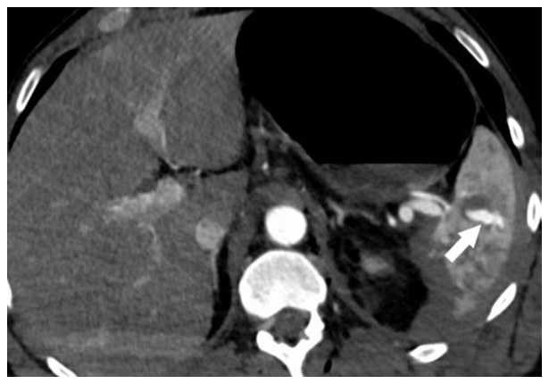
血流动力学稳定的患者。2018 年，基于 AAST 的肝脏分级系统已更新为新的器官损伤分级（OIS）。2018 版 OIS 的主要变化是纳入了局限于肝实质内或自由出血进入腹腔的血管病变以定义损伤严重程度。此类病变见于约 20% 的钝性肝脏外伤患者。预测非手术治疗失败的最常见不良 CT 征象包括：包膜外出血进入腹腔、裂伤延伸至主要肝静脉或下腔静脉，以及存在大量腹腔积血 [15, 16]。不推荐对钝性肝脏外伤患者常规行系统性随访 CT；重复影像学检查应仅根据患者的临床状态决定。据报道，胆管损伤（胆汁瘤、胆瘘、胆汁漏）是 2–8% 钝性肝脏外伤患者的并发症。可采用 MRI 联合胆道特异性对比剂来评估主要胆管是否受累，此种情况可能需外科处理。若临床上怀疑肝脏脓肿（约 4% 的肝脏外伤患者可并发），可推荐行 CT 或超声随访检查。
膀胱破裂。因此，当存在骨盆环骨折时，应在初始 CT 检查基础上加做 CT 膀胱造影，理想方法为向膀胱内灌注至少 250 mL 稀释对比剂。据报道，该技术对膀胱破裂的检出具有 95% 的敏感度和 99% 的特异度。若患者需行动脉造影，则不应行此项检查，因为溢出的对比剂可能掩盖出血部位。膀胱外组织（包括膀胱前 Retzius 间隙）内出现膀胱对比剂外溢是腹膜外膀胱破裂的特征性表现 [17]，这是成年患者最常见的膀胱破裂类型（约 80%），可通过经尿道或经耻骨上膀胱导尿术进行治疗。对比剂扩散进入腹腔间隙是腹膜内膀胱破裂的标志性表现，约占全部病例的 20% [17]，此类破裂需手术修复以避免腹膜炎（图 1.3）。少数情况下，腹膜内与腹膜外膀胱破裂可同时存在。
肠管与肠系膜损伤
肠道和肠系膜损伤的 CT 征象可能较为隐匿，常需细致分析以免遗漏。对这些病变的诊断若被延迟，将因腹膜炎、脓毒症、出血或肠缺血而导致较高的并发症发生率。大多数创伤性肠道损伤累及小肠，尤其是空肠近段和回肠远段。横结肠是大肠创伤性损伤最常见的部位。某些肠道损伤的 CT 征象通常非常特异，但对评估肠破裂的敏感度较低：肠壁连续性中断（罕见）、无其他原因可解释的腹腔内或腹膜后气体、节段性强化缺失（去血管化）。一些非特异性征象，如不能用实质脏器损伤解释的节段性肠管增厚或游离腹腔积液，应警惕潜在的肠穿孔。然而，弥漫性小肠壁全周增厚伴明显强化更提示休克肠综合征（低灌注复合征），尤其在合并下腔静脉变平、肾上腺强化及肾实质显影延迟时。弥漫性小肠壁增厚（无明显强化）合并下腔静脉扩张，经典见于积极复苏后（容量过负荷）。AAST 肠道与肠系膜损伤分级近期已更新，纳入了 CT 影像学的最新进展[18]。若临床怀疑肠损伤而 CT 缺乏明确的肠破裂征象，可在静脉和口服对比剂使用后 4–6 h 行随访 CT，以观察肠腔内对比剂外溢。提示肠系膜损伤的 CT 征象包括肠系膜血管活动性对比剂外溢（图 1.4）、邻近肠壁增厚处的肠系膜血肿（去血管化）、肠系膜血管突然中断（或
泌尿系统损伤
泌尿系统损伤通常（但并非总是）伴肉眼血尿。CT 检查是评估泌尿系统的参考标准。动脉期对显示肾脏血管损伤至关重要，而门静脉期则可更好地显示实质损伤并区分活动性出血与假性动脉瘤。肾脏损伤的 AAST 分级已于 2018 年略作修订。I 至 III 级肾损伤占肾脏创伤性病变的绝大多数（75%–98%），不累及集合系统，采用非手术治疗。局限于 Gerota 筋膜内的任何血管损伤，包括活动性出血，仍归为 III 级。IV 级损伤延伸至集合系统，或累及肾段静脉或动脉损伤（活动性出血或血栓形成）（图 1.2）。V 级损伤指肾主动静脉撕裂、去血管化肾脏伴活动性出血，或广泛挫裂伤致可辨认的肾实质丢失。IV 级和 V 级损伤可能需要手术治疗或血管内介入治疗。任何对去血管化肾脏的再灌注尝试均应在伤后 5 h 内完成，以避免不可逆的缺血性损害。输尿管损伤在钝性创伤中极为罕见，CT 征象可能非常隐匿，如轻度输尿管周围积液或脂肪间隙浑浊。需要 3–20 min 延迟排泄期扫描序列以明确诊断部分性或完全性输尿管撕裂。膀胱损伤中 90% 合并骨盆骨折，而约 2%–11% 的骨盆骨折合并
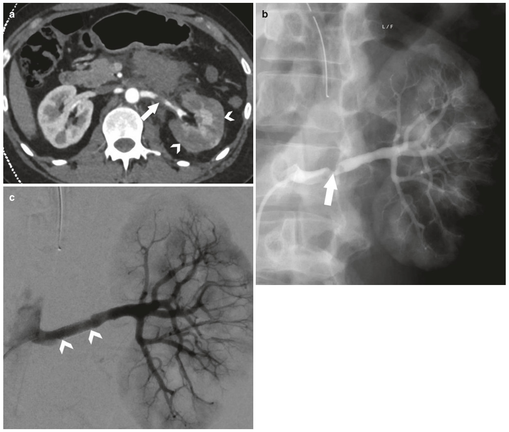
肠系膜血管呈串珠样改变，或肠袢间出现高密度扇形积液。前两种征象通常提示需行手术治疗[19]。
通常发生于较大的创伤暴力，并伴有严重的肝脏裂伤。膈肌破裂的 CT 征象典型表现为膈肌连续性中断及腹腔内容物疝入胸腔，右侧多为肝脏疝入，左侧则为各种腹腔内结构（胃、肠管、脂肪、脾脏）疝入，并伴有对侧心纵隔移位（图 1.5）。若上述结构与后胸壁直接接触，则称为"依赖内脏征"。由于许多非创伤性情况也可类似膈肌损伤表现，
膈肌损伤
膈肌损伤较为罕见，在入院 CT 检查时常被漏诊，尤其是右侧，文献报道其敏感度仅约 50%（左侧为 78%）。右侧膈肌损伤的预后较左侧更差，因为
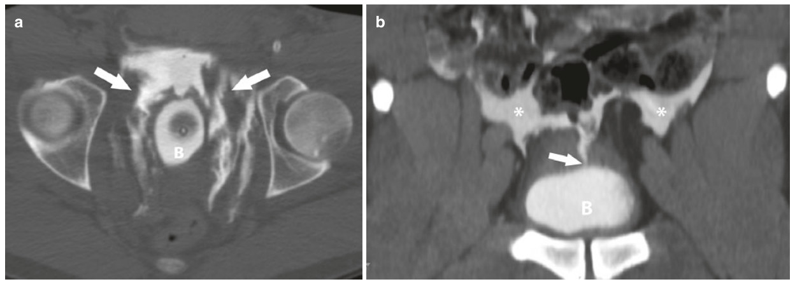
胰腺损伤
由于胰腺位于腹膜后间隙，受到较好保护，在腹部钝挫伤中相对少受累。腹部 CT 是评估胰腺损伤的标准诊断工具，但在入院时常出现假阴性。血清淀粉酶和脂肪酶的进行性升高应警惕可能存在胰腺损伤，因其可能在初次 CT 时被遗漏，应在伤后 24–48 h 复查 CT 以重新评估。AAST 胰腺损伤 5 级分级标准依据损伤程度以及胰管损伤的有无和位置（III 至 IV 级）。由于胰管是否受累关系到治疗策略，必须通过影像学进行评估（图 1.6）。远端胰管损伤（III 级，位于肠系膜上动脉左侧），若为部分性损伤，可仅行引流治疗；而近端胰管损伤通常需要外科手术处理 [21]。除非 CT 显示胰腺完全断裂，否则主胰管的完整性常难以通过该方法良好显示，需进一步行磁共振胰胆管成像（MRCP）检查，通常使用促胰液素激发。内镜逆行胰胆管造影（ERCP）仍是确诊胰管损伤的参考标准诊断工具；近年推荐用于支架置入治疗，可能减少手术切除的需要 [22]。
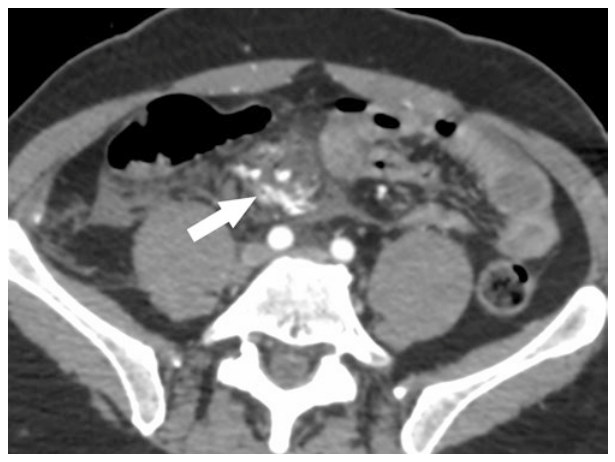
如胃扩张、膈神经麻痹及先天性疝等，识别疝出结构的缩窄区（“领征”）将有助于明确膈肌破裂的诊断 [20]。
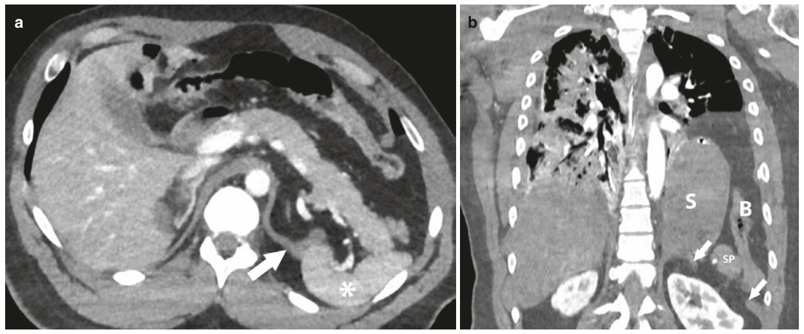
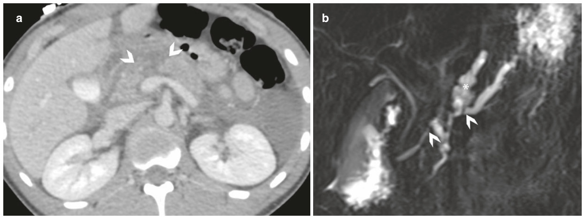
CT 也有助于显示创伤后并发症，尤其是与未被发现的胰管损伤相关的并发症，可表现为假性囊肿、胰管扩张或慢性胰腺炎征象。
1.2 非创伤性腹痛
1.2.1 检查方法
超声是评估右上腹和侧腹疼痛以及可能的妇科源性腹痛的一线检查方法。然而，超声依赖于操作者，且并非所有中心在全天各时段均可开展。CT 真正是急诊科的主力检查设备。通常需使用静脉对比剂，除非临床上高度怀疑肾绞痛或患者存在使用对比剂的强禁忌证。虽然常仅采集单一的门静脉期增强图像，但若临床怀疑消化道出血或肠缺血，则可加扫动脉期和静脉期。在这种情况下，平扫或虚拟平扫序列也有帮助。MRI 常因急诊情况下病情紧迫、检查时间较长及可及性有限而难以用于腹痛评估。但在病情稳定的患者中，包括孕妇和已确诊的炎症性肠病患者，MRI 仍可发挥作用。
1.2.2 右上腹
1.2.2.1 急性胆囊炎
当患者出现右上腹疼痛时，胆囊病变——尤其是胆结石和/或胆囊炎——通常是临床医师和放射科医师首先考虑的诊断。该诊断可通过多种影像学方法作出，包括 CT 和 MRI，但常将超声作为首选检查。急性胆囊炎的表现包括胆囊扩张，通常伴有胆泥和/或结石、周围炎症以及超声 Murphy 征阳性。在合并慢性胆囊炎的患者中，急性胆囊炎的诊断可能更为困难，此时胆囊可呈收缩状态而非扩张。坏疽性胆囊炎可表现为胆囊壁内积气，并可能无 Murphy 征。由于该病可进展为穿孔，早期诊断至关重要，其征象包括黏膜缺损或明确的胆囊壁连续性中断（图 1.7）。黄色肉芽肿性胆囊炎与胆囊癌鉴别困难，但胆囊壁增厚中出现含脂肪间隙提示前者 [23]
1.2.2.2 十二指肠溃疡
消化性溃疡病最常见的发生部位是十二指肠球部，其可突入肝门附近，邻近胆囊。由于这一解剖关系，十二指肠的炎症可能误诊为急性胆囊炎或胆管炎
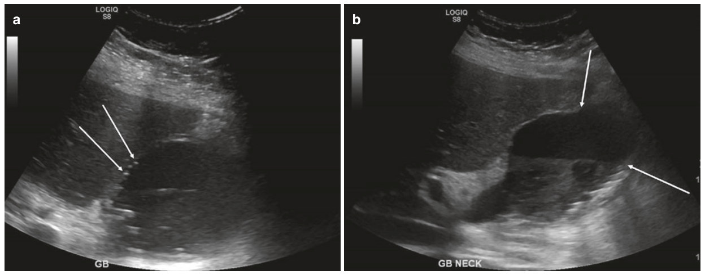
消化性溃疡的影像学表现包括十二指肠壁增厚及相邻脂肪间隙混浊，伴黏膜缺损和向外膨出 [24]。当十二指肠球部穿孔时，可见腹膜后或腹腔游离气体以及十二指肠旁积液。慢性十二指肠溃疡可导致狭窄和胃出口梗阻。值得注意的是，当消化性溃疡发生于十二指肠球部以远（球后）时，应考虑 Zollinger-Ellison 综合征的可能，该病由分泌胃泌素的肿瘤所致 [25]。累及十二指肠的克罗恩病亦可引起球后十二指肠溃疡。需要强调的是，球后十二指肠穿孔通常表现为腹膜后积气和/或积液，不同于十二指肠球部穿孔所致的腹腔内表现。一种可能类似十二指肠溃疡的疾病是沟槽状胰腺炎（"十二指肠囊性变性"）。该病被认为由胰腺壁内异位组织的炎症引起，典型表现为十二指肠内侧壁邻近胰腺界面处的炎症和囊肿 [26]。慢性沟槽状胰腺炎可导致十二指肠和/或胆总管远端狭窄
1.2.3 左上腹
1.2.3.1 急性胰腺炎
在以左上腹痛为主诉的患者中，急性胰腺炎是常被考虑的疾病。CT 通常是评估胰腺炎并发症（包括胰腺内及胰周坏死以及积液）的首选影像学方法。在评估胰腺实质坏死和血管并发症时，静脉
增强对比剂应用有价值。MRI 有助于显示胰管解剖及检出梗阻性肿块。急性胰腺炎诊断中的潜在陷阱包括不典型病例，如自身免疫性炎症。此类患者炎症程度较轻，胰腺呈光滑的“香肠”样表现，IgG4 水平升高，并可能伴其他自身免疫表现如肾炎[27]。最终，无论在典型胰腺炎还是自身免疫性胰腺炎中，影像学随访对于评估潜在肿瘤均具有价值。
1.2.3.2 胃炎
胃可因多种损伤而发生炎症。常见原因包括非甾体抗炎药、幽门螺杆菌感染及酒精。影像学表现包括黏膜充血、黏膜下水肿及胃周脂肪间隙模糊。在判断胃壁异常增厚时，需注意胃腔扩张程度。未充分扩张的胃可呈假性增厚，尤其胃窦部肌层较厚且蠕动较其他胃壁活跃。类似于十二指肠，炎症可伴发溃疡，表现为局限性突出，可伴穿孔和/或出血征象（图 1.8）。
1.2.4 右下腹痛
1.2.4.1 急性阑尾炎
急性阑尾炎是右下腹最常见的急腹症原因。影像学检查显著降低了阴性阑尾切除术的发生率,并且对
CT 是首选检查方法。然而，在年轻患者或妊娠患者中，为避免电离辐射暴露，可采用超声和/或 MRI。三种检查方法的共同表现包括阑尾直径大于 6 mm、阑尾腔积液扩张伴周围炎症。除明确急性阑尾炎诊断外，影像学还可对患者进行分层以选择非手术治疗方案，并识别相关并发症。例如，坏疽性阑尾炎可表现为黏膜强化减弱、阑尾壁内积气和/或穿孔。虽然大多数阑尾炎由阑尾粪石梗阻所致，但阑尾或盲肠基底部肿瘤亦可成为致病原因 [28]
1.2.4.2 盲肠炎症
右侧憩室在年轻患者中更为常见，炎症发作时临床上可类似急性阑尾炎。盲肠憩室炎在影像上也可能与阑尾炎混淆，表现为起源于盲肠基底部、末端呈盲端的结构伴周围炎症 [29]。然而，关键在于准确定位通常较长的正常阑尾，并将其与更呈类圆形的憩室区分开，这对明确诊断及指导患者接受通常非手术的治疗至关重要。其他引起原发性盲肠炎症的原因还包括网膜附件炎（epiploic appendagitis）。尽管网膜附件炎多见于左半结肠，但若在盲肠表面发现一个发炎的椭圆形含脂肪肿块，也应提示该诊断。在中性粒细胞减少患者中，局灶性结肠炎（“中性粒细胞减少性结肠炎”或“盲肠炎”）也可表现为右下腹局限性炎症（图 1.9）。临床背景及阑尾未见扩张是提示该诊断的重要线索。
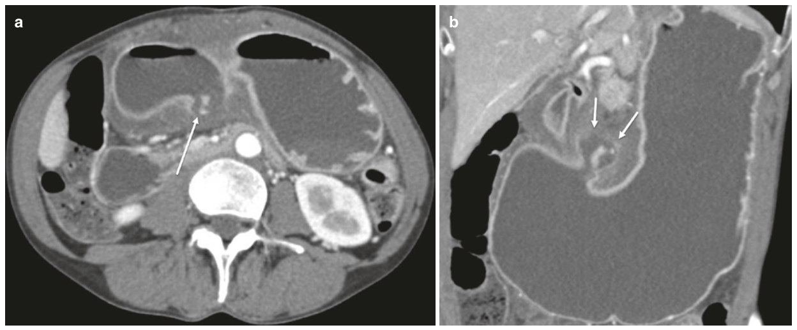
1.2.4.3 末端回肠炎
回肠末端可发生炎症，临床表现与急性阑尾炎相似，常发生于克罗恩病的背景下。此时，炎症通常表现为不对称、结节状肠壁增厚，伴周围肠梗阻和/或穿透性病变。MRI 在急性期可显示肠壁 T2 信号增高及弥散受限。除炎症性肠病外，回肠也可因感染而发生炎症，经典病原体包括结核分枝杆菌、沙门菌属及耶尔森菌属。回肠末端也可因憩室炎而发生炎症，可由获得性憩室或梅克尔憩室引起，二者均可导致急性腹痛（图 1.10）。该诊断的关键在于识别位于回肠末端、且与阑尾分开的局限性肠壁外突，其周围伴炎性改变。梅克尔憩室还可表现为肠套叠、消化道出血及小肠扭转 [30]。
1.2.5 左下腹痛
1.2.5.1 乙状结肠憩室炎
降结肠和/或乙状结肠憩室炎是左下腹痛的常见病因之一。影像学表现为自结肠突出的炎性、圆形外突影，可并发肠穿孔并继发脓肿形成。慢性期可形成结肠与邻近膀胱或其他结构之间的瘘管。有时急性憩室炎
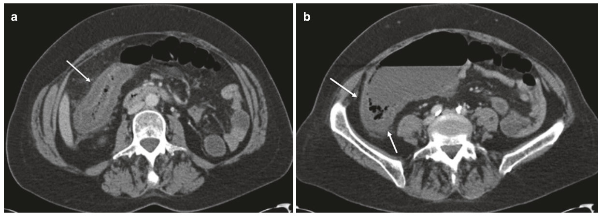
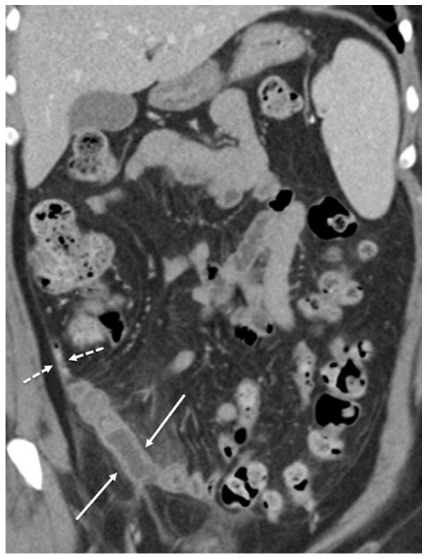
时可表现为肿块样改变,与恶性肿瘤鉴别困难。此类病例中,淋巴结肿大更常见于腺癌,而受累肠段存在憩室则更支持憩室炎的诊断[31]。慢性期,乙状结肠憩室炎可导致肌层肥厚及管腔潜在狭窄。
1.2.5.2 肠脂垂炎
肠脂垂是结肠浆膜下突出的小袋状腹膜脂肪结构，以乙状结肠区域最为粗大。它们在 CT 上通常仅在被液体包绕，或因扭转而发生炎症和（或）梗死形成肠脂垂炎时方能显示。最常见的 CT 表现为紧贴结肠壁的小圆形或卵圆形脂肪密度病灶，周围伴有炎性改变。常可见中央高密度区，代表中央血管血栓形成。
1.2.5.3 盆腔疼痛：子宫内膜异位症
子宫内膜异位症是不孕和慢性盆腔疼痛的重要原因。除卵巢外，子宫内膜异位灶还可累及乙状结肠、直肠及子宫直肠陷凹，从而引起左下腹和盆腔疼痛。这些异位灶可并发出血、炎症，并最终导致纤维化和粘连 [32]。子宫内膜异位囊肿的典型超声表现为均质低回声病灶，壁薄伴后方回声增强，内部呈低水平回声，无内部血流。MRI 对检出小异位灶非常有价值。子宫内膜异位囊肿在 T1WI 上呈高信号，T2WI
T2 加权像上呈低信号，称为“T2 阴影征”。而 CT 仅可显示肿块或肠壁局限性增厚周围的炎性改变。
1.2.5.4 卵巢扭转
卵巢扭转多见于年轻患者，通常（但并非必然）发生于存在潜在肿块的基础上。扭转卵巢的影像学征象包括卵巢增大、滤泡周边分布、卵巢血管蒂扭转、子宫向扭转侧偏移以及周围炎症。超声可显示扭转卵巢内多普勒信号减弱或消失[33]。然而，不完全或间歇性扭转可能导致多普勒检查假阴性。
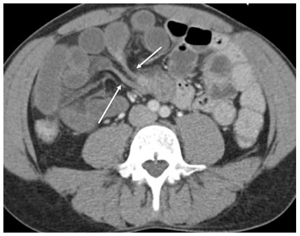
1.2.6 弥漫性腹痛
1.2.6.1 小肠梗阻
小肠梗阻（SBO）是因腹痛住院的常见原因。SBO 的病因众多，其中粘连占大多数。其他病因包括炎性肠病、腹内及腹外疝、肿瘤、肠套叠、肠扭转及异物。SBO 的典型症状包括弥漫性腹痛、腹胀及呕吐。然而，上述症状与实验室检查对诊断 SBO 的敏感度和特异度有限。虽然腹部平片与透视检查在 SBO 诊断中可发挥一定作用，但当临床怀疑此情况时，CT 已成为主要的影像学检查方法。CT 可识别扩张（>3 cm）的小肠及导致梗阻的移行点，并可能发现潜在病因。根据梗阻程度不同，移行点之后可见肠管骤然减压。此外，CT 还能识别已发生或存在并发症风险的患者。闭袢性梗阻即为例证，其梗阻肠段的人口与出口常被单一来源（如粘连或疝囊颈）压迫[34]（图 1.11）。小肠梗阻并发缺血可表现为非特异性征象，包括肠壁水肿与肠系膜水肿。肠壁强化减低及壁内出血是 SBO 背景下提示缺血的更具特异性征象。SBO 并发穿孔时可见肠腔外气体和/或边界清晰的液性集聚[35]。
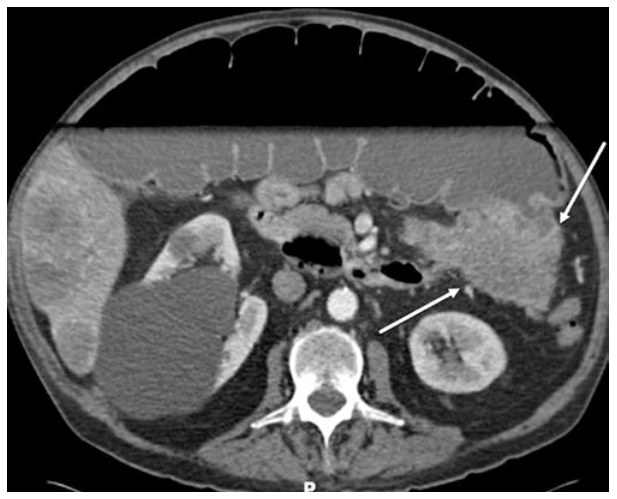
1.2.6.2 结肠梗阻
与小肠梗阻不同，结肠肿瘤是大肠梗阻最常见的病因[36]（图 1.12）。梗阻性结肠癌左侧较右侧更为常见，可能与远端肠腔逐渐变窄有关。
虽然最常见于原发性结肠腺癌，但其他原发肿瘤的直接侵犯或结肠的外源性转移性累及也可导致肠梗阻。CT 上，梗阻性结肠肿瘤表现为黏膜下层软组织密度的肿块，并伴有其他恶性肿瘤征象，包括淋巴结肿大与转移。除恶性肿瘤外，结肠扭转是结肠梗阻的第二大常见病因。它最常
发生于盲肠与乙状结肠。盲肠扭转由升结肠近端活动度增加并扭转所致。除近端结肠扭转外，盲肠相对于升结肠向前折叠（即所谓的盲肠翻折）也可导致盲肠梗阻。乙状结肠闭袢性梗阻典型见于老年患者，常为长期衰弱及便秘者。乙状结肠扭转作为结肠扭转最常见的部位，可呈慢性反复扭转与自行复位过程，临床表现可为隐匿性。与盲肠扭转类似，CT 可显示结肠闭袢性梗阻及乙状结肠系膜的扭转或“漩涡”征。与任何肠段的扭转一样，及时减压（内镜下或手术）为主要治疗手段[37]。
1.2.6.3 急性肠系膜缺血
急性肠系膜缺血（AMI）是一类罕见但致命的疾病。外科文献指出，动脉血栓栓塞是最常见原因，其次为非闭塞性和静脉性原因。然而，非闭塞性缺血的实际发生率很可能被低估。AMI 的临床症状缺乏特异性。典型表现为患者突发剧烈腹痛，疼痛程度与体格检查所见不相称。可出现乳酸和 D-二聚体水平升高，但对 AMI 并无特异性。静脉注射对比剂的 CT 血管成像（CTA）是疑诊急性肠系膜缺血成人患者的首选检查。然而，由于临床上常未疑及该诊断，多数患者实际接受的为常规门静脉期成像。MR 血管成像诊断 AMI 具有较高的敏感度和特异度，但由于设备可及性差及检查时间长，通常不用于急诊场景。因此，该方法最适合用于对碘对比剂过敏的患者。闭塞性 AMI 的经典且特异的影像学表现包括肠系膜动脉内充盈缺损，伴肠壁强化减低或无强化（图 1.13）。小肠肠腔内积气——肠壁积气征——亦可见于其他疾病，但可能为肠梗死的不良预兆。其他非特异性表现包括肠系膜淤血、腹水及肠壁增厚。这些表现更常见于静脉性缺血和（或）再灌注损伤 [38]。与小肠缺血不同，缺血性结肠炎通常由相对轻度的低血压发作引起，常为自限性，但也可表现为全层坏死和腹膜炎。虽然经典描述见
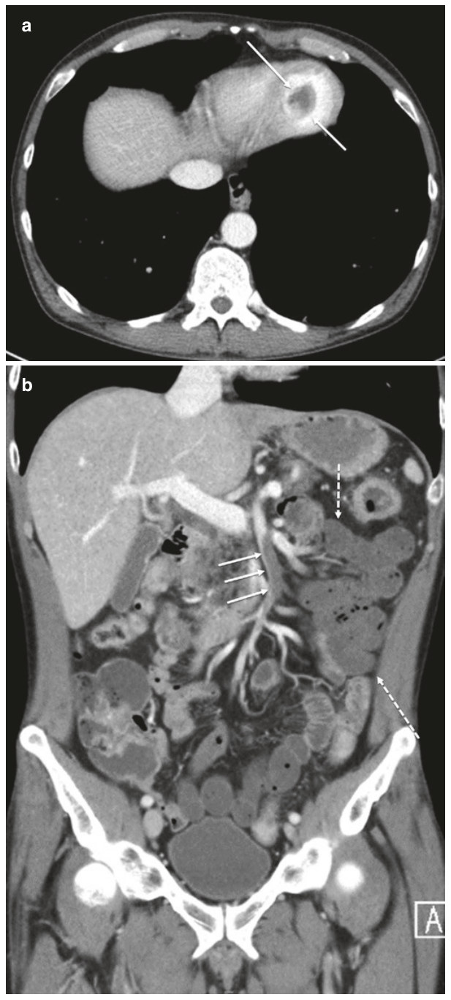
缺血性结肠炎可累及结肠的任何部位，而不仅限于主要血管床之间的解剖
1.2.7 小结
无论在创伤还是非创伤情况下，影像学在急诊科中均占据核心地位。在这两种情形中，CT 通常是主力检查手段，但在特定的临床表现和特定患者群体中，超声和 MRI 也具有重要价值。急诊放射科医师和综合放射科医师应熟悉空腔脏器及实质器官损伤的 CT 征象，并对其进行分级，以指导临床治疗决策。同样，放射科医师还应了解腹部各象限常见疾病及其鉴别诊断，以及可在多部位出现的疾病。
1. Holmes JF, Wisner DH, McGahan JP, Mower WR, Kuppermann N. Clinical prediction rules for identifying adults at very low risk for intra-abdominal injuries after blunt trauma. Ann Emerg Med. 2009;54(4):575–84.
2. Kortbeek JB, Al Turki SA, Ali J, Antoine JA, Bouillon B, Brasel K, et al. Advanced trauma life support, 8th edition, the evidence for change. J Trauma. 2008;64(6):1638–50.
3. Poletti PA, Mirvis SE, Shanmuganathan K, Takada T, Killeen KL, Perlmutter D, et al. Blunt abdominal trauma patients: can organ injury be excluded without performing computed tomography? J Trauma. 2004;57(5):1072–81.
4. Shanmuganathan K, Mirvis SE, Sherbourne CD, Chiu WC, Rodriguez A. Hemoperitoneum as the sole indicator of abdominal visceral injuries: a potential limitation of screening abdominal US for trauma. Radiology. 1999;212(2):423–30.
5. Boscak AR, Shanmuganathan K, Mirvis SE, Fleiter TR, Miller LA, Sliker CW, et al. Optimizing trauma multidetector CT protocol for blunt splenic injury: need for arterial and portal venous phase scans. Radiology. 2013;268(1):79–88.
6. Hamilton JD, Kumaravel M, Censullo ML, Cohen AM, Kievlan DS, West OC. Multidetector CT evaluation of active extravasation in blunt abdominal and pelvic trauma patients. Radiographics. 2008;28(6):1603–16.
7. Poletti PA, Kinkel K, Vermeulen B, Irmay F, Unger PF, Terrier F. Blunt abdominal trauma: should US be used to detect both free fluid and organ injuries? Radiology. 2003;227(1):95–103.
8. Shackford SR, Molin M. Management of splenic injuries. Surg Clin North Am. 1990;70(3):595–620.
9. Gavant ML, Schurr M, Flick PA, Croce MA, Fabian TC, Gold RE. Predicting clinical outcome of nonsurgical management of blunt splenic injury: using CT to reveal abnormalities of splenic vasculature. AJR Am J Roentgenol. 1997;168(1):207–12.
10. Lee JT, Slade E, Uyeda J, Steenburg SD, Chong ST, Tsai R, et al. American Society of Emergency Radiology Multicenter Blunt Splenic Trauma Study: CT and clinical findings. Radiology. 2021;299(1):122–30.
11. Mirvis SE, Whitley NO, Gens DR. Blunt splenic trauma in adults: CT-based classification and correlation with prognosis and treatment. Radiology. 1989;171(1):33–9.
12. Kozar RA, Crandall M, Shanmuganathan K, Zarzaur BL, Coburn M, Cribari C, et al. Organ injury scaling 2018 update: spleen, liver, and kidney. J Trauma Acute Care Surg. 2018;85(6):1119–22.
13. Davis KA, Fabian TC, Croce MA, Gavant ML, Flick PA, Minard G, et al. Improved success in nonoperative management of blunt splenic injuries: embolization of splenic artery pseudoaneurysms. J Trauma. 1998;44(6):1008–13; discussion 13-5.
14. Poletti PA, Becker CD, Arditi D, Terraz S, Buchs N, Shanmuganathan K, et al. Blunt splenic trauma: can contrast enhanced sonography be used for the screening of delayed pseudoaneurysms? Eur J Radiol. 2013;82(11):1846–52.
15. Fang JF, Wong YC, Lin BC, Hsu YP, Chen MF. The CT risk factors for the need of operative treatment in initially hemodynamically stable patients after blunt hepatic trauma. J Trauma 2006;61(3):547– 53; discussion 53–4.
16. Poletti PA, Mirvis SE, Shanmuganathan K, Killeen KL, Coldwell D. CT criteria for management of blunt liver trauma: correlation with angiographic and surgical findings. Radiology. 2000;216(2):418–27.
17. Gross JA, Lehnert BE, Linnau KF, Voelzke BB, Sandstrom CK. Imaging of urinary system trauma. Radiol Clin N Am. 2015;53(4):773–88. ix
18. Tominaga GT, Crandall M, Cribari C, Zarzaur BL, Bernstein M, Kozar RA, et al. Organ injury scaling 2020 update: bowel and mesentery. J Trauma Acute Care Surg. 2021;91(3):e73–e7.
19. Alabousi M, Mellnick VM, Kashef Al-Ghetaa R, Patlas MN. Imaging of blunt bowel and mesenteric injuries: current status. Eur J Radiol. 2020;125:108894.
20. Killeen KL, Mirvis SE, Shanmuganathan K. Helical CT of diaphragmatic rupture caused by blunt trauma. AJR Am J Roentgenol. 1999;173(6):1611–6.
21. Lin BC, Hwang TL. Resection versus drainage in the management of patients with AAST-OIS grade IV blunt pancreatic injury: a single trauma Centre experience. Injury. 2022;53(1):129–36.
22. Biffl WL, Ball CG, Moore EE, Lees J, Todd SR, Wydo S, et al. Don’t mess with the pancreas! A multicenter analysis of the management of low-grade pancreatic injuries. J Trauma Acute Care Surg. 2021;91(5):820–8.
23. O’Connor OJ, Maher MM. Imaging of cholecystitis. Am J Roentgenol. 2011;196(4):W367–W74.
24. Tonolini M, Ierardi AM, Bracchi E, Magistrelli P, Vella A, Carrafiello G. Non-perforated peptic ulcer disease: multidetector CT findings, complications, and differential diagnosis. Insights Imaging. 2017;8(5):455–69.
25. Davila A, Menias CO, Alhalabi K, Lall C, Pickhardt PJ, Lubner M, et al. Multiple endocrine neoplasia: spectrum of abdominal manifestations. AJR Am J Roentgenol. 2020;215(4):885–95.
26. Kim DU, Lubner MG, Mellnick VM, Joshi G, Pickhardt PJ. Heterotopic pancreatic rests: imaging features, complications, and unifying concepts. Abdom Radiol (NY). 2017;42(1):216–25.
27. Vlachou PA, Khalili K, Jang HJ, Fischer S, Hirschfield GM, Kim TK. IgG4-related sclerosing disease: autoimmune pancreatitis and extrapancreatic manifestations. Radiographics. 2011;31(5):1379–402.
28. Shademan A, Tappouni RF. Pitfalls in CT diagnosis of appendicitis: pictorial essay. J Med Imaging Radiat Oncol. 2013;57(3):329–36.
29. Pooler BD, Lawrence EM, Pickhardt PJ. Alternative diagnoses to suspected appendicitis at CT. Radiology. 2012;265(3):733–42.
30. Rossi P, Gourtsoyiannis N, Bezzi M, Raptopoulos V, Massa R, Capanna G, et al. Meckel’s diverticulum: imaging diagnosis. AJR Am J Roentgenol. 1996;166(3):567–73.
31. Gryspeerdt S, Lefere P. Chronic diverticulitis vs. colorectal cancer: findings on CT colonography. Abdom Imaging. 2012;37(6):1101–9.
32. Mason BR, Chatterjee D, Menias CO, Thaker PH, Siegel CL, Yano M. Encyclopedia of endometriosis: a pictorial rad-path review. Abdom Radiol (NY). 2020;45(6):1587–607.
33. Dawood MT, Naik M, Bharwani N, Sudderuddin SA, Rockall AG, Stewart VR. Adnexal torsion: review of radiologic appearances. Radiographics. 2021;41(2):609–24.
34. Elsayes KM, Menias CO, Smullen TL, Platt JF. Closed-loop small-bowel obstruction: diagnostic patterns by multidetector computed tomography. J Comput Assist Tomogr. 2007;31(5):697–701.
35. Scaglione M, Galluzzo M, Santucci D, Trinci M, Messina L, Laccetti E, et al. Small bowel obstruction and intestinal ischemia: emphasizing the role of MDCT in the management decision process. Abdom Radiol (NY). 2022;47(5):1541–55.
36. Verheyden C, Orliac C, Millet I, Taourel P. Large-bowel obstruction: CT findings, pitfalls, tips and tricks. Eur J Radiol. 2020;130:109155.
37. Wortman JR, Dhyani M, Ali SM, Scholz FJ. Pearls and pitfalls in multimodality imaging of colonic volvulus. Radiographics. 2020;40(4):1039–40.
38. Srisajjakul S, Prapaisilp P, Bangchokdee S. Comprehensive review of acute small bowel ischemia: CT imaging findings, pearls, and pitfalls. Emerg Radiol. 2022;29(3):531–44.
39. Taourel P, Aufort S, Merigeaud S, Doyon FC, Hoquet MD, Delabrousse E. Imaging of ischemic colitis. Radiol Clin N Am. 2008;46(5):909–24. vi
腹部感染性疾病的影像学表现（包括 COVID-19）
腹部感染性疾病的影像学表现（包括 COVID-19）
Rubal Rai, Ramandeep Singh, Peter F. Hahn, Avinash Kambadakone, 和 Richard M. Gore
2.1 引言
腹腔内感染是重症监护环境中第二大死亡原因，在美国估计每年发病 350 万例 [1]。在发展中国家和发达国家中，鉴于其病因繁多，腹部感染具有很高的发病率和死亡率风险。免疫系统受损可能在恶性肿瘤或免疫受损等易感情况下导致更高的感染发生率，并影响长期预后 [2–4]。宿主易感因素包括屏障破坏（如皮肤或黏膜）、解剖性梗阻、既往恶性肿瘤、免疫抑制（包括化疗）、外科手术、介入操作以及医疗器械部位感染。常见的病原体可分为病毒性（包括 COVID-19）、细菌性（包括革兰阴性菌和革兰阳性菌）、抗酸杆菌以及医院获得性
R. Rai · R. Singh · P. F. Hahn · A. Kambadakone 麻省总医院放射科，美国马萨诸塞州波士顿 电子邮箱：Rsingh17@mgh.harvard.edu; phahn@partners.org; akambadakone@mgh.harvard.edu
R. M. Gore (*) 西北大学范伯格医学院放射科，美国伊利诺伊州埃文斯顿
感染如艰难梭菌，真菌性如念珠菌、曲霉、毛霉，以及寄生虫性如棘球蚴。受累的器官系统和部位包括胃肠道和泌尿生殖道、肝胆、胰腺、腹膜、腹膜后以及腹壁。根据器官系统受累情况，可采用多种影像学方法，包括平片、透视、超声（US）、计算机断层扫描（CT）（包括双能量 CT）、磁共振成像（MRI）以及正电子发射断层扫描（PET）等分子成像技术。关于感染部位和病因的特异性影像学特征有助于早期确诊并改善患者预后。本章旨在讨论感染的相关危险因素和发病机制，并展示腹部和盆腔感染的多样化影像学表现。
2.2 感染的危险因素
腹部感染可原发发生，也可发生于多种危险因素背景下，如屏障破坏（如皮肤或黏膜）、解剖性梗阻、既往恶性肿瘤、肿瘤负荷、免疫抑制（包括化疗）、外科手术、介入操作以及医疗器械部位感染 [5]。
2.2.1 屏障破坏
皮肤和黏膜表面是人体抵御感染的关键防御机制。这些屏障可因创伤、导管置入、血管损伤、恶性肿瘤、放疗和化疗等易感条件而遭到破坏 [6]。黏膜屏障损伤经历四个阶段：炎症、凋亡、溃疡和愈合 [7]。
2.2.2 解剖性梗阻
胃肠道、肝胆和泌尿道的解剖性梗阻可成为梗阻后感染的易感因素。小肠或大肠梗阻可由粘连、狭窄或肿瘤引起，临床处理较为棘手，因为其可能导致肠缺血、穿孔、瘘管、腹膜炎和盆腔脓肿（通常为多重微生物感染）。肝胆梗阻可导致复发性胆管炎和肝脓肿。泌尿道梗阻可引起肾积水，并可进展为复杂性肾盂肾炎以及肾和前列腺脓肿 [5]。
2.2.3 血管损伤
血管闭塞可导致循环不良，进而发生缺血和梗死，从而易于发生器官感染。医源性、血栓或恶性肿瘤等原因引起的动脉血流减少，以及由肿瘤直接侵犯或肿块占位效应引起的静脉回流障碍，均可导致肠穿孔和脓肿形成等并发症 [8]。
2.2.4 既往恶性肿瘤
癌和肉瘤等实体器官恶性肿瘤常导致自然屏障破坏和梗阻，而淋巴瘤、急性髓系白血病和慢性淋巴细胞白血病等血液系统恶性肿瘤除引起屏障破坏外，还可导致严重而持久的免疫抑制和中性粒细胞减少，从而易于发生感染。
这些感染的影像学特征有助于发现和处理任何潜在的并发症。
2.2.6 既往放疗
急性放疗根据辐射剂量和照射野的不同可引起炎症和黏膜屏障损伤，从而使病原体进入体内和血流 [14]。急性放射性损伤最常见的表现包括黏膜炎、食管炎及食管动力异常、结肠炎以及肛门直肠并发症。慢性放疗可导致纤维化伴狭窄或瘘管形成，从而引起梗阻、淤滞和脏器穿孔、继发感染及脓肿形成 [14, 15]。慢性放射性损伤引起感染的另一种潜在机制是血管硬化导致组织低灌注。部分放射性改变如小肠肠壁增厚、黏膜强化增加和管腔变窄 [15]。
2.2.7 医疗器械
包括引流管及腹膜透析导管、血管通路导管、支架及分流器在内的医疗器械，不仅可作为皮肤定植葡萄球菌等感染性病原体的侵入途径，还会使治疗变得复杂 [16]。浅表感染可沿皮肤或腹壁肌肉蔓延，引起腹膜炎及腹盆腔脓肿。胆道支架可导致胆管炎及反复梗阻，输尿管支架及经皮肾造瘘管则可引起急慢性肾盂肾炎及菌血症 [17, 18]。借助多模态影像学及时诊断，有助于此类感染的监测及并发症的预防。
2.2.5 免疫抑制 2.2.8 手术
化疗及骨髓浸润所致的免疫抑制可引起发热性中性粒细胞减少，其绝对中性粒细胞计数 < 1500 个/mm3（重度中性粒细胞减少 < 500 个/mm3）[9]。该临床状况可导致多种细菌感染，常见的为肠道革兰阴性菌、金黄色葡萄球菌及梭状芽胞杆菌 [3, 10, 11]。此外，还可发生病毒感染及侵袭性真菌感染，如念珠菌及曲霉菌 [12, 13]。影像学
手术部位感染在全球范围内的发生率为 11% [19]。其程度可轻可重，轻者如手术切口感染，重者如肠吻合口漏及胆漏，往往需再次手术干预。粘连、梗阻、瘘及瘘管的存在可使手术部位感染易于发生。影像学有助于识别、定性并处理这些并发症。
2.3 腹部感染影像学
影像学在评估腹腔及盆腔感染中发挥关键作用，有助于早期检出并进行处理，真正为患者诊疗增添价值并有望改善预后。尽管腹部 X 线片在很大程度上已被断面影像取代，但其对肠梗阻及气腹的监测，以及对植入装置和导管的评估仍具重要价值 [20]。超声作为一种辅助检查手段，可用于床旁评估肝胆、泌尿生殖及妇科感染及其相关病变。然而，由于声波无法穿透肠道气体，超声在评估胃肠道感染性病因方面存在局限。其他限制因素包括操作者依赖性、患者配合度及体型。因此，对于腹部感染患者及以腹痛、发热或不明原因脓毒症等非特异性主诉就诊者的检查，增强 CT（CECT）已成为首选诊断方法。近期，双能 CT（DECT）借助物质密度图像及碘定量分析有助于检出并评估感染性病变。MRI 是良好的解决问题工具，可更好地定性肝胆或胰腺感染，并可与感染相似病变（如炎症性或自身免疫性病因及恶性肿瘤）相鉴别 [21]。在 CT 仍为首选影像学方法的同时，MRI 不仅有助于诊断微生物感染，还可纵向追踪细菌感染 [22]。对于细菌及病毒感染，MRI 有助于检出局部炎症、水肿形成及组织特征（如反映免疫应答的水含量及扩散度评估）。虽然 CT 检查伴随的辐射剂量在某些临床情况下有利于选择 MRI，但 MRI 较长的采集时间、因运动伪影所致的图像质量下降、对较长屏气及执行指令的要求，均会限制其诊断效能。核素检查（如铟-111 白细胞扫描）对血管移植物感染最为有用，但其较大范围的应用已被断面影像取代 [23]。核素摄取与 SPECT/CT 联合可提高定位准确性，而 FDG PET/CT 不仅可定位感染灶，还可对感染程度进行定量 [24]。白光成像及联动彩色成像内镜已用于幽门螺杆菌感染的诊断，具有较高的敏感度及特异度。功能成像大体上仍属研究工具，其在各类感染性疾病中的临床应用前景尚不确定。
核素摄取与 SPECT/CT 联合可提高定位准确性，而 FDG PET/CT 不仅可定位感染灶，还可对感染程度进行定量 [24]。白光成像及联动彩色成像内镜已用于幽门螺杆菌感染的诊断，具有较高的敏感度及特异度。功能成像大体上仍属研究工具，其在各类感染性疾病中的临床应用前景尚不确定。
2.3.1 胃肠道感染
胃肠道免疫系统依赖于多种组分，包括胃酸、肠道菌群和肠动力，以及体液免疫和细胞免疫防御机制[25]。任何一种防御机制受损均可引发感染性疾病。与免疫功能正常者相比，免疫抑制状态下的胃肠道感染具有更高的发病率和死亡率。常见的引起结肠炎的胃肠道病原体包括革兰阴性杆菌，如志贺菌（S. dysenteriae、S. flexneri、S. boydii 和 S. sonnei）、大肠埃希菌、艰难梭菌和沙门菌，以及病毒如巨细胞病毒（CMV）[26]。在发展中国家，结核分枝杆菌感染较为常见，最常累及部位为末端回肠和盲肠，引起结肠炎、淋巴结肿大和腹膜炎。细菌感染在增强 CT（CECT）和 MRI 上的影像学表现包括肠壁增厚伴强化和水肿、脂肪混浊、穿孔、脓肿、中性粒细胞减少性小肠结肠炎以及继发性腹膜炎。准确诊断有赖于结合临床病史、症状、影像学表现以及血清学和实验室检查结果综合判断。治疗多以保守为主，仅在出现穿孔或出血等并发症时才考虑介入或外科处理。除肠壁外，在合并肿瘤或放射性损伤等基础病变时，还可出现直肠周围和肛周感染，表现为腹泻、里急后重和便血[27]。急性直肠炎（<6 个月）由黏膜炎症所致，而慢性直肠炎则由
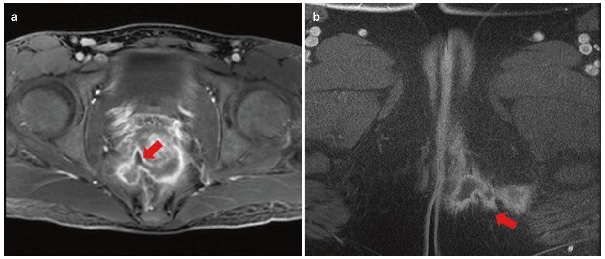
闭塞性动脉内膜炎引起的微血管功能不全[28]。由此所致的血管损害可引起肠缺血、透壁纤维化，并可能发生狭窄、溃疡、瘘管和穿孔[28]。增强 CT（CECT）可显示照射部位的肠壁分层和肠壁增厚。瘘管以透视检查评估效果更佳。MRI 具有较高的软组织分辨力，能够清晰显示瘘管的走行范围及括约肌受累程度，以及直肠周围和肛周脓肿的情况（图 2.1）[29]。
2.3.1.1 艰难梭菌结肠炎
艰难梭菌（C. difficile）为革兰阳性厌氧菌感染，常在使用抗生素数周后破坏肠道正常菌群时发生，是最常见的医院内肠道感染（图 2.2）[30]。该感染虽常表现为轻症，但亦可呈暴发经过，引起低血压或肠麻痹而需住院治疗[31]。严重表现包括巨结肠、穿孔和败血症，病死率可达 25%[31]。感染通常累及全结肠，节段性受累较少见[30, 31]。增强 CT（CECT）特征包括黏膜溃疡、假膜形成、肠壁增厚、黏膜下水肿、黏膜明显强化以及结肠周围脂肪混浊，后期可进展为强化减弱和黏膜剥脱。透壁性水肿伴肠壁增厚以及黏膜充血可形成"手风琴征"，即口服对比剂滞留于水肿的结肠袋皱襞之间[32]。黏膜不规则伴息肉样突起可致肠壁呈结节状改变，并在对比剂灌肠和 X 线平片上出现"指压迹征"[32]。影像学上若结肠直径超过 6 cm，
则提示中毒性巨结肠。治疗以药物治疗为主，仅在复杂病例需外科处理。
2.3.1.2 中性粒细胞减少性小肠结肠炎
中性粒细胞减少性小肠结肠炎又称中性粒细胞减少性结肠炎或盲肠炎，是化疗的一种潜在致命性并发症，多见于急性髓系白血病等血液系统恶性肿瘤以及细胞毒性化疗后。该病多发生于严重中性粒细胞减少的患者（细胞计数 <500 个/mm3），通常在化疗后第 3 周出现[33]。最常见的受累部位为盲肠，临床表现多为右下腹痛[34]。既往存在憩室炎、恶性肿瘤及术后状态等炎症因素时，该病风险增加[33]。感染最常为多种微生物混合感染，亦可由革兰阴性杆菌、革兰阳性球菌和厌氧菌等细菌以及念珠菌等真菌病原体引起[33]。临床、实验室和影像学特征的综合判断对诊断至关重要。增强 CT（CECT）是首选的影像学检查方法，其表现包括肠壁增厚、黏膜下水肿、黏膜明显强化，以及盲肠和升结肠区域脂肪混浊，可伴末端回肠受累（图 2.3）。并发症包括穿孔、肠壁积气、肠腔外气体以及结肠周围积液[32, 35]。在儿童患者中，超声（US）显示肠壁增厚 >10 mm 结合临床和实验室检查结果可作出诊断[36]。影像学鉴别诊断包括盲肠憩室炎和假膜性结肠炎。
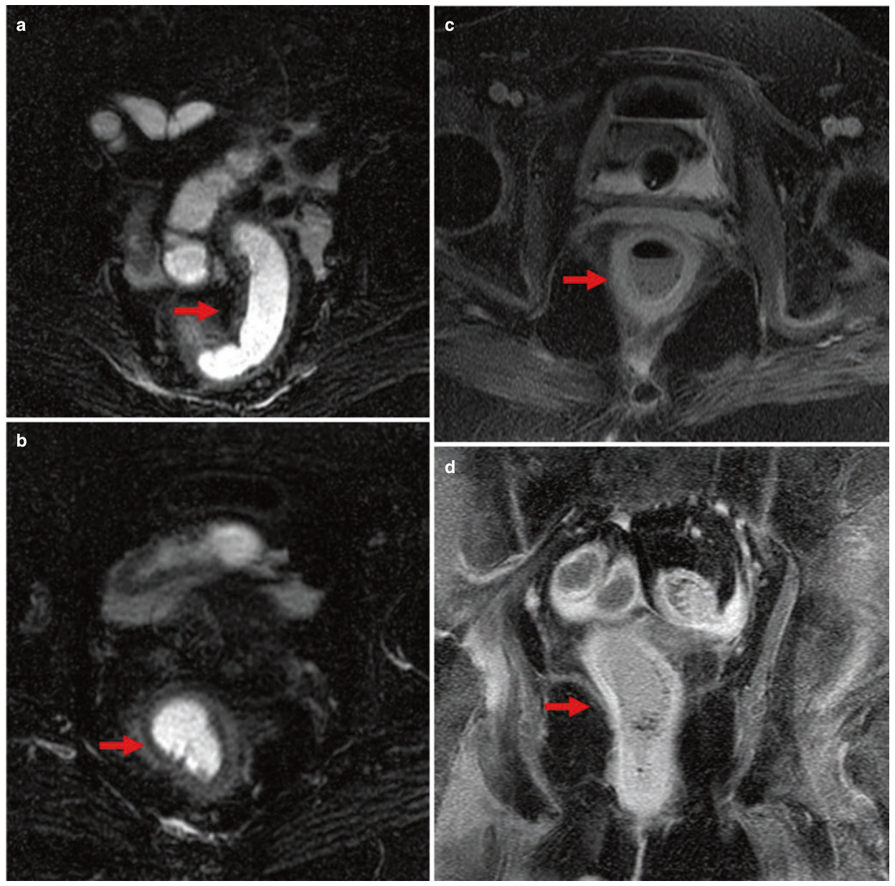
2.3.1.3 胃肠道结核
可见肠石、梗阻征象如肠袢扩张伴多发气液平面，或穿孔时膈下游离气体。也可见钙化表现，如钙化淋巴结、钙化肉芽肿以及肝脾肿大。钡剂检查可见肠道转运加速；钡柱过度分节、沉淀、絮凝及稀释，肠壁皱襞僵硬增厚，肠腔狭窄及肠管狭窄。增强 CT 及 CT 小肠造影可见
由于肠内容物淤滞、淋巴组织存在以及杆菌与肠黏膜接触更密切等因素，胃肠道最常见的结核累及部位为回盲部，约占 64% 的病例[37]。病变在肠道可呈溃疡型及溃疡增殖型，肠管及邻近淋巴结可见融合性肉芽肿及干酪样坏死[38]。罕见情况下，十二指肠及食管也可受累。腹部平片可
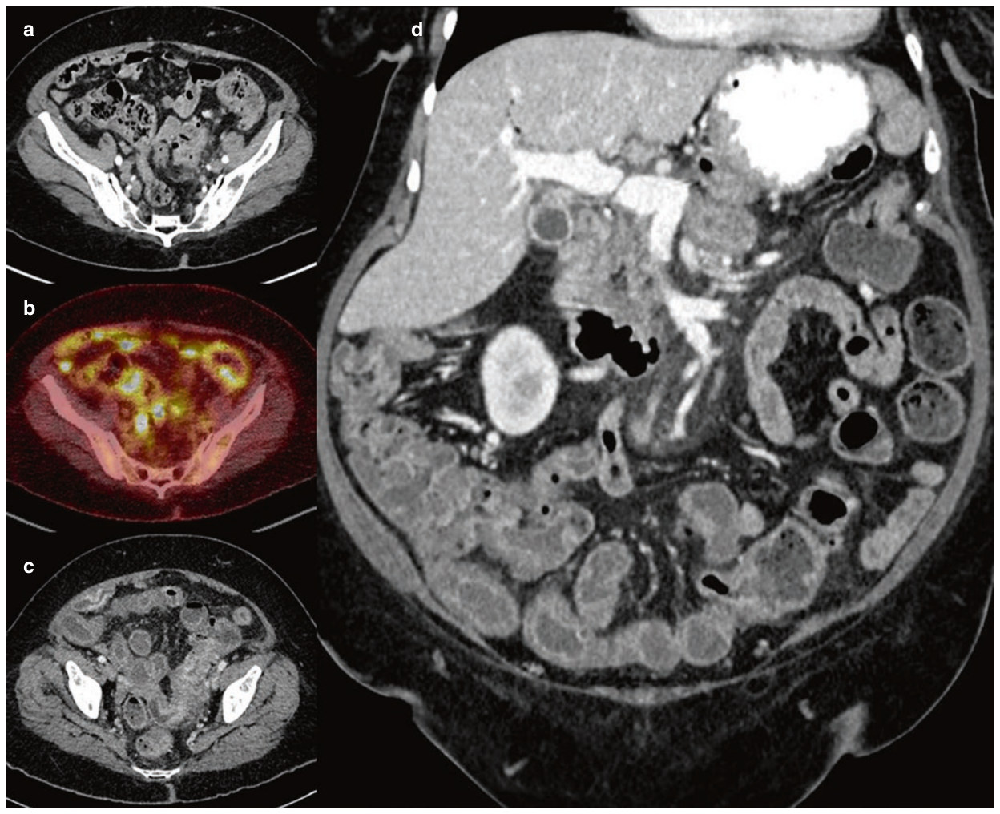
盲肠及末端回肠壁增厚，回盲瓣不对称增厚，伴淋巴结肿大，其内可见低密度区，提示干酪样坏死（图 2.4）[39,40]。回肠、有时为空肠可见肠管狭窄。
另一种常见的累及胃肠道的病毒是诺如病毒，可引起胃肠炎[42]。CT 表现为非特异性，包括低密度小肠壁增厚及肠腔积液扩张[43]。鉴别诊断包括肿瘤性肠道浸润及肠壁出血（肠壁呈高密度）[44]。近来，新冠病毒常累及胃肠道，有时可先于肺部表现出现。增强 CT 是评估肠道累及的首选检查方法，而 US 和 MRI 有助于病情管理及随访。增强 CT 表现包括升结肠、横结肠及降结肠受累，伴肠壁增厚、黏膜明显强化、黏膜下水肿呈低密度、肠管扩张、结肠周围脂肪条索影及淋巴结肿大[45,46]。并发症
2.3.1.4 病毒性小肠结肠炎
CMV 等病毒感染的发病率及死亡率较高（42%），常见累及结肠、胃及食管[41]。增强 CT 及 MRI 表现无特异性，包括肠壁增厚、腹水及淋巴结肿大。在复杂病例中，可出现黏膜溃疡及缺血或穿孔相关改变。除其他感染性病因外，在干细胞移植背景下，鉴别诊断还需考虑移植物抗宿主病。
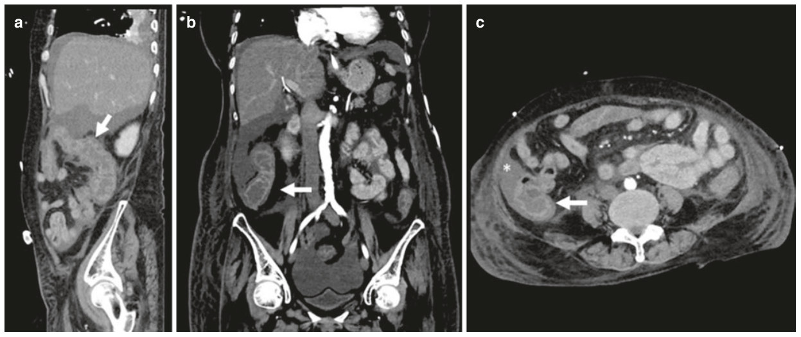
如肠壁积气症较罕见，可继发于慢性肠缺血、梗阻及自身免疫性病因。门静脉及肠系膜静脉血栓形成常见于新冠病毒感染[47]。也有阑尾炎的孤立病例报道[48]。
包括恶性肿瘤、胆道疾病、介入术后及术后状态。增强 CT 是首选影像学检查方法，而 MRI 可提供脓肿与胆道之间是否存在交通的信息，并有助于鉴别肝脓肿与坏死性转移瘤。与后者相比，脓肿壁较薄且均匀，弥散受限更明显，ADC 值更低[54]。MRI 上的弥散受限区与高 T2 信号相对应，而坏死性肿瘤中此表现对应于中等 T2 信号强度。对于大于 6 cm 的脓肿，或有即将穿孔风险时，通常需行经皮引流[55]。真菌感染如肝脾念珠菌病，是最常见的慢性播散性念珠菌病形式，通常发生于化疗后的血液系统恶性肿瘤患者[56]。其典型表现包括多灶性外周肝、脾及肾皮质微小脓肿，US、CT 及 MRI 均可显示[57]。US 上微小脓肿表现为低回声或呈“牛眼”样病灶，周边为低回声纤维化，中央为高回声炎症[58]。增强 CT 及 MRI 可显示无数微小脓肿，CT 上呈低密度，MRI 上表现多样：急性期 T1 呈低信号、T2 呈高信号；亚急性期 T1 及 T2 周边呈低信号环，T1 加权像中央呈高信号；慢性期所有序列均呈低信号。慢性期病灶可发生钙化，需与转移瘤、淋巴瘤及结节病鉴别。
2.3.1.5 真菌感染
在急性白血病、糖尿病、癌症及免疫缺陷患者中，胃肠道真菌感染日益常见，病原体包括曲霉、念珠菌及毛霉[49,50]。增强 CT 显示胃肠道肠壁增厚及周围脂肪条索影、淋巴结肿大、腹膜及腹膜后增厚、肝脾微小脓肿、血管受累及梗死[51]。曲霉及毛霉均为血管侵袭性，毛霉感染死亡率最高，约半数病例死亡。此外，胃及结肠内可见边缘不规则的大溃疡。念珠菌感染可导致溃疡、腹膜炎及实质器官梗死[52]。
2.3.2 肝胆系统感染
肝胆系统感染包括感染性胆管炎、肝炎（急性与慢性病毒性）、细菌性、分枝杆菌性、寄生虫性（如棘球蚴病与阿米巴病）、真菌性感染，以及经门静脉循环和累及肝脏的继发性胃肠道或全身性感染[53].
2.3.2.1 肝脓肿 2.3.2.2 胆管炎
肝脓肿的播散途径包括胆道途径、血行播散或由细菌或真菌定植引起的邻近部位直接蔓延[21]. 易感因素
梗阻性结石、恶性或非恶性狭窄、胆道支架以及胆总管空肠吻合术均可导致急性或上行性胆管炎，表现为 Charcot 三联征，包括
腹痛、发热与黄疸[59]. 急性化脓性胆管炎是指胆道内存在脓液的胆管炎，多见于 >70 岁的老年患者、吸烟者以及伴胆道结石嵌顿或与操作相关的患者[51, 60]. 常见致病菌包括大肠埃希菌（31%）、肺炎克雷伯菌、粪肠球菌及链球菌属. 留置塑料胆道支架易诱发肠球菌及多重菌感染[60]. 增强 CT 和 MRI 图像表现为中央性、弥漫性或节段性胆管扩张，胆管壁光滑、对称且弥漫性增厚，以中央胆管最为显著. 胆管扩张可通过 US 评估，增厚的胆管壁及肝实质早期明显强化可呈楔形外周斑片状胆管周围强化，以动脉期最为显著. US 和 MR 胆胰管成像（MRCP）可判断中央胆管内肿瘤或结石的存在（图 2.5）. 脓液在 CT 上可表现为扩张胆管内的高密度影. 浓缩胆汁或胆泥在 CT 上亦可呈高密度；MRI，尤其是 DWI，对识别脓性物质更具特异性，因其表现为扩散受限，
ADC 图上呈极低信号，但内部无强化. 胆管炎可并发菌血症与脓毒症、肝脓肿、门静脉血栓形成及胆汁性腹膜炎[60].
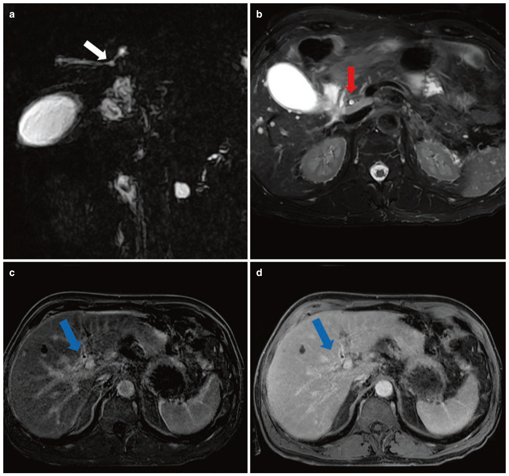
ADC 图上信号极低，但内部无强化. 胆管炎可并发菌血症与脓毒症、肝脓肿、门静脉血栓形成及胆汁性腹膜炎[60].
2.3.2.3 病毒性感染
病毒性肝炎可由甲型肝炎病毒感染（在发展中国家常见）以及已知慢性乙型、丙型肝炎患者接受化疗后病毒再激活所致[59, 60]. 由此所致的门静脉周围水肿及肝实质损伤在 US 上因门管区回声增强而表现为
2.3.2.4 寄生虫感染
多种寄生虫感染可累及肝脏与胆道树，其中最常见者为阿米巴感染、包虫病、血吸虫病、片形吸虫病及支睾吸虫病[63, 64]. 阿米巴病为大肠感染，可播散至肝脏形成脓肿，US 上表现为多位于肝右叶的单发、单房、低回声圆形或卵圆形肿块. 内部可见回声及后方回声增强. 伴发膈肌破裂并破入胸腔或心包高度提示阿米巴肝脓肿[64]. CT 表现为边界清楚的病变，中央呈液体密度并伴周边环形强化（
在棘球蚴囊肿腔内可见漂浮的膜状结构，由内生囊壁剥离所致。当患者改变体位时，可在棘球蚴囊肿腔内观察到多个强回声灶移动，形成
2.3.3 泌尿生殖道感染
2.3.3.1 梗阻性尿路病变
梗阻性尿路病变可由肿瘤的存在、输尿管膀胱连接部功能丧失所致的输尿管反流、留置导管与支架以及盆腔放射治疗引起，易诱发尿路感染。尿路梗阻可发生于输尿管、膀胱或尿道水平，导致尿潴留，是细菌定植与感染的重要危险因素 [68]。此外，尿路梗阻亦损害肾功能。输尿管水平的梗阻可由腹膜后淋巴结肿大、盆腔或输尿管恶性肿瘤以及放射性狭窄所致 [69]。主要诊断影像学方法包括 US 和增强 CT，可显示肾输尿管积水及不对称的肾图，用于检出输尿管梗阻。在下尿路梗阻（如前列腺增大或狭窄）中，US 也有助于评估排尿后残余尿的存在。集合系统或输尿管内的充盈缺损，包括肿块性病变或结石，可在 CT 尿路成像中采用分次团注技术或三期扫描方案更好地评估。梗阻水平及与软组织肿块相关的病因可借助 MRI 进行更佳评价。准确的诊断有助于临床管理，通常需要通过逆行输尿管支架置入或经皮肾造瘘管进行减压治疗。
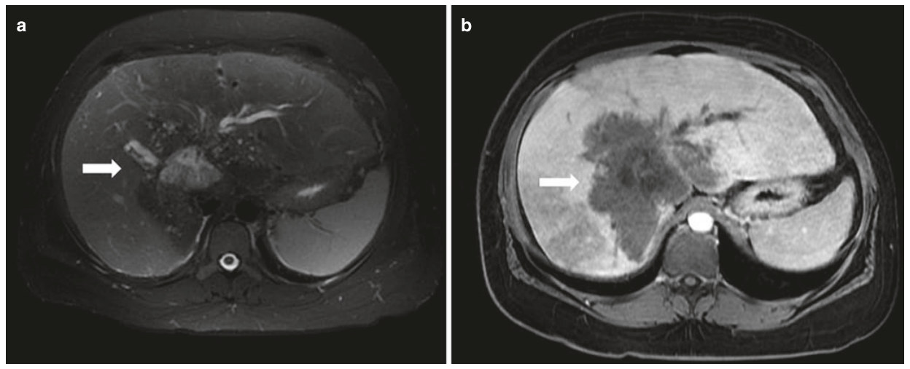
2.3.3.2 肾脏与膀胱感染
膀胱感染可由大肠埃希菌及其他革兰氏阳性球菌、革兰氏阴性肠杆菌以及念珠菌引起 [70]。膀胱感染的易感因素包括留置 Foley 导尿管或耻骨上导尿管、梗阻性尿路病变以及既往手术史，如膀胱肿瘤切除伴或不伴肠代膀胱术。细菌性感染常可早期诊断并有效治疗，但真菌（如白念珠菌）可导致肾微脓肿或较大脓肿、真菌球或慢性播散性念珠菌病 [54, 71]。肾脏感染可由上行性尿路感染或血行播散所致。肾脏感染的初期表现为肾盂肾炎，在菌血症或真菌血症背景下可进展并发为肾脓肿。早期、及时的诊断可在出现需经皮或手术引流的并发症之前，确保药物治疗并取得良好预后 [72]。在 US 上，肾盂肾炎表现为肾皮质回声不均，多普勒显示血流减少。在增强 CT 和 MRI 上，表现为楔形或圆形条纹状皮髓质强化区（图 2.7）。肾脓肿则可见 CT 中央低密度区及 MRI 上 T2 高信号伴扩散受限表现。
2.3.3.3 前列腺感染
前列腺感染可由邻近器官（如尿道或膀胱）感染直接蔓延所致，也可继发于膀胱镜、前列腺穿刺活检、尿道/耻骨上导尿管置入、近距离放疗、冷冻治疗或
放射治疗等操作 [73]。化疗与菌血症是肿瘤患者的额外系统性危险因素，增加前列腺脓肿的发生风险。临床上患者表现为尿急、尿频、排尿不尽感以及耻骨上或会阴部疼痛。在 CT 与 MRI 上，炎症腺体可呈肿大、水肿表现。US 上中央低回声区、CT 上低密度及 MRI 上 T2 高信号提示可能存在前列腺脓肿。MRI 可更好地对前列腺脓肿进行影像学评估；CT 与 MRI 均可显示前列腺移行区或中央区常见的单房或多房环形强化积液灶（图 2.8）[73]。
2.3.4 腹膜与腹壁感染
腹腔内和腹壁感染可因邻近部位的继发累及或发生于免疫抑制、恶性肿瘤、放射治疗及诸如腹腔穿刺、手术和医疗器械等干预的情况下。腹膜的炎症（腹膜炎）可为感染性，也可为非感染性，例如因血液或胆汁的刺激所致。腹膜炎的胃肠道病因包括肠梗阻、肠穿孔及吻合口裂开。其他原因包括恶性肿瘤、缺血、感染性小肠结肠炎、溃疡及放射治疗，均可导致肠穿孔。手术、留置腹膜透析导管、非隧道式导管及分流管亦为易感因素。复杂性腹膜炎可引发全身性
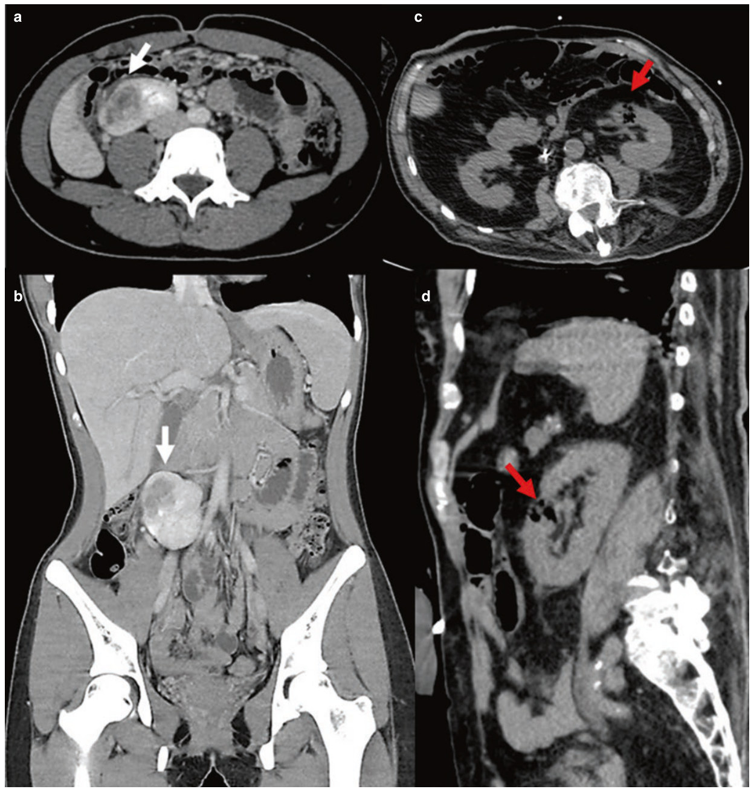
炎症反应，病死率可高达 30%[73, 74]。患者表现为弥漫性腹痛、压痛、肌卫和发热。腹膜炎的病原体取决于病因，因上消化道与下消化道的病原体有所不同。US 可用于评估腹水及积液，并引导
穿刺抽液，但 CECT 是腹膜炎影像学检查的首选方法，可明确感染来源并查找腹腔内脓肿。典型影像学征象包括腹水、腹膜强化及增厚，感染性病因所致的腹膜增厚通常较光滑，亦可较少见地表现为结节状或不规则，此为提示腹膜癌病的征象。
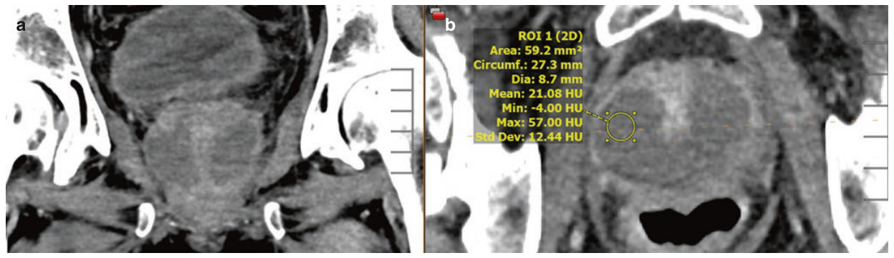
2.3.4.1 腹膜相关装置
>3 cm 的脓肿需进行引流。若不处理，脓肿可侵犯邻近结构、侵蚀血管（导致假性动脉瘤、出血和血栓形成）、破裂或较少见地形成瘘管，最终引发菌血症和脓毒性休克，病死率较高[74]。
晚期腹部恶性肿瘤患者常出现难治性腹水，需放置留置腹膜导管，从而使感染风险显著增加。装置周围的单纯性积液或边界不清的积液可由血清肿及术后改变所致；然而，出现强化壁或无近期干预史的新发气体影则提示脓肿形成。其他腹膜装置包括腹腔灌注导管、腹膜透析导管、脑室腹腔分流管及外科引流管；上述任何装置均可因皮肤菌群易位或肠穿孔（后者少见）并发腹膜炎。经皮胃造瘘管置入后发生腹膜炎亦属罕见。治疗包括抗生素及移除致病装置，出现明确穿孔时需手术处理。
2.3.4.3 腹壁感染
免疫功能低下患者的腹壁皮肤和软组织感染（SSTI）可相当严重，特别是伴有血管病变者，如闭塞性动脉内膜炎（见于放射治疗后）。SSTI 包括皮肤感染以及更深层的皮下、肌肉和筋膜感染，如蜂窝织炎、坏死性筋膜炎和化脓性肌炎。深部 SSTI 可由皮肤损伤或手术、导管及置管、放射治疗以及原发或转移性肿瘤所致的皮肤完整性破坏引起。蜂窝织炎为临床诊断，但其影像学表现包括皮肤增厚伴皮下脂肪浑浊、水肿及炎症。平扫 CT 上皮下气体沿筋膜平面扩散通常提示坏死性筋膜炎，需尽早积极处理，包括引流和手术清创（图 2.9）。肿瘤、放射治疗或手术并发症所致的膀胱皮肤瘘和肠皮肤瘘均可导致 SSTI。US、CT 或 MRI 检查有助于明确潜在诱因，鉴别急性瘘管与纤维化瘘管，以及瘘管的数量和相互关系，并评估有无伴发可引流的脓肿。
2.3.4.2 腹腔内脓肿
非脏器脓肿为多菌性感染，可位于腹膜腔或腹膜后间隙，前者多由腹膜炎和/或穿孔的并发症所致。腹膜后脓肿可由空腔脏器穿孔或感染的血源性、淋巴源性或局部扩散引起。临床症状包括发热和腹部不适。例如，直肠周围脓肿可引起腹泻，与膀胱相邻的脓肿可引起排尿症状。CECT 及 MR 表现为环形强化的积液伴周围炎性改变。对
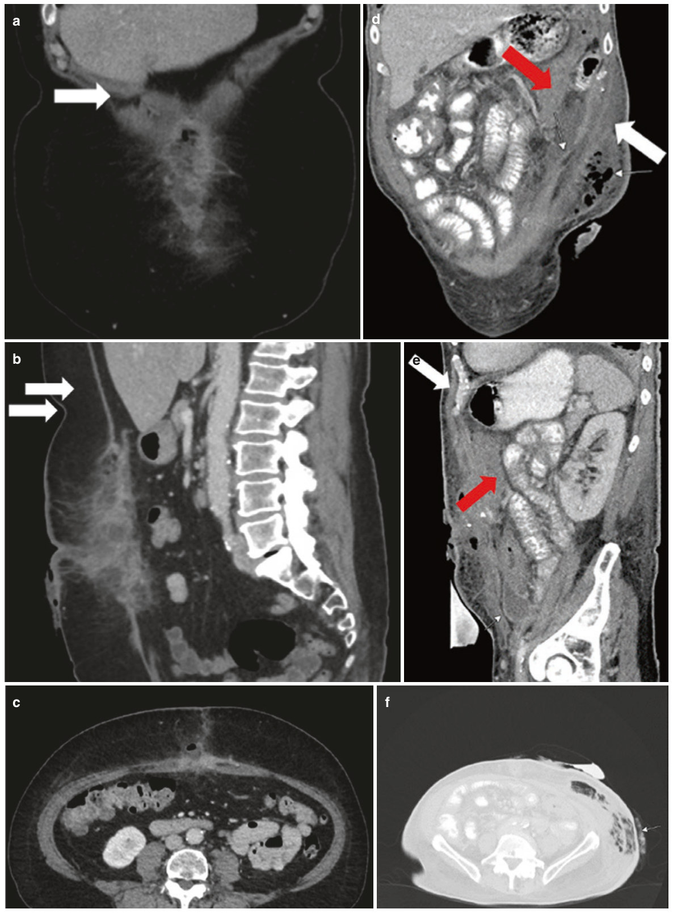
2.4 结论
放射科医师应熟悉感染的相关风险，并识别最常见的感染影像学表现。影像学在肿瘤患者腹部和盆腔感染性疾病的诊断、治疗和预后评估中发挥重要作用，包括累及胃肠道、肝胆和泌尿生殖系统的感染，以及非内脏和腹壁感染，还包括与医疗器械、放射治疗和外科手术相关的感染。
1. Intra-abdominal infections market—global industry analysis S, share, growth, trends, and forecast 2017–2025: intra-abdominal infections market; 2022. https://www.transparencymarketresearch. com/intraabdominal-infections-market.html. Accessed.
2. Siegel RL, Miller KD, Jemal A. Cancer statistics, 2020. Cancer J Clin. 2020;70(1):7–30. https://doi.org/10.3322/caac.21590.
3. Rolston KVI. Infections in cancer patients with solid tumors: a review. Infect Dis Ther. 2017;6(1):69–83. https://doi.org/10.1007/s40121-017-0146-1.
4. Safdar A, Armstrong D. Infectious morbidity in critically ill patients with cancer. Crit Care Clin. 2001;17(3):531–70. https://doi.org/10.1016/s0749-0704(05)70198-6.
5. Itani M, Menias CO, Mellnick VM, El Zakhem A, Elsayes K, Katabathina V, et al. Imaging of abdominal and pelvic infections in the cancer patient. Abdominal Radiol. 2021;46(6):2920–41. https://doi.org/10.1007/s00261-020-02896-7.
6. Reed D, Sen J, Lassiter K, Thomas T, Harr E, Daniels E, et al. Prospective initiative to reduce mucosal barrier injuries and bloodstream infections in patients with hematologic malignancy receiving inpatient chemotherapy. JCO Oncol Pract. 2020;16(3):e306–e12. https://doi.org/10.1200/jop.19.00344.
7. Blijlevens NMA, Donnelly JP, De Pauw BE. Mucosal barrier injury: biology, pathology, clinical counterparts and consequences of intensive treatment for haematological malignancy: an overview. Bone Marrow Transpl. 2000;25(12):1269–78. https://doi.org/10.1038/sj.bmt.1702447.
8. Abdol Razak N, Jones G, Bhandari M, Berndt M, Metharom P. Cancer-associated thrombosis: an overview of mechanisms, risk factors, and treatment. Cancers. 2018;10(10):380. https://doi.org/10.3390/cancers10100380.
9. Lustberg MB. Management of neutropenia in cancer patients. Clin Adv Hematol Oncol. 2012;10(12):825–6.
10. Baker TM, Satlin MJ. The growing threat of multidrug-resistant Gram-negative infections in patients with hematologic malignancies. Leukemia Lymphoma. 2016;57(10):2245–58. https://doi.org/10.1080/10428194.2016.1193859.
11. Sutton SH. Infections associated with solid malignancies. Infectious complications in cancer patients. Springer International Publishing; 2014. p. 371–411.
12. Cumbo TA, Segal BH. Prevention, diagnosis, and treatment of invasive fungal infections in patients with cancer and neutropenia. J Natl Compreh Cancer Network. 2004;2(5):455–69. https://doi.org/10.6004/jnccn.2004.0036.
13. Reusser P. Current concepts and challenges in the prevention and treatment of viral infections in immunocompromised cancer patients. Support Care Cancer. 1997;6(1):39–45. https://doi.org/10.1007/s005200050130.
14. Shadad AK. Gastrointestinal radiation injury: prevention and treatment. World J Gastroenterol. 2013;19(2):199. https://doi.org/10.3748/wjg.v19.i2.199.
15. Iyer R. Radiation injury: imaging findings in the chest, abdomen and pelvis after therapeutic radiation. Cancer Imaging. 2006;6(Special Issue A):S131–S9. https://doi.org/10.1102/1470-7330.2006.9095.
16. Stewart PS, Bjarnsholt T. Risk factors for chronic biofilm-related infection associated with implanted medical devices. Clin Microbiol Infect. 2020;26(8):1034–8. https://doi.org/10.1016/j. cmi.2020.02.027.
17. Lamarca A, Rigby C, McNamara MG, Hubner RA, Valle JW. Impact of biliary stent-related events in patients diagnosed with advanced pancreatobiliary tumours receiving palliative chemotherapy. World J Gastroenterol. 2016;22(26):6065. https://doi.org/10.3748/wjg. v22.i26.6065.
18. Bahu R, Chaftari A-M, Hachem RY, Ahrar K, Shomali W, El Zakhem A, et al. Nephrostomy tube related pyelonephritis in patients with cancer: epidemiology, infection rate and risk factors. J Urol. 2013;189(1):130–5. https://doi.org/10.1016/j.juro.2012.08.094.
19. Gillespie BM, Harbeck E, Rattray M, Liang R, Walker R, Latimer S, et al. Worldwide incidence of surgical site infections in general surgical patients: a systematic review and meta-analysis of 488,594 patients. Int J Surg. 2021;95:106136. https://doi.org/10.1016/j. ijsu.2021.106136.
20. Boermeester MA, Gans SL, Stoker J, Boermeester MA. Plain abdominal radiography in acute abdominal pain; past, present, and future. Int J Gen Med. 2012;525 https://doi.org/10.2147/ijgm.s17410.
21. Lardière-Deguelte S, Ragot E, Amroun K, Piardi T, Dokmak S, Bruno O, et al. Hepatic abscess: diagnosis and management. J Visc Surg. 2015;152(4):231–43. https://doi.org/10.1016/j. jviscsurg.2015.01.013.
22. Frickenstein AN, Jones MA, Behkam B, McNally LR. Imaging inflammation and infection in the gastrointestinal tract. Int J Mol Sci. 2019;21(1) https://doi.org/10.3390/ijms21010243.
23. Puges M, Bérard X, Ruiz J-B, Debordeaux F, Desclaux A, Stecken L, et al. Retrospective study comparing WBC scan and 18F-FDG PET/CT in patients with suspected prosthetic vascular graft infection. Eur J Vasc Endovasc Surg. 2019;57(6):876–84. https://doi.org/10.1016/j.ejvs.2018.12.032.
24. Kouijzer IJE, Mulders-Manders CM, Bleeker-Rovers CP, Oyen WJG. Fever of unknown origin: the Value of FDG-PET/ CT. Semin Nucl Med. 2018;48(2):100–7. https://doi.org/10.1053/j. semnuclmed.2017.11.004.
25. Bodey GP, Fainstein V, Guerrant R. Infections of the gastrointestinal tract in the immunocompromised patient. Annu Rev Med. 1986;37(1):271– 81. https://doi.org/10.1146/annurev.me.37.020186.001415.
26. Schmidt-Hieber M, Bierwirth J, Buchheidt D, Cornely OA, Hentrich M, Maschmeyer G, et al. Diagnosis and management of gastrointestinal complications in adult cancer patients: 2017 updated evidence-based guidelines of the Infectious Diseases Working Party (AGIHO) of the German Society of Hematology and Medical Oncology (DGHO). Ann Hematol. 2017;97(1):31–49. https://doi.org/10.1007/s00277-017-3183-7.
27. Loureiro RV, Borges VP, Tomé AL, Bernardes CF, Silva MJ, Bettencourt MJ. Anorectal complications in patients with haematological malignancies. Eur J Gastroenterol Hepatol. 2018;30(7):722– 6. https://doi.org/10.1097/meg.0000000000001133.
28. Dayani M, Porouhan P, Farshchian N. Management of radiation-induced proctitis. J Family Med Primary Care. 2019;8(7):2173. https://doi.org/10.4103/jfmpc.jfmpc_333_19.
29. Tonolini M, Bianco R. MRI and CT of anal carcinoma: a pictorial review. Insights Imaging. 2012;4(1):53–62. https://doi.org/10.1007/s13244-012-0199-3.
30. Delgado A, Reveles IA, Cabello FT, Reveles KR. Poorer outcomes among cancer patients diagnosed with Clostridium difficile infections in United States community hospitals. BMC Infect Dis. 2017;17(1) https://doi.org/10.1186/s12879-017-2553-z.
31. Czepiel J, Dróżdż M, Pituch H, Kuijper EJ, Perucki W, Mielimonka A, et al. Clostridium difficile infection: review. Eur J Clin Microbiol Infect Dis. 2019;38(7):1211–21. https://doi.org/10.1007/s10096-019-03539-6.
32. Thoeni RF, Cello JP. CT imaging of colitis. Radiology. 2006;240(3):623–38. https://doi.org/10.1148/radiol.2403050818.
33. Nesher L, Rolston KVI. Neutropenic enterocolitis, a growing concern in the era of widespread use of aggressive chemotherapy. Clin Infect Dis. 2012;56(5):711–7. https://doi.org/10.1093/cid/cis998.
34. Davila ML. Neutropenic enterocolitis. Curr Treatment Options Gastroenterol. 2006;9(3):249–55. https://doi.org/10.1007/s11938-006-0043-2.
35. Horton KM, Corl FM, Fishman EK. CT evaluation of the colon: inflammatory disease. RadioGraphics. 2000;20(2):399–418. https://doi.org/10.1148/radiographics.20.2.g00mc15399.
36. McCarville MB, Spunt SL, Pappo AS. Rhabdomyosarcoma in Pediatric Patients. Am J Roentgenol. 2001;176(6):1563–9. https://doi.org/10.2214/ajr.176.6.1761563.
37. Horvath KD, Whelan RL. Intestinal tuberculosis: return of an old disease. Am J Gastroenterol. 1998;93(5):692–6. https://doi.org/10.1111/j.1572-0241.1998.207_a.x.
38. Sharma K, Sinha S, Sharma A, Prasad K, Rana S, Sharma M, et al. Multiplex PCR for rapid diagnosis of gastrointestinal tuberculosis. J Global Infect Dis. 2013;5(2):49. https://doi.org/10.4103/0974-777x.112272.
39. Leder RA, Low VHS. Tuberculosis of the abdomen. Radiol Clin North Am. 1995;33(4):691–705. https://doi.org/10.1016/s0033-8389(22)00613-3.
40. Nagi B, Kochhar R, Bhasin DK, Singh K. Colorectal tuberculosis. Eur Radiol. 2003;13(8):1907–12. https://doi.org/10.1007/s00330-002-1409-z.
41. Torres HA, Kontoyiannis DP, Bodey GP, Adachi JA, Luna MA, Tarrand JJ, et al. Gastrointestinal cytomegalovirus disease in patients with cancer: A two decade experience in a tertiary care cancer center. Eur J Cancer. 2005;41(15):2268–79. https://doi.org/10.1016/j.ejca.2005.07.011.
42. Haessler S, Granowitz EV. Norovirus gastroenteritis in immunocompromised patients. New Engl J Med. 2013;368(10):971. https://doi.org/10.1056/nejmc1301022.
43. Tajiri H, Kiyohara Y, Tanaka T, Etani Y, Mushiake S. Abnormal computed tomography findings among children with viral gastroenteritis and symptoms mimicking acute appendicitis. Pediatr Emergency Care. 2008;24(9):601–4. https://doi.org/10.1097/pec.0b013e3181850cc8.
44. Finkelstone L, Wolf E, Stein MW. Etiology of small bowel thickening on computed tomography. Can J Gastroenterol. 2012;26(12):897–901. https://doi.org/10.1155/2012/282603.
45. Caruso D, Zerunian M, Pucciarelli F, Lucertini E, Bracci B, Polidori T, et al. Imaging of abdominal complications of COVID-19 infection. BJR Open. 2021;2(1):20200052. https://doi.org/10.1259/bjro.20200052.
46. Rha SE, Ha HK, Lee S-H, Kim J-H, Kim J-K, Kim JH, et al. CT and MR imaging findings of bowel ischemia from various primary causes. RadioGraphics. 2000;20(1):29–42. https://doi.org/10.1148/radiographics.20.1.g00ja0629.
47. Ignat M, Philouze G, Aussenac-Belle L, Faucher V, Collange O, Mutter D, et al. Small bowel ischemia and SARS-CoV-2 infection: an underdiagnosed distinct clinical entity. Surgery. 2020;168(1):14– 6. https://doi.org/10.1016/j.surg.2020.04.035.
48. Pautrat K, Chergui N. SARS-CoV-2 infection may result in appendicular syndrome: chest CT scan before appendectomy. J Visceral Surg. 2020;157(3):S63–S4. https://doi.org/10.1016/j. jviscsurg.2020.04.007.
49. Lamps LW, Lai KKT, Milner DA. Fungal infections of the gastrointestinal tract in the immunocompromised host. Adv Anatomic Pathol. 2014;21(4):217–27. https://doi.org/10.1097/pap.0000000000000016.
50. Friedman S. Emerging fungal infections: new patients, new patterns, and new pathogens. J Fungi. 2019;5(3):67. https://doi.org/10.3390/jof5030067.
51. Yeom DH, Oh HJ, Son YW, Kim TH. What are the risk factors for acute suppurative cholangitis caused by common bile duct stones? Gut Liver. 2010;4(3):363–7. https://doi.org/10.5009/gnl.2010.4.3.363.
52. Prescott RJ, Harris M, Banerjee SS. Fungal infections of the small and large intestine. J Clin Pathol. 1992;45(9):806–11. https://doi.org/10.1136/jcp.45.9.806.
53. Talwani R, Gilliam BL, Howell C. Infectious diseases and the liver. Clin Liver Dis. 2011;15(1):111–30. https://doi.org/10.1016/j. cld.2010.09.002.
54. Park HJ, Kim SH, Jang KM, Lee SJ, Park MJ, Choi D. Differentiating hepatic abscess from malignant mimickers: value of diffusion-weighted imaging with an emphasis on the periphery of the lesion. J Magn Reson Imaging. 2013;38(6):1333–41. https://doi.org/10.1002/jmri.24112.
55. Lübbert C, Wiegand J, Karlas T. Therapy of liver abscesses. Visceral Med. 2014;30(5):334–41. https://doi.org/10.1159/000366579.
56. Cornely OA, Bangard C, Jaspers NI. Hepatosplenic candidiasis. Clin Liver Dis. 2015;6(2):47–50. https://doi.org/10.1002/cld.491.
57. Moore NJE, Leef JL, Pang Y. Systemic candidiasis. RadioGraphics. 2003;23(5):1287–90. https://doi.org/10.1148/rg.235025162.
58. Bächler P, Baladron MJ, Menias C, Beddings I, Loch R, Zalaquett E, et al. Multimodality imaging of liver infections: differential diagnosis and potential pitfalls. RadioGraphics. 2016;36(4):1001–23. https://doi.org/10.1148/rg.2016150196.
59. Ely R, Long B, Koyfman A. The emergency medicine−focused review of cholangitis. J Emergency Med. 2018;54(1):64–72. https://doi.org/10.1016/j.jemermed.2017.06.039.
60. Patel NB, Oto A, Thomas S. Multidetector CT of emergent biliary pathologic conditions. RadioGraphics. 2013;33(7):1867–88. https://doi.org/10.1148/rg.337125038.
61. Xu Z, Shi L, Wang Y, Zhang J, Huang L, Zhang C, et al. Pathological findings of COVID-19 associated with acute respiratory distress syndrome. Lancet Respir Med. 2020;8(4):420–2. https://doi.org/10.1016/s2213-2600(20)30076-x.
62. Behzad S, Aghaghazvini L, Radmard AR, Gholamrezanezhad A. Extrapulmonary manifestations of COVID-19: radiologic and clinical overview. Clin Imaging. 2020;66:35–41. https://doi.org/10.1016/j.clinimag.2020.05.013.
63. Mortelé KJ, Segatto E, Ros PR. The infected liver: radiologic-pathologic correlation. RadioGraphics. 2004;24(4):937–55. https://doi.org/10.1148/rg.244035719.
64. Doyle DJ, Hanbidge AE, O'Malley ME. Imaging of hepatic infections. Clin Radiol. 2006;61(9):737–48. https://doi.org/10.1016/j. crad.2006.03.010.
65. Brunetti E, Kern P, Vuitton DA. Expert consensus for the diagnosis and treatment of cystic and alveolar echinococcosis in humans. Acta Tropica. 2010;114(1):1–16. https://doi.org/10.1016/j. actatropica.2009.11.001.
66. Pedrosa I, Saíz A, Arrazola J, Ferreirós J, Pedrosa CS. Hydatid disease: radiologic and pathologic features and complications. RadioGraphics. 2000;20(3):795–817. https://doi.org/10.1148/radiogr aphics.20.3.g00ma06795.
67. Mehta P, Prakash M, Khandelwal N. Radiological manifestations of hydatid disease and its complications. Trop Parasitol. 2016;6(2):103. https://doi.org/10.4103/2229-5070.190812.
68. Heyns CF. Urinary tract infection associated with conditions causing urinary tract obstruction and stasis, excluding urolithiasis and neuropathic bladder. World J Urol. 2011;30(1):77–83. https://doi.org/10.1007/s00345-011-0725-9.
69. Chitale SV, Scott-Barrett S, Ho ETS, Burgess NA. The management of ureteric obstruction secondary to malignant pelvic disease. Clin Radiol. 2002;57(12):1118–21. https://doi.org/10.1053/crad.2002.1114.
70. Falagas ME, Vergidis PI. Urinary tract infections in patients with urinary diversion. Am J Kidney Dis. 2005;46(6):1030–7. https://doi.org/10.1053/j.ajkd.2005.09.008.
71. Orlowski HLP, McWilliams S, Mellnick VM, Bhalla S, Lubner MG, Pickhardt PJ, et al. Imaging spectrum of invasive fungal and fungal-like infections. RadioGraphics. 2017;37(4):1119–34. https://doi.org/10.1148/rg.2017160110.
72. Lee SH, Jung HJ, Mah SY, Chung BH. Renal abscesses measuring 5 cm or less: outcome of medical treatment without therapeutic drainage. Yonsei Med J. 2010;51(4):569. https://doi.org/10.3349/ymj.2010.51.4.569.
73. Ackerman AL, Parameshwar PS, Anger JT. Diagnosis and treatment of patients with prostatic abscess in the post-antibiotic era. Int J Urol. 2017;25(2):103–10. https://doi.org/10.1111/iju.13451.
74. Sartelli M. A focus on intra-abdominal infections. World J Emergency Surg. 2010;5(1):9. https://doi.org/10.1186/1749-7922-5-9.
分子影像与治疗的进展及其对肿瘤影像学的影响
分子影像与治疗的进展及其对肿瘤影像学的影响
Irene A. Burger 和 Thomas A. Hope
3.1 引言
自 21 世纪初将基于 CT 的解剖学成像与基于正电子发射断层扫描（PET）的分子成像相结合引入临床以来，肿瘤学的临床应用稳步增加。最常用的示踪剂是氟脱氧葡萄糖 [18F]-FDG，前提是患者至少空腹 4 h，可被高表达胰岛素非依赖型葡萄糖转运体（GLUT1、2 或 3）的细胞摄取。然而，GLUT 表达在多种炎性病变中也会升高，从而降低特异度。尽管进行了大量研究以寻求相较于 FDG 对恶性肿瘤更具特异性的示踪剂 [1,2]，但尚无其他示踪剂达到 FDG 的高敏感度。
I. A. Burger (*) 核医学科，Baden 州立医院，Aarau，瑞士 电子信箱：Irene.burger@ksb.ch
T. A. Hope 放射与生物医学影像系，加州大学旧金山分校，旧金山，加利福尼亚州，美国 电子信箱：Thomas.Hope@ucsf.edu
该方法是淋巴瘤和大多数实体瘤的标准方案。仅对于通常代谢活性较低的肿瘤（神经内分泌肿瘤（NET）和前列腺癌（PCa）），已建立了基于受体成像的替代方案：针对前列腺癌靶向前列腺特异性膜抗原（PSMA），针对 NET 行生长抑素受体 2（SSTR-2）成像。这些靶点目前也是诊疗一体化研究的焦点；我们将在本章第一部分重点讨论。第二部分将重点讨论总体及特定治疗方案的形态学和分子影像学疗效评估。
3.2 诊疗一体化（Theranostics）概述
Theranostics（诊疗一体化）是指使用同一类分子进行显像与治疗。尽管该理念最初可追溯至 75 年前碘剂疗法（I-123 用于显像，I-131 用于治疗）的问世，但真正使放射配体疗法（RLT）重新获得关注的是生长抑素受体-2（SSTR-2）靶向显像剂及其后续治疗药物的开发。一般而言，大多数诊疗一体化药物均以配体靶向肿瘤细胞表面过表达的蛋白。这些配体可标记用于显像的放射性核素，也可标记用于治疗的放射性核素。目前临床诊疗一体化中最常用的显像核素为正电子（β+）发射体，用于 PET，包括氟-18、镓-68 和铜-64。尽管也可使用 γ 射线发射体，如锝-99m 和铟-111，但该领域的重心已转向 PET 放射性药物。治疗用核素分为 α 粒子发射体和 β（β−）粒子发射体。发射电子的 β 发射体包括钇-90、镥-177 和碘-131；发射氦原子的 α 发射体包括锕-225、铅-212 和镭-223。诊疗一体化被视为一种个体化治疗，因为在给予治疗之前，需通过显像检查证实靶点的存在，以筛选合适的患者。
这种方法有助于在一定程度上预测患者对治疗的反应。例如，在前列腺癌患者中，治疗前 PSMA PET 摄取较高的患者对 PSMA 靶向 RLT 的反应更好 [3]。
3.2.1 治疗用放射性核素
影响各机构选用 RLT 放射性核素的因素很多，包括半衰期、化学性质及发射粒子的射程。具有支持中心化合成与分发所需的半衰期，对其商业化至关重要，这也是半衰期仅 7 小时的砹-211 等核素未被广泛应用的原因。镥-177 的半衰期为 6.6 天，便于中心化合成。发射粒子的射程同样重要，并直接影响治疗效果。钇-90 发射的 β 粒子射程超过 1 cm，而镥-177 的 β 粒子射程仅为 1～2 mm。这意味着钇-90 治疗较大病变的效果优于镥-177，但也可能解释了文献报道的钇-90 肾毒性发生率较高的现象 [4]。α 粒子能量极高，但剂量沉积距离极短，通常仅为 50～70 微米。这一较短射程使部分研究者认为 α 粒子能够杀伤单个细胞，但必须认识到，其大部分能量沉积在路径末端的布拉格峰处，故所释放的能量主要沉积在起源细胞旁 1～2 个细胞的范围内。尽管如此，由于 α 粒子高能量沉积可能带来更高的疗效，其研究兴趣持续高涨 [5–7]。目前已有一项 III 期研究在评估 [225Ac]-DOTATATE 治疗胃肠胰神经内分泌肿瘤（GEP-NET）患者（NCT05477576）。
3.2.2 剂量学的独特作用
许多 RLT 的一个独特之处在于治疗后可直接进行显像，以实测肿瘤所接受的剂量。尽管在甲状腺癌中也可对 I-131 进行该操作，但在甲状腺患者的临床实践中开展并不广泛。尤为值得关注的是镥-177，其 γ 射线发射比例为 12%，可获取高质量的治疗后图像。随着使剂量学量化更便捷的软件不断开发，期望该方法能够融入临床实践。目前治疗后显像主要仍以定性方式用于评估病情有无进展或缓解，而非依据上一周期所测得的剂量学数据来调整给药剂量。需要指出的是，锕-225 等 α 发射体由于 γ 发射极少且给药活度显著偏低，使用 SPECT/CT 进行显像较为困难。当前正在开展大量研究以提升 α 发射体的显像能力。
甲状腺癌中的情况与此类似，但在甲状腺患者中开展较少。
3.2.3 现有诊疗一体化药物及在研药物
目前在临床上，诊疗一体化（theranostics）有两类主要应用：[177Lu]-DOTATATE（Lutathera，诺华）和 [177Lu]PSMA-617（Pluvicto，诺华）放射性配体治疗（RLT）。[177Lu]-DOTATATE 靶向神经内分泌肿瘤（NET）患者的生长抑素受体（SSTR），用于生长抑素类似物治疗后疾病进展的患者。[177Lu]-DOTATOC 是几乎相同的药物，目前正在两项 III 期试验（NCT03049189 和 NCT04919226）中评估。钇-90 标记化合物曾被评估过，但已基本被镥-177 标记化合物取代。[177Lu]-PSMA-617 靶向前列腺特异性膜抗原（PSMA），用于转移性去势抵抗性前列腺癌（mCRPC）患者，并在 VISION 试验中证实可在化疗及雄激素受体靶向治疗后延长患者生存 [8]。[177Lu]-PSMA-I&T 是类似化合物，目前正在化疗前 mCRPC 适应证的两项 III 期研究（NCT05204927 和 NCT04647526）中进行评估。[177Lu]-PSMA-617 也正在转移性去势敏感阶段（NCT04720157）接受评估。除 PSMA 外，目前还有许多令人关注的研究靶点。靶向成纤维细胞激活蛋白（FAP）的放射性配体受到关注，因为该靶点表达于多种癌症类型，而非像 SSTR 和 PSMA 那样仅限于特定肿瘤。迄今为止，已发表的小样本回顾性系列研究显示其疗效证据有限 [9, 10]。[177Lu]-FAP-2286 正在一项剂量扩展的 I 期试验（NCT04939610）中接受评估。其他正在评估的靶点包括胃泌素释放肽受体 [11]、C-X-C 趋化因子受体 4（CXCR4）[12, 13] 以及尿激酶型纤溶酶原激活物受体（uPAR）[14]。这些化合物能否达到与 SSTR 和 PSMA 靶向 RLT 同等的临床影响尚不明确，但该领域已获得大量投入。
3.2.4 内照射治疗的患者选择
3.3 疾病监测
世界卫生组织（WHO）很早就认识到临床试验中需要统一标准，于 1979 年发布了最初的《癌症治疗结果报告 WHO 手册》[20]。此后，已陆续发布多项指南及更新版本。
利用靶向影像学选择 RLT 患者的做法很早就已被采用。NETTER 试验奠定了 [177Lu]-DOTATATE 获批用于中肠 NET 的基础，其入组标准为分化良好、G1-2 级肿瘤，且基于 SSTR 显像呈高摄取 [15]。北美神经内分泌肿瘤学会（NANETS）和核医学与分子影像学会（SNMMI）的共识声明一致认为，SSTR 显像阳性定义为在两种显像方式——[111In]-pentetreotide 单光子发射计算机断层扫描（SPECT）或 [68Ga]-DOTATATE PET——上，病灶摄取强度均高于正常肝实质 [16]。然而，在神经内分泌疾病中，已有作者提出靶向显像是必要的，但并不充分 [17]。在恶性肿瘤病程中，肿瘤异质性和去分化可导致部分肿瘤失去靶点表达，因而无法通过受体 PET 检测到。因此，对于 [68Ga]-DOTATATE 上仅呈轻度摄取或呈阴性的患者，建议联合 FDG PET/CT [18]。同样，VISION 试验采用 [68Ga]-PSMA-11 PET 扫描作为 [177Lu]-PSMA-617 获批的患者选择依据 [8]。入组患者需具备 PSMA 阳性转移灶且无 PSMA 阴性病灶；PSMA 阳性定义为任一器官系统中一枚或多枚任何大小的转移灶摄取高于肝实质。基于上述标准，仅有 12% 的患者因 PET 标准被排除，由此引发讨论：在排除率如此低的情况下，[68Ga]-PSMA-11 PET 的费用是否合理及必要。相反，由于骨转移在 CT 上常显示不清，FDG PET/CT 对前列腺癌（PCa）患者的附加价值可能高于 NET 患者。基于 [68Ga]-PSMA-11 和 FDG PET 选择患者的初步研究结果确实显示，其 PSA 反应率略高于 VISION 试验（TheraP：65%，VISION：46%）[19]。现已发表的 TheraP 试验随访数据进一步支持以下结论：PSMA PET 上 SUVmean ≥10 的患者对 [177Lu]-PSMA-617 反应极佳；而 FDG 活性病变体积 ≥200 mL 的患者在两个治疗组（卡巴他赛和 [177Lu]-PSMA-617）中均预后较差，提示代谢与受体 PET 信息的联合应用有望成为未来个体化治疗强度的重要依据 [3]。
3.3.1 基于形态学的疗效评价
全身性疾病最常用的疗效评价标准为实体瘤疗效评价标准（RECIST），已更新至 RECIST 1.1 [21]。根据靶病灶和非靶病灶的变化，将患者分为四组：完全缓解（CR）、部分缓解（PR）、疾病稳定（SD）和疾病进展（PD）（表 3.1）。为简化判读，仅评估五处靶病灶（TL），同一器官最多两处，以最大径测量。淋巴结以短径测量，需大于 1.5 cm 方可视为靶病灶。硬化性骨病灶视为非靶病灶（NTL），囊性病灶若实性成分不大也视为非靶病灶。所有靶病灶直径总和减少超过 30% 视为部分缓解，增加 20%（且超过 5 mm）视为疾病进展。
3.3.2 免疫治疗基于形态学的疗效评价
化疗通过直接杀伤肿瘤细胞使肿瘤体积缩小，其程度取决于治疗效果。免疫治疗通过不同机制激活患者免疫系统，反应模式各异[22]。由于炎性细胞早期浸润肿瘤可致体积一过性增大，免疫治疗后的形态学反应常较常规治疗需要更长时间（图 3.1）。
| 疗效 | RECIST 1.1 |
|---|---|
| PD | 靶病灶（TL）径线之和增加 ≥20%（且至少增加 5 mm），非靶病灶进展，或出现新病灶。 |
| SD | 未达 PR 或 PD。 |
| PR | 靶病灶径线之和缩小 ≥30%，无新病灶。 |
| CR | 所有结外靶病灶消失，全部淋巴结 <1 cm，无非靶病灶进展，肿瘤标志物恢复正常。 |
为了准确判读反应模式，了解药物机制至关重要。促进 T 细胞向肿瘤内迁移的治疗（如 CTLA-4 阻断剂 Ipilimumab）更可能在早期出现肿瘤体积增大[23]。iRECIST 在靶病灶和非靶病灶的选择上基于 RECIST 1.1；然而若首次随访即判为 PD，则将其视为
肿瘤反应示意图
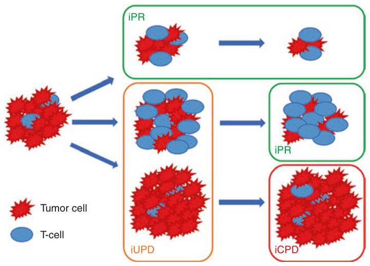
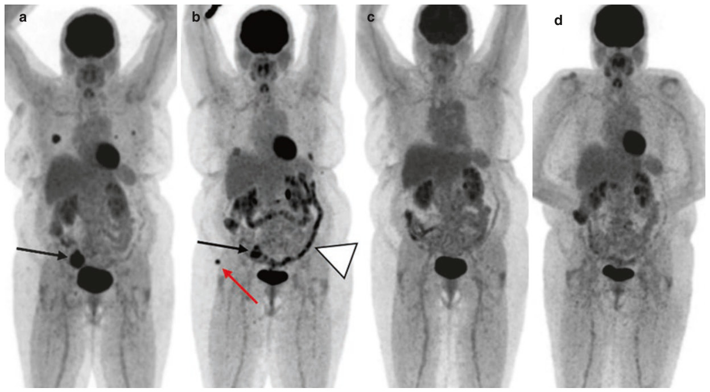
仅当肿瘤增加超过 30% 在第二次随访时（4–8 周后）得到确认，才将 iUPD 视为已确认疾病进展（iCPD）（图 3.2）。若肿瘤保持稳定，则解读仍为 iUPD；只有当符合部分缓解或完全缓解标准时，才会判定为 iPR 或 iCR [22]。
3.3.3 基于 FDG PET 的疗效评估
大量文献显示，肿瘤病灶内 [18F]-FDG 摄取下降与治疗反应之间具有良好的相关性 [24]。因此，有学者提出 PET 疗效评估方案，包括 EORTC PET 疗效推荐——
基线影像显示脾肿大和一巨大腹部肿块。治疗开始后三个月，腹部肿块和脾肿大已消退，并出现多发纵隔高代谢淋巴结，符合结节病样反应。
推荐标准（1999）以及 Wahl 等于 2009 年开创的实体瘤 PET 反应标准（PERCIST）[25]。两种方法均沿用 RECIST 模式，包含四个调整后的反应类别：完全代谢反应（CMR）、部分代谢反应（PMR）、代谢稳定性疾病（SMD）和代谢进展性疾病（PMD）。多项研究比较了原始 EORTC PET 标准与 PERCIST，结果相似（表 3.2）。然而，由于标准化程度更高，临床试验中似乎更倾向于使用 PERCIST[26]。两种方法均推荐使用瘦体重标化的标准摄取值（SUV）（SUL）。然而，如有可能，PERCIST 优先使用肿瘤内 SUL（peak），而非单位体素的 SUL（max），以降低内在变异性。尽管付出了诸多努力，仍须认识到 PERCIST 评估尚未用于临床试验中的疗效评价。作为前瞻性研究的主要或次要终点，我们仍依赖形态学成像。需特别指出的是，所有这些推荐标准均聚焦于 [18F]-FDG PET 在实体瘤代谢反应评估中的应用。肿瘤去分化并不像 [18F]-FDG 那样与受体表达相关。因此，PERCIST 本身并不一定适用于日益增多的肿瘤疾病受体成像，例如神经内分泌肿瘤的 SSTR PET 或前列腺癌的 PSMA 成像。
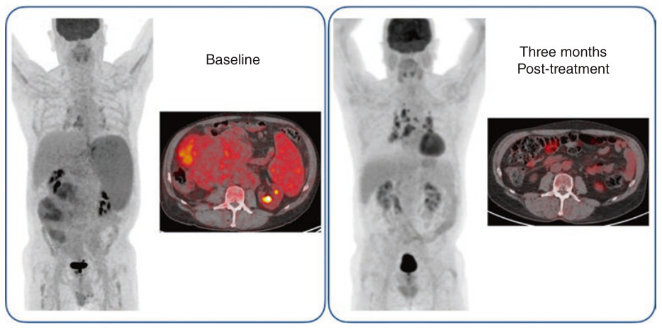
| 疗效 | PERCIST —— 基于 SULpeak max（SUL） |
|---|---|
| PMD | 靶病灶 SUL 增加至少 30% 且绝对值增加至少 0.8 SUL 单位，或靶病灶体积增加 30%，或出现至少一处新病灶，或非靶病灶明确进展。 |
| SMD | SUL 增加或减少不足 30%。 |
| PMR | SUL 降低 ≥30% 且绝对值至少下降 0.8 个 SUL 单位/且无新出现的 FDG 亲病灶/且靶病灶大小增加不超过 30%/且非靶病灶的 SUL 或大小无增加。 |
| CMR | FDG 摄取与周围本底无法区分，且 SUL 低于肝脏。 |
3.4 SIRT 后肝病变的监测
选择性内放射治疗（SIRT）使用钇-90 树脂微球或玻璃微球，是不可切除的原发性肝脏肿瘤或肝脏转移性疾病患者日益常用的姑息性治疗手段。SIRT 前的临床评估包括胸部和腹部增强 CT（以排除广泛的肝外病变）、肝脏 MRI（以评估肿瘤负荷），以及选择性血管造影（以评估血管解剖结构和肝内分流，并使用锝-99m 标记聚合白蛋白 [99mTc]MAA）[27, 28]。
3.4.1 用 CT/MRI 监测 SIRT
SIRT 治疗后早期疗效评估依靠解剖学成像可能存在局限，因为常规影像上肿瘤体积缩小延迟，且早期可出现因水肿及肿瘤边界更清晰所致的假性进展（图 3.4）。早期采用连续增强 CT 图像的研究显示，肿瘤体积在 3–21 个月（中位 12 个月）时缩小最为明显，并得出结论：相比增强 CT，血液肿瘤标志物（如结直肠转移瘤的 CEA）在疗效评估中更具优势 [28]。SIRT 前利用动态增强 CT 计算的动脉灌注（AP）是患者良好治疗反应和总生存期的最佳预测因子 [29]。此外，SIRT 后 4 周的随访灌注 CT 显示，长期应答者肝转移瘤的 AP 较无应答者显著降低，
后者无明显变化 [30]。双能量 CT 是一项新技术，可生成碘图作为评估和量化肿瘤活性的有力工具，通过碘图测量每个病变内的碘含量。尽管该方法尚需验证和标准化，但在肝射频消融方面已显示出初步良好结果 [31]，也有望成为 SIRT 疗效评估的工具。功能 MRI 也被建议用于评估 SIRT 疗效。SIRT 后 4 周 ADC 值升高超过 22% 与显著延长的总生存期相关（18 个月 vs. 5 个月，p < 0.001），而肿瘤体积在 4 周时未见明显缩小 [32]。
3.4.2 PET 监测 SIRT
早期即使用 FDG PET 评估 SIRT 后肝脏转移瘤负荷的减少 [33]。此类研究表明 FDG PET/CT 在早期疗效评估方面优于增强 CT [34, 35]。其他团队研究了基于 PET 的体积指标，如代谢肿瘤体积（MTV）或总病灶糖酵解率（TLG），得出结论：这些参数与预后的相关性优于单纯的肿瘤大小或 SUV。应用 FDG PET 进行准确疗效评估时必须考虑潜在陷阱。最突出的两个局限包括：小病变（<1 cm）或糖尿病所致部分容积效应造成的假阴性，以及脓肿形成或炎症改变造成的假阳性 [37]。然而，FDG PET/CT 与增强 CT 联合应用可解决大多数上述局限。尽管 FDG PET 可更早预测 SIRT 疗效，但目前 FDG PET 在评估 SIRT 后肿瘤反应中尚无明确的临床应用。这可能与缺乏额外的治疗选择有关。因此，对这种姑息治疗有限应答的早期了解仅在极少数情况下会改变治疗方案。尽管如此，了解各种影像学方法的潜在局限性和应用价值，对于准确判断治疗反应、避免对早期形态学变化产生错误解读至关重要。
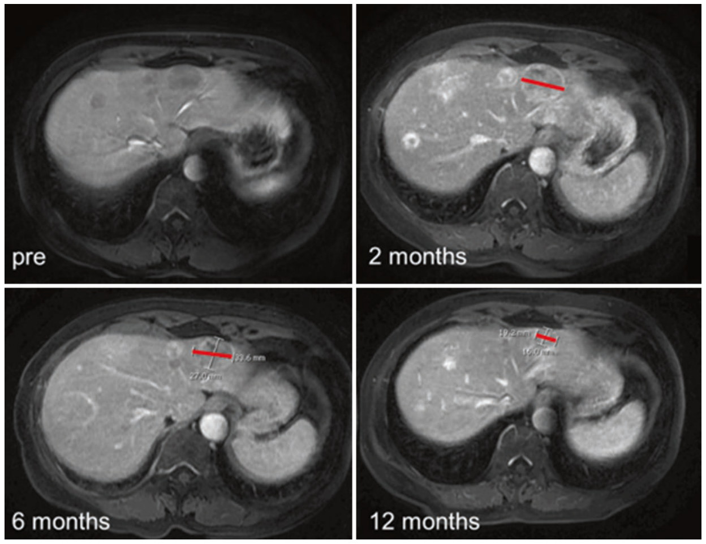
3.5 神经内分泌肿瘤的监测
类似物（SSA）及依维莫司用于小肠神经内分泌肿瘤；SSA、依维莫司、舒尼替尼及卡培他滨/替莫唑胺用于胰腺神经内分泌肿瘤。依维莫司也适用于支气管神经内分泌肿瘤的治疗。值得注意的是，在所有神经内分泌肿瘤的临床试验中，主要终点均是基于 RECIST 评估的无进展生存期。NETTER-1 试验研究了肽受体放射性核素治疗（PRRT）采用 [177Lu]DOTATATE 对比 60 mg 善宁的疗效。主要终点为无进展生存期，采用 CT 或 MRI 进行记录。主要终点定义为
神经内分泌肿瘤（NET）是一类异质性肿瘤，根据其分级和原发部位进行分类。分级分为三类：1 级为分化良好、Ki-67 小于 2 的肿瘤；2 级为分化良好、Ki-67 介于 3 至 20 的肿瘤；3 级为分化差、Ki-67 大于 20 的肿瘤。最近，3 级又进一步细分为分化良好和分化差两类。NET 最常见的原发部位是小肠和胰腺。在 [177Lu]-DOTATATE 获批之前，生长抑素
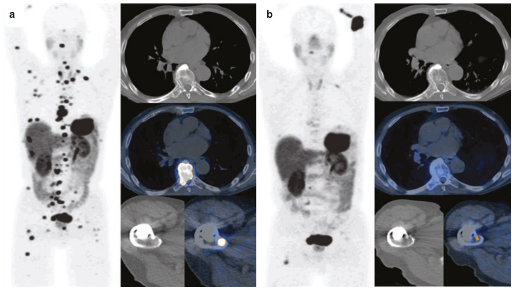
在 20 个月时观察到的无进展生存率从 sandostatin 组的 10.8% 增加到 [177Lu]-DOTATATE 组的 65.2%。神经内分泌肿瘤（NET）的一个重要问题是该疾病生长缓慢，尤其是 1 级和 2 级患者，因此肿瘤体积微小变化的检测可能具有临床意义，但难以辨别。由于疾病生长缓慢，一些研究小组已开始建议将肿瘤生长速率取代 RECIST 作为终点指标 [38]。由于生长缓慢，使用可重复性最高的影像学检查方式非常重要；对于肝脏为主的病变患者，肝胆期 MRI 是最佳的影像学检查方式 [39]。与 SIRT 和免疫治疗类似，形态学反应可能显著滞后于生理学变化。此外，由于水肿和肝脏病变显示的改善，假性进展可能使判读复杂化。这一点至关重要，因为根据欧洲神经内分泌肿瘤学会（ENETS）共识指南，治疗中出现进展是停止当前治疗的一个潜在原因。因此，已建议将解剖学与分子成像以及生物标志物进行协调和联合应用，以监测 PRRT [40]。关于如何判读 PRRT 后分子成像（例如 68Ga-DOTATATE PET/CT）结果，目前尚未建立标准化流程。迄今为止，仅发表了一项研究，总结了 33 例患者在 1 个周期 PRRT 后早期行 Ga-DOTATATE 治疗反应评估的结果
示，肿瘤/脾脏 SUV 比值（SUV）的下降与无进展生存期相关性良好（p = 0.002），而 SUV 下降未达统计学显著性 [41]（图 3.5）。因此，目前疗效评估仍以断面影像为基础，SSTR PET 可在治疗结束后 9–12 个月获取，作为新的基线参考 [16, 42]。
3.6 转移性前列腺癌的监测
3.6.1 转移性前列腺癌 CT 和骨扫描的常规监测
前列腺癌的影像学疗效评价在解剖学成像上历来困难，因此在治疗评估中仅起次要作用；在新药临床试验中通常以总生存期（OS）作为主要终点，而对于早期阶段则将无转移生存期（MFS）作为主要终点 [43, 44]。为实现标准化疗效评价，前列腺癌临床试验工作组 3（PCWG-3）于 2016 年发布了更新版本 [45]。关于骨骼外病变的推荐仍遵循 RECIST 1.1 标准，例外之处在于每个部位（例如肺、淋巴结、肝）应测量最多 5 个病灶，以
并兼顾疾病的异质性。淋巴结短轴 ≥1.5 cm 视为可测量病灶，内脏病灶须 ≥1.0 cm 方可视为靶病灶。短轴 1–1.5 cm 的淋巴结可视为恶性，但只能作为非靶病灶。鉴于硬化性病变在治疗下可能增大并在 CT 上长期持续存在，仅溶骨性病变 ≥1.0 cm 方可根据 CT 视为靶病灶。疗效评估时，骨扫描纳入 PCWG-3 评估体系。愈合中的骨转移瘤最初会出现矿化增加（图 3.6），从而在 18F-NaF PET/CT 上表现为活性增加，即所谓的肿瘤闪烁现象，通常在治疗后持续 3 个月，但也可晚至 6 个月出现 [46]。因此，新治疗开始后 8 周时的病灶初始增多被解释为骨闪烁，骨扫描上仅在至少 2 个新病灶经两次确认后方可判定为进展（2+2 规则）。
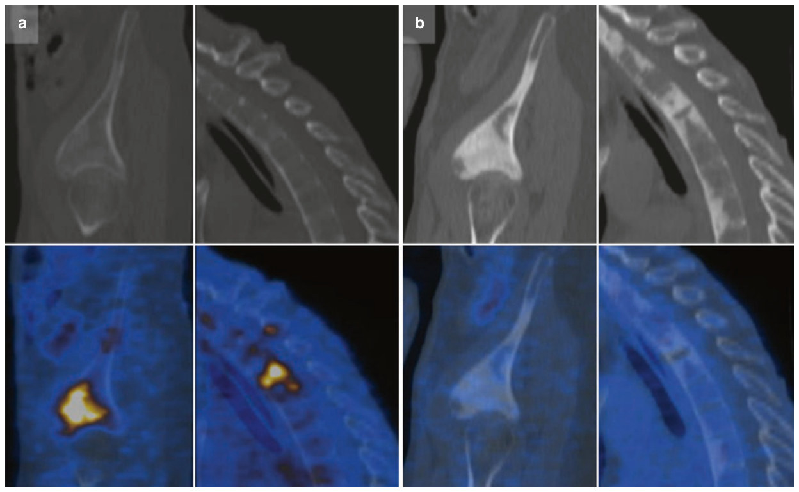
3.6.2 转移性前列腺癌的
基于 RECIST 1.1 和 PSA 值的进展临床评估 [49]。68Ga-PSMA PET 在治疗反应评估中的临床应用价值尚未确立（图 3.7）。初步研究显示 68Ga-PSMA PET 用于评估 223Ra 治疗反应的结果令人鼓舞 [50]。将 Ga-PSMA PET 用于雄激素剥夺治疗（ADT）的疗效评估时需进行仔细的前瞻性研究，因为初步体外研究结果显示 ADT 会增加细胞 PSMA 表达；因此，这类患者可能出现一种新的"肿瘤闪烁"现象 [51]。基于新病灶出现以及 PSMA 阳性肿瘤体积变化（疾病进展 +20%、部分缓解 -30%）的 RECIP 1.0 标准，提出了一种简单算法，将 PSA 和 PSMA PET 信息相结合以改善疗效评估 [52]。
PET/CT 监测
FDG PET/CT 在前列腺癌患者中的应用非常有限，因为只有一小部分高度去分化的肿瘤才表现为葡萄糖摄取增加。单次检查即可通过 18F 或 C-胆碱或 Ga-前列腺特异性膜抗原（PSMA）PET/CT 评估淋巴结、内脏及骨转移。一项研究显示，在局部晚期前列腺癌患者新辅助多西他赛化疗和完全雄激素阻断后，细胞凋亡与 11C-胆碱 PET/CT 上 SUV 的下降具有良好的相关性 [48]。另一方面，前瞻性应用胆碱 PET/CT 评估标准化多西他赛一线化疗疗效的研究则显示，胆碱摄取的变化与临床之间无相关性——
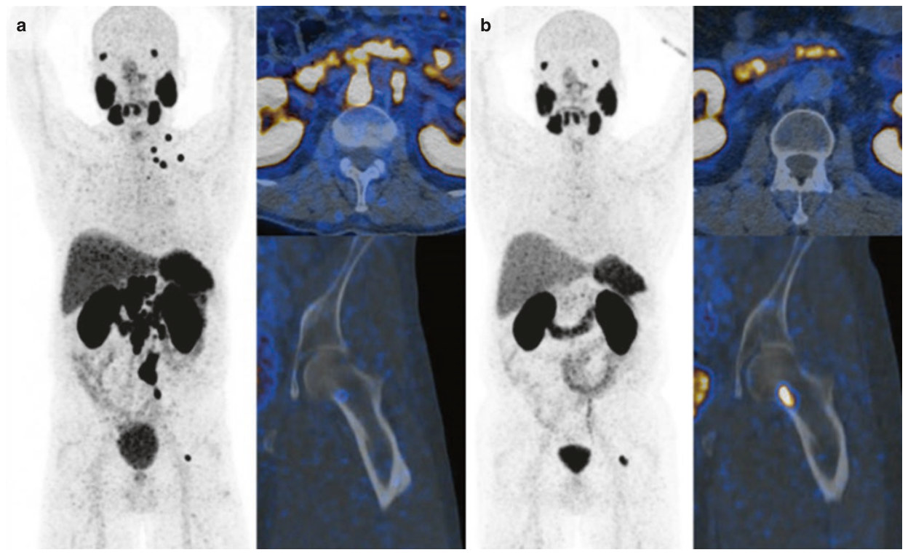
3.7 MRI 及 PET/MRI 在疗效评估中的作用
在前列腺癌中情况同样如此。图 3.9 显示一例使用 PET/MRI 成像的肝多发转移患者。这些病灶的摄取低于背景肝脏，但在 DWI 上清晰可见，因此该患者不适合接受 PSMA RLT。这是患者筛选的重要方法，因为仅使用 PSMA PET 进行筛查可能会漏诊 PSMA 阴性病灶。TheraP 试验联合应用 FDG 和 PSMA PET，并排除了 FDG 阳性/PSMA 阴性的患者 [19]：TheraP 是一项随机、开放标签的 II 期试验。然而，并非总能为患者同时行 PSMA 和 FDG PET 检查以筛选患者，因此需要一种替代方法以显示 PSMA 阴性病灶。DWI 成像或许能够替代 FDG PET 来发现 PSMA 阴性病灶。虽然本例表明 DWI 可检出 PSMA 阴性病灶，但肝脏并不是主要问题，因为
既往在 PET/MRI 背景下联合应用扩散加权成像（DWI）和 FDG PET 的兴趣有限，因为扩散受限常与 PET 所测得的高代谢相一致。因此进行 FDG PET/MRI 时，再行 DWI 价值不大。在 theranostics 场景中，使用靶向放射性药物对患者进行成像，如前所述的 PSMA 和 SSTR 靶向药物。在此情境下，DWI 可提供 PET 成像无法获取的额外信息。此外，NET 和 mCRPC 在高代谢和扩散受限方面具有异质性；因此 MRI 可检出 PET 未显示的病变。例如图 3.8 中该例分化良好的 G3 NET 患者，肝脏有广泛病变，但 FDG 不呈阳性。
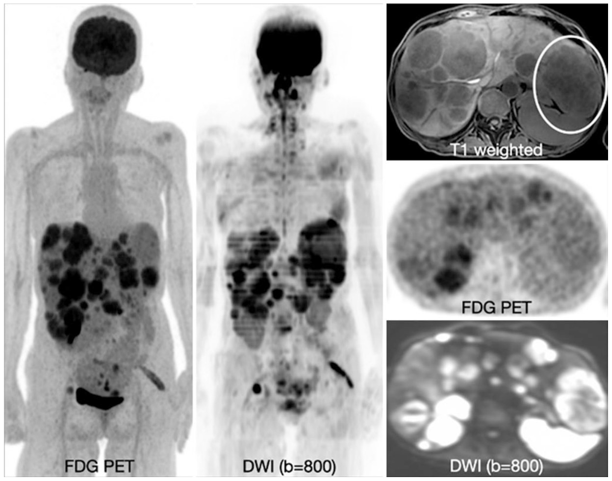
横断面成像可以很容易地评估肝转移。更具临床意义的是骨病变。在 PSMA PET 中，难以判断骨病灶是低水平表达 PSMA（即 PSMA 阴性）还是已经接受治疗且细胞成分较少。前者预示预后不良，而后者则不会。在图 3.10 中，可见 DWI 如何检出骨内 PSMA 阴性病灶，而这些病灶在其他检查中无法检出。
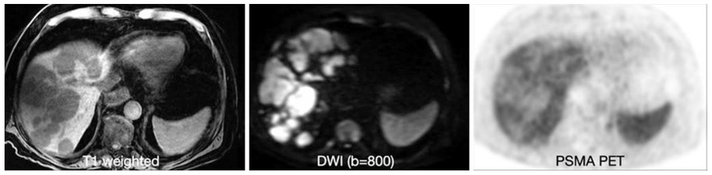
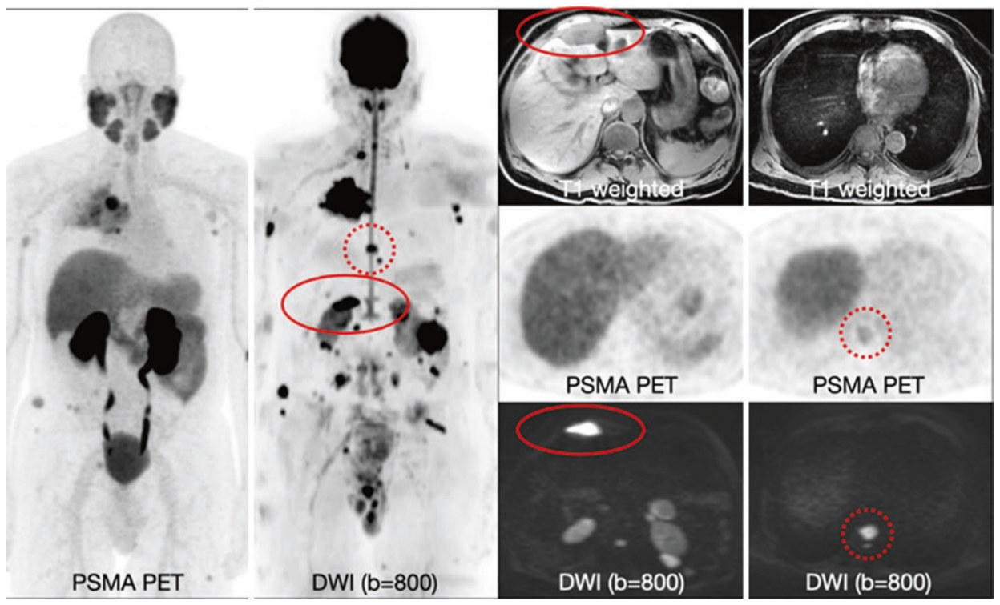
在诊疗一体化患者成像中，DWI 最有价值的应用可能在于对患者进行长期随访。在许多中心，不可能在多个时间点对患者进行 PSMA 或 SSTR-PET 成像，而且这种方法会遗漏可能出现的 PSMA 阴性病灶。在此情况下，使用全身 MRI 随访可能更为合适。前列腺癌转移报告和数据系统（MET-RADS-P）已基于全身 DWI 作为疗效评估标准而开发 [53]。除评估淋巴结和内脏病灶的解剖学变化（类似 RECIST）外，MET-RADS-P 将全身 DWI 作为评估骨疗效的关键影像学技术，而传统影像学（如 CT 和骨扫描）在这方面能力有限 [54]。靶向 PET 与全身 DWI 的联合应用在接受 RLT 治疗的患者筛选和疗效评估方面具有广阔前景。
3.8 小结
随着混合成像技术的引入，利用不同 PET 示踪剂评估代谢或受体表达的应用大幅拓展。目前已具备在第二步中将相同分子不仅用于诊断、也用于治疗的可能性，这正在带来全新的发展动力。如何最佳地将形态学与分子信息相结合，用于患者的治疗筛选以及疾病监测，仍有待确定。深入理解肿瘤生物学及影像学检查手段是实现最佳患者管理的基础。
- 系统治疗疗效的影像评估通常以形态学为基础。随着非细胞毒性治疗药物的应用，疗效反应模式变得高度异质。
- 尤其是免疫治疗或肝脏转移瘤的局部治疗（如 SIRT），可作为疗效反应模式的一部分出现早期假性进展，形态学反应出现延迟。
- 类似于 RECIST，已针对 FDG PET/CT 提出疗效评价标准（PERCIST），并已证实其与预后相关。PERCIST 可能是疗效的良好替代标志物，然而迄今为止尚无针对实体瘤的临床前瞻性研究以 FDG PET/CT 为基础。
- 骨转移瘤的形态学评估仅适用于伴软组织成分的溶骨性病变。CT 上新出现的硬化性病变并不一定提示肿瘤进展，也可能提示既往隐匿性病灶对治疗产生了反应。
1. Hicks RJ. Beyond FDG: novel PET tracers for cancer imaging. Cancer Imaging. 2003;4:22–4. https://doi.org/10.1102/1470-7330.2003.0032.
2. Burger IA, Zitzmann-Kolbe S, Pruim J, Friebe M, Graham K, Stephens A, et al. First clinical results of (D)-18F-Fluoromethyltyrosine (BAY 86-9596) PET/CT in patients with non-small cell lung cancer and head and neck squamous cell carcinoma. J Nucl Med. 2014;55:1778–85. https://doi.org/10.2967/jnumed.114.140699.
3. Buteau JP, Martin AJ, Emmett L, Iravani A, Sandhu S, Joshua AM, et al. PSMA and FDG-PET as predictive and prognostic biomarkers in patients given [(177)Lu]Lu-PSMA-617 versus cabazitaxel for metastatic castration-resistant prostate cancer (TheraP): a biomarker analysis from a randomised, open-label, phase 2 trial. Lancet Oncol. 2022; https://doi.org/10.1016/S1470-2045(22)00605-2.
4. Bodei L, Kidd M, Paganelli G, Grana CM, Drozdov I, Cremonesi M, et al. Long-term tolerability of PRRT in 807 patients with neuroendocrine tumours: the value and limitations of clinical factors. Eur J Nucl Med Mol Imaging. 2015;42:5–19. https://doi.org/10.1007/s00259-014-2893-5.
5. Ballal S, Yadav MP, Bal C, Sahoo RK, Tripathi M. Broadening horizons with (225)Ac-DOTATATE targeted alpha therapy for gastroenteropancreatic neuroendocrine tumour patients stable or refractory to (177)Lu-DOTATATE PRRT: first clinical experience on the efficacy and safety. Eur J Nucl Med Mol Imaging. 2020;47:934–46. https://doi.org/10.1007/s00259-019-04567-2.
6. Kratochwil C, Bruchertseifer F, Rathke H, Hohenfellner M, Giesel FL, Haberkorn U, et al. Targeted alpha-therapy of metastatic castration-resistant prostate cancer with (225)Ac-PSMA-617: swimmer-plot analysis suggests efficacy regarding duration of tumor control. J Nucl Med. 2018;59:795–802. https://doi.org/10.2967/jnumed.117.203539.
7. Sathekge M, Bruchertseifer F, Vorster M, Lawal IO, Knoesen O, Mahapane J, et al. Predictors of overall and disease-free survival in metastatic castration-resistant prostate cancer patients receiving (225)Ac-PSMA-617 radioligand therapy. J Nucl Med. 2020;61:62– 9. https://doi.org/10.2967/jnumed.119.229229.
8. Sartor O, de Bono J, Chi KN, Fizazi K, Herrmann K, Rahbar K, et al. Lutetium-177-PSMA-617 for metastatic castration-resistant prostate cancer. N Engl J Med. 2021;385:1091–103. https://doi.org/10.1056/NEJMoa2107322.
9. Baum RP, Schuchardt C, Singh A, Chantadisai M, Robiller FC, Zhang J, et al. Feasibility, biodistribution, and preliminary dosimetry in peptide-targeted radionuclide therapy of diverse adenocarcinomas using (177)Lu-FAP-2286: first-in-humans results. J Nucl Med. 2022;63:415–23. https://doi.org/10.2967/jnumed.120.259192.
10. Fendler WP, Pabst KM, Kessler L, Fragoso Costa P, Ferdinandus J, Weber M, et al. Safety and efficacy of 90Y-FAPI-46 radioligand therapy in patients with advanced sarcoma and other cancer entities. Clin Cancer Res. 2022;28:4346–53. https://doi.org/10.1158/1078-0432.CCR-22-1432.
11. Dalm SU, Bakker IL, de Blois E, Doeswijk GN, Konijnenberg MW, Orlandi F, et al. 68Ga/177Lu-NeoBOMB1, a novel radiolabeled GRPR antagonist for theranostic use in oncology. J Nucl Med. 2017;58:293–9. https://doi.org/10.2967/jnumed.116.176636.
12. Buck AK, Grigoleit GU, Kraus SK, Schirbel A, Heinsch M, Dreher N, et al. C-X-C motif chemokine receptor 4-targeted radioligand therapy in patients with advanced T-cell lymphoma. J Nucl Med. 2022; https://doi.org/10.2967/jnumed.122.264207.
13. Merkx RIJ, Rijpkema M, Franssen GM, Kip A, Smeets B, Morgenstern A, et al. Carbonic anhydrase IX-targeted alpha-radionuclide therapy with 225Ac inhibits tumor growth in a renal cell carcinoma model. Pharmaceuticals (Basel). 2022:15. https://doi.org/10.3390/ph15050570.
14. Persson M, Juhl K, Rasmussen P, Brandt-Larsen M, Madsen J, Ploug M, et al. uPAR targeted radionuclide therapy with (177) Lu-DOTA-AE105 inhibits dissemination of metastatic prostate cancer. Mol Pharm. 2014;11:2796–806. https://doi.org/10.1021/mp500177c.
15. Strosberg J, El-Haddad G, Wolin E, Hendifar A, Yao J, Chasen B, et al. Phase 3 Trial of (177)Lu-Dotatate for midgut neuroendocrine tumors. N Engl J Med. 2017;376:125–35. https://doi.org/10.1056/ NEJMoa1607427.
16. Hope TA, Bodei L, Chan JA, El-Haddad G, Fidelman N, Kunz PL, et al. NANETS/SNMMI consensus statement on patient selection and appropriate use of (177)Lu-DOTATATE peptide receptor radionuclide therapy. J Nucl Med. 2020;61:222–7. https://doi.org/10.2967/jnumed.119.240911.
17. Zhang J, Liu Q, Singh A, Schuchardt C, Kulkarni HR, Baum RP. Prognostic value of (18)F-FDG PET/CT in a large cohort of patients with advanced metastatic neuroendocrine neoplasms treated with peptide receptor radionuclide therapy. J Nucl Med. 2020;61:1560–9. https://doi.org/10.2967/jnumed.119.241414.
18. Kaewput C, Vinjamuri S. Role of combined (68)Ga DOTA-peptides and (18)F FDG PET/CT in the evaluation of gastroenteropancreatic neuroendocrine neoplasms. Diagnostics (Basel). 2022:12. https://doi.org/10.3390/diagnostics12020280.
19. Hofman MS, Emmett L, Sandhu S, Iravani A, Joshua AM, Goh JC, et al. [(177)Lu]Lu-PSMA-617 versus cabazitaxel in patients with metastatic castration-resistant prostate cancer (TheraP): a randomised, open-label, phase 2 trial. Lancet. 2021;397:797–804. https://doi.org/10.1016/S0140-6736(21)00237-3.
20. WHO handbook for reporting results of cancer treatment; 1979.
21. Eisenhauer EA, Therasse P, Bogaerts J, Schwartz LH, Sargent D, Ford R, et al. New response evaluation criteria in solid tumours: revised RECIST guideline (version 1.1). Eur J Cancer. 2009;45:228–47. https://doi.org/10.1016/j.ejca.2008.10.026.
22. Seymour L, Bogaerts J, Perrone A, Ford R, Schwartz LH, Mandrekar S, et al. iRECIST: guidelines for response criteria for use in trials testing immunotherapeutics. Lancet Oncol. 2017;18:e143–e52. https://doi.org/10.1016/S1470-2045(17)30074-8.
23. Wong ANM, McArthur GA, Hofman MS, Hicks RJ. The advantages and challenges of using FDG PET/CT for response assessment in melanoma in the era of targeted agents and immunotherapy. Eur J Nucl Med Mol Imaging. 2017;44:67–77. https://doi.org/10.1007/s00259-017-3691-7.
24. Rymer B, Curtis NJ, Siddiqui MR, Chand M. FDG PET/CT can assess the response of locally advanced rectal cancer to neoadjuvant chemoradiotherapy: evidence from meta-analysis and systematic review. Clin Nucl Med. 2016;41:371–5. https://doi.org/10.1097/ RLU.0000000000001166.
25. Wahl RL, Jacene H, Kasamon Y, Lodge MA. From RECIST to PERCIST: evolving considerations for PET response criteria in solid tumors. J Nucl Med. 2009;50(Suppl 1):122S–50S. https://doi.org/10.2967/jnumed.108.057307.
26. Pinker K, Riedl C, Weber WA. Evaluating tumor response with FDG PET: updates on PERCIST, comparison with EORTC criteria and clues to future developments. Eur J Nucl Med Mol Imaging. 2017;44:55–66. https://doi.org/10.1007/s00259-017-3687-3.
27. Stubbs RS, Cannan RJ, Mitchell AW. Selective internal radiation therapy with 90yttrium microspheres for extensive colorectal liver metastases. J Gastrointest Surg. 2001;5:294–302.
28. Boppudi S, Wickremesekera SK, Nowitz M, Stubbs R. Evaluation of the role of CT in the assessment of response to selective internal radiation therapy in patients with colorectal liver metastases. Australas Radiol. 2006;50:570–7. https://doi.org/10.1111/j.1440-1673.2006.01630.x.
29. Morsbach F, Pfammatter T, Reiner CS, Fischer MA, Sah BR, Winklhofer S, et al. Computed tomographic perfusion imaging for the prediction of response and survival to transarterial radioembolization of liver metastases. Invest Radiol. 2013;48:787–94. https://doi.org/10.1097/RLI.0b013e31829810f7.
30. Reiner CS, Morsbach F, Sah BR, Puippe G, Schaefer N, Pfammatter T, et al. Early treatment response evaluation after yttrium-90 radioembolization of liver malignancy with CT perfusion. J Vasc Interv Radiol. 2014;25:747–59. https://doi.org/10.1016/j. jvir.2014.01.025.
31. Lee SH, Lee JM, Kim KW, Klotz E, Kim SH, Lee JY, et al. Dual-energy computed tomography to assess tumor response to hepatic radiofrequency ablation: potential diagnostic value of virtual noncontrast images and iodine maps. Invest Radiol. 2011;46:77–84. https://doi.org/10.1097/RLI.0b013e3181f23fcd.
32. Schmeel FC, Simon B, Sabet A, Luetkens JA, Traber F, Schmeel LC, et al. Diffusion-weighted magnetic resonance imaging predicts survival in patients with liver-predominant metastatic colorectal cancer shortly after selective internal radiation therapy. Eur Radiol. 2017;27:966–75. https://doi.org/10.1007/s00330-016-4430-3.
33. Wong CY, Qing F, Savin M, Campbell J, Gates VL, Sherpa KM, et al. Reduction of metastatic load to liver after intraarterial hepatic yttrium-90 radioembolization as evaluated by [18F] fluorodeoxyglucose positron emission tomographic imaging. J Vasc Interv Radiol. 2005;16:1101–6. https://doi.org/10.1097/01. RVI.0000168104.32849.07.
34. Annunziata S, Treglia G, Caldarella C, Galiandro F. The role of 18F-FDG-PET and PET/CT in patients with colorectal liver metastases undergoing selective internal radiation therapy with yttrium-90: a first evidence-based review. ScientificWorldJournal. 2014;2014:879469. https://doi.org/10.1155/2014/879469.
35. Szyszko T, Al-Nahhas A, Canelo R, Habib N, Jiao L, Wasan H, et al. Assessment of response to treatment of unresectable liver tumours with 90Y microspheres: value of FDG PET versus computed tomography. Nucl Med Commun. 2007;28:15–20. https://doi.org/10.1097/MNM.0b013e328011453b.
36. Fendler WP, Philippe Tiega DB, Ilhan H, Paprottka PM, Heinemann V, Jakobs TF, et al. Validation of several SUV-based parameters derived from 18F-FDG PET for prediction of survival after SIRT of hepatic metastases from colorectal cancer. J Nucl Med. 2013;54:1202–8. https://doi.org/10.2967/jnumed.112.116426.
37. Dierckx R, Maes A, Peeters M, Van De Wiele C. FDG PET for monitoring response to local and locoregional therapy in HCC and liver metastases. Q J Nucl Med Mol Imaging. 2009;53:336–42.
38. Dromain C, Pavel ME, Ruszniewski P, Langley A, Massien C, Baudin E, et al. Tumor growth rate as a metric of progression, response, and prognosis in pancreatic and intestinal neuroendocrine tumors. BMC Cancer. 2019;19:66. https://doi.org/10.1186/s12885-018-5257-x.
39. Morse B, Jeong D, Thomas K, Diallo D, Strosberg JR. Magnetic resonance imaging of neuroendocrine tumor hepatic metastases: does hepatobiliary phase imaging improve lesion conspicuity and interobserver agreement of lesion measurements? Pancreas. 2017;46:1219– 24. https://doi.org/10.1097/MPA.0000000000000920.
40. Hicks RJ, Kwekkeboom DJ, Krenning E, Bodei L, Grozinsky-Glasberg S, Arnold R, et al. ENETS consensus guidelines for the standards of care in neuroendocrine neoplasia: peptide receptor radionuclide therapy with radiolabeled somatostatin analogues. Neuroendocrinology. 2017; https://doi.org/10.1159/000475526.
41. Haug AR, Auernhammer CJ, Wangler B, Schmidt GP, Uebleis C, Goke B, et al. 68Ga-DOTATATE PET/CT for the early prediction of response to somatostatin receptor-mediated radionuclide therapy in patients with well-differentiated neuroendocrine tumors. J Nucl Med. 2010;51:1349–56. https://doi.org/10.2967/jnumed.110.075002.
42. Hope TA, Bergsland EK, Bozkurt MF, Graham M, Heaney AP, Herrmann K, et al. Appropriate use criteria for somatostatin receptor PET imaging in neuroendocrine tumors. J Nucl Med. 2018;59:66–74. https://doi.org/10.2967/jnumed.117.202275.
43. de Bono JS, Logothetis CJ, Molina A, Fizazi K, North S, Chu L, et al. Abiraterone and increased survival in metastatic prostate cancer. N Engl J Med. 2011;364:1995–2005. https://doi.org/10.1056/ NEJMoa1014618.
44. Parker C, Nilsson S, Heinrich D, Helle SI, O'Sullivan JM, Fossa SD, et al. Alpha emitter radium-223 and survival in metastatic prostate cancer. N Engl J Med. 2013;369:213–23. https://doi.org/10.1056/ NEJMoa1213755.
45. Scher HI, Morris MJ, Stadler WM, Higano C, Basch E, Fizazi K, et al. Trial design and objectives for castration-resistant prostate cancer: updated recommendations from the Prostate Cancer Clinical Trials Working Group 3. J Clin Oncol. 2016;34:1402–18. https://doi.org/10.1200/JCO.2015.64.2702.
46. Costelloe CM, Chuang HH, Madewell JE, Ueno NT. Cancer response criteria and bone metastases: RECIST 1.1, MDA and PERCIST. J Cancer. 2010;1:80–92.
47. Rathkopf DE, Beer TM, Loriot Y, Higano CS, Armstrong AJ, Sternberg CN, et al. Radiographic progression-free survival as a clinically meaningful end point in metastatic castration-resistant prostate cancer: the PREVAIL randomized clinical trial. JAMA Oncol. 2018;4:694–701. https://doi.org/10.1001/jamaoncol.2017.5808.
48. Schwarzenbock SM, Knieling A, Souvatzoglou M, Kurth J, Steiger K, Eiber M, et al. [11C]Choline PET/CT in therapy response assessment of a neoadjuvant therapy in locally advanced and high risk prostate cancer before radical prostatectomy. Oncotarget. 2016;7:63747–57. https://doi.org/10.18632/oncotarget.11653.
49. Schwarzenbock SM, Eiber M, Kundt G, Retz M, Sakretz M, Kurth J, et al. Prospective evaluation of [11C]Choline PET/CT in therapy response assessment of standardized docetaxel first-line chemotherapy in patients with advanced castration refractory prostate cancer. Eur J Nucl Med Mol Imaging. 2016;43:2105–13. https://doi.org/10.1007/s00259-016-3439-9.
50. Bieth M, Kronke M, Tauber R, Dahlbender M, Retz M, Nekolla SG, et al. Exploring new multimodal quantitative imaging indices for the assessment of osseous tumour burden in prostate cancer using 68Ga-PSMA-PET/CT. J Nucl Med. 2017; https://doi.org/10.2967/jnumed.116.189050.
51. Meller B, Bremmer F, Sahlmann CO, Hijazi S, Bouter C, Trojan L, et al. Alterations in androgen deprivation enhanced prostate-specific membrane antigen (PSMA) expression in prostate cancer cells as a target for diagnostics and therapy. EJNMMI Res. 2015;5:66. https://doi.org/10.1186/s13550-015-0145-8.
52. Gafita A, Rauscher I, Weber M, Hadaschik B, Wang H, Armstrong WR, et al. Novel framework for treatment response evaluation using PSMA-PET/CT in patients with metastatic castration-resistant prostate cancer (RECIP 1.0): an international multicenter study. J Nucl Med. 2022; https://doi.org/10.2967/jnumed.121.263072.
53. Padhani AR, Lecouvet FE, Tunariu N, Koh DM, De Keyzer F, Collins DJ, et al. METastasis reporting and data system for prostate cancer: practical guidelines for acquisition, interpretation, and reporting of whole-body magnetic resonance imaging-based evaluations of multiorgan involvement in advanced prostate cancer. Eur Urol. 2017;71:81–92. https://doi.org/10.1016/j.eururo.2016.05.033.
54. Yoshida S, Takahara T, Ishii C, Arita Y, Waseda Y, Kijima T, et al. METastasis reporting and data system for prostate cancer as a prognostic imaging marker in castration-resistant prostate cancer. Clin Genitourin Cancer. 2020;18:e391–e6. https://doi.org/10.1016/j. clgc.2019.12.010.
结肠和直肠的良性及恶性疾病
结肠和直肠的良性及恶性疾病
Ulrike Attenberger 和 Inês Santiago
4.1 结肠和直肠的良性疾病
4.1.1 结肠和直肠的炎症性疾病
CT 是检出和定性多种结肠炎性病变（包括阑尾炎、憩室炎、肠脂垂炎、慢性炎症性肠病（IBD）以及感染性与非感染性结肠炎）的重要诊断工具。CT 在检出急性病变以及炎症性肠病的肠外并发症和肠外表现方面具有重要作用。尽管不同炎症性肠病的影像学表现存在显著重叠，但它们在胃肠道的主要受累部位、节段性受累长度、肠壁增厚程度、肠壁强化方式及肠外受累情况等方面有所不同。因此，了解各
U. Attenberger (*) 德国 波恩大学医院 诊断与介入放射科 电子邮件：ulrike.attenberger@ukbonn.de
I. Santiago 葡萄牙 里斯本 Champalimaud 基金会 放射科 电子邮件：ines.santiago@neuro.fchampalimaud.org
疾病的特征性表现模式和特异性影像学特征有助于作出准确诊断。
4.1.1.1 慢性炎症性肠病
炎症性肠病（IBD）是一组可导致胃肠道复发性炎症的慢性疾病，主要包括克罗恩病、溃疡性结肠炎和未定型结肠炎三个亚型。环境变化、遗传因素、肠道菌群改变及免疫系统失调共同参与炎症的发生、发展及随后的纤维化过程[1]。尽管克罗恩病和溃疡性结肠炎的影像学表现存在相当程度的重叠，但仍有一些特征有助于二者的鉴别（表 4.1，另见图 4.1）[2]。
4.1.1.2 感染性结肠炎
感染性结肠炎，顾名思义是由细菌、病毒、真菌或寄生虫等感染所引起的结肠炎症。虽然断层影像并非其主要诊断工具，且影像学表现常缺乏特异性，但常规腹部 CT 仍可用于评估病变范围与严重程度、肠外并发症，特别是用于鉴别其他原因所致的急腹症[3]。无论感染病原如何，典型影像学表现包括：肠壁弥漫性增厚伴均匀强化、结肠周围脂肪密度增高、出现气液平面及腹水[3]。
假膜性结肠炎 假膜性结肠炎是一种急性、可能危及生命的医院内感染性结肠炎，由难辨梭菌过度增殖所产生的毒素所致。近年来，由于预防性及广谱抗生素应用增多，本病已成为一个重要的临床问题。其影像学特征包括肠壁明显增厚（通常较其他感染性及非感染性
| 克罗恩病 | 溃疡性结肠炎 | |
|---|---|---|
| 起源部位 | 末端回肠 | Rectum |
| 肠道受累 | 全胃肠道受累，伴小肠（末端回肠）受累者占 70%–80% | 直肠受累占 95%，全结肠炎时末端回肠受累（“倒灌性回肠炎”） |
| 胃肠道上部 | Rarely | Never |
| 末端回肠 | 极常见 | "逆流性回肠炎" |
| Colon | Common | Always |
| 直肠 | 少见 | 总是 |
| 分布 | 不连续 | 自直肠向上的连续性分布 |
| 肠壁受累（炎症） | 壁内 | 黏膜及黏膜下层 |
| 肠壁增厚 | 1–2 cm | 7–8 mm |
| 肠道并发症 | 狭窄（纤维性、狭窄性）、裂隙和瘘管、深溃疡、鹅卵石样表现、脓肿、肛周病变 | 中毒性巨结肠、出血 |
| 肛周受累 | 直肠周围脂肪条索影、瘘管 | 肛周并发症少见 |
结肠炎更为广泛）、由黏膜及黏膜下水肿所致的肠壁低密度增厚、"手风琴征"（增厚的结肠壁皱襞之间陷夹口服对比剂）以及"靶征"（或"双晕征"）（图 4.2）。肠外表现包括腹水和结肠周围脂肪密度增高，但相对于结肠壁增厚程度而言，这些表现往往相对轻微。最常累及整个结肠。重症病例可发生肠壁积气（结肠积气）、中毒性巨结肠及穿孔（气腹）等并发症[4]。
4.1.1.3 非感染性结肠炎
非感染性结肠炎是指由感染（病原体）以外多种原因（如缺血、药物或免疫介导因素）所致的异质性结肠炎症。
缺血性结肠炎 缺血性结肠炎是由于血供中断和/或不足而导致结肠炎性损伤的一种疾病。该病多见于伴有动脉粥样硬化性疾病和/或低血流状态（例如由心脏病所致）的老年患者。低血流状态与非闭塞性血管病变可导致分水岭区域发生缺血性结肠炎，而完全性血管闭塞则导致受累血管供血区域受累（例如肠系膜上动脉供血区）。影像学表现大多缺乏特异性：肠壁均匀增厚、"靶征"（增强的黏膜层与浆膜层之间由黏膜下水肿形成的低密度环）、肠管扩张、结肠气囊肿（见于重症病例）、结肠周围积液或脂肪密度增高、肠系膜水肿和/或腹水（图 4.2）。须行多期 CT 血管成像以明确血管闭塞部位并指导后续治疗方案的制定。
肠系膜上动脉）。影像表现多无特异性：肠壁均匀增厚、"靶征"（增强的黏膜与浆膜之间黏膜下水肿形成的低密度环）、肠管扩张、（重症时）结肠壁积气、结肠周围积液或脂肪条索、肠系膜水肿和/或腹水（图 4.2）。需行多期 CT 血管成像以明确血管闭塞部位并进行手术规划。
药物性结肠炎 药物治疗（如生物制剂免疫调节治疗、化疗药物、非甾体抗炎药）的广泛应用导致胃肠道不良事件发生率显著上升。结合病史与临床表现，并辅以影像学表现，是确立诊断的关键。横断面影像学检查可用于评估（结肠）周围组织的受累情况及相关并发症，并与其他急腹症病因（如缺血性病因）相鉴别 [5]。其影像学表现总体与其他感染性及非感染性结肠炎相似（图 4.2）。
中性粒细胞减少性结肠炎 中性粒细胞减少性结肠炎（又称盲肠炎）是一种严重的坏死性炎症，主要发生于中性粒细胞减少患者。该病多起始于盲肠，并可延伸至升结肠、阑尾或回肠末端 [6]。由于其形态学影像学表现与其他感染性及非感染性结肠炎相似，须结合病史（如免疫缺陷）方能确诊。
放射性结肠炎与直肠炎 放射性结肠炎是由放射治疗引起的结直肠炎性损伤，可在治疗后 6 个月至 5 年内发生。根据起病时间，放射性结肠炎可分为急性与慢性两种类型。当怀疑存在结肠外受累及其他并发症时，可考虑行横断面影像学检查。急性期影像学表现包括非特异性肠壁增厚及结肠周围索条影；慢性期可表现为短段或长段肠管狭窄、结肠管腔变窄、溃疡和/或瘘管形成 [7]。
移植物抗宿主病 肠道移植物抗宿主病（GvHD）是造血干细胞移植术后常见且可能危及生命的并发症，可累及全胃肠道（约 25% 的病例存在大肠受累）。影像学表现缺乏特异性，包括：中度肠壁增厚伴黏膜强化、肠系膜水肿、血管扩张充血，重症病例可见肠壁气囊肿（图 4.2）[8]。
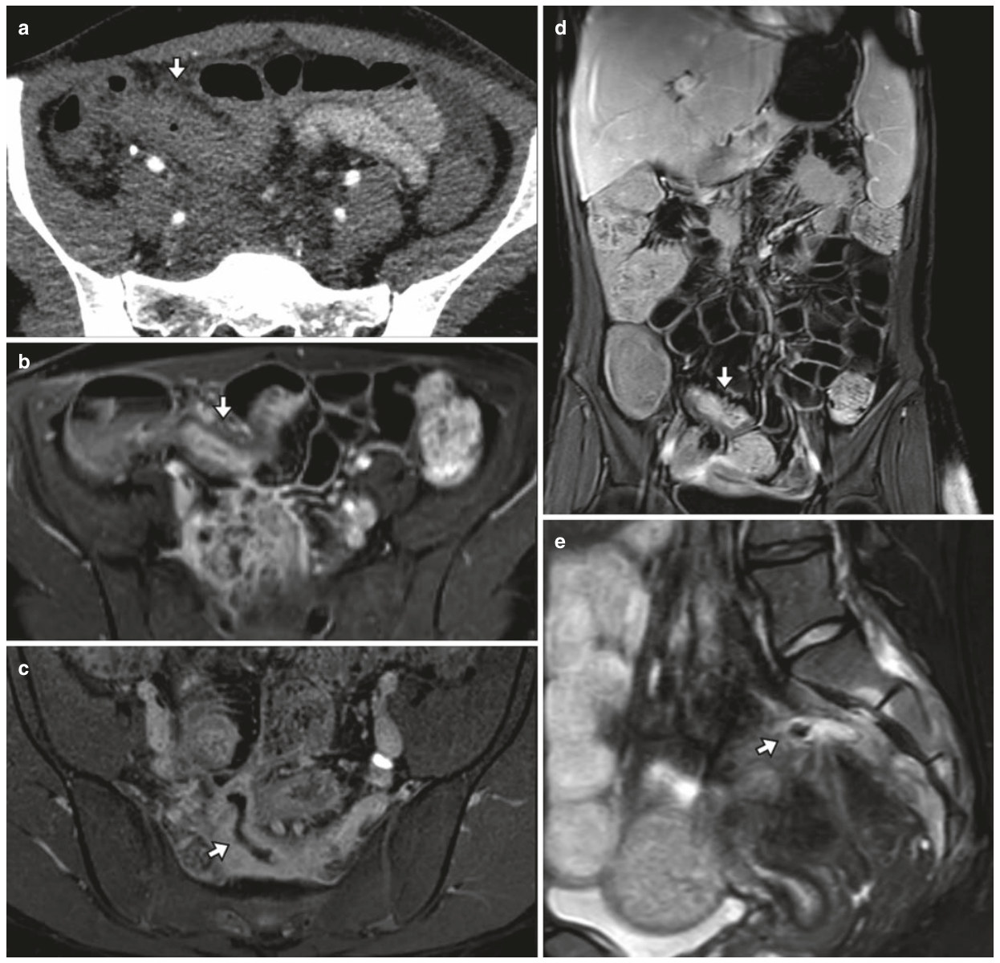
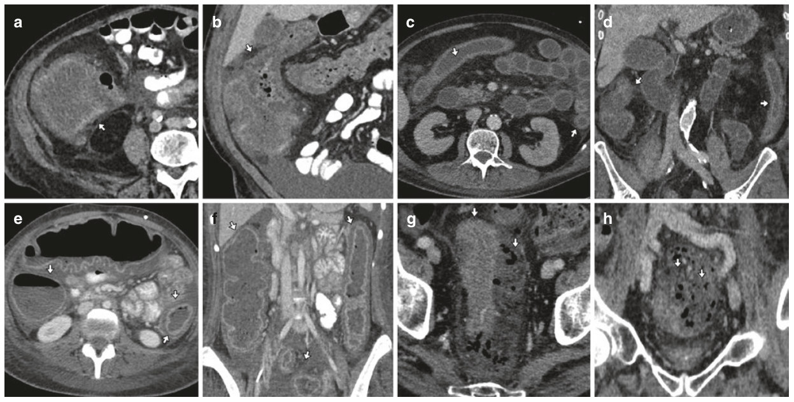
一例 59 岁男性患者有异基因干细胞移植史，临床表现为脓毒症及消化道出血。影像显示整个非扩张的小肠和大肠弥漫性肠壁增厚伴黏膜下水肿（箭头）。结合病史、活检及其他临床表现，最终诊断为肠道移植物抗宿主病。(e, f) 一例 22 岁女性患者，因脓毒症长期在重症监护病房治疗，临床表现为腹
4.1.3 良性黏膜结肠息肉 4.1.2 憩室病与憩室炎
由于大多数结直肠癌被认为起源于良性腺瘤性息肉，并沿"腺瘤-癌序列"在多年内缓慢发展，因此这些息肉成为结直肠筛查的主要靶病变。随着虚拟结肠镜（CT 与 MRI 结肠成像）的引入，横断面成像成为有前景的技术，在有症状患者及筛查人群的合适治疗方案选择中发挥着日益重要的作用（参见 IDKD 2018 摘要汇编）。
憩室病是西方世界最常见的胃肠疾病之一。在出现急腹症且怀疑憩室病时，通常先行超声检查，再行 CT 检查，以进一步指导临床决策和风险分层。根据憩室病分类（CDD），可将其区分为单纯性（1 型）、复杂性（2 型）和慢性（3 型）憩室病（图 4.3）[9]。在此情境下，CT 能够检出相关的微小脓肿、大脓肿及游离穿孔，因为这些发现决定了进一步的治疗策略。
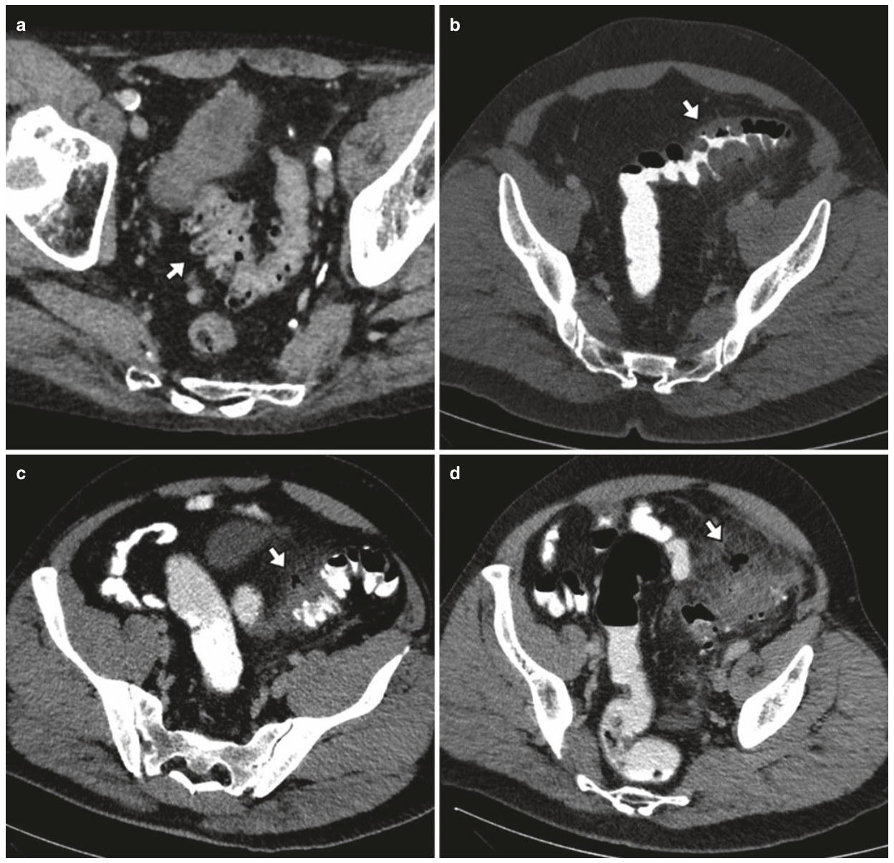
增强图像显示肠壁增厚及脂肪混浊（箭头）。影像表现符合 1b 型急性复杂性憩室炎伴蜂窝织炎性憩室周围炎。（c）一例 60 岁患者，出现严重腹痛，疼痛位于左下腹，伴发热、恶心及炎症指标升高
发达国家常见的恶性肿瘤之一，因此被视为社会经济发展的标志[11]。结肠癌的诊断可由症状驱动，也可由筛查发现。光学结肠镜是诊断的金标准，对（恶变前）病变的检出率>95%[12]。CT 结肠成像可作为良好的替代方案，尤其适用于存在结构性问题或合并症的患者，也是对不完整检查的良好补充，对>10 mm 病变的敏感度相当[13]。结直肠癌的临床分期是生存最重要的预测因素，依据 AJCC/UICC 提出的 TNM 系统，该系统基于切除标本的病理学分析[14]。影像学扮演着关键角色，不仅用于符合手术条件患者的手术规划，还用于远处分期、术前及术后并发症的检出以及肿瘤随访。
4.2 结肠与直肠恶性肿瘤
4.2.1 直肠癌
结直肠癌是男性第三位、女性第二位最常见的恶性肿瘤[10]。如今，直肠 MRI 在直肠癌评估中发挥主导作用，特别是在初始局部分期及化疗疗效评估方面。
4.2.2.1 择期结肠癌分期
CT 是结肠癌分期的主要手段，但准确的 T 分期与 N 分期始终是难点，且 MRI 并未显示出更佳结果[15,16]。鉴于手术仍是各 TN 分期的主要根治手段，除准确判定 T 分期和 N 分期外，放射科医生更应向多学科团队提供所有相关信息，以指导成功的根治性手术，或作为监测全身治疗详尽的基线资料。在无静脉对比剂禁忌的情况下，采用根据体重和浓度调整的方案于门静脉期采集即可满足要求；绝大多数专家认为口服对比剂并无必要[17]。大多数结肠癌表现为息肉样（图 4.5）或非对称性/向心性肠壁增厚，后者伴肠腔变窄及肠壁正常分层结构的消失（图 4.6）。强化程度各异，大多数非黏液性肿瘤相对于邻近肠壁呈高或等强化（78%）（图 4.5 和图 4.6），而大多数黏液性肿瘤则呈等或低强化（84%）（图 4.7）[18]。强化方式通常不均匀，黏液性肿瘤尤为明显（图 4.7）。肿瘤内钙化少见，但在黏液性肿瘤中相对多见[18]。迄今为止，尚未确立可靠的影像学淋巴结受累标准，尽管已有多种标准被研究[16,19]。R0 根治性切除的成功依赖于影像学对肿瘤边界的精细勾勒，包括任何受累的周围器官或结构（图 4.8）。还应注意观察其他结肠段，尤其是肿瘤近端
4.2.1.1 择期直肠癌分期
在初始分期（术前评估）中，MRI 对于评估肿瘤位置与形态、T 与 N 分期、系膜直肠筋膜（MRF）受累情况、壁外血管侵犯（EMVI）、黏液成分，以及盆腔侧壁和肛门括约肌复合体的受累情况具有重要价值（图 4.4）。因此，盆腔 MRI 主要用于：（1）筛选适合接受新辅助化疗的局部进展期直肠癌患者；（2）指导手术方案的制定；（3）识别不良预后因素，包括 EMVI、黏液成分和 CRM 状态 [10]。直肠癌的预后与系膜直肠内肿瘤浸润及环周切缘（CRM）直接相关。
4.2.2 结肠癌
结肠癌是全球第四大常见恶性肿瘤，也是第五大致死性肿瘤，占全部癌症死亡的 5.8% [11]。其发病率在
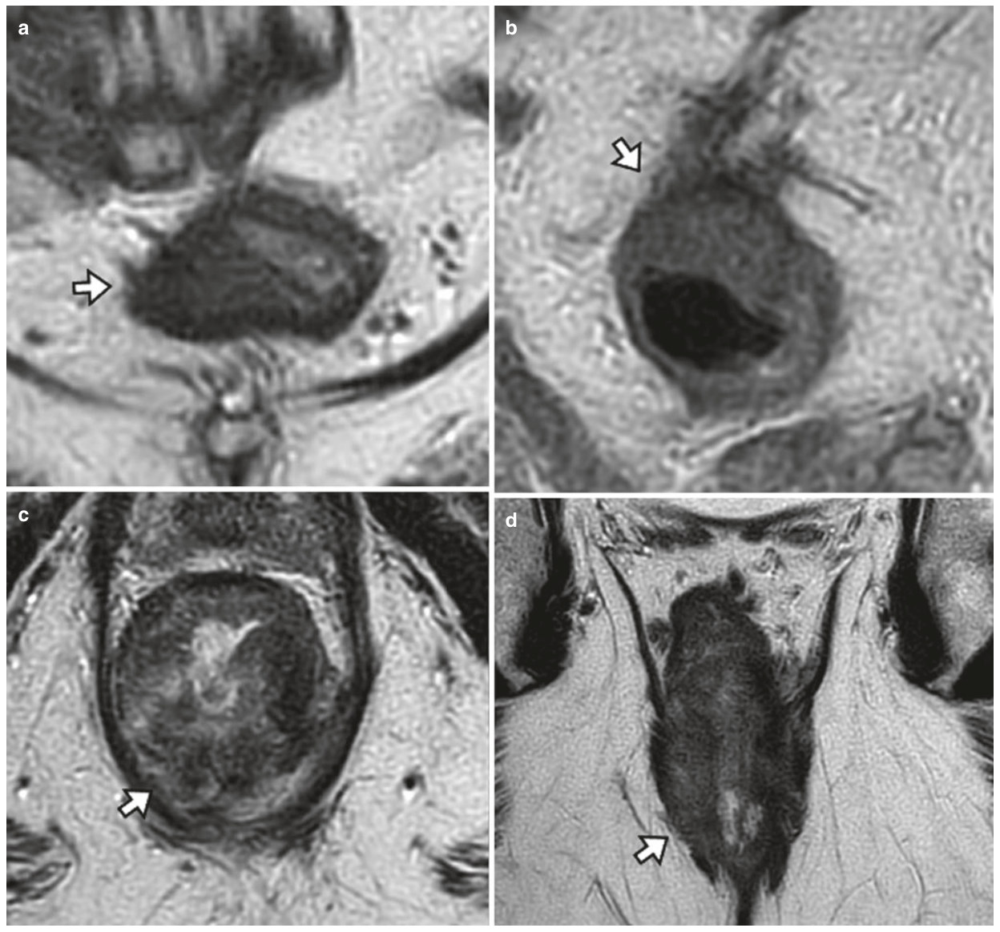
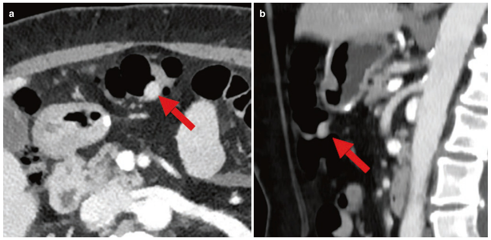
在结肠镜检查未完成的情况下，以免遗漏其他病变。选择最佳手术方案时需要关注的其他细节包括：肿瘤的具体位置、病灶大小以及肠系膜血管解剖的特点，这些可通过多平面重组和最大密度投影（尤其在冠状面上）较好地显示 [20]。
表现为肿瘤水平的肠管管径过渡点及上游肠管扩张。盲肠肠腔超过 12–15 cm（更可能发生于回盲瓣功能正常的患者）应警惕即将发生的肠破裂，肠壁任何区域出现强化减弱也提示同样风险 [23]。穿孔虽可发生于梗阻性肿瘤的近端，但更常见于肿瘤本身，这是由于肿瘤坏死及组织脆性增加所致 [24]。穿孔是结肠癌最致命的并发症，因继发性粪便性腹膜炎其死亡率可高达 50% [21]。CT 上可见肠壁局限性缺损，伴邻近脂肪浑浊、肠腔外积气及不等量的积液。穿孔可为游离性或局限性，后者可最终形成脓肿和/或瘘管 [21]。口服对比剂或经直肠灌注对比剂有助于证实穿孔，但若未见对比剂外溢亦不能排除穿孔，故其临床应用价值有限。
4.2.2.2 以急腹症为表现的结肠癌
高达 40% 的结肠癌病例可表现为外科急症，在老年患者中更为常见 [21]。梗阻和穿孔是最常见的表现，均被视为高危征象，且与较差的肿瘤无复发生存率、较高的手术并发症发生率与死亡率以及造口形成相关 [21]。其他并发症包括急性阑尾炎、缺血性结肠炎和肠套叠 [22]。CT 可对梗阻性病灶进行定位，具有高敏感度（96%）和特异度（93%）[22]。左侧恶性肿瘤更易导致肠梗阻。梗阻性病灶
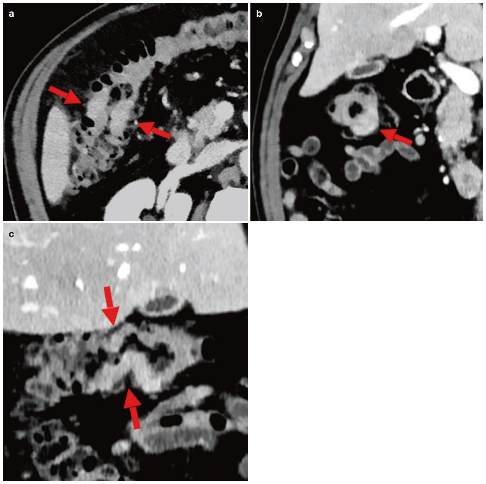
4.2.3 新辅助治疗疗效评估
（直肠癌）
鉴于新辅助放化疗在局部复发率方面已确立的优势，局部进展期直肠癌的标准治疗方案为全直肠系膜切除术（TME）术前联合新辅助放化疗。它
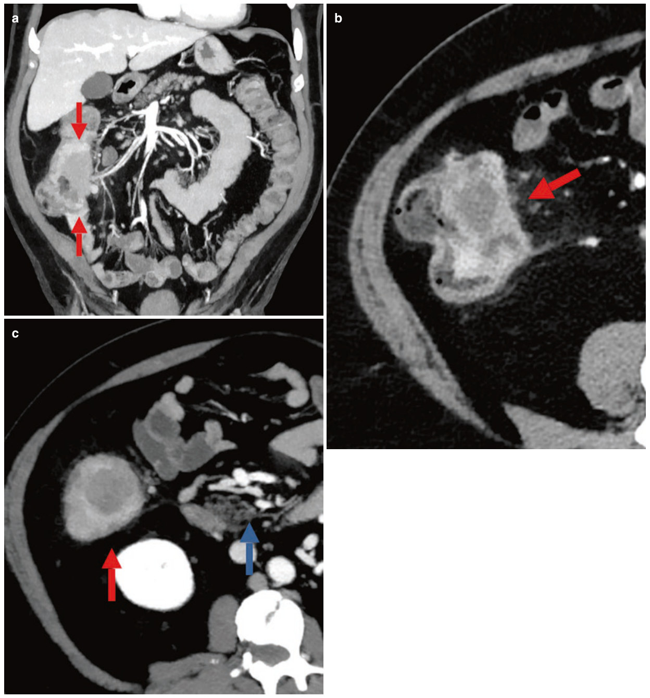
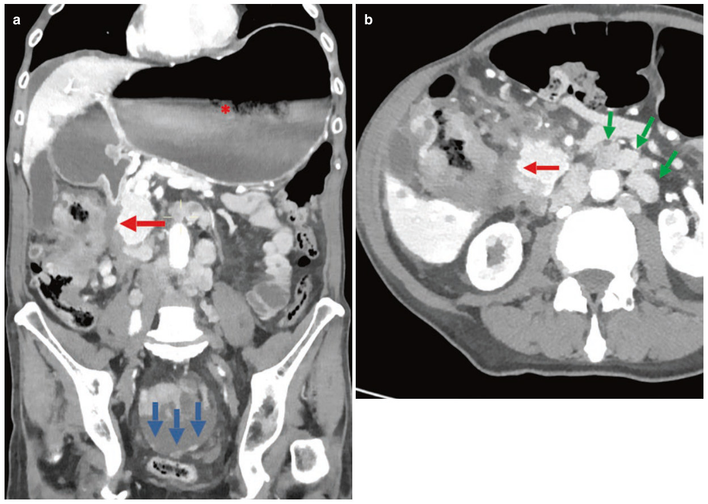
可诱导多数患者病灶缩小和降期，在大多数系列研究中其中 10%–25% 的患者可获得完全缓解 [11]。新辅助治疗（NAT）后对直肠癌进行再分期主要有两方面的目的：一是发现肿瘤与邻近结构关系的改变，从而可能施行创伤更小但仍可达到根治的手术；二是在专科中心为临床完全缓解者提供非手术管理的选择 [11]。
4.2.3.1 技术
手术前对 NAT 疗效的评估依赖于临床评价、MR 成像，以及在开展"观察等待"策略的专科中心结合直肠镜检查。NAT 后 MR 成像评估与初次分期相同，需获取相对肿瘤床的矢状位、平行位和垂直位高分辨率 T2 加权图像。为了识别临床完全缓解，使用
弥散加权成像（DWI）可能具有额外价值；鉴于其对运动及空气诱导的磁敏感效应极为敏感，患者准备至关重要 [25]。我们建议检查前禁食 6 小时，检查前 20 分钟行小剂量清洁灌肠，并在无禁忌证的情况下使用解痉药 [25]。
4.2.3.2 重新分期以规划手术
在新辅助治疗后，肿瘤可能以有利的方式远离解剖标志或结构。例如，其下缘可向头侧移位，从而使全直肠系膜切除术（TME）联合结肠肛管吻合术成为可能。此外，无论何时在重新分期时于肿瘤床与直肠系膜筋膜之间出现脂肪垫，或无论何时直肠系膜筋膜仅被极细的低信号纤维性条索所累及，TME 后病理学切缘未受累的特异度可达 100%（图 4.9a、b）[25]。另一方面，无论何时致密的低信号“纤维化”达
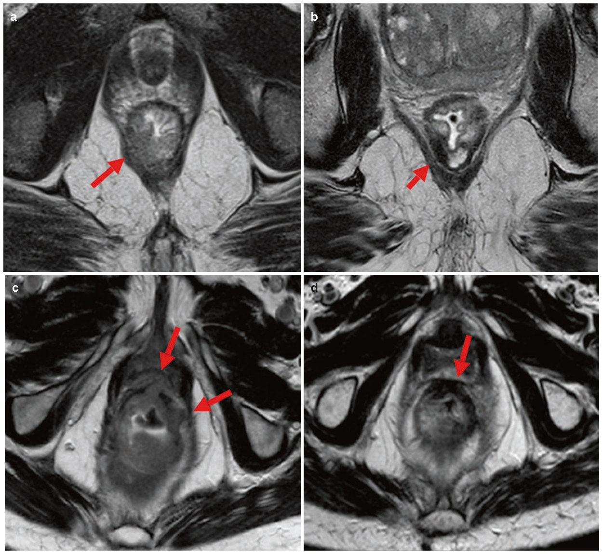
另一例侵犯阴道后壁的极低位直肠肿瘤病例
应计划超出 TME 层面的扩大切除，以获得阴性切缘（图 4.9c, d）[25]。同时评估闭孔和髂内区域的盆腔淋巴结也非常重要。来自 Lateral Node Study Consortium 的数据显示，NAT 后短径 >4 mm 的髂内淋巴结与
52% 的侧方局部复发可能性相关，而 NAT 后短径 >6 mm 的闭孔淋巴结与更高的 5 年远处转移率相关，这重新引发了关于在选择性患者中于 TME 手术同期切除侧方淋巴结必要性的讨论，而这在西方国家并非标准做法（图 4.10）[26]。
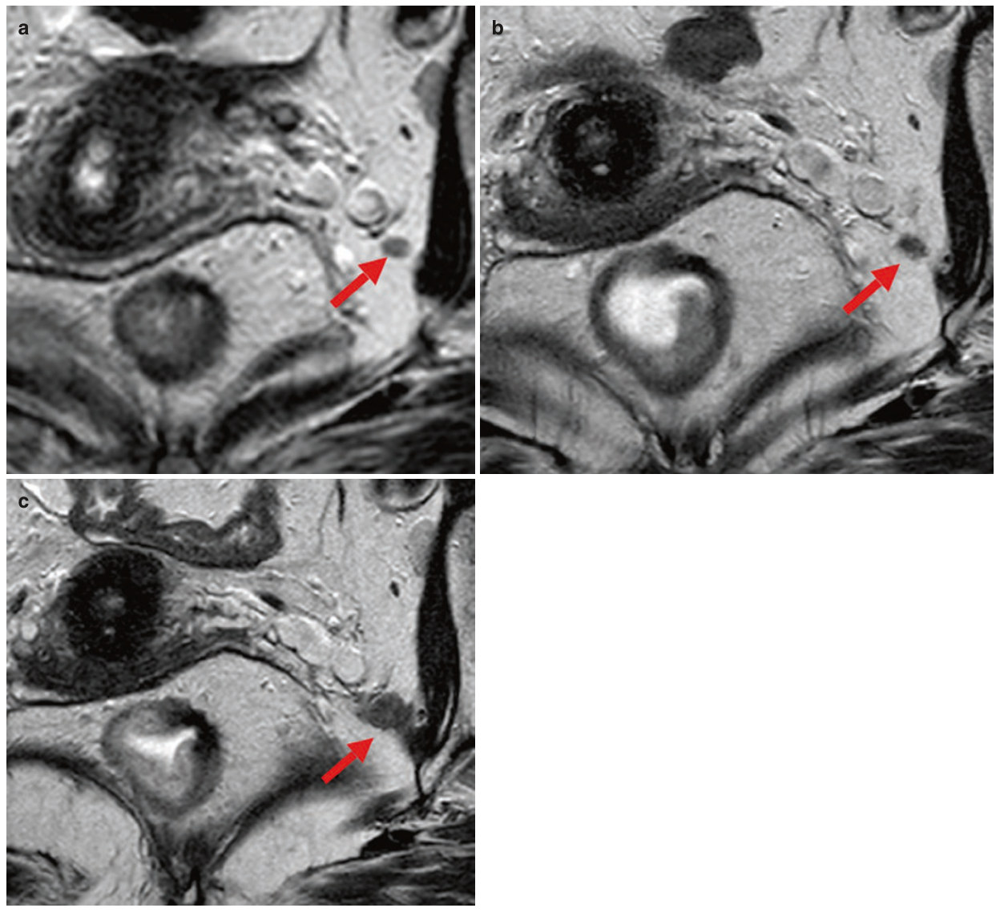
4.2.3.3 重新分期 MR 的预后价值 4.2.3.4 重新分期以筛选非手术管理的患者
可采用不同的评估方法评价原发肿瘤的反应，但最重要的是基于 T2 加权成像的磁共振肿瘤退缩分级（mrTRG）（图 4.11），mrTRG 4 和 5 与患者较差的生存率相关 [26]。对于低位直肠癌而言，mrTRG 1–2 加上在新辅助治疗后（NAT）MR 成像上肿瘤从“不安全”平面退缩至“安全”平面，对病理学上切缘未受累具有很高的特异度（图 4.12）[27] 。
在部分局部进展期直肠癌患者中，NAT 后无存活肿瘤的征象。在现有观察性研究中，对病理学完全缓解或持续临床完全缓解特异度最高的临床标准包括：直肠镜下扁平白色瘢痕（伴或不伴毛细血管扩张）；以及直肠指检时肿瘤床光滑、表现“正常化” [28]。在 MR 成像方面，特异度最高的标准取决于对 T2 加权图像的分析。具体如下：
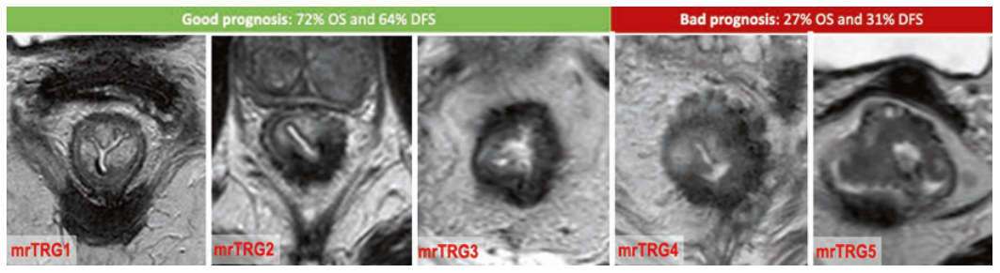
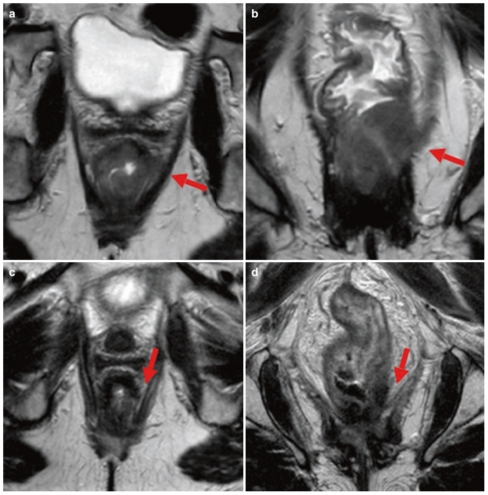
– mrTRG1：对应于直肠壁腔内侧的 1–2 mm 线样/新月形低信号瘢痕或其恢复正常表现（根据我们的经验很少见到）[29]。 – 阳性分层瘢痕征：对应于肿瘤床处直肠壁的特异性分层重塑 [30]。
在高 b 值 DWI 图像上缺乏或残留高信号支持完全缓解，但该征象并非特异。
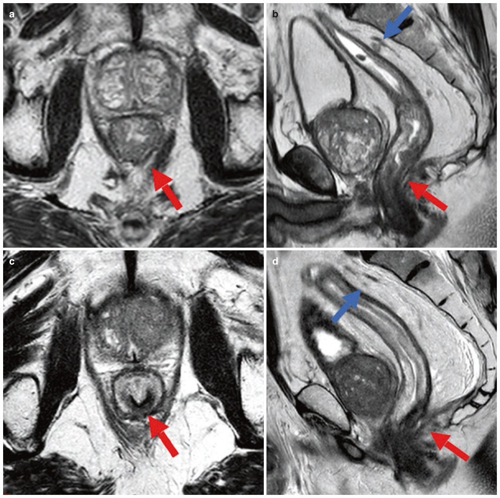
达到完全缓解严格标准的患者示例见图 4.13。
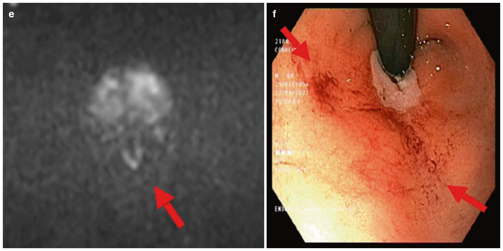
4.3 小结
结直肠良、恶性疾病涵盖广泛的肿瘤性和炎性病变。横断面影像学技术（包括 CT 和 MRI）在结直肠良、恶性疾病的影像学检查中起着关键作用，可用于初步诊断、风险分层、操作规划、疗效评价以及相关腔外和肠外病变及并发症的评估。尽管不同肠道疾病的影像学表现存在显著重叠，但理解主要的疾病模式及特异性影像特征有助于作出准确诊断，从而指导患者的临床管理。
- 腹部 CT 和 MRI 是结直肠疾病患者初步诊断和评估并发症的标准检查，可对不同结直肠疾病的位置、范围、壁层浸润深度、强化方式及其周围和肠外相关表现作出准确、可靠的诊断。
- CT 是结肠癌影像学检查的主要手段，可在符合手术条件的患者中实现充分的根治性切除术前规划、术前和术后并发症诊断、远期分期、对选择进行系统治疗者的疗效评价以及随访。
并发症、远期分期、对选择进行系统治疗者的疗效评价以及随访。
- 直肠 MRI 在直肠癌治疗前局部分期中起关键作用，可评估 MRF 和 EMVI 等不良预后因素。
- 直肠癌新辅助治疗后的再分期有助于筛选适合创伤较小手术的患者，或在肿瘤床表现为 mrTRG 1/分层瘢痕征阳性且无扩散受限的情况下选择非手术管理。
1. Loftus EV. Clinical epidemiology of inflammatory bowel disease: incidence, prevalence, and environmental influences. Gastroenterology. 2004;126(6):1504–17.
2. Panizza PSB, Viana PCC, Horvat N, et al. Inflammatory bowel disease: current role of imaging in diagnosis and detection of complications: gastrointestinal imaging. Radiographics. 2017;37(2):701–2.
3. Maddu KK, Mittal P, Shuaib W, Tewari A, Ibraheem O, Khosa F (2014) Colorectal emergencies and related complications: a comprehensive imaging review—imaging of colitis and complications. AJR Am J Roentgenol 203(6):1205–1216.
4. Kawamoto S, Horton KM, Fishman EK. Pseudomembranous colitis: spectrum of imaging findings with clinical and pathologic correlation. Radiographics. 1999;19(4):887–97.
5. McGettigan MJ, Menias CO, Gao ZJ, Mellnick VM, Hara AK. Imaging of drug-induced complications in the gastrointestinal system. Radiographics. 2016;36(1):71–87. e f Fig. 4.13 (continued)
6. Vogel MN, Goeppert B, Maksimovic O, et al. CT features of neutropenic enterocolitis in adult patients with hematological diseases undergoing chemotherapy. Rofo. 2010;182(12):1076–81.
7. Capps GW, Fulcher AS, Szucs RA, Turner MA. Imaging features of radiation-induced changes in the abdomen. Radiographics. 1997;17(6):1455–73.
8. Brodoefel H, Bethge W, Vogel M, et al. Early and late-onset acute GvHD following hematopoietic cell transplantation: CT features of gastrointestinal involvement with clinical and pathological correlation. Eur J Radiol. 2010;73(3):594–600.
9. Lembcke B. Diagnosis, differential diagnoses, and classification of diverticular disease. Viszeralmedizin. 2015;31(2):95–102.
10. Horvat N, Carlos Tavares Rocha C, Clemente Oliveira B, Petkovska I, Gollub MJ. MRI of rectal cancer: tumor staging, imaging techniques, and management. Radiographics. 2019;39(2):367–87.
11. Morgan E, Arnold M, Gini A, et al. Global burden of colorectal cancer in 2020 and 2040: incidence and mortality estimates from GLOBOCAN. Gut. 2022; https://doi.org/10.1136/gutjnl-2022-327736.
12. Simon K. Colorectal cancer development and advances in screening. Clin Interv Aging. 2016;11:967–76.
13. Haan MC de, Pickhardt PJ, Stoker J (2015) CT colonography: accuracy, acceptance, safety and position in organised population screening. Gut 64(2):342–350.
14. Tong G-J, Zhang G-Y, Liu J, et al. Comparison of the eighth version of the American Joint Committee on Cancer manual to the seventh version for colorectal cancer: A retrospective review of our data. World J Clin Oncol. 2018;9(7):148–61.
15. Hunter C, Siddiqui M, Georgiou Delisle T, et al. CT and 3-T MRI accurately identify T3c disease in colon cancer, which strongly predicts disease-free survival. Clin Radiol. 2017;72(4):307–15.
16. Santiago IA, Rodrigues ER, Germano AS, et al. High-risk features in potentially resectable colon cancer: a prospective MDCT-pathology agreement study. Abdom Radiol (NY). 2016;41(10):1877–90.
17. Unterrainer M, Deroose CM, Herrmann K, et al. Imaging standardisation in metastatic colorectal cancer: a joint EORTC-ESOI-ESGAR expert consensus recommendation. Eur J Cancer. 2022;176:193–206.
18. Ko EY, Ha HK, Kim AY, et al. CT differentiation of mucinous and nonmucinous colorectal carcinoma. AJR Am J Roentgenol. 2007;188(3):785–91.
19. Hong EK, Landolfi F, Castagnoli F, et al. CT for lymph node staging of colon cancer: not only size but also location and number of lymph node count. Abdom Radiol (NY). 2021;46(9):4096–105.
20. Fernandez LM, Ibrahim RNM, Mizrahi I, DaSilva G, Wexner SD. How accurate is preoperative colonoscopic localization of colonic neoplasia? Surg Endosc. 2019;33(4):1174–9.
21. Yang KM, Jeong M-J, Yoon KH, Jung YT, Kwak JY. Oncologic outcome of colon cancer with perforation and obstruction. BMC Gastroenterol. 2022;22(1):247.
22. Kim SW, Shin HC, Kim IY, Kim YT, Kim C-J. CT findings of colonic complications associated with colon cancer. Korean J Radiol. 2010;11(2):211–21.
23. Herring W. Learning radiology: recognizing the basics/ William Herring, MD, FACR, Vice Chairman and Residency Program Director, Albert Einstein Medical Center, Philadelphia, Pennsylvania. 3rd ed. Philadelphia, PA: Elsevier; 2016.
24. Taydas O, Unal E, Onur MR, Akpinar E. Role of computed tomography in intestinal obstruction. Istanbul Med J. 2018;19(2):105–12.
25. Santiago I, Rodrigues B, Barata M, et al. Re-staging and follow-up of rectal cancer patients with MR imaging when “Watch-and-Wait” is an option: a practical guide. Insights Imaging. 2021;12(1):114.
26. Schaap DP, Boogerd LSF, Konishi T, et al. Rectal cancer lateral lymph nodes: multicentre study of the impact of obturator and internal iliac nodes on oncological outcomes. Br J Surg. 2021;108(2):205–13.
27. Battersby NJ, How P, Moran B, et al. Prospective validation of a low rectal cancer magnetic resonance imaging staging system and development of a local recurrence risk stratification model: the MERCURY II study. Ann Surg. 2016;263(4):751–60.
28. van der Sande ME, Maas M, Melenhorst J, Breukink SO, van Leerdam ME, Beets GL. Predictive value of endoscopic features for a complete response after chemoradiotherapy for rectal cancer. Ann Surg. 2021;274(6):e541–7.
29. Jang JK, Choi SH, Park SH, et al. MR tumor regression grade for pathological complete response in rectal cancer post neoadjuvant chemoradiotherapy: a systematic review and meta-analysis for accuracy. Eur Radiol. 2020;30(4):2312–23.
30. Santiago I, Barata M, Figueiredo N, et al. The split scar sign as an indicator of sustained complete response after neoadjuvant therapy in rectal cancer. Eur Radiol. 2020;30(1):224–38.
不确定的后腹膜肿块
不确定的后腹膜肿块
Christina Messiou 和 Wolfgang G. Kunz
5.1 引言 5.2 腹膜后间隙
腹膜后腔可发生多种病变，肿块可在出现明显症状与体征前生长至较大体积，临床表现包括腹胀、早饱感、疝、阴囊肿胀、神经激惹或下肢水肿。随着横断面成像应用的日益增多，腹膜后（RP）肿块亦可偶然发现。尽管软组织肉瘤（STS）罕见，但在 RP 中其可占所有肿瘤的三分之一，因此必须纳入鉴别诊断 [1]。在 291 例难以定性的 RP 肿块性病变患者中，79.4% 为间叶源性（其中 55.8% 为脂肪源性（脂肪瘤、脂肪肉瘤、血管平滑肌脂肪瘤、髓脂肪瘤），36.8% 为非脂肪源性（神经鞘瘤、平滑肌肉瘤、硬纤维瘤、其他肉瘤））；53.3% 为非间叶源性（转移癌、淋巴瘤、生殖细胞瘤及其他）[2]。在高容量中心接受治疗的 STS 患者生存率与功能预后显著更好，因此一旦怀疑 STS 应尽早转诊 [3]。增强 CT 是首选检查方法，但 MRI 可用于明确肌肉、骨骼或神经孔的受累情况。18F-FDG PET/CT 并非常规适应证，然而对于无法行经皮穿刺活检的病变，PET/CT 可用于鉴别中/高级别病变与低级别/良性病变，但关键在于其无法鉴别低级别与良性病变 [4]。本章旨在描述最常见的难以定性的腹膜后（RP）肿块性病变，并突出提示 RP 肉瘤怀疑的特征性影像学征象。
C. Messiou 皇家马斯登医院放射科，英国伦敦 电子邮箱：Christina.Messiou@rmh.nhs.uk
W. G. Kunz（*） 慕尼黑大学医院放射科，德国巴伐利亚州慕尼黑 电子邮箱：wolfgang.kunz@med.lmu.de
RP 间隙按解剖划分为四个独立腔室 [5]。后肾旁间隙由后壁腹膜包绕；前肾旁间隙延伸至腹横筋膜 [5]；肾周间隙由肾周筋膜包绕。前肾旁间隙内含主要源自背侧系膜的内脏器官，即胰腺、升结肠与降结肠。肾周间隙前界为 Gerota 筋膜，后界为 Zuckerkandl 筋膜 [5]，内含肾脏与肾上腺。肾周间隙内存在桥隔与淋巴管网，可促使病变向邻近间隙蔓延或由邻近间隙播散至此。肾周间隙向尾侧受限于 Gerota 筋膜与 Zuckerkandl 筋膜的融合，故不延伸至盆腔 [5]。后肾旁间隙后界为腹横筋膜。该间隙可与侧腹壁结构存在解剖交通。第四间隙包绕大血管，即腹主动脉与下腔静脉，其外侧界与肾周间隙及输尿管相邻，向上延伸入后纵隔 [5]。某些疾病，如 RP 纤维化，主要局限于此间隙。根据不同定义，部分文献将腰大肌与腰方肌等肌肉结构归为第五间隙。
5.4 脂肪源性肿瘤
包括腹主动脉与下腔静脉。第四间隙的外侧界为肾周间隙及输尿管，并向上延伸入后纵隔 [5]。某些疾病（如 RP 纤维化）主要局限于此间隙。根据不同的定义，部分文献将腰大肌与腰方肌等肌肉结构归为第五间隙。
由于间叶源性腹膜后（RP）肿块中相当一部分为脂肪源性（55.8%），因此早期明确是否存在与未定性的 RP 肿块相关的异常大体脂肪十分重要[2,11]。这应包括仔细判断含脂肪肿块是否起源于肾脏或肾上腺，以更明确地诊断为良性肾血管平滑肌脂肪瘤（AML）或肾上腺髓样脂肪瘤（ML）。肾皮质缺损和粗大血管的存在支持 AML 的诊断[12]，而肾上腺 ML 通常较 RP 脂肪肉瘤边界更清晰。如果脂肪源性肿块并非来源于实质性脏器，则应考虑 RP 脂肪肉瘤的诊断，并转诊至软组织肉瘤专科中心。若在腹部实质性脏器之外发现膨胀性大体脂肪，则高度提示高分化脂肪肉瘤；如存在强化的实性成分，则提示有去分化（图 5.1）。在 55 岁以上成人中，脂肪肉瘤是最常见的 RP 肉瘤，约占 RP 肉瘤的 70%[13]。高分化脂肪肉瘤不发生转移，但可发生去分化并进展为具有转移潜能的高级别非脂肪源性成分。高分化及去分化脂肪肉瘤特征性地携带与 12q13–15 区多个基因扩增相关的超数环状和/或巨染色体，包括 MDM2、CDK4 和 HMGA2，具有诊断价值[14]。病灶内可有钙化，可提示去分化，或可反映硬化型或炎症型高分化脂肪肉瘤（WDL）[15]。脂肪的存在并非总能即刻显现，需仔细评估。未能识别异常脂肪的存在是最常导致误诊和处置不当的原因。若未识别高分化成分，可能导致切除不充分，使患者丧失潜在的根治性手术机会。此外，多个去分化灶可能被误判为多发病变，从而成为手术禁忌或导致分块切除；但这通常代表单一连续性脂肪肉瘤内的不同去分化灶，在实性肿块之间存在高分化成分，应按单发病变进行处理[10]。RP 肿块中无大体脂肪也不能排除 RP 脂肪肉瘤的诊断，这可能代表已完全去分化的病变或硬化型亚型。腹膜后腔的解剖限制使难以达到足够的切除切缘，因此 RP 肉瘤（RPS）的局部复发较四肢肉瘤更为常见，也是其主要死亡原因[16]。肿瘤分级和大体完整切除是预测肿瘤学预后中两个最重要且最一致的独立因素，其他因素包括患者年龄、肿瘤亚型、镜下切除切缘、肿瘤大小、原发还是复发性病变、多灶性、多-
5.3 组织学诊断
除 RP 脂肪肉瘤和肾血管平滑肌脂肪瘤外，仅凭影像学准确评估未定性的 RP 肿块具有挑战性[2]。因此，获取组织学诊断至关重要，影像引导下经皮同轴粗针穿刺活检是安全且推荐的方法。若影像学怀疑软组织肉瘤（STS），应优先在肉瘤专科中心进行活检，以便通过经验丰富的病理学评估尽快明确最终诊断。应获取多份针芯标本（理想情况为 16G 针穿刺 4~5 份），以利于组织学和分子亚型判定。尽管经皮粗针活检诊断准确性较高，但因取样误差，对肉瘤等病变存在低估分级的现象[6,7]。功能成像技术如 18F-FDG PET/CT 以及现代机器人辅助 CT 引导下活检技术，对于提高最具决定性肿瘤成分的取样具有巨大潜力[8]。应优先采用 RP 入路，只有在多学科肿瘤委员会讨论后认为经腹膜后无法到达病灶时，方可使用经腹膜入路。只要遵循 RP 入路，针道种植的风险极小，粗针活检亦不会对预后产生不良影响[9]。细针穿刺抽吸（FNA）细胞学检查通常难以获得足够的诊断信息，不推荐使用。不建议对 RP 肿块进行开放性或腹腔镜下手术切取/切除活检，因为这会使腹腔受到污染，并在必要时影响后续完成性手术的解剖层面[10]。对未定性的 RP 肿块进行切取或切除活检应在肉瘤专科多学科评估后方可实施。
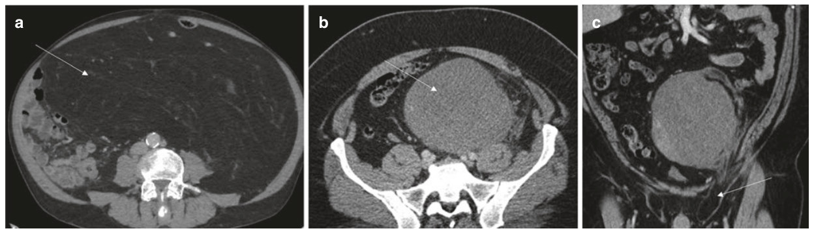
在专业肉瘤中心进行多学科治疗与集中管理 [14]。在脂肪肉瘤中，局部复发决定预后，是疾病复发的主要方式（5 年局部复发率 70%），而系统性转移罕见（5 年远处疾病复发率 10–15%）[17]。虽然腹膜后良性含脂肪性生殖外畸胎瘤、棕色脂肪瘤、髓外造血及脂肪瘤罕见，但也可类似腹膜后脂肪肉瘤。因此，必须始终进行活检。
间叶组织；其组织学上最类似于成年滑膜。滑膜肉瘤为高度恶性肿瘤，5 年生存率低于 50% [19, 20]。影像学表现通常为非特异性异质性肿块；然而，许多病灶边缘光滑、界限清楚，内含囊性成分，易被误诊为良性腱鞘囊肿或黏液瘤 [21]（图 5.3）。30% 含有钙化 [21]。约 40% 的病灶可见与出血相符的表现，约 20% 的病灶可见液-液平面 [22]。与其他 STS 一样，肺是其主要转移部位，超过 50% 的患者发生肺转移，且 25% 的患者在初诊时即已存在转移性疾病。滑膜肉瘤是少数常发生区域淋巴结转移的肉瘤之一，发生率可达 20% [20, 21]。未分化多形性肉瘤（UPS）（旧称恶性纤维组织细胞瘤）为高度恶性肉瘤，被认为是一组异质性的低分化肿瘤，可能代表多种间叶谱系的低分化终末阶段。由于该形态学模式见于多种低分化肿瘤，因此必须排除更常见肿瘤类型的多形性变体（如肉瘤样肾细胞癌）。目前认为腹膜后大多数 UPS 实为去分化脂肪肉瘤 [23, 24]。鉴于这一点，组织学诊断为腹膜后低分化肉瘤时，需密切结合临床病史，以了解是否存在高分化脂肪肉瘤的病史。检测 MDM2 和 CDK4 基因产物的免疫组织化学染色，以及评估 MDM2 基因扩增状态的细胞遗传学分析也可能具有价值。这具有预后意义，因为去分化脂肪肉瘤的侵袭性通常低于其他多形性肉瘤 [25]。发现体积较大、边界清楚的实性富血供肿瘤，特别是伴有显著供血血管时，应考虑孤立性纤维性肿瘤的可能（图 5.4）。肿瘤内出现脂肪成分可能提示脂肪瘤性血管外皮细胞瘤，即 SFT 的一种亚型 [26]。
5.5 其他软组织肉瘤
平滑肌肉瘤（LMS）是第二常见的腹膜后肉瘤，占所有 RPS 的 15%。在年轻成人中除外，LMS 可超过脂肪肉瘤而居首位。LMS 通常起源于肝静脉水平以下的下腔静脉（图 5.2），但也可起源于较小血管，如肾静脉，或较少见的性腺静脉 [18]。LMS 常具有外生性成分，这使其与外源性压迫的鉴别较为困难。与脂肪肉瘤中局部复发决定预后不同，LMS 局部复发的可能性较低，但系统性转移（通常转移至肺部）更为常见 [14]。在 LMS 之后，其余 5% 的 RPS 由更为罕见的肉瘤亚型组成。以下描述其中最常见的几种。滑膜肉瘤总体上为第五常见的肉瘤，好发于年轻成人（15–40 岁）。尽管名称如此，其起源组织并非滑膜，而是未分化的
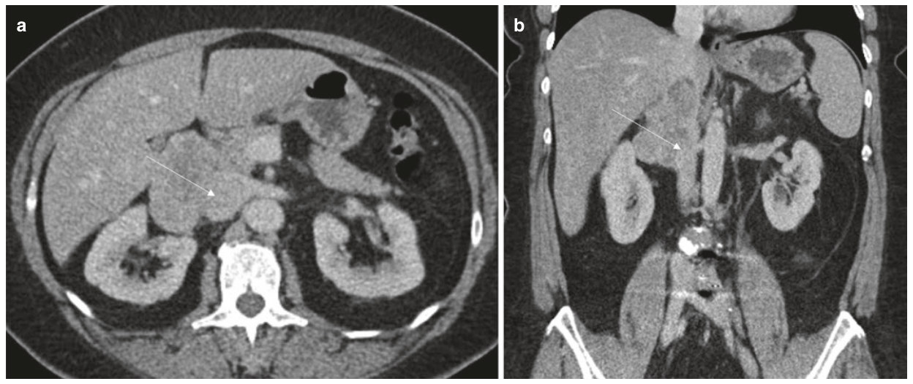
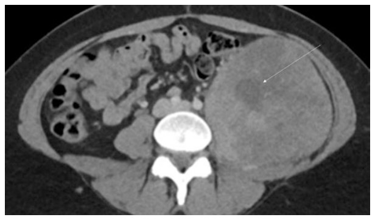
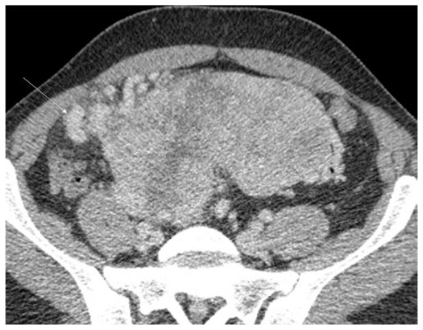
5.6 神经源性肿瘤
神经源性肿瘤占原发性腹膜后肿块的10%～20%[27]，发病年龄较年轻，且多为良性。它们起源于神经鞘、神经节细胞或副神经节细胞，常见于交感神经链、肾上腺髓质或Zuckerkandl器[28]。神经鞘瘤是来源于神经束膜的良性肿块，占腹膜后肿瘤的6%[27]。通常无症状，发病高峰为第二至第五个十年。该肿瘤沿神经走行生长，呈包膜完整。肿瘤内可出现退行性变（如陈旧性神经鞘瘤），以及出血、囊性变或钙化。神经鞘瘤多见于椎旁区域。增强后呈不同程度均匀或不均匀强化[27]。囊性区域在T2加权序列上呈高信号，而细胞密集区在T1和T2加权图像上呈低信号[29]。恶性神经鞘肿瘤包括恶性神经鞘瘤、神经源性肉瘤和神经纤维肉瘤。其中一半为自发性，另一半由神经纤维瘤、神经节细胞瘤或既往放射治疗演变而来[28]。持续增大、边界不规则、伴疼痛、影像表现不均匀以及侵犯周围结构时需警惕恶性可能，尤其见于1型神经纤维瘤病（NF1）患者[27]。
神经纤维瘤是一种良性神经鞘肿瘤，可单发（90%）或为NF1的一部分。约三分之一的单发病例及所有多发病例与NF1相关[27]。病理上为无包膜的实性肿瘤，由神经鞘和胶原束构成。可有不同程度的黏液样变性，囊性变少见。影像上表现为边界清楚的均匀低密度病变（约25 HU），与其富含脂质成分有关。在T2加权序列上，由于黏液样变性，周边信号较高[27]。神经纤维瘤较神经鞘瘤更易发生恶性转化，尤其见于NF1患者[27]。图5.5展示了一例腹膜后神经纤维瘤。
边界欠清、均质、低密度病变（约 25 HU），T2 加权序列上因黏液样变性，周边信号较高[27]。神经纤维瘤较神经鞘瘤更易发生恶性转化，尤其是 NF1 患者[27]。图 5.5 显示了一例腹膜后神经纤维瘤的实例。
神经节细胞瘤是一种罕见的良性肿瘤，起源于交感神经节[27]。大多数无症状，部分病例可分泌儿茶酚胺、血管活性肽或雄激素等激素。最常见的发生部位为腹膜后和纵隔。在腹膜后，肿瘤常沿椎旁交感神经节分布。影像上表现为边界清楚、偶呈分叶状的均匀低密度肿块[27]。坏死和出血少见，强化程度不等。在T2加权序列上，神经节细胞瘤信号多变，取决于其黏液、细胞和胶原成分的比例。副神经节瘤是发生于肾上腺外的肿瘤，起源于嗜铬细胞；而起源于肾上腺髓质细胞的肿瘤则称为嗜铬细胞瘤[27]。约40%的副神经节瘤分泌大量儿茶酚胺，导致头痛、心悸、多汗和尿代谢物升高等症状。副神经节瘤可与NF1、多发性内分泌肿瘤综合征及von Hippel–
Lindau 综合征[27]。最常见的腹膜后发生部位为 Zuckerkandl 器官。在影像学上，其通常表现为较大的边界清楚的分叶状肿瘤，可含有出血和坏死区；因此在 T2 加权序列上信号多样。其富血供特性常导致明显的对比剂强化[27]。由于出血，肿瘤常呈不均匀表现。使用间位碘代苄胍（MIBG）或 18F-DOPA 进行的放射性核素显像在副神经节瘤中显示高摄取[30]。副神经节瘤更具侵袭性，约 50% 的病例可发生转移。图 5.6 显示了一例腹膜后肾上腺外副神经节瘤伴强 DOPA 脱羧酶活性的实例。
5.7 其他
是转移性病变播散的好发部位。最值得注意的是，包括来自多种腹腔和盆腔恶性肿瘤的淋巴结转移。最常见的非淋巴源性原发恶性肿瘤转移至腹膜后间隙（淋巴结外）的为黑色素瘤和泌尿生殖系统恶性肿瘤。
最常见的腹膜后肿块之一是淋巴瘤。其发病率高且较少为性质未定者，但组织学诊断仍是管理的核心环节。血液系统恶性肿瘤也可表现为移植后淋巴组织增生性疾病、髓外骨髓瘤或髓外白血病（即髓外病变表现）的腹膜后受累表现[27]。该组疾病通常以淋巴结肿大等实性肿块形式出现，但在高度侵袭性血液恶性肿瘤中，也可因坏死而含有液性病灶内成分。良性肿瘤包括淋巴管瘤、良性生殖细胞肿瘤或性索间质肿瘤[27]。对于后两类，血清肿瘤标志物有助于缩小鉴别诊断范围。其他罕见的非肿瘤性肿块可能包括假瘤性脂肪瘤病、腹膜后纤维化、髓外造血、IgG4 相关疾病或 Erdheim-Chester 病[27]。后两者可具有特征性影像学表现，即围绕肾脏周围的腹膜后间隙内环绕软组织带。最后，腹膜后间隙也可成为一种
5.8 小结
腹膜后可发生多种多样的病变，放射科医师在提供鉴别诊断和指导临床决策中发挥关键作用。尽管软组织肉瘤（STS）较为罕见，但在腹膜后，部分系列报道中其可占病例总数的三分之一。最常见的腹膜后肉瘤（RPS）为脂肪肉瘤和平滑肌肉瘤（LMS），具有特征性影像学表现；然而，腹膜后还可发生许多其他类型的 STS。要求所有放射科医师均能识别这些罕见亚型既不合理也无必要。当腹膜后肿块仍诊断不明时，建议转诊至肉瘤专科治疗中心。
1. Van Roggen JF, Hogendoorn PC. Soft tissue tumours of the retroperitoneum. Sarcoma. 2000;4(1-2):17–26. https://doi.org/10.1155/ S1357714X00000049.
2. Morosi C, Stacchiotti S, Marchiano A, Bianchi A, Radaelli S, Sanfilippo R, et al. Correlation between radiological assessment and histopathological diagnosis in retroperitoneal tumors: analysis of 291 consecutive patients at a tertiary reference sarcoma center. Eur J Surg Oncol. 2014;40(12):1662–70. https://doi.org/10.1016/j. ejso.2014.10.005.
3. Gutierrez JC, Perez EA, Moffat FL, Livingstone AS, Franceschi D, Koniaris LG. Should soft tissue sarcomas be treated at high-volume centers? An analysis of 4205 patients. Ann Surg. 2007;245(6):952– 8. https://doi.org/10.1097/01.sla.0000250438.04393.a8.
4. Ioannidis JP, Lau J. 18F-FDG PET for the diagnosis and grading of soft-tissue sarcoma: a meta-analysis. J Nucl Med. 2003;44(5):717–24.
5. Tirkes T, Sandrasegaran K, Patel AA, Hollar MA, Tejada JG, Tann M, et al. Peritoneal and retroperitoneal anatomy and its relevance for cross-sectional imaging. Radiographics. 2012;32(2):437–51. https://doi.org/10.1148/rg.322115032.
6. Strauss DC, Qureshi YA, Hayes AJ, Thway K, Fisher C, Thomas JM. The role of core needle biopsy in the diagnosis of suspected soft tissue tumours. J Surg Oncol. 2010;102(5):523–9. https://doi.org/10.1002/jso.21600.
7. Schneider N, Strauss DC, Smith MJ, Miah AB, Zaidi S, Benson C, et al. The adequacy of core biopsy in the assessment of smooth muscle neoplasms of soft tissues: implications for treatment and prognosis. Am J Surg Pathol. 2017;41(7):923–31. https://doi.org/10.1097/PAS.0000000000000867.
8. Johnston EW, Basso J, Winfield J, McCall J, Khan N, Messiou C, et al. Starting CT-guided robotic interventional oncology at a UK centre. Br J Radiol. 2022;95(1134):20220217. https://doi.org/10.1259/bjr.20220217.
9. Wilkinson MJ, Martin JL, Khan AA, Hayes AJ, Thomas JM, Strauss DC. Percutaneous core needle biopsy in retroperitoneal sarcomas does not influence local recurrence or overall survival. Ann Surg Oncol. 2015;22(3):853–8. https://doi.org/10.1245/s10434-014-4059-x.
10. Bonvalot S, Raut CP, Pollock RE, Rutkowski P, Strauss DC, Hayes AJ, et al. Technical considerations in surgery for retroperitoneal sarcomas: position paper from E-Surge, a master class in sarcoma surgery, and EORTC-STBSG. Ann Surg Oncol. 2012;19(9):2981– 91. https://doi.org/10.1245/s10434-012-2342-2.
11. Messiou C, Moskovic E, Vanel D, Morosi C, Benchimol R, Strauss D, et al. Primary retroperitoneal soft tissue sarcoma: Imaging appearances, pitfalls and diagnostic algorithm. Eur J Surg Oncol. 2017;43(7):1191–8. https://doi.org/10.1016/j.ejso.2016.10.032.
12. Katabathina VS, Vikram R, Nagar AM, Tamboli P, Menias CO, Prasad SR. Mesenchymal neoplasms of the kidney in adults: imaging spectrum with radiologic-pathologic correlation. Radiographics. 2010;30(6):1525–40. https://doi.org/10.1148/rg.306105517.
13. Strauss DC, Hayes AJ, Thway K, Moskovic EC, Fisher C, Thomas JM. Surgical management of primary retroperitoneal sarcoma. Br J Surg. 2010;97(5):698–706. https://doi.org/10.1002/bjs.6994.
14. Miah AB, Hannay J, Benson C, Thway K, Messiou C, Hayes AJ, et al. Optimal management of primary retroperitoneal sarcoma: an update. Expert Rev Anticancer Ther. 2014;14(5):565–79. https://doi.org/10.1586/14737140.2014.883279.
15. Craig WD, Fanburg-Smith JC, Henry LR, Guerrero R, Barton JH. Fat-containing lesions of the retroperitoneum: radiologic-pathologic correlation. Radiographics. 2009;29(1):261–90. https://doi.org/10.1148/rg.291085203.
16. Swallow CJ, Strauss DC, Bonvalot S, Rutkowski P, Desai A, Gladdy RA, et al. Management of Primary Retroperitoneal Sarcoma (RPS) in the Adult: An Updated Consensus Approach from the Transatlantic Australasian RPS Working Group. Ann Surg Oncol. 2021; https://doi.org/10.1245/s10434-021-09654-z.
17. Singer S, Antonescu CR, Riedel E, Brennan MF. Histologic subtype and margin of resection predict pattern of recurrence and survival for retroperitoneal liposarcoma. Ann Surg. 2003;238(3):358–70; discussion 70-1. https://doi.org/10.1097/01. sla.0000086542.11899.38.
18. Ganeshalingam S, Rajeswaran G, Jones RL, Thway K, Moskovic E. Leiomyosarcomas of the inferior vena cava: diagnostic features on cross-sectional imaging. Clin Radiol. 2011;66(1):50–6. https://doi.org/10.1016/j.crad.2010.08.004.
19. Van Slyke MA, Moser RP Jr, Madewell JE. MR imaging of periarticular soft-tissue lesions. Magn Reson Imaging Clin N Am. 1995;3(4):651–67.
20. Weiss SW, Goldblum JR. Malignant tumors of uncertain type. Soft Tissue Tumors. 4th ed. Mosby; 2001.
21. Kransdorf MJ, Murphey MD, Synovial tumors. Imaging of soft tissue tumors. Lippincott Williams & Wilkins; 2005.
22. Jones BC, Sundaram M, Kransdorf MJ. Synovial sarcoma: MR imaging findings in 34 patients. AJR Am J Roentgenol. 1993;161(4):827–30. https://doi.org/10.2214/ajr.161.4.8396848.
23. Coindre JM, Mariani O, Chibon F, Mairal A, De Saint Aubain Somerhausen N, Favre-Guillevin E, et al. Most malignant fibrous histiocytomas developed in the retroperitoneum are dedifferentiated liposarcomas: a review of 25 cases initially diagnosed as malignant fibrous histiocytoma. Mod Pathol. 2003;16(3):256–62. https://doi.org/10.1097/01.MP.0000056983.78547.77.
24. Binh MB, Guillou L, Hostein I, Chateau MC, Collin F, Aurias A, et al. Dedifferentiated liposarcomas with divergent myosarcomatous differentiation developed in the internal trunk: a study of 27 cases and comparison to conventional dedifferentiated liposarcomas and leiomyosarcomas. Am J Surg Pathol. 2007;31(10):1557– 66. https://doi.org/10.1097/PAS.0b013e31804b4109.
25. McCormick D, Mentzel T, Beham A, Fletcher CD, Dedifferentiated liposarcoma. Clinicopathologic analysis of 32 cases suggesting a better prognostic subgroup among pleomorphic sarcomas. Am J Surg Pathol. 1994;18(12):1213–23. https://doi.org/10.1097/00000478-199412000-00004.
26. Wignall OJ, Moskovic EC, Thway K, Thomas JM. Solitary fibrous tumors of the soft tissues: review of the imaging and clinical features with histopathologic correlation. AJR Am J Roentgenol. 2010;195(1):W55–62. https://doi.org/10.2214/ AJR.09.3379.
27. Rajiah P, Sinha R, Cuevas C, Dubinsky TJ, Bush WH Jr, Kolokythas O. Imaging of uncommon retroperitoneal masses. Radiographics. 2011;31(4):949–76. https://doi.org/10.1148/rg.314095132.
28. Improta L, Tzanis D, Bouhadiba T, Abdelhafidh K, Bonvalot S. Overview of primary adult retroperitoneal tumours. Eur J Surg Oncol. 2020;46(9):1573–9. https://doi.org/10.1016/j. ejso.2020.04.054.
29. Czeyda-Pommersheim F, Menias C, Boustani A, Revzin M. Diagnostic approach to primary retroperitoneal pathologies: what the radiologist needs to know. Abdom Radiol (NY). 2021;46(3):1062–81. https://doi.org/10.1007/s00261-020-02752-8.
30. Kunz WG, Auernhammer CJ, Nölting S, Pfluger T, Ricke J, Cyran CC. Phäochromozytom und Paragangliom. Der Radiologe. 2019; https://doi.org/10.1007/s00117-019-0569-7.
弥漫性肝病
弥漫性肝病
David Bowden 和 Cäcilia S. Reiner
6.1 代谢及储积性疾病
6.1.1 脂肪变性
非酒精性脂肪性肝病（NAFLD）已成为全球流行性疾病，据估计目前影响多达全球成年人口的 25%。在 NAFLD 患者中，约每 5 人中就有 1 人会进展为非酒精性脂肪性肝炎（NASH），该病预计不久将取代病毒性肝炎，成为全球肝硬化的首要病因 [1]。鉴于肝活检存在局限性和风险，无创评估 NAFLD 日益重要，以实现对受累个体的诊断与监测。尽管平扫计算机断层扫描（CT）能够识别中重度脂肪变性，且 48 亨氏单位（HU）的阈值对其具有高度特异性
D. Bowden 剑桥大学医院放射科，剑桥，英国
C. S. Reiner（*）苏黎世大学医院诊断与介入放射研究所，苏黎世，瑞士 电子邮件：caecilia.reiner@usz.ch
检测，鉴于其伴随的电离辐射负担，该方法难以用于大规模监测，并可能受到铁等其他并存物质的影响 [2]（图 6.1）。然而，磁共振成像（MRI）的进展使脂肪变性评估更为全面。其中应用最广泛的技术是双梯度回波成像，通过采集脂肪与水质子信号呈「同相位」或「反相位」的图像，通常先采集后者。含有脂肪和水的体素在「反相位」图像上由于信号相互抵消而表现为相对低信号，这是脂肪与水质子进动频率差异所致，从而能够识别肝实质内的弥漫性或地理性脂肪变性（图 6.2）。然而，尽管该技术可主观评估脂肪变性，但多种混杂因素——包括 T2* 衰减，在铁过载存在时尤为重要——限制了其对脂肪含量的可靠定量，并促使人们开发可校正这些因素的更复杂序列。各主要 MR 厂商均已开发出快速屏气多回波技术的改进方案，可用于测量质子密度脂肪分数（PDFF）——定义为活动性甘油三酯质子相对于水质子的比例（IDEAL IQ/GE、mDixon-Quant/Philips、Multiecho VIBE Dixon/Siemens）。使用派生图，测量 PDFF 值仅需在肝实质内勾画感兴趣区即可，便于评估脂肪分布的差异；组织学脂肪变性分级的建议区间为：0 级（正常，0–6.4%）、1 级（轻度，6.5–17.4%）、2 级（中度，17.5–22.1%）和 3 级（重度，≥22.2%）——图 6.3。该技术测得的 PDFF 值已作为脂肪变性的生物标志物得到充分验证，包括与组织病理学及 MR 波谱结果的比较 [3]。
的精确量化并导致更复杂序列的开发，这些序列可校正上述因素。各主要 MR 厂商均已开发出快速屏气多回波技术的改进方案，可用于测量质子密度脂肪分数（PDFF）——定义为活动性甘油三酯质子相对于水质子的比例（IDEAL IQ/GE、mDixon-Quant/Philips、Multiecho VIBE Dixon/Siemens）。使用派生图，测量 PDFF 值仅需在肝实质内勾画感兴趣区即可，便于评估脂肪分布的差异；组织学脂肪变性分级的建议区间为：0 级（正常，0–6.4%）、1 级（轻度，6.5–17.4%）、2 级（中度，17.5–22.1%）和 3 级（重度，≥22.2%）——图 6.3。该技术测得的 PDFF 值已作为脂肪变性的生物标志物得到充分验证，包括与组织病理学及 MR 波谱结果的比较 [3]。
6.1.2 铁过载
由于自由基的生成，体内组织中过量的铁积聚具有毒性，可导致器官损害——尤其是肝脏、心脏和胰腺。其最常见的原因包括肠道吸收过多（如遗传性血色病、补铁治疗）或长期输血（如血红蛋白病或其他红细胞疾病患者）。对于后者，作为一种形式的含铁血黄素沉积症，铁主要沉积于肝脏及其他器官的单核-吞噬细胞系统内，虽然需要对其进行监测以评估治疗效果，但其对肝脏的损害低于对心脏等其他器官的损害。由于代谢异常，慢性肝病本身——无论是 NAFLD、酒精相关性肝病或其他原因所致——也可能导致铁积聚，进而加速疾病进展 [4]。因此，对有铁过载风险的患者而言，肝脏铁含量评估在诊断与监测中均十分重要。虽然肝活检历来被认为是评估的金标准，但 MRI 等无创方法因其抽样误差较少而更具优势。此外，铁在肝实质内可能分布不均，病理学的精确定量方法会破坏标本，使组织学分析无法进行。组织内铁颗粒的存在会导致微小的局部磁场不均匀
本身也可导致铁积聚，进而加速疾病进展 [4]。因此，对有铁过载风险的患者而言，肝脏铁含量评估在诊断与监测中均十分重要。虽然肝活检历来被认为是评估的金标准，但 MRI 等无创方法因其抽样误差较少而更具优势。此外，铁在肝实质内可能分布不均，病理学的精确定量方法会破坏标本，使组织学分析无法进行。组织内铁颗粒的存在会导致微小的局部磁场不均
在磁场内导致质子快速去相位、T1、T2 及 T2* 弛豫时间缩短，从而使 R2*（T2* 弛豫速率）增加。在如前所述采集双梯度回波图像时，信号丢失在第二次同相位（in-phase）采集中可见，因此可对铁过载进行定性评估（图 6.4）。然而，同时存在的脂肪变性会导致第一次反相位（out-of-phase）图像出现信号丢失，从而干扰其表现，需要采用更复杂的技术进行正式定量。虽然全面综述超出了本章范围，但如前所述用于脂肪定量的技术同样可计算铁含量。多点 Dixon 技术（如 IDEAL-IQ（GE））不仅可在单次屏气内提供 PDFF 图，
还可同步生成 R2* 图，可在肝实质上放置 ROI 以计算平均 R2* 值（图 6.4）。这些数值随后通过简单的校准公式转换为肝铁浓度（LIC）值。虽然尚不确定几种校准公式中哪一种最为合适，但现有证据表明不同公式所得结果差异较小，实际应用中任意一种均可使用 [5]。此外，自旋回波技术（如 R2 弛豫测量，例如 Ferriscan®，Resonance Health）也可应用，并与 LIC 值显示出极佳相关性，但其缺点包括额外费用、采集时间长（可达 20 min）从而限制了其在难以配合患者中的应用、异地集中化分析，以及缺乏放射科医师对图像进行审阅以发现诸如 HCC 等重要病变的能力。
脾脏内由于网状内皮系统中铁沉积所致的类似改变
6.1.3 Wilson 病
Wilson 病，又称进行性肝豆状核变性，是一种罕见的常染色体隐性代谢障碍，铜在多个器官中蓄积，尤其沉积于肝脏，也累及脑、肾和角膜。因此可发生一系列病理生理改变，包括脂肪变性、慢性活动性肝炎，最终发展为肝硬化。其影像学表现缺乏一定特异性，与其他病因所致的慢性肝病存在明显重叠。这些表现包括包膜轮廓不规则、T2 低信号/T1 高信号结节以及肝实质回声不均匀伴超声回声增高。但有研究提示尾状叶相对缺乏肥大可能是更具特异性的征象 [6]。
6.1.4 淀粉样变性
淀粉样变性是指一类疾病谱系，其特征为淀粉样纤维蛋白在细胞外沉积，可为局灶性或弥漫性，可累及多个器官或局限于单一器官。其最常见类型为 AL 型（淀粉样轻链，既往称为原发性淀粉样变性），与浆细胞病相关；或 AA 型（淀粉样 A，既往称为继发性淀粉样变性），源于系统性炎症。肝脏内浸润主要沿窦状隙发生，导致肝大、超声回声增高、CT 上表现为低衰减（酷似脂肪变性）以及增强后呈不均匀强化等非特异性征象
等非特异性征象。弹性成像显示肝硬度增加，可呈不均匀、弥漫性或较局灶性改变，因此可能在评估淀粉样变性患者肝脏受累情况方面发挥作用 [7]。
6.1.5 Gaucher 病
戈谢病是一种罕见的溶酶体贮积症，由于GBA1酶遗传性缺乏，细胞膜鞘糖脂在网状内皮巨噬细胞（即
6.2 肝硬化
通过置于肝脏上方腹壁的声学驱动器，使剪切波在肝实质内传播。利用二维梯度回波序列，将 60 Hz 运动编码梯度与驱动器运动同步，以采集传播波的图像；随后利用幅值图和相位图推导四个相邻层面的硬度图，每个层面在单次屏气内完成（图 6.6）。在后处理过程中，硬度图上叠加置信度图以排除不可靠数据。读图者在置信度图上绘制感兴趣区（ROI），避开大血管、肝边缘、肝周组织/裂隙和伪影。然后对来自四个层面的数值进行加权平均，得到整体肝脏硬度。虽然各纤维化阶段的硬度值范围相对较窄，但对
6.2.1 肝硬化前期阶段的影像学评估
无论病因如何，慢性肝损伤均导致炎症和肝细胞损害，继而引起纤维化和肝细胞再生。4 期纤维化即肝硬化，代表该进程的终末期，如前所述，乙型、丙型肝炎和酒精性肝病作为肝硬化主要病因的地位，可能很快被非酒精性脂肪性肝病（NAFLD）取代。因此，纤维化的早期发现和监测至关重要。虽然既往肝脏活检被认为是评估的金标准，但鉴于活检相关的风险和取样误差（纤维化分布常不均匀），无创技术更受青睐。瞬时弹性成像（Fibroscan®）或二维剪切波弹性成像等超声技术虽容易获得，但在腹水或肥胖患者中表现欠佳，且受样本量小及操作者因素的限制。MR 弹性成像已成为无创检测和分期纤维化最准确的技术，可对整个肝脏进行采样，包括在肥胖和腹水存在的情况下，并能提供纤维化空间分布的额外信息[9]。低频声波通过
6.2.2 肝硬化的影像学
在肝硬化时,肝脏内存在一系列肝细胞结节,其中大多数为再生结节。由于肝实质持续变形,多数病例肝表面呈结节状或分叶状。尾状叶肥大是肝硬化最具特征性的形态学表现 [11]。血流改变导致典型的形态学异常:左叶外侧段(2、3 段)呈节段性肥大,右叶(6、7 段)及左叶内侧段(4 段)呈节段性萎缩。其他典型
肝硬化是慢性肝损伤的结果,其特征为肝实质进行性纤维化伴持续再生。除上述肝硬化病因外,其他原因还包括血色病、胆源性疾病及隐源性肝病。在影像学上,肝硬化早期肝脏形态可表现正常。随着疾病进展,可出现肝实质不均质及表面结节。由于肝脏独特的再生能力,
表现还包括肝门周围间隙扩大、右后叶切迹征以及肝叶间裂普遍增宽。在原发性硬化性胆管炎中可见不典型的节段性萎缩与肥大分布,其分布部分与胆管受累范围一致,例如可见 2、3 段或 5、7 段萎缩。其他肝段代偿性肥大伴随其他部分萎缩时,可呈假肿瘤样增大。约 25% 的肝硬化在 CT 或 MRI 上肝脏形态及轮廓表现正常。肝门及胰周区域可出现淋巴结增大,可能类似于肿瘤性淋巴结
肝门区及胰周区域可出现淋巴结肿大，可能类似肿瘤性淋巴结，尤其是当淋巴结较大时。肝窦水平血管阻力增加所致的门静脉高压可引起并发症，例如腹水、通过脐周静脉和胃左静脉在远端食管和胃底形成门体静脉分流。其他分流包括脾肾侧支、痔静脉、腹壁及腹膜后侧支[11]。这些侧支静脉表现为迂曲强化的血管。肝硬化的典型结节状肝脏轮廓和肝脏形态及其血管并发症可在超声、CT或MRI上观察到。MRI可很好地显示再生结节之间的纤维化带，表现为T2高信号及渐进性或延迟强化结构。
乏血供。在高级别异型增生结节中，动脉血供可增加，导致影像学上动脉期明显强化。使用肝细胞特异性 MR 对比剂时，异型增生结节在肝细胞特异期信号强度可变。随着去分化进展，结节丧失摄取肝细胞特异性对比剂的能力，在肝胆期呈低信号。这些肝胆期低信号的异型增生结节可能被误诊为 HCC。异型增生结节亦可丧失排泄肝细胞特异性对比剂的能力，在肝胆期图像上表现为等信号或高信号。在肝胆期呈低信号表现的乏血供肝硬化结节具有显著转化为富血供 HCC 的风险，汇总总体转化率为 28%（95% CI，22.7–33.6%）。乏血供结节的大小是富血供转化的第二危险因素，直径 ≥9 mm 的结节风险更高[14]。
6.3 肝硬化肝脏中的局灶性病变
6.3.1 再生结节
肝硬化肝脏中的再生结节参与 HCC 的逐步癌变过程，最常见的是从再生结节、低级别异型增生结节、高级别异型增生结节到 HCC 的去分化过程。大多数再生结节在去分化过程中不进展。再生结节分为大结节（≥9 mm）和小结节（3–9 mm）。大多数再生结节在 CT 或 MRI 上不显示为独立结节，而表现为肝实质的结节状外观。MRI 检测再生结节的敏感度高于 US 或 CT。再生结节在 T2 加权图像上通常呈等至低信号，在 T1 加权图像上呈等信号。T1 加权图像上信号强度的变化是由于脂质、蛋白质或铜含量导致 T1 加权高信号表现，或由于铁沉积导致所谓含铁结节在 T1 和 T2 加权图像上呈低信号表现。使用细胞外钆对比剂时，再生结节与背景肝脏的强化方式相同。注射肝细胞特异性对比剂后，再生结节通常与邻近肝脏强化程度一致[12]。部分再生结节——所谓的局灶性结节增生样结节——亦可表现为动脉期强化及肝细胞特异性对比剂摄取增加，与周围肝脏相比，可能使其难以与肝细胞癌鉴别[13]。
6.3.3 恶性病变
肝细胞癌（HCC）可表现为单发病灶（约占一半病例）、多发病灶或弥漫性病变。绝大多数 HCC（90%）发生于肝硬化肝脏。在此背景下，HCC 通常可仅根据影像学特征作出诊断，无需组织学证实[15]。第二常见的肝脏原发肿瘤为肝内胆管癌（ICC），占全部肝脏原发肿瘤的 10%–20%。近年来，肝硬化及丙型和乙型病毒性肝炎已被认为是胆管癌的危险因素，尤其是肝内型[16]。胆管癌的影像学特征包括动脉期至静脉期及延迟期的进行性强化、动脉期环形强化以及周边廓清，这些征象有助于在肝硬化肝脏中将 ICC 与 HCC 鉴别开来[17]。局灶性 HCC 和 ICC 的影像学特征将在“局灶性肝脏病变”一章中讨论。颇具挑战性的诊断是在肝硬化肝脏中诊断弥漫性 HCC，又称浸润性 HCC，占 HCC 病例的 7%–20%。弥漫性 HCC 通常累及多个肝段，并常合并门静脉瘤栓。肿瘤在影像学上常难以与肝硬化的背景改变相区分，门静脉瘤栓可能是唯一明显征象。肿瘤在增强 CT 或 MRI 上常仅表现为轻微动脉期强化及不均匀廓清。扩散加权 MRI 可提供帮助，因为相对于肝硬化肝脏，肿瘤呈高信号[18]。
6.3.2 异型增生结节
异型增生结节为含有异型肝细胞的再生结节，至少 1 mm，未达到恶性的组织学诊断标准。根据程度分为低级别和高级别异型增生结节。高级别异型增生结节被认为是癌前病变。再生结节与低级别异型增生结节由于在 MRI 上表现相似，鉴别困难。CT 很少能检出异型增生结节。异型增生结节通常
6.3.4 融合性局灶性纤维化
在肝硬化结节影像学特征的命名中已采用。为克服这些困难，肝脏影像报告与数据系统（LI-RADS）应运而生，它是一个全面的标准化解释和报告系统，用于在 HCC 高危患者中进行的计算机断层扫描（CT）和磁共振（MR）检查。该系统采用标准化的术语，并提供基于影像学特征的诊断算法，对 HCC 高危患者的影像学所见按从良性到恶性的谱系进行分类。该类患者的肝脏病灶按其是否为 HCC 的风险进行评级。LI-RADS 1 类所示影像特征明确为良性病变，例如囊肿和血管瘤。LI-RADS 2 类为可能良性，例如呈非典型强化模式的血管瘤或可能良性的肝硬化结节。主要征象包括动脉期强化、病灶直径、廓清表现、包膜表现及阈值生长，这些影像学特征用于将病灶归入 LI-RADS 3
在肝硬化晚期，附加的局灶性纤维化可表现为自肝门至肝脏表面的楔形区域。这种所谓的融合性局灶性纤维化通常位于 4、7 或 8 段，导致肝包膜回缩，在 T1 加权 MRI 上呈低信号区，在 T2 上呈轻度高信号，因对比剂在纤维组织中蓄积而在细胞外对比剂延迟期出现延迟强化，并在肝胆期呈低信号（图 6.8）[19]。
6.3.5 LI-RADS 标准化报告
由于从再生结节到低分化 HCC 的肝硬化结节谱系中，影像学特征存在大量重叠，常难以作出肯定的良性或恶性诊断。此外，临床实践中使用的肝硬化结节影像学特征命名存在很大差异。为克服这些困难，肝脏影像报告与数据系统（LI-RADS）应运而生，它是一个全面的标准化解释和报告系统，用于在 HCC 高危患者中进行的计算机断层扫描（CT）和磁共振（MR）检查。该系统采用标准化的术语，并提供基于影像学特征的诊断算法，对 HCC 高危患者的影像学所见按从良性到恶性的谱系进行分类。该类患者的肝脏病灶按其是否为 HCC 的风险进行评级。LI-RADS 1 类所示影像特征明确为良性病变，例如囊肿和血管瘤。LI-RADS 2 类为可能良性，例如呈非典型强化模式的血管瘤或可能良性的肝硬化结节。主要征象包括动脉期强化、病灶直径、廓清表现、包膜表现及阈值生长，这些影像学特征用于将病灶归入 LI-RADS 3
（HCC 概率不确定）、LI-RADS 4（可能为 HCC）和 LI-RADS 5（明确为 HCC）病灶。LI-RADS 5 类病灶具有诊断 HCC 的典型影像学特征。为进一步细化和调整 LI-RADS 分类，可使用支持良性或恶性的辅助影像学特征[20]。
期。在急性期，由于血栓密度增高，下腔静脉（IVC）和/或肝静脉在平扫 CT 图像上可呈相对高密度。在增强 CT 或 MRI 上，可出现由血栓性充盈缺损所致的血管充盈缺损、肝静脉管径变细、肝静脉与 IVC 之间失去连接，或肝静脉完全不可见。急性期可见肝脏增大，肝脏周边强化减弱，而肝脏中央部分及尾状叶强化相对明显。随病程进展，随着紊乱、逗点样肝内侧支静脉以及系统性侧支静脉的形成，肝脏周边强化变得不均匀。慢性 Budd-Chiari 综合征中，肝脏可出现纤维化改变。在长期静脉回流受阻的肝脏中，畸形肝脏内常出现较大的再生结节。这些再生结节在使用肝细胞特异性对比剂后的肝胆期图像上呈高信号。尾状叶肥大伴因静脉回流不同所致的密度差异，不应误判为肿瘤 [21]。在慢性 Budd-Chiari 综合征中，不仅可出现良性再生结节，还可发生 HCC；由于两者在动脉期均可呈明显强化，鉴别诊断较为困难。
6.4 弥漫性肝脏血管性疾病
6.4.1 动静脉分流
肝内动脉-门静脉分流是指肝动脉系统与门静脉之间，或肝动脉与肝静脉之间的异常交通，可发生在主干、窦或胆周静脉周围小静脉水平。在肝硬化肝脏中，此类分流可自发出现，形成假性病变，并可随后自行消退。继发性分流可继发于外伤、活检后或器械操作后。影像上表现为肝周边的小的、非球形强化灶，在门静脉期与肝脏呈等密度。动脉-门静脉分流与小的肝细胞癌鉴别困难。一般在 6 个月后复查影像有助于鉴别：动脉-门静脉分流可消失或保持稳定，而 HCC 则表现为生长。
6.4.3 窦阻塞综合征
肝窦阻塞综合征（SOS），旧称“静脉闭塞性疾病”，其特征为肝内窦周小静脉水平的肝静脉回流受阻。肝静脉内皮受损可导致窦周小静脉坏死和阻塞。SOS 可出现严重并发症，如充血性肝病、门静脉高压、肝功能受损及急性肝衰竭，但也可无明显症状。SOS 可发生于造血干细胞移植背景下以及使用不同化疗药物时（主要为含奥沙利铂的化疗方案）。已有文献报道 SOS 与含吡咯里西啶及非吡咯里西啶生物碱的草药、饮用灌木茶以及抗磷脂综合征女性口服避孕药有关。在 CT 和 MRI 上表现为肝实质呈不均匀、马赛克样强化，通常位于右肝周边。在肝胆期 MR 图像上，肝实质可见不同程度网状低信号（图 6.9），对 SOS 具有高度特异性 [22]。与肝静脉回流减少及门静脉高压相关的严重 SOS 间接征象包括肝大、胆囊壁增厚、门脉周围水
6.4.2 Budd-Chiari 综合征
Budd-Chiari 综合征是指下腔静脉（IVC，1 型）水平、肝静脉水平（2 型）或小叶中央静脉闭塞（3 型）所致的肝叶或肝段性肝静脉回流受阻。肝静脉阻塞最常见的原因为血栓形成，最常见与高凝状态相关（口服避孕药、妊娠、红细胞增多症），较少见者为化疗或放射治疗后阻塞。其他原因为肝静脉或 IVC 内的网状隔膜或膜状结构，可为先天性或血栓形成后所致。回流受阻亦可由肝内占位（恶性或非恶性）外压肝静脉出口所致。急性期的影像学表现与慢性期不同
肿、脾大、食管静脉曲张、脐静脉开放及腹水 [23]。
6.4.4 被动性肝淤血及 Fontan 相关肝病
被动性肝淤血由慢性右心衰竭引起，导致血液在肝实质内淤滞。肝脏增大且回声不均匀可作为急性或早期心脏疾病的表现。扩张的下腔静脉（IVC）和中央肝静脉出现早期动脉期强化，是由对比剂从右心房反流至下腔静脉所致。实质期可见不均匀的斑片状马赛克样强化，该表现亦称为
6.4.5 遗传性出血性毛细血管扩张症
（HHT）
HHT 是一种常染色体显性遗传病，其特征为多脏器血管畸形（VM），包括肝胆和胃肠道。在高达 74% 的 HHT 患者中可发生血管畸形，其发生率随年龄增加，病变范围可从小的毛细血管扩张（直接与微动脉相交通的毛细血管后微静脉扩张）至较大的肝动脉与肝静脉或门静脉之间的分流，以及门静脉与肝静脉分支之间的分流[25]。在严重病例中，这些病变可导致显著的分流、门静脉高压、胆道缺血、高输出性心力衰竭或肝性脑病。常可见到肝总动脉扩张超过 7 mm，以及内脏动脉瘤发生率增加（图 6.11）。所谓融合性血管团可由肝实质内多个较小的毛细血管扩张融合而成，此外还可伴有大的再生结节和局灶性结节增生（FNH），后者表现为典型的动脉期明显强化，并在延迟期保留肝胆特异性对比剂。
6.5 弥漫性转移性疾病
弥漫浸润的肝实质与正常实质相比可表现为不均匀。MRI有助于识别弥漫性转移播散，表现为扩散加权图像上明显高信号及肝胆期图像上低信号。强化程度也可不同，亦取决于原发肿瘤。明确诊断只能依靠活检。另一种罕见的弥漫性肝实质改变为所谓的假性肝硬化，可表现为肝脏
肝转移瘤可表现为浸润性生长模式伴肿瘤细胞窦内播散，已见于乳腺癌、胃癌、尿路上皮癌、小细胞肺癌及黑色素瘤。窦内播散可诱发肝缺血、坏死及肿瘤性门静脉血栓形成，从而导致急性肝衰竭。由于无典型的局灶性肝转移瘤可见，影像学诊断较为困难。
乳腺癌转移更为常见，而胃肠道癌、卵巢癌或甲状腺癌则较少见[26]。肝脏表现为结节状轮廓、包膜回缩及体积缩小。随病情进展，甚至可出现门静脉高压征象。假性肝硬化的病因尚不完全清楚；其可发生于化疗后，于肝转移灶部位出现包膜回缩，作为对化疗的反应；亦可由肝转移瘤周围的促结缔组织增生反应所致。
6.6 小结
慢性肝病，尤其是肝硬化，正成为一种日益严重的全球性流行病，已给医疗卫生系统带来了沉重负担，原发性肝脏恶性肿瘤的发病率及肝功能失代偿的发生率持续攀升。因此，早期识别高危人群至关重要，需借助定量影像学技术，尤其是弹性成像、脂肪分数测定及铁定量分析，以降低其影响。磁共振弹性成像已被证实是一种稳健且准确的方法，可用于评估那些临床快速检查手段结果不可靠的患者。虽然不在本综述讨论范围内，但该技术的未来发展（如三维 MRE）有望提供更多有价值的信息，例如可在充血性心力衰竭等血管疾病患者中实现纤维化与淤血的鉴别。在评估肝硬化患者时，需要采用系统且一致的方法，以便在足够早期发现恶性肿瘤，尤其是肝细胞癌（HCC），从而实现有效治疗。
- 代谢性疾病与肝硬化常被低估。
- 熟悉弥漫性肝病的形态学特征以及当前及新兴的定量影像学技术，是实现早期识别的关键。
- 对相关病变采用一致、严谨的评估方法（如应用 LiRADS 系统）至关重要，有助于临床医师之间的沟通，并提高报告的一致性。
- 血管性肝病可导致慢性肝损害及再生结节形成，需与肝细胞癌相鉴别。
1. Sepanlou, et al. The global, regional, and national burden of cirrhosis by cause in 195 countries and territories, 1990–2017: a systematic analysis for the Global Burden of Disease Study 2017. Lancet Gastroenterol Hepatol. 5:245–66. https://doi.org/10.1016/ S2468-1253(19)30349-8.
2. Pickhardt PJ, at al. Specificity of unenhanced CT for non-invasive diagnosis of hepatic steatosis: implications for the investigation of the natural history of incidental steatosis. Eur Radiol. 2012;22(5):1075–82. https://doi.org/10.1007/s00330-011-2349-2. Epub 2011 Dec 4.
3. Idilman IS, Aniktar H, Idilman R, et al. Hepatic steatosis: quantification by proton density fat fraction with MR imaging versus liver biopsy. Radiology. 2013;267(3):767–75.
4. Hernando D, Levin YS, Sirlin CB, Reeder SB. Quantification of liver iron with MRI: state of the art and remaining challenges. J Magn Reson Imaging. 2014 Nov;40(5):1003–21. https://doi.org/10.1002/jmri.24584.
5. Henninger B, et al. Performance of different Dixon-based methods for MR liver iron assessment in comparison to a biopsy-validated R2* relaxometry method. Eur Radiol. 2021;31(4):2252–62.
6. Akhan O, et al. Imaging findings of liver involvement of Wilson’s disease. Eur J Radiol. 2009;69(1):147–55.
7. Venkatesh SK, Hoodeshenas S, Venkatesh SH, Dispenzieri A, Gertz MA, Torbenson MS, Ehman RL. Magnetic resonance elastography of liver in light chain amyloidosis. J Clin Med. 2019;8(5):739.
8. Regenboog M, et al. Hepatocellular carcinoma in Gaucher disease: an international case series. J Inherit Metab Dis. 2018;41(5):819–27.
9. Guglielmo FF, Venkatesh SK, Mitchell DG. Liver MR elastography technique and image interpretation: pearls and pitfalls. Radiographics. 2019;39(7):1983–2002.
10. Yin M, Glaser KJ, Talwalkar JA, Chen J, Manduca A, Ehman RL. Hepatic MR elastography: clinical performance in a series of 1377 consecutive examinations. Radiology. 2016;278(1):114–24.
11. Brancatelli G, Federle MP, Ambrosini R, et al. Cirrhosis: CT and MR imaging evaluation. Eur J Radiol. 2007;61(1):57–69.
12. Parente DB, Perez RM, Eiras-Araujo A, et al. MR imaging of hypervascular lesions in the cirrhotic liver: a diagnostic dilemma. Radiographics. 2012;32(3):767–87.
13. LeGout JD, Bolan CW, Bowman AW, Caserta MP, Chen FK, Cox KL, Sanyal R, Toskich BB, Lewis JT, Alexander LF. Focal nodular hyperplasia and focal nodular hyperplasia-like lesions. Radiographics. 2022;42(4):1043–61.
14. Suh CH, et al. Hypervascular transformation of hypovascular hypointense nodules in the hepatobiliary phase of gadoxetic acid-enhanced MRI: a systematic review and meta-analysis. AJR Am J Roentgenol. 2017;209(4):781–9.
15. McEvoy SH, et al. Hepatocellular carcinoma: illustrated guide to systematic radiologic diagnosis and staging according to guidelines of the American Association for the Study of Liver Diseases. Radiographics. 2013;33(6):1653–68.
16. Razumilava N, Gores GJ. Cholangiocarcinoma. Lancet. 2014;383(9935):2168–79.
17. Kim R, et al. Differentiation of intrahepatic mass-forming cholangiocarcinoma from hepatocellular carcinoma on gadoxetic acid-enhanced liver MR imaging. Eur Radiol. 2016;26(6):1808–17.
18. Reynolds AR, et al. Infiltrative hepatocellular carcinoma: what radiologists need to know. Radiographics. 2015;35(2):371–86.
19. Ronot M, et al. Focal lesions in cirrhosis: not always HCC. Eur J Radiol. 2017;93:157–68.
20. https://www.acr.org/Clinical-Resources/Reporting-and-Data-Systems/LI-RADS
21. Torabi M, Hosseinzadeh K, Federle MP. CT of nonneoplastic hepatic vascular and perfusion disorders. Radiographics. 2008;28(7):1967–82.
22. Shin NY, et al. Accuracy of gadoxetic acid-enhanced magnetic resonance imaging for the diagnosis of sinusoidal obstruction syndrome in patients with chemotherapy-treated colorectal liver metastases. Eur Radiol. 2012;22(4):864–71.
23. Elsayes KM, et al. A comprehensive approach to hepatic vascular disease. Radiographics. 2017;37(3):813–36.
24. Idilman IS, Li J, Yin M, Venkatesh SK. MR elastography of liver: current status and future perspectives. Abdom Radiol (NY). 2020;45(11):3444–62.
25. Buscarini E, Gandolfi S, Alicante S, Londoni C, Manfredi G. Liver involvement in hereditary hemorrhagic telangiectasia. Abdom Radiol (NY). 2018;43(8):1920–30.
26. Gopalakrishnan D, et al. Pseudocirrhosis in breast cancer— experience from an Academic Cancer Center. Front Oncol. 2021;11:679163.
局灶性肝脏病变
局灶性肝脏病变
Wolfgang Schima 和 Dow-Mu Koh
7.1 引言 7.2 MDCT 影像学技术
多层螺旋计算机断层扫描（MDCT）与磁共振（MR）成像可无创地提供肝脏解剖及肝脏疾病病理生理学信息，有助于更好地诊断局灶性肝脏病变、监测疾病演变及治疗反应，并指导治疗决策。理解不同影像学技术的应用对局灶性肝脏病变的管理至关重要。在当前医疗经济学面临挑战的形势下，应选用最合适且最具性价比的检查方式。在肝脏影像学中，超声（US）应用广泛且无创，常用于社区疾病筛查，但遗憾的是其诊断敏感度与特异度有限。
W. Schima (*) 诊断与介入放射科，Göttlicher Heiland Krankenhaus、Barmherzige Schwestern Krankenhaus 及 Sankt Josef Krankenhaus，Vinzenzgruppe，维也纳，奥地利 电子邮箱：wolfgang.schima@khgh.at
D.-M. Koh 放射科，皇家马斯登 NHS 基金会信托医院，萨顿，英国
MDCT 影像学在临床实践中的优势在于扫描采集速度极快，可避免运动伪影，并具备多平面成像能力。使用最先进的 MDCT 设备，采用亚毫米探测器配置，可在 1~3 s 内完成全肝扫描，从而实现高质量的三维重建 [1]。在临床实践中，轴位观察时通常采用层厚 2.5~3 mm、层间距重叠 0.5~1 mm 的重建图像。层厚更薄并不能提高病变的显示度，反而会增加图像噪声 [2, 3]，从而降低诊断特异度 [3]。对比剂用量应根据患者体重进行调整，典型剂量为 0.5 g 碘/kg 体重（即在 300 mg 碘/mL 浓度下约为 1.7 mL/kg 体重）。所注射的总碘量决定了门静脉期成像的质量，目标是使对比剂注射后肝脏的强化程度增加 50 HU [4]。为获得满意的动脉期成像，建议采用 4~5 mL/s 的较高对比剂注射速率 [5]。然而，基于体重调整对比剂剂量的同时，也应相应调整对比剂的注射速率。因此，采用固定 30 s 注射时间的研究
（即注射速率因患者体重而异）的方法已被证实可提供稳定的图像质量。图像采集相对于对比剂注射的时机取决于所需的成像时相：早期动脉期（仅用于显示动脉解剖）、晚期动脉期（用于富血供肿瘤的检出与定性）或静脉期（用于随访成像及乏血供肿瘤的检出）。对于局灶性肝脏病变的检出与定性，需行晚期动脉期成像（扫描延迟为主动脉渡越时间加 15–18 s）[6,7]和静脉期扫描（扫描间隔延迟 20–30 s，或固定延迟约 60–70 s）。对于慢性肝病患者，建议加扫延迟期（对比剂注射后约 3 min），以更好地对病变进行定性。在 CT 上自动测量动脉强化（即主动脉渡越时间）的方法通常称为团注追踪技术，已基本取代了固定扫描延迟，因为它能更好地使扫描时机与肝肿瘤（晚期动脉期）及肝实质（静脉期）的强化峰值同步。目前多种降低剂量和优化图像质量的技术已广泛应用，例如：管电流（mA）调制的自动曝光控制、选用较低管电压（kVp），以及 z 轴自适应剂量屏蔽以减少过度扫描等。多年来作为 CT 标准重建算法的传统滤波反投影（FBP）已逐步被迭代重建（IR）技术所取代。IR 可在保持成像质量的前提下，通过对固有噪声较大的低剂量 CT 采集数据进行重建，得到低噪声图像，从而实现剂量降低[8]。IR 技术可分为混合型与基于模型型两种，后者更为先进，可在图像重建速度变慢的代价下实现更大幅度的剂量降低。目前各主要厂商均提供迭代重建技术（Siemens 公司：SAFIRE[混合型]，ADMIRE[基于模型型]；Philips 公司：iDose[混合型]，IMR[基于模型型]；GE Healthcare 公司：ASIR[混合型]，MBIR[基于模型型]；Canon 公司：AIDR 3D[混合型]，FIRST[基于模型型]
）。分级 IR 可降低 CT 噪声水平。然而，过高的 IR 等级可能产生不熟悉的图像纹理，使图像质量难以接受[9]。在不牺牲图像质量的前提下，IR 可使辐射剂量降低 38–55%[10–12]。近年来，双能量和能谱 CT 技术应运而生，各厂商采用不同技术方案。利用双源或分束技术（Siemens）、扫描期间 kV 切换（GE Healthcare、Canon），以及双层 CT 探测器（Philips），可在不同 kV 的 X 射线束扫描不同组织时获得差异性衰减。在临床实践中，能谱 CT 已在肿瘤成像中展现出多种应用价值：在肝脏方面，可提高富血供肝细胞癌的检出率[13]，或实现肝铁含量的定量评估[14]。近期，光子计数 CT 的出现有望进一步提高 CT 图像的空间分辨率与对比分辨率。光子计数 CT 探测器可直接将探测到的 X 射线转换为电信号用于图像重建，从而能够采用更小的探测器以提升空间分辨率，并可在不同 keV 下生成图像以提高对比分辨率（图 7.1）。
7.3 磁共振成像技术
肝脏 MRI 可在 1.5 T 和 3.0 T 设备上进行，后者因具有更高的信噪比而图像质量更佳。肝脏 MR 检查应包括平扫 T1 加权与 T2 加权序列、扩散加权成像，以及增强序列。具体采集序列因厂商、患者配合度及所解决的临床问题而异。T1 加权 MRI 应采用 3D DIXON 技术，可在单次屏气采集中获得全肝容积的同相位、反相位（又称 out-of-phase）、水像和脂像。同相位与反相位 T1 加权成像用于含脂肪肿瘤（如腺瘤、肝细胞癌）的定性以及脂肪肝的判断。所生成的水像相较于传统频率选择脂肪抑制技术，已被证实在 3 T 时可改善脂肪抑制的均匀性[15]。将 DIXON 图像用于动态增强采集，与标准脂肪抑制序列相比，也已被证明可提高肝细胞癌的检出率。另一项近年来的有用进展为非笛卡尔径向 T1 加权成像，该技术可在自由
自由呼吸即可完成肝脏 T1 加权成像，使屏气不佳的患者（如一般状况较差的老年患者或年幼儿童）（图 7.2），尤其是在动态增强采集期间，能够获得高质量的肝脏 T1 加权 GRE 图像 [16]。带脂肪抑制的 T2 加权脉冲序列
脂肪抑制提供较非脂肪抑制序列更佳的病变对比度，因此也得到广泛应用。扩散加权成像（DWI）是肝脏成像的标准序列，目前在所有扫描仪上均可使用。一般而言，DWI 取决于组织中水的微观运动，即布朗运动。水分子的扩散（及所测得的信号强度）取决于组织细胞密度、组织结构、细胞膜的完整性以及细胞外空间的迂曲度。大多数实性肿瘤由于细胞密度较高，水扩散通常较低 [17]。因此，DWI 有助于检出肝脏实性局灶性病变 [18–20]。通过使用两个或以上 b 值进行扩散加权成像，可以量化肝脏组织的表观扩散系数（ADC）。良性局灶性肝病变的 ADC 值高于恶性肝脏病变，但二者之间存在显著重叠 [20]。尽管如此，定量 ADC 值有助于支持病变的特征性分析，并用于识别早期肿瘤治疗反应。静脉注射对比剂后的成像仍是肝脏 MR 成像的基石。其中，非特异性细胞外钆对比剂仍是最常用的。对静脉（IV）团注细胞外钆基对比剂后，行动态成像（采用容积 T1 加权 GRE）用于病变的特征性分析、病变的检出、评估系统治疗后的肿瘤反应以及检出局部区域治疗后的复发。肝脏特异性（或肝胆特异性）MR 对比剂已有应用，在局灶性肝病变的诊治中具有特定作用，包括钆贝葡胺（MultiHance®，Bracco）和钆塞酸二钠（Primovist 或 Eovist®，Bayer Healthcare）。肝脏特异性 MR 对比剂通常也与非特异性钆螯合物一样以团注方式经静脉给药，用于动态成像。然而，还应在延迟的肝脏特异性或肝胆期进行成像，其时间因对比剂不同而异。这些肝脏特异性对比剂不同程度地被肝细胞摄取（钆贝葡胺 4–5%；钆塞酸二钠约 50%），导致肝实质在肝胆期出现明显 T1 增强；钆塞酸二钠在给药后 20 min 进行肝胆期成像，钆贝葡胺则在给药后约 1–2 h 进行。研究显示，肝脏特异性对比剂可提高肝转移瘤的检出率 [21–24]，尤其在与扩散加权 MR 成像联合应用时。
7.4 良性肝脏病变
7.4.1 囊肿
单纯性肝囊肿较为常见，发生于一般人群的 5–14%。由于通常无症状，多在 US、CT 或 MR 成像检查中偶然发现。在 CT 上，肝囊肿边界清楚，衰减值通常与水相近（0–15 HU），但较小的囊肿因部分容积效应可能显示较高的衰减值。囊肿不应出现壁增厚、壁结节或对比剂强化。在肿瘤患者中，小囊肿（≤3 mm）在 CT 上可能给诊断带来挑战，因其过小而难以完全定性，需在随访成像中保持稳定以提供保障。尽管如此，即使在肿瘤患者中，绝大多数（>90%）小的肝脏低密度病变仍为良性。在 MR 成像检查中，囊肿为边界清楚、信号均匀的病变，在 T1 加权图像上呈低信号（除非合并出血），在 T2 加权图像上呈明显高信号。在 T2 加权成像上其明显高信号（相对于实性病变）有助于提高对小囊肿的诊断信心。
7.4.2 血管瘤
血管瘤是最常见的肝脏良性肿瘤。在 US 上，肝血管瘤表现为边界清楚、轮廓清晰的高回声结节。小血管瘤通常呈均匀回声，但较大的血管瘤（>4 cm）可呈不均匀表现。
在 CT 上，血管瘤为边界清楚的低密度肿块。在 T1 加权上呈低信号，T2 加权上呈明显高信号，有时呈分叶状轮廓。T2 加权 MRI（尤其在单次激发 T2 TSE）上的高信号有助于将血管瘤与其他实性肿瘤相鉴别 [25, 26]。在相对较长的 T2 回波时间（140 ms 或更长）下，呈均匀高信号的病变是良性病变（如囊肿或血管瘤）的特征性表现。例外情况（在重度 T2 加权序列上也可呈现明显高信号）包括囊性或黏液性转移
胃肠道间质瘤（GIST）及神经内分泌肿瘤转移。血管瘤在 CT/MRI 上呈现三种特征性强化模式（I 型至 III 型）[27]。典型表现是其强化程度与体内其他部位的血池强化高度一致[28]。小病灶（最大约 2 cm）于动脉期可表现为立即完全强化，并在静脉期及延迟期持续强化（I 型，“快进型”血管瘤）[29]（图 7.3）。在延迟成像时，强化通常会减淡至与血池相当的
相似的强化程度。最常见的强化模式为周围结节状不连续强化，随时间呈向心性充填（II 型）。较大病灶（>5 cm）或伴中心血栓形成/纤维化的病灶可无中心充填（III 型）（图 7.4）。动态细胞外对比剂钆螯合物增强 MRI 优于增强 CT，可用于表征小型及慢血流血管瘤，后者的典型强化往往仅在延迟期才开始出现。使用肝特异性对比剂时，血管瘤在动态动脉期和静脉期的表现与使用细胞外钆螯合物时相似。但在延迟期（对比剂注射后 3 min），由于肝实质早期肝细胞摄取对比剂，可出现“假洗脱”（低信号）（图 7.5）。在肝胆期，血管瘤相对于肝实质可呈低信号，因此易误诊为肝转移瘤。此时，DWI 有助于鉴别血管瘤与其他实性病灶，因为非复杂性血管瘤的表观扩散系数（ADC）显著高于恶性实性病灶（通常 >1.70 × 10−3 s/mm2）[30, 31]。
呈分叶状轮廓，这在恶性病变中相当罕见。中央瘢痕见于约 67% 的较大病灶及约 33% 的较小病灶[33]。FNH 的中央瘢痕在 T2 加权像上通常呈高信号，呈逗号样或轮辐状表现。该瘢痕可与纤维板层型 HCC 鉴别，后者的中央瘢痕由于纤维化在 T2 加权 MRI 上主要呈低信号。彩色/能量多普勒 US 可显示瘢痕内血流[34]。FNH 在平扫及增强后平衡期 CT 上呈等密度或轻度低密度，仅因对邻近血管产生占位效应而被怀疑。FNH 在平扫 T1 及 T2 加权 MR 图像上信号强度与肝实质相似，但通常在 T1 加权或 T2 加权像上略有差异。由于动脉血供丰富，FNH 在增强 CT/MR 动脉期呈明显均匀强化，至门静脉期迅速变为与肝实质呈等密度/等信号[33]。逗号样或轮辐状中央瘢痕常因含血管成分而呈延迟强化（图 7.6）[32]。另一关键特征是，FNH 的瘢痕在 T2 加权像上通常呈高信号表现，而纤维板层型 HCC 的瘢痕则呈异质性低信号。使用肝特异性 MR 对比剂时，由于病灶内存在正常胆小管并表达 OATP 受体，FNH 常在注射肝胆对比剂（钆塞酸二钠或钆贝葡胺）后的延迟图像上出现强化（图 7.6）。然而，FNH 内肝胆对比剂的摄取偶可呈异质性或缺失[35]。中央瘢痕在肝胆期不被强化，当瘢痕非常显著且不强化时，可表现为肝胆期更明显的环形强化（图 7.6）[36]。尽管如此，近期一项荟萃分析显示，肝胆期 MRI 延迟成像上病灶呈 T1 等信号或高信号对诊断 FNH 具有较高的敏感度（91–100%）和特异度（87–100%）[35]。此特征有助于鉴别 FNH 与富血供转移瘤或肝腺瘤（HCA）及肝细胞癌（HCC）（后者罕见摄取肝特异性对比剂）[29, 37]。但需注意，部分 HCA（特别是炎症型 HCA）和 HCC 可
7.4.3 局灶性结节增生（FNH）
FNH 是第二常见的良性肿瘤，多见于年轻女性。它是一种非肿瘤性病变，在影像学偶然发现时常引起混淆。在 US 上，病灶通常相对于肝脏呈等回声或轻度低回声[32]，但合并弥漫性肝脂肪变性时也可表现为低回声。典型情况下，FNH 呈
FNH 内的对比剂摄取罕见可呈不均匀或缺失 [35]。中心瘢痕在肝胆期呈无强化，当瘢痕非常显著时，肝胆期可呈环形强化（图 7.6）[36]。然而，近期一项荟萃分析显示，在延迟肝胆期 MRI 上病灶呈 T1 等信号或高信号对诊断 FNH 具有较高的敏感度（91–100%）和特异度（87–100%）[35]。这一特征有助于鉴别 FNH 与富血供转移瘤、肝腺瘤（HCA）以及肝细胞癌（HCC）（后者罕见摄取肝特异性对比剂）[29, 37]。但需注意，部分 HCA（特别是炎症型 HCA）及 HCC 可
在肝胆特异性对比剂延迟成像时呈等信号或高信号。虽然 FNH 与 HCA 各亚型的鉴别仍然具有挑战性，但其特征性表现绝不能仅依据肝胆期表现来判断。对于 HCC，在动态增强门静脉期或移行期出现对比剂廓清（即病灶信号低于肝实质）可用于鉴别 HCC（在肝胆期有对比剂摄取）和 FNH 结节。多数 FNH 在随访中大小保持稳定，但部分 FNH 可增大；口服避孕药似并不刺激 FNH 生长 [38, 39]。
龄。与口服避孕药相关。其他危险因素包括合成类固醇使用、糖原贮积病以及肥胖。组织学上，HCA 由类似正常肝细胞但缺乏胆管的细胞组成，这是其与 FNH 的鉴别要点 [39]。在过去二十年中，通过建立 HCA 亚型的分子学和免疫组织学分类，其诊断取得了显著进展 [40]。分子学分类将 HCA 分为以下六个亚组：HNF1A 失活型 HCA（H-HCA）、炎症型 HCA（I-HCA）、β-联蛋白激活型 HCA（b-HCA）、音猬因子型 HCA（shHCA）以及未分类型 HCA（UHCA）[41,42]。HCA 最常见的并发症为出血和恶性转化。HCA 的影像学表现异质且多样，取决于其亚型。HCA 通常富血供，且可因含有脂肪而表现不均质，
7.4.4 肝细胞腺瘤
肝细胞腺瘤（HCA）是一种少见的肝脏肿瘤，多见于育龄期女性。
坏死或出血 [39,43]。T1 加权化学位移或 DIXON 成像有助于检出瘤内脂肪；而在注射对比剂前出现 T1 高信号应怀疑自发性出血。读者应熟悉 MRI 上含脂肪的局灶性肝脏病变的鉴别诊断，包括局灶性脂肪浸润、HCA（特别是 HNF1A 失活亚型）、肝细胞癌（通常为高分化型）、血管平滑肌脂肪瘤、脂肪瘤、畸胎瘤以及含脂肪成分恶性肿瘤（如脂肪肉瘤）的肝转移。瘤内脂肪的存在有助于缩小富血供病变的鉴别诊断范围，因为可排除海绵状血管瘤，且转移瘤和 FNH 很少含脂肪。在动态增强 CT 或 MRI 上，腺瘤通常表现为明显的动脉期强化，门静脉期迅速转为相对于肝实质呈等或低密度/低信号。对 HCA 相关分子异常认识的提高也促进了对 HCA 亚型的理解，这些亚型与危险因素、组织学特征、临床表现及影像学表现密切相关 [44,45]。对放射科医师而言重要的是什么 [46]？约 30% 的 HCA 可见肝细胞核因子 1α（HNF1A）失活突变。HNF1A 失活型 HCA 通常含有脂肪，表现为 T1 加权化学位移成像上弥漫且均匀的信号丢失（图 7.7）。其 T2 信号多变。在增强 T1 加权 MRI 上，其呈富血供表现，常在门静脉期或延迟期出现对比剂廓清。使用肝细胞特异性对比剂时，其在肝胆期 MRI 上通常呈低信号。HNF1A 失活型 HCA 恶变风险极低。炎症型 HCA 占 HCA 的 40%～50%。肥胖和口服避孕药史是其发生的危险因素。炎症型 HCA 在 T2 加权 MRI 上呈明显高信号，可为弥漫性或病灶边缘呈环形（环礁征）。瘤内脂肪少见，若存在，常为斑片状或混杂分布。在增强成像上，其通常表现为动脉期明显强化，并在延迟期持续强化（图 7.8 和图 7.9）。尽管大多数炎症型 HCA 在使用肝细胞特异性对比剂时于肝胆期呈低信号，但约 30% 可表现为等或高信号。炎症型 HCA 也可携带 β-catenin 外显子 3 激活突变，因此存在恶变风险。
catenin b1（CTNNB1）突变见于 10%～15% 的 HCA，与较高的恶变风险相关。这些 HCA 变异缺乏典型影像学特征，难以与 HCC 或 FNH 鉴别。catenin b1 突变的 HCA（β-catenin HCA）在多达 80% 的患者中可于 MRI 肝胆期显示钆塞酸二钠摄取 [47]。约 5% 的 HCA 存在 sonic hedgehog 通路激活。由于相对少见，其相关影像学特征谱尚未被完全描述。尽管如此，这些病灶有更高的自发出血倾向。约 7% 的 HCA 仍无法分类，缺乏典型的临床或影像表现。总体而言，HCA 的 MRI 影像特征，包括其表现，有助于鉴别 FNH 与 HCA。早期研究亦报道了肝细胞特异性 MR 对比剂在鉴别 FNH 与腺瘤方面的高价值（FNH 在肝胆期主要呈等至高信号，而 HCA 多为低信号）[48,42]。一项关于钆塞酸二钠增强 MRI 肝胆期价值的近期荟萃分析显示，除 H-HCA 外的 HA 亚型在肝胆期呈等至高信号的比例为 11%～59% [49]。因此，放射科医师应认识到肝胆期等至高信号在鉴别 FNH 与 H-HCA 以外 HCA 亚型方面特异性较低 [49]。值得注意的是，由于 ADC 值存在显著重叠，扩散加权 MRI 在鉴别 HCA 与 FNH 或 HCC 方面价值有限。
7.4.5 胆管错构瘤（von Meyenburg
尽管无临床意义，但在肿瘤患者中可被误诊为肝脏多发小转移灶。胆管错构瘤通常较小（大小 5–10 mm），弥漫分布于肝脏两叶。超声上表现为小的回声增强或减低病灶，并可出现振铃伪影（彗星尾征）。
Complex)
胆管错构瘤是导管板的先天性畸形，与胆管无相通。多在腹部影像学检查中偶然发现。
7.4.6 肝脓肿与棘球蚴病
CT 上表现为小的囊性病灶，呈圆形、椭圆形或不规则形，无对比剂强化，但有时可见薄环状强化，因此可类似乏血供肝转移瘤 [43]。当出现强化时，通常非常薄（≤2 mm），仅在平衡期可见，与病灶的纤维成分相关 [50]。MRI 上，胆管错构瘤表现为 T1 加权影像低信号、T2 加权影像高信号（图 7.10）。在最大密度投影 MRCP 序列上显示最佳，表现为高信号灶，与肝内胆管无相通，肝内胆管亦无相关异常。偶有胆管错构瘤体积较大，可达 20 cm，因内部出血或压迫邻近结构而产生症状 [51]。胆管错构瘤的鉴别诊断包括汇管区周围囊肿（主要分布于肝门周围，多见于肝实质病变患者）、多囊肝病以及 Caroli 病（囊肿与胆管相通，并伴有胆管异常）。
肝脓肿的影像学表现取决于病因（胆管源性脓肿通常较小、散在分布于胆管周围；经肝动脉血行播散或继发于阑尾炎、憩室炎的经门静脉播散，则倾向于在肝内弥漫分布并形成较大病变）。US 表现为内含点状回声的囊性病变。CT 上，肝脓肿呈低密度病灶伴可强化包膜（图 7.11）；多发脓肿时可呈聚集征 [52]。肝脓肿的 CT 表现缺乏特异性，囊性或坏死性转移瘤可出现类似表现。因此，临床和实验室证据对作出正确的影像学诊断必不可少。然而，肝内脓肿的分布特点有助于提示病因（图 7.11）。虽然仅在少数病例中出现，但病灶内气体是脓肿高度特异性的征象。在 MR 上，肝脓肿在 T1 加权像上相对于肝实质呈低信号
在 T2 加权图像上呈明显高信号，周围常可见代表病灶周围水肿的轻度 T2 高信号带，增强后亦可显示强化增加。在 DWI 上呈明显扩散受限，在 ADC 图上表现为低信号时显示最佳。阿米巴肝脓肿表现无特异性，通常表现为单发低密度病灶，壁可强化，光滑或呈结节状，常伴有不完整的水肿环。与任何细菌性脓肿一样，病灶在 T1 加权图像上呈低信号，在 T2 加权图像上呈不均匀高信号 [53]。在 CT 上，细粒棘球绦虫（棘球蚴囊肿）累及肝脏可表现为单房或多房囊肿，囊壁薄或厚，可有钙化，通常在母囊肿边缘或内部可见较小的子囊肿，有或无分隔（即此种表现与"常见"的多囊性肿瘤明显不同）。在 MR 成像上，其诊断特征为 T1 加权及 T2 加权图像上可见低信号（即致密纤维化甚至钙化）边缘，并呈多房状表现。
许多病灶周围肝实质强化增加（伴）
7.5 原发性恶性肿瘤
HCC 在动脉期强化明显呈高密度，而在门静脉期则与肝实质呈等密度或低密度。延迟期图像显示大多数 HCC 病灶相对于周围肝脏呈低密度。病灶内对比剂的廓清是 HCC 的诊断特征（图 7.12）。小 HCC 在 CT 和 MR 图像上可表现为结节内结节样外观，尤其当病变由再生结节或异型增生结节进展而来时（图 7.13）。在 MR 成像中，此种结节在 T2 加权图像上可呈较高信号，并在动脉期图像上显示富血供。增强 CT 多期成像有助于优化 HCC 的检出与定性。晚期动脉期成像对小病灶的检出最为敏感[6, 54, 55]。静脉期对于肿瘤的检出/定性以及静脉结构的评估（图 7.12）和其他腹部脏器的评估始终是必要的。延迟期成像（如 2–3 min）偶尔可有助于检出可能被遗漏的病灶[56]。更为重要的是，若门静脉期未显示典型廓清表现，延迟期显示典型病灶廓清可有助于 HCC 的确诊[57]。平扫图像对于识别高密度含铁血黄素结节和检出低密度瘤内脂肪十分重要。平扫图像也有助于化疗栓塞或肿瘤消融后的肿瘤随访。基于以上原因，多数中心采用三至四期 MDCT 方案来评估 HCC。单纯依赖动脉期局部富血供征象可导致 HCC 假阳性诊断[58]。
7.5.1 肝细胞癌
HCC 是最常见的原发性肝癌，在亚洲和地中海地区发病率最高。在欧洲国家，HCC 主要见于慢性肝病患者（如由 HBV 或 HCV 感染、酗酒、代谢综合征或血色病所致的肝硬化，或慢性乙型肝炎感染）。组织病理学上，HCC 以异常肝细胞排列成小梁状和窦状结构为特征。病灶可为孤立性、多灶性或弥漫浸润性。HCC 的影像学表现差异较大。在高危人群中，早期 HCC 通常较小（<3 cm），表现为均匀的形态。相比之下，晚期表现者（包括无肝硬化患者的肿瘤）则以较大、表现不均匀的病灶为特征。US 常用于肝硬化患者的疾病筛查与监测。HCC 在 US 上的表现多样，可呈等回声、低回声或高回声（回声增强通常由瘤内脂肪所致）。较小病灶通常均匀，较大病灶则不均匀。病灶周围常可见纤维包膜，为 HCC 的典型表现，呈病灶周围的低回声晕环。在平扫 CT 图像上，大多数 HCC 呈低密度或等密度（后者尤其见于小病灶）。瘤内脂肪的存在可降低 CT 衰减值，在相应的临床背景下提示为肝细胞源性肿瘤。由于其动脉供血发生改变并以动脉供血为主，
肝实质在动脉期出现的短暂局灶性强化，又称为一过性肝实质密度差异（THAD），可导致 HCC 的误诊。在肝硬化患者中，一过性局灶性强化常与动脉-门静脉分流有关，导致肝内门静脉分布区早期出现局灶性强化。THAD 通常位于肝脏周边，呈楔形，边界可欠清。在提示 HCC 诊断前，应谨慎评估不伴占位效应或非圆形外观的肝包膜下病变。THAD 在门静脉期或延迟期增强扫描中不会出现病变低密度。动脉期呈高密度合并静脉期或延迟期廓清为低密度的组合表现虽敏感度不高（33%），但对 HCC 诊断具有高度特异性（100%）
[59]（图 7.12）。然而，仍有少数 HCC 相对于肝脏呈等密度或低密度，诊断较为困难。较大 HCC 的典型 MRI 特征包括纤维包膜、瘤内分隔、子灶结节及肿瘤血栓（图 7.14）[60]。这些病变在 CT 和 MRI 上常表现为不均匀外观（马赛克样结构）[61]。尽管大多数较大 HCC 在 T2WI 上呈高信号，但部分较小病灶（甚至直径达 3–4 cm）可呈等信号或低信号。HCC 在 T1WI 上相对于肝实质的信号强度表现不一。肿瘤包膜可见于 T1WI，较少情况下表现为 T2WI 上的低信号。HCC 的动态细胞外钆对比剂增强成像表现与 CT 所述特征一致，典型表现为
呈典型的早期对比强化达峰及延迟期实性结节成分对比剂廓清，以及包膜的 T1 强化。肝特异性 MR 对比剂（钆塞酸；Primovist，拜耳医药；或钆贝葡胺，MultiHance，博莱科）可用于动脉期、门静脉期及平衡期成像，并在延迟肝胆期对比强化时具有额外优势，可揭示更多特征。HCC 在肝胆期通常不摄取肝特异性对比剂，这有助于提高 HCC 的检出与定性诊断信心（图 7.15）[62]。已有研究表明，使用钆塞酸增强 MRI 可提高小 HCC 或早期 HCC 的检出率，对检出 ≤2 cm 的 HCC 优于 CT
[63]。此外，钆塞酸增强 MRI 检出的亚厘米级病灶很可能为 HCC，或在短期内演变为 HCC[64]。因此，多部不断更新的 HCC 影像评估指南正在将肝特异性对比剂纳入亚厘米级 HCC 的诊断中。然而，目前各 HCC 指南在监测、诊断、分期或随访的目标人群；所采用的影像学方法及影像学标准；或推荐治疗方案方面尚缺乏统一标准[65]。需要重视肝特异性对比剂用于 HCC 评估时的局限性。良性再生结节在肝胆期可呈低信号，尽管大多数与肝脏呈等信号[66]。此外，一些分化良好的
高分化或中分化 HCC 可因 OATP1B3 和 MRP3 受体表达水平较高而呈等信号或高信号。因此，利用 MRI 上的辅助影像学特征可提高 HCC 诊断的信心。这些特征包括轻至中度的 T2 高信号和高 b 值 DWI 上的扩散受限。使用肝细胞特异性对比剂也有助于识别不呈典型动脉期强化的等强化或弱强化的 HCC。关于 DWI 用于 HCC 评估，使用较高 b 值（如 800 s/mm2）的 DWI 有助于识别病变，尤其是当
可疑结节在增强 MRI 上同时表现出典型血管模式时。与分化良好的 HCC 相比，高级别/低分化 HCC 更常出现扩散受限及更低的 ADC 值。总之，许多 MRI 特征常与 HCC 相关（动脉期强化、门静脉期或延迟期廓清、肝细胞特异性 MR 对比剂在肝胆期图像上无摄取、中度 T2 高信号及高 b 值 DWI 上的扩散受限）。然而，对于上述每项征象，其敏感度仅为约 60–80%，且良性病变也可出现这些表现，具体取决于检查所见、所用对比
剂及所报道的研究系列 [66, 67]。此外，根据所采用的指南（EASL、AASLD、APASL、JSH 或 KLCA-NCC）的不同，HCC 的诊断准确率亦会有所差异 [66]。为解决术语不一致及影像学诊断标准各异的问题，美国放射学会（ACR）制定了
肝脏影像报告与数据系统（LI-RADS®），并配有标准化的术语词汇。LIRADS CT/MRI 指南已经过多次修订（目前为 v2018 版本）[68]。该指南适用于伴肝硬化或慢性乙型肝炎的成年患者（≥18 岁）。一般而言，局灶性肝脏病变（称为
LR-5。对于可能或明确恶性但不一定是 HCC 的病灶，归为 LR-M；对于侵犯静脉的恶性肿瘤，归为 LR-TIV（图 7.14）。LI-RADS® 采用主要和辅助影像特征对可观察病灶进行分类。这些影像特征的有效性已在多项研究中得到证实。
7.5.2 纤维板层型 HCC
纤维板层型肝细胞癌（FL-HCC）通常发生于无慢性肝病的年轻患者。在 CT 上，FL-HCC 表现为较大的富血供肿块，多达 70% 的病例可见中心瘢痕和钙化 [69, 70]。其常具有侵袭性特征：血管侵犯、胆管梗阻、卫星灶及淋巴结转移 [71]。在 MR 成像上，FL-HCC 在
T1 加权呈低信号、T2 加权呈高信号，中心瘢痕在 T1 加权和 T2 加权上均呈低信号（图 7.16）。这与 FNH 的瘢痕相反，后者 T2 加权上大多呈高信号。FL-HCC 的中心纤维区域可表现为 CT 和细胞外钆 MR 对比剂的延迟滞留。与 FNH 不同，FL-HCC 的强化通常不均匀，而 FNH 则表现为均匀强化。
7.5.3 胆管细胞癌
胆管细胞癌（CCC）是肝脏第二常见的原发性恶性肿瘤。肝内型 CCC 起源于小叶内胆管（不同于肝门型 CCC，后者起源于肝主胆管或其分叉处）（图 7.17）。肝内 CCC 因发现较晚，常表现为较大的肿块 [72]。根据生长方式，CCC 分为肿块型、管周浸润型和管内生长型，其中肿块型在肝内 CCC 中最常见 [72]。在 CT 和 MR 成像上，病变在平扫 CT 上通常呈低密度，T1 加权上呈低信号，动态增强呈边缘强化 [73]。延迟期 CT/MR 成像（5–15 min 后）可因肿瘤富含纤维基质而表现为均匀强化或中心强化，提示 CCC 诊断（图 7.18）[74]。CCC 在 DWI 上呈靶样表现，其中心纤维基质在扩散加权 MRI 上信号常受抑制，与富细胞的边缘相比具有相对较高的 ADC 值。近来，肝内 CCC 还可根据其细胞起源分为「大胆管型」或「小胆管型」，两型具有不同的影像表
现。大胆管型肿瘤预后较差，更常见浸润性轮廓、弥漫性胆管扩张、血管侵犯及无动脉期强化 [75]。管周浸润型 CCC 在早期即可出现节段性胆管扩张，而此时肿瘤本身可能难以识别 [73]。此外，某些形态学特征亦有助于提示 CCC 诊断。由于肿瘤富含硬化性纤维基质，周围型病变常可见被覆肝包膜回缩。肝内 CCC 近端胆管的扩张也有助于诊断，因为肝内转移瘤（结直肠癌除外 [76]）通常不引起胆管梗阻。
血色病。然而，多数情况下肿瘤为特发性。病理上血管肉瘤表现为较大的孤立肿块或伴多个肿瘤结节，病变边缘模糊 [79]。血管肉瘤的影像学表现常缺乏特异性，平扫 CT 上呈低密度，T1 加权 MR 上呈低信号，T2 加权上呈轻度高信号（不过若存在显著的窦隙状血管腔，则可表现为 T2 加权信号均匀且极高）。在使用碘剂或钆剂对比剂后，大多数病变表现为非特异性的不均匀强化或甚至向心性强化。具有显著窦隙状血管腔的肿瘤可能成为诊断难点，因其在 CT 和 MRI 上可类似良性血管瘤。这类病变 T2 加权 MR 上的高信号进一步增加了鉴别难度。然而，在大多数此类病例中，仔细评估会发现肿瘤强化在各期均不符合血池强化特点，或存在其他特征（如多发病变），从而使血管瘤的诊断可能性较小 [80, 81]。
7.6 罕见原发性肝脏肿瘤
7.6.1 胆管囊腺瘤/囊腺癌
这些肿瘤在表现和形态上与胰腺的黏液性囊性肿瘤相似，且多见于女性。即使为良性，也具有恶性变倾向，任何此类肿瘤均应视为潜在恶性。其表现为单房或分隔的囊性肿块，US 上呈典型的无回声及低回声表现，CT 上囊液呈近似水样密度。鉴别单纯囊肿与囊腺瘤时，分隔的评估有帮助：囊腺瘤的分隔通常自光滑的囊壁发出，而单纯囊肿的分隔则为分隔起始处囊壁的凹陷[77]。乳头状突起、软组织结节或分隔的出现提示囊腺瘤具有更高的恶性风险[78]。囊性区在 T1 加权 MRI 上信号强度可变，包括因蛋白含量较高而相对于肝脏呈高信号。US 和 CT 上有时可观察到囊腺瘤与囊腺癌中的粗大钙化，这并非良性征象。
7.6.3 上皮样血管内皮瘤
上皮样血管内皮瘤（EHE）是一种罕见的血管源性肿瘤，不应与婴儿型血管内皮瘤混淆，后者为完全不同的肿瘤。该肝脏肿瘤的特征为多发、位于肝脏周边的病变，并逐渐融合成团块（图 7.19）。除独特的肝脏周边分布外，其关键特征还包括因纤维化与瘢痕形成所致的包膜回缩[82]。CT 密度或 MR 信号强度特征无特异性，但偶可见肿瘤内钙化。使用 CT 或 MR 钆螯合物行增强扫描时常显示中央区域强化减弱，而边缘明显强化（图 7.19）[79]：也有相反模式的报道，即中央区域强化增加而周边强化减弱。亦有同心环状明显强化的报道。还曾描述门静脉或肝静脉的可见分支终止于病灶周边（棒棒糖征），但该征象并非该病所特有[83]。病灶常相互融合，可增大至几乎取代整个肝实质。
7.6.2 肝血管肉瘤
肝血管肉瘤是一种罕见肿瘤，与既往接触氯乙烯、Thorotrast 等致癌物以及患有血友病的患者密切相关——
7.7 肝转移瘤
图像 [84]。肿瘤周围水肿使病变在 T2 加权图像上显得更大，强烈提示为恶性肿块 [85]。T1 加权序列上的高信号强度是黑色素瘤转移的典型表现，由黑色素的顺磁性所致。也可见于肿瘤消融后转移瘤内及其周围，由凝固性坏死所致。部分病变在 T2 加权图像上可呈中央高信号区（靶征），对应于中央坏死。施加高 b 值（如 600–800）的 DWI 对检出小的肝转移瘤非常有帮助，否则可能被遗漏（图 7.21）。在动态增强 MRI 上，转移瘤表现出与下述相似的强化特征
在 US 上，肝转移瘤可呈低回声、等回声或高回声。在动态增强 CT 上，大多数转移瘤在门脉期相对于肝实质呈乏血供和低密度（图 7.20）。富血供转移瘤最常见于肾细胞癌、神经内分泌肿瘤、肉瘤及乳腺癌患者（图 7.20）。这些肿瘤在动脉期显示最佳，在增强后期可变为等密度而难以检出。在 MRI 上，转移瘤在 T1 加权上通常呈低信号，在 T2 加权上呈中等程度高信号
已在 CT 中描述。转移灶在延迟期图像上可表现为相对于病灶中心呈低信号边缘（边缘廓清征），该征象对恶性肿瘤具有高度特异性。在结直肠癌中已证实，联合应用 DWI 与肝细胞特异性对比剂增强 MRI 对肝转移灶的检出诊断准确率最高（图 7.22）[86]。肝细胞特异性 MR 对比剂在疑似肝转移患者中的作用仍存争议。然而，对于肝转移的术前或介入治疗前规划，肝细胞特异性 MR 对比剂无疑是首选的影像学检查方法[65]。
7.8 肝脏局灶性病变的鉴别诊断 7.9 小结
用于局灶性病灶检出与特征评估的肝脏增强 MDCT 至少应采用双期扫描。LI-RADS® 指南推荐在高危患者中采用三期增强扫描方案进行 HCC 的检出与特征评估。MRI 方案应常规包括 T1 加权 GRE DIXON、T2 加权 TSE（可联合或不联合脂肪抑制）、DWI 及动态增强脉冲序列。对于可能手术切除的结直肠癌肝转移患者，推荐使用肝特异性 MR 对比剂评估。肝特异性 MR 对比剂也有助于肝细胞病变的特征评估（尤其是 FNH 与腺瘤的鉴别）。
对 MDCT 上所见的局灶性肝病变进行特征分析时，应首先判断其密度。若病变接近水样密度、内部均匀、边缘清晰，则应考虑囊肿，且几乎所有病例均可通过 US 确诊。然而，放射科医生应熟悉其他囊性病变可类似单纯囊肿的影像学表现。在评估实性局灶性肝病变时，疾病特征分析主要依赖于观察对比剂增强的速率和模式。若病灶表现为边缘结节状增强，且增强部分的密度在动脉期、静脉期及延迟期与同层面血管密度大致一致，则可确诊为血管瘤。动脉期富血供强化的病变包括 FNH、HCA、HCC 及神经内分泌肿瘤、黑色素瘤、肾细胞癌和乳腺癌的转移灶。一般而言，HCC 应在肝硬化或慢性肝病背景下考虑。美国放射学会的 CT/MRI LI-RADS® 指南自 2011 年发布以来已经过多次修订 [87–89]。该指南为 HCC 高危人群（肝硬化或慢性乙型肝炎成人患者）中所发现的局灶性病变提供了标准术语、影像特征词典及经过验证的分类系统。临床实践中应采用 LI-RADS 术语，以改善放射科医生与转诊肝病学家、肿瘤学家及外科医生之间的沟通。在年轻女性、非肝硬化肝脏中，若病灶在平扫 CT/MR 上表现为均匀且接近等密度/等信号，伴中央 T2 加权高信号瘢痕，则最可能为 FNH。相比之下，厚而不规则的混杂强化或延迟期出现边缘廓清则提示恶性病灶，如转移、CCC 甚至 HCC。尤其由于胆管癌富含纤维基质，延迟强化为其特征之一。肝特异性 MR 对比剂已证实可提高 FNH 与 HCA 的特征评估准确性，推荐用于可能手术切除的肝转移（结直肠癌来源）患者术前评估。DWI 目前也已成为肝脏成像的常规序列。其主要临床获益在于检出局灶性肝病变，这些病灶可能在常规及增强成像序列上被遗漏。定量 ADC 测量有助于局灶性病变的特征评估，较高的 ADC 值倾向于良性病变。然而，由于良恶性病变的 ADC 值存在显著重叠，ADC 值的应用应结合所有其他影像学表现综合判断。
1. Laghi A, Multidetector CT (64 Slices) of the liver: examination techniques. Eur Radiol. 2007;17:675–83.
2. Weg N, Scheer MR, Gabor MP. Liver lesions: improved detection with dual-detector-array CT and routine 2.5-mm thin collimation. Radiology. 1998;209:417–26.
3. Ichikawa T, Nakajima H, Nanbu A, Hori M, Araki T. Effect of injection rate of contrast material on CT of hepatocellular carcinoma. AJR Am J Roentgenol. 2006;186:1413–8.
4. Foley WD, Hoffmann RG, Quiroz FA, Kahn CE Jr, Perret RS. Hepatic helical CT: contrast material injection protocol. Radiology. 1994;192:367–71.
5. Kim T, Murakami T, Takahashi S, Tsuda K, Tomoda K, Narumi Y, et al. Effects of injection rates of contrast material on arterial phase hepatic CT. AJR Am J Roentgenol. 1998;171:429–32.
6. Schima W, Hammerstingl R, Catalano C, Marti-Bonmati L, Rummeny EJ, Montero FT, et al. Quadruple-phase MDCT of the liver in patients with suspected hepatocellular carcinoma: effect of contrast material flow rate. AJR Am J Roentgenol. 2006;186:1571–9.
7. Sultana S, Awai K, Nakayama Y, Nakaura T, Liu D, Hatemura M, et al. Hypervascular hepatocellular carcinomas: bolus tracking with a 40-detector CT scanner to time arterial phase imaging. Radiology. 2007;243:140–7.
8. Stiller W. Basics of iterative reconstruction methods in computed tomography: a vendor-independent overview. Eur J Radiol. 2018;109:147–54.
9. Singh S, Kalra MK, Hsieh J, Licato PE, Do S, Pien HH, et al. Abdominal CT: comparison of adaptive statistical iterative and filtered back projection reconstruction techniques. Radiology. 2010;257:373–83.
10. May MS, Wüst W, Brand M, Stahl C, Allmendinger T, Schmidt B, et al. Dose reduction in abdominal computed tomography: intraindividual comparison of image quality of full-dose standard and half-dose iterative reconstructions with dual-source computed tomography. Investig Radiol. 2011;46:465–70.
11. Gonzalez-Guindalini FD, Ferreira Botelho MP, Töre HG, Ahn RW, Gordon LI, Yaghmai V. MDCT of chest, abdomen, and pelvis using attenuation-based automated tube voltage selection in combination with iterative reconstruction: an intrapatient study of radiation dose and image quality. AJR Am J Roentgenol. 2013;201:1075–82.
12. Fuentes-Orrego JM, Hayano K, Kambadakone AR, Hahn PF, Sahani DV. Dose-modified 256-MDCT of the abdomen using low tube current and hybrid iterative reconstruction. Acad Radiol. 2013;20:1405–12.
13. Altenbernd J, Heusner TA, Ringelstein A, Ladd SC, Forsting M, Antoch G. Dual-energy-CT of hypervascular liver lesions in patients with HCC: investigation of image quality and sensitivity. Eur Radiol. 2011;21:738–43.
14. Luo XF, Xie XQ, Cheng S, Yang Y, Yan J, Zhang H, et al. Dual-energy CT for patients suspected of having liver iron overload: can virtual iron content imaging accurately quantify liver iron content? Radiology. 2015;277:95–103.
15. Lee MH, Kim YK, Park MJ, Hwang J, Kim SH, Lee WJ, et al. Gadoxetic acid-enhanced fat suppressed three-dimensional T1-weighted MRI using a multiecho Dixon technique at 3 tesla: emphasis on image quality and hepatocellular carcinoma detection. J Magn Reson Imaging. 2013;38:401–10.
16. Chandarana H, Block KT, Winfeld MJ, Lala SV, Mazori D, Giuffrida E, et al. Free-breathing contrast-enhanced T1-weighted gradient-echo imaging with radial k-space sampling for paediatric abdominopelvic MRI. Eur Radiol. 2014;24:320–6.
17. Padhani AR, Liu G, Koh DM, Chenevert TL, Thoeny HC, Takahara T, et al. Diffusion-weighted magnetic resonance imaging as a cancer biomarker: consensus and recommendations. Neoplasia. 2009;11:102–25.
18. Koh DM, Brown G, Riddell AM, Scurr E, Collins DJ, Allen SD, et al. Detection of colorectal hepatic metastases using MnDPDP MR imaging and diffusion-weighted imaging (DWI) alone and in combination. Eur Radiol. 2008;18:903–10.
19. Holzapfel K, Reiser-Erkan C, Fingerle AA, Erkan M, Eiber MJ, Rummeny EJ, et al. Comparison of diffusion-weighted MR imaging and multidetector-row CT in the detection of liver metastases in patients operated for pancreatic cancer. Abdom Imaging. 2011;36:179–84.
20. Vandecaveye V, De Keyzer F, Verslype C, Op de Beeck K, Komuta M, Topal B, et al. Diffusion-weighted MRI provides additional value to conventional dynamic contrast-enhanced MRI for detection of hepatocellular carcinoma. Eur Radiol. 2009;19:2456–66.
21. Oudkerk M, Torres CG, Song B, König M, Grimm J, Fernandez-Cuadrado J, et al. Characterization of liver lesions with mangafodipir trisodium-enhanced MR imaging: multicenter study comparing MR and dual-phase spiral CT. Radiology. 2002;223:517–24.
22. Scharitzer M, Schima W, Schober E, Reimer P, Helmberger TK, Holzknecht N, et al. Characterization of hepatocellular tumors: value of mangafodipir-enhanced magnetic resonance imaging. J Comput Assist Tomogr. 2005;29:181–90.
23. Ward J, Robinson PJ, Guthrie JA, Downing S, Wilson D, Lodge JP, et al. Liver metastases in candidates for hepatic resection: comparison of helical CT and gadolinium- and SPIO-enhanced MR imaging. Radiology. 2005;237:170–80.
24. Hammerstingl R, Huppertz A, Breuer J, Balzer T, Blakeborough A, Carter R, et al. Diagnostic efficacy of gadoxetic acid (Primovist)-enhanced MRI and spiral CT for a therapeutic strategy: comparison with intraoperative and histopathologic findings in focal liver lesions. Eur Radiol. 2008;18:457–67.
25. Schima W, Saini S, Echeverri JA, Hahn PF, Harisinghani M, Mueller PR. Focal liver lesions: characterization with conventional spin-echo versus fast spin-echo T2-weighted MR imaging. Radiology. 1997;202:389–93.
26. Farraher SW, Jara H, Chang KJ, Ozonoff A, Soto JA. Differentiation of hepatocellular carcinoma and hepatic metastasis from cysts and hemangiomas with calculated T2 relaxation times and the T1/T2 relaxation times ratio. J Magn Reson Imaging. 2006;24:1333–41.
27. Semelka RC, Brown ED, Ascher SM, Patt RH, Bagley AS, Li W, et al. Hepatic hemangiomas: a multi-institutional study of appearance on T2-weighted and serial gadolinium-enhanced gradient-echo MR images. Radiology. 1994;192:401–6.
28. Oto A, Kulkarni K, Nishikawa R, Baron RL. Contrast enhancement of hepatic hemangiomas on multiphase MDCT: can we diagnose hepatic hemangiomas by comparing enhancement with blood pool? AJR Am J Roentgenol. 2010;195:381–6.
29. Ba-Ssalamah A, Uffmann M, Saini S, Bastati N, Herold C, Schima W. Clinical value of MRI liver-specific contrast agents: a tailored examination for a confident non-invasive diagnosis of focal liver lesions. Eur Radiol. 2009;19:342–57.
30. Taouli B, Koh DM. Diffusion-weighted MR imaging of the liver. Radiology. 2010;254:47–66.
31. Vossen JA, Buijs M, Liapi E, Eng J, Bluemke DA, Kamel IR. Receiver operating characteristic analysis of diffusion-weighted magnetic resonance imaging in differentiating hepatic hemangioma from other hypervascular liver lesions. J Comput Assist Tomogr. 2008;32:750–6.
32. Kehagias D, Moulopoulos L, Antoniou A, Hatziioannou A, Smyrniotis V, Trakadas S, et al. Focal nodular hyperplasia: imaging findings. Eur Radiol. 2001;11:202–12.
33. Brancatelli G, Federle MP, Grazioli L, Blachar A, Peterson MS, Thaete L. Focal nodular hyperplasia: CT findings with emphasis on multiphasic helical CT in 78 patients. Radiology. 2001;219:61–8.
34. Uggowitzer MM, Kugler C, Mischinger HJ, Gröll R, Ruppert-Kohlmayr A, Preidler KW, et al. Echo-enhanced doppler sonography of focal nodular hyperplasia of the liver. J Ultrasound Med. 1999;18:445–51; quiz 53–4.
35. McInnes MD, Hibbert RM, Inácio JR, Schieda N. Focal nodular hyperplasia and hepatocellular adenoma: accuracy of gadoxetic acid-enhanced mr imaging—a systematic review. Radiology. 2015;277:413–23.
36. Fujiwara H, Sekine S, Onaya H, Shimada K, Mikata R, Arai Y. Ring-like enhancement of focal nodular hyperplasia with hepatobiliary-phase Gd-EOB-DTPA-enhanced magnetic resonance imaging: radiological-pathological correlation. Jpn J Radiol. 2011;29:739–43.
37. Purysko AS, Remer EM, Coppa CP, Obuchowski NA, Schneider E, Veniero JC. Characteristics and distinguishing features of hepatocellular adenoma and focal nodular hyperplasia on gadoxetate disodium-enhanced MRI. AJR Am J Roentgenol. 2012;198: 115–23.
38. Leconte I, Van Beers BE, Lacrosse M, Sempoux C, Jamart J, Materne R, et al. Focal nodular hyperplasia: natural course observed with CT and MRI. J Comput Assist Tomogr. 2000;24:61–6.
39. Mathieu D, Kobeiter H, Maison P, Rahmouni A, Cherqui D, Zafrani ES, et al. Oral contraceptive use and focal nodular hyperplasia of the liver. Gastroenterology. 2000;118:560–4.
40. Bioulac-Sage P, Gouw ASH, Balabaud C, Sempoux C. Hepatocellular adenoma: what we know, what we do not know, and why it matters. Histopathology. 2022;80:878–97.
41. Blanc JF, Frulio N, Chiche L, Sempoux C, Annet L, Hubert C, et al. Hepatocellular adenoma management: call for shared guidelines and multidisciplinary approach. Clin Res Hepatol Gastroenterol. 2015;39:180–7.
42. Nault JC, Paradis V, Cherqui D, Vilgrain V, Zucman-Rossi J. Molecular classification of hepatocellular adenoma in clinical practice. J Hepatol. 2017;67:1074–83.
43. Prasad SR, Sahani DV, Mino-Kenudson M, Narra VR, Menias C, Wang HL, et al. Benign hepatic neoplasms: an update on cross-sectional imaging spectrum. J Comput Assist Tomogr. 2008;32:829–40.
44. Katabathina VS, Menias CO, Shanbhogue AK, Jagirdar J, Paspulati RM, Prasad SR. Genetics and imaging of hepatocellular adenomas: 2011 update. Radiographics. 2011;31:1529–43.
45. van Aalten SM, Thomeer MG, Terkivatan T, Dwarkasing RS, Verheij J, de Man RA, et al. Hepatocellular adenomas: correlation of MR imaging findings with pathologic subtype classification. Radiology. 2011;261:172–81.
46. Wong VK, Fung AW, Elsayes KM. Magnetic resonance imaging of hepatic adenoma subtypes. Clin Liver Dis (Hoboken). 2021;17:113–8.
47. Katabathina VS, Khanna L, Surabhi VR, Minervini M, Shanbhogue K, Dasyam AK, et al. Morphomolecular classification update on hepatocellular adenoma, hepatocellular carcinoma, and intrahepatic cholangiocarcinoma. Radiographics. 2022;42:1338–57.
48. Grazioli L, Bondioni MP, Haradome H, Motosugi U, Tinti R, Frittoli B, et al. Hepatocellular adenoma and focal nodular hyperplasia: value of gadoxetic acid-enhanced MR imaging in differential diagnosis. Radiology. 2012;262:520–9.
49. Kim TH, Woo S, Ebrahimzadeh S, McLnnes MDF, Gerst SR, Do RK. Hepatic adenoma subtypes on hepatobiliary phase of Gadoxetic acid-enhanced MRI: systematic review and meta-analysis. AJR Am J Roentgenol. 2022;
50. Semelka RC, Hussain SM, Marcos HB, Woosley JT. Biliary hamartomas: solitary and multiple lesions shown on current MR techniques including gadolinium enhancement. J Magn Reson Imaging. 1999;10:196–201.
51. Martin DR, Kalb B, Sarmiento JM, Heffron TG, Coban I, Adsay NV. Giant and complicated variants of cystic bile duct hamartomas of the liver: MRI findings and pathological correlations. J Magn Reson Imaging. 2010;31:903–11.
52. Jeffrey RB Jr, Tolentino CS, Chang FC, Federle MP. CT of small pyogenic hepatic abscesses: the cluster sign. AJR Am J Roentgenol. 1988;151:487–9.
53. Barreda R, Ros PR. Diagnostic imaging of liver abscess. Crit Rev Diagn Imaging. 1992;33:29–58.
54. Laghi A, Iannaccone R, Rossi P, Carbone I, Ferrari R, Mangiapane F, et al. Hepatocellular carcinoma: detection with triple-phase multi-detector row helical CT in patients with chronic hepatitis. Radiology. 2003;226:543–9.
55. Ichikawa T, Kitamura T, Nakajima H, Sou H, Tsukamoto T, Ikenaga S, et al. Hypervascular hepatocellular carcinoma: can double arterial phase imaging with multidetector CT improve tumor depiction in the cirrhotic liver? AJR Am J Roentgenol. 2002;179:751–8.
56. Monzawa S, Ichikawa T, Nakajima H, Kitanaka Y, Omata K, Araki T. Dynamic CT for detecting small hepatocellular carcinoma: usefulness of delayed phase imaging. AJR Am J Roentgenol. 2007;188:147–53.
57. Iannaccone R, Laghi A, Catalano C, Rossi P, Mangiapane F, Murakami T, et al. Hepatocellular carcinoma: role of unenhanced and delayed phase multi-detector row helical CT in patients with cirrhosis. Radiology. 2005;234:460–7.
58. Baron RL, Brancatelli G. Computed tomographic imaging of hepatocellular carcinoma. Gastroenterology. 2004;127:S133–43.
59. Forner A, Vilana R, Ayuso C, Bianchi L, Solé M, Ayuso JR, et al. Diagnosis of hepatic nodules 20 mm or smaller in cirrhosis: prospective validation of the noninvasive diagnostic criteria for hepatocellular carcinoma. Hepatology. 2008;47:97–104.
60. Tublin ME, Dodd GD 3rd, Baron RL. Benign and malignant portal vein thrombosis: differentiation by CT characteristics. AJR Am J Roentgenol. 1997;168:719–23.
61. Stevens WR, Gulino SP, Batts KP, Stephens DH, Johnson CD. Mosaic pattern of hepatocellular carcinoma: histologic basis for a characteristic CT appearance. J Comput Assist Tomogr. 1996;20:337–42.
62. Kim TK, Lee KH, Jang HJ, Haider MA, Jacks LM, Menezes RJ, et al. Analysis of gadobenate dimeglumine-enhanced MR findings for characterizing small (1-2-cm) hepatic nodules in patients at high risk for hepatocellular carcinoma. Radiology. 2011;259:730–8.
63. Choi JW, Lee JM, Kim SJ, Yoon JH, Baek JH, Han JK, et al. Hepatocellular carcinoma: imaging patterns on gadoxetic acid-enhanced MR images and their value as an imaging biomarker. Radiology. 2013;267:776–86.
64. Chen L, Zhang L, Bao J, Zhang J, Li C, Xia Y, et al. Comparison of MRI with liver-specific contrast agents and multidetector row CT for the detection of hepatocellular carcinoma: a meta-analysis of 15 direct comparative studies. Gut. 2013;62:1520–1.
65. Koh DM, Ba-Ssalamah A, Brancatelli G, Fananapazir G, Fiel MI, Goshima S, et al. Consensus report from the 9(th) international forum for liver magnetic resonance imaging: applications of gadoxetic acid-enhanced imaging. Eur Radiol. 2021;31:5615–28.
66. Song KD, Kim SH, Lim HK, Jung SH, Sohn I, Kim HS. Subcentimeter hypervascular nodule with typical imaging findings of hepatocellular carcinoma in patients with history of hepatocellular carcinoma: natural course on serial gadoxetic acid-enhanced MRI and diffusion-weighted imaging. Eur Radiol. 2015;25:2789–96.
67. Lee MH, Kim SH, Park MJ, Park CK, Rhim H. Gadoxetic acid-enhanced hepatobiliary phase MRI and high-b-value diffusion-weighted imaging to distinguish well-differentiated hepatocellular carcinomas from benign nodules in patients with chronic liver disease. AJR Am J Roentgenol. 2011;197:W868–75.
68. Liver Reporting & Data System (LI-RADS®) https://www.acr. org/Clinical-Resources/Reporting-and-Data-Systems/LI-RADS. Accessed 2022-10-15.
69. Ichikawa T, Federle MP, Grazioli L, Madariaga J, Nalesnik M, Marsh W. Fibrolamellar hepatocellular carcinoma: imaging and pathologic findings in 31 recent cases. Radiology. 1999;213:352–61.
70. Ichikawa T, Federle MP, Grazioli L, Marsh W. Fibrolamellar hepatocellular carcinoma: pre- and posttherapy evaluation with CT and MR imaging. Radiology. 2000;217:145–51.
71. Yoon JK, Choi JY, Rhee H, Park YN. MRI features of histologic subtypes of hepatocellular carcinoma: correlation with histologic, genetic, and molecular biologic classification. Eur Radiol. 2022;32:5119–33.
72. Lim JH. Cholangiocarcinoma: morphologic classification according to growth pattern and imaging findings. AJR Am J Roentgenol. 2003;181(3):819–27.
73. Han JK, Choi BI, Kim AY, An SK, Lee JW, Kim TK, et al. Cholangiocarcinoma: pictorial essay of CT and cholangiographic findings. Radiographics. 2002;22:173–87. W. Schima and D.-M. Koh
74. Jhaveri KS, Halankar J, Aguirre D, Haider M, Lockwood G, Guindi M, et al. Intrahepatic bile duct dilatation due to liver metastases from colorectal carcinoma. AJR Am J Roentgenol. 2009;193:752–6.
75. Park S, Lee Y, Kim H, Yu MH, Lee ES, Yoon JH, et al. Subtype classification of intrahepatic cholangiocarcinoma using liver MR imaging features and its prognostic value. Liver Cancer. 2022;11:233–46.
76. Lee WJ, Lim HK, Jang KM, Kim SH, Lee SJ, Lim JH, et al. Radiologic spectrum of cholangiocarcinoma: emphasis on unusual manifestations and differential diagnoses. Radiographics. 2001;21 Spec No:S97–s116.
77. McIntyre CA, Girshman J, Goldman DA, Gonen M, Soares KC, Wei AC, et al. Differentiation of mucinous cysts and simple cysts of the liver using preoperative imaging. Abdom Radiol (NY). 2022;47:1333–40.
78. Buetow PC, Buck JL, Pantongrag-Brown L, Ros PR, Devaney K, Goodman ZD, et al. Biliary cystadenoma and cystadenocarcinoma: clinical-imaging-pathologic correlations with emphasis on the importance of ovarian stroma. Radiology. 1995;196:805–10.
79. Liu Z, Yi L, Chen J, Li R, Liang K, Chen X, et al. Comparison of the clinical and MRI features of patients with hepatic hemangioma, epithelioid hemangioendothelioma, or angiosarcoma. BMC Med Imaging. 2020;20:71.
80. Peterson MS, Baron RL, Rankin SC. Hepatic angiosarcoma: findings on multiphasic contrast-enhanced helical CT do not mimic hepatic hemangioma. AJR Am J Roentgenol. 2000;175:165–70.
81. Koyama T, Fletcher JG, Johnson CD, Kuo MS, Notohara K, Burgart LJ. Primary hepatic angiosarcoma: findings at CT and MR imaging. Radiology. 2002;222(3):667–73.
82. Miller WJ, Dodd GD 3rd, Federle MP, Baron RL. Epithelioid hemangioendothelioma of the liver: imaging findings with pathologic correlation. AJR Am J Roentgenol. 1992;159:53–7.
83. Alomari AI. The lollipop sign: a new cross-sectional sign of hepatic epithelioid hemangioendothelioma. Eur J Radiol. 2006;59:460–4.
84. Schima W, Kulinna C, Langenberger H, Ba-Ssalamah A. Liver metastases of colorectal cancer: US, CT or MR? Cancer Imaging. 2005, 5 Spec No A:S149–56.
85. Vilgrain V, Esvan M, Ronot M, Caumont-Prim A, Aubé C, Chatellier G. A meta-analysis of diffusion-weighted and gadoxetic acid-enhanced MR imaging for the detection of liver metastases. Eur Radiol. 2016;26:4595–615.
86. Lee MJ, Saini S, Compton CC, Malt RA. MR demonstration of edema adjacent to a liver metastasis: pathologic correlation. AJR Am J Roentgenol. 1991;157:499–501.
87. Elsayes KM, Kielar AZ, Agrons MM, et al. Liver imaging reporting and data system: an expert consensus statement. J Hepatocell Carcinoma. 2017;4:29–39.
88. Schima W, Heiken J. LI-RADS v2017 for liver nodules: how we read and report. Cancer Imaging. 2018;18:14.
89. Kielar AZ, Chernyak V, Bashir MR, et al. An update for LI-RADS: Version 2018. Why so soon after version 2017? J Magn Reson Imaging. 2019(50):1990–1.
胆囊与胆道疾病
胆囊与胆道疾病
Richard K. Do 与 Daniel T. Boll
R. K. Do 纪念斯隆·凯特琳癌症中心放射科，纽约，美国 电子邮件：dok@mskcc.org
D. T. Boll（*）巴塞尔大学医院放射与核医学科，巴塞尔，瑞士 电子邮件：daniel.boll@usb.ch
- 胆道恶性肿瘤由于肿瘤内纤维组织比例较高，表现为动脉期强化并持续至门静脉期。
8.1 胆道
胆道系统是多种疾病的好发部位，良性疾病包括胆总管结石或先天性畸形，恶性疾病主要为胆管癌（CCA）。由于良性疾病常为恶性肿瘤发生的重要诱因，尤其在伴慢性胆道炎症时，本章将重点讨论可能需要长期随访或手术干预的良性病变。当胆道反复发生炎症时，慢性损伤导致细胞增殖，最终使突变细胞存活，进而发生胆管肿瘤和恶性肿瘤 [1]。胆管癌可起源于胆道任何部位的上皮细胞，但最常见于胆管周围腺体密度最高的区域，这些腺体内含有肝脏干细胞/祖细胞（HPCs）。这些部位包括胆囊管、胆管汇合部及壶腹周围区 [2, 3]。
8.1.1 正常解剖与变异
胆道分为肝内和肝外两部分，通常由右肝管和左肝管分别引流右、左半肝。右肝管与左肝管在胆管汇合部汇合，形成肝外胆管的上部。
胆总管在胆管汇合部以下延伸，而胆总管自胆囊管汇入处以下开始。影像上若胆囊管汇入处显示不清，肝外胆管通常统称为胆总管。右肝管通常由右前肝管和右后肝管汇合而成，分别引流右前区和右后区。最常见的胆道解剖变异为右后肝管汇入左肝管 [4]。若未能识别此变异，可能在活体供肝手术或肝肿瘤切除术中造成胆管损伤。另一种常见的变异为胆管三叉，即右后、右前和左肝管同时汇合于汇合部。
8.1.2 先天性胆道异常
8.1.2.1 胆总管囊肿与胰胆管汇合异常
胆总管囊肿是指胆道系统的病理性扩张，根据其解剖部位进行分型[5]。MRCP 是识别胆总管囊肿及其确切异常类型的首选影像学方法。胆总管囊肿发生腺癌的发生率因囊肿类型而异，以 Todani I 型最高，为 68%，其次为 IV 型（21%），其余类型均低于 10%[6]。因此，只要条件允许即应行手术切除，以降低恶性肿瘤风险。胆总管囊肿背景下的胆管癌表现为囊内软组织肿块或囊壁不规则增厚（图 8.1）。胰胆管汇合异常是一种先天性畸形，表现为胆总管与胰管在十二指肠壁外汇合，导致胆汁与胰液排出异常。分泌物的异常流动引起胆管上皮慢性炎症，并增加胆管恶性肿瘤的易感性[7]。胰胆管汇合异常所致恶性肿瘤的风险因是否伴胆管扩张而异[8]。虽然胆总管囊肿常合并胰胆管汇合异常，但后者并非一定存在。
8.1.3 病理状态
8.1.3.1 胆总管结石
超声常被用作评估右上腹疼痛的一线影像学方法，但其对胆系结石的敏感度仅为 21–63%，原因在于
获得理想的声窗，尤其是胆总管 [9]。CT 亦常用于评估右上腹痛，但其对胆总管结石的敏感度因结石成分不同而有所差异。钙化结石在 CT 上最易检出（图 8.2），而透 X 线结石则难以与周围胆汁区分。MR 胆胰管成像（MRCP）对胆道结石的检出敏感度更高，尤其对胆总管结石更为敏感。在 MRCP 上，结石在 T2 加权像上呈低信号，T1 信号多变，常呈 T1 高信号。
8.1.3.2 胆管炎
化脓性胆管炎 胆总管结石可导致急性细菌性胆管炎，影像学表现为胆管壁弥漫性环形增厚，伴周围胆管水肿及管壁强化。邻近肝实质常可见动脉期明显强化，反映受累肝脏的炎症改变。
化脓性胆管炎 在东南亚等流行地区，复发性化脓性胆管炎（RPC）是胆管内寄生虫慢性感染的表现，病原体包括华支睾吸虫和似蚓蛔线虫。反复发作的胆管炎可导致多发狭窄及细菌继发感染，并继发结石形成。由于周围胆管骤然变细，可见特征性“箭头征”改变[10]。由于长期慢性炎症环境，胆管细胞癌（CCA）发生风险升高，且多见于萎缩肝段或结石负荷较重的胆管。
原发性硬化性胆管炎 原发性硬化性胆管炎（PSC）是一种特发性、慢性炎症性胆管疾病，被认为与自身免疫相关，且与炎症性肠病关系密切。影像学表现为胆管多发狭窄，其间为正常或轻度扩张的胆管，整体呈串珠样改变[11]。鉴于存在慢性炎症且发生胆管恶性肿瘤的概率较高，此类患者需通过 MRCP 随访，以识别新发或加重的不规则高度狭窄。由于这些恶性肿瘤多为胆管周围浸润型 CCA，影像学可能无明显占位，但可见局限性胆管壁增厚。肝内肿块型 CCA 也可发生于 PSC，其表现及与胆管周围浸润型 CCA 的鉴别见下文详述。
8.1.3.3 IgG4 相关胆管炎
IgG4 相关硬化性胆管炎（SC）常与自身免疫性胰腺炎（AIP）并存，约见于 60%–80% 的 AIP 患者[12]。在这些病例中，最常累及的部位为胰头段。IgG4 相关 SC 也可在不伴 AIP 的情况下发生。影像学表现为胆管局限性或弥漫性增厚，并伴有上游胆管扩张（图 8.3）。PSC 多见于较年轻患者，且常为多发病变。当仅存在单处肝外胆管狭窄时，与胆管癌鉴别困难。放射科医师应寻找是否同时存在胰腺或胰腺外病变，以提高对 IgG4 相关 SC 的诊断可能性。
8.1.3.4 胆道系统肿瘤
胆管良性肿瘤
错构瘤与腺瘤
胆管错构瘤也称为 von Meyenburg 复合征，是一种由结构紊乱的胆管
胆管及小胆管在 T2 加权成像上显示最佳，表现为肝内遍布无数囊性外观的 T2 高信号病变，通常大小介于 1–5 mm 之间 [13]。在 CT 上，这些病灶常因过小而无法定性为囊性，并可酷似转移性病变。胆管腺瘤通常与错构瘤难以鉴别，但常以孤立性亚厘米级低密度病变出现。
在影像学上一般不可见。另一方面，胆管导管内乳头状肿瘤（IPNB）可在影像学上表现为肉眼可见的病变，其表现因肿瘤生长方式、所在部位及黏液分泌程度而异 [8]。当肿瘤增大至足够大小时，可见乳头状肿块。在 T2 加权 MRCP 序列上，乳头状病变相对于周围 T2 高信号的胆汁呈低信号；但在增强前后成像中，可见明显强化，可与胆系结石或胆泥相鉴别。当黏液分泌旺盛时，胆管可在局部或某节段范围内扩张，无论是在肿瘤上方还是下方。这是由于过量黏液分泌所致的一种特征性表现。IPNB 的另一种表现形式为囊型，乃由于局部动脉瘤样扩张所致
胆管上皮内瘤变与胆管导管内乳头状肿瘤
慢性炎症可导致胆管上皮内瘤变（BillN）的出现，该病变为一种癌前病变，常与 RPC 及 PSC 相关。它也见于大多数胆管癌（CCA）病例中，在肝外胆管癌中尤为常见 [14]。作为一种显微镜下病变，它通常
受累胆管局限性扩张，同样由黏液过量分泌所致。IPNB 可进展为胆管内生长型 CCA，详见下文[15]。
黏液性囊性肿瘤
根据 WHO（第 5 版）分类，黏液性囊性肿瘤（MCN）旧称胆管囊腺瘤/囊腺癌，是一种囊性上皮性肿瘤，囊壁衬覆立方状、柱状或扁平状产黏液上皮，其下为卵巢样间质（OLS），且与胆管不相通。OLS 的存在是关键的鉴别特征[16]。该肿瘤几乎仅见于中年女性。绝大多数 MCN 为良性，恶性者多见于年长患者。影像学上，多表现为多房囊性伴分隔及钙化，且多发生于肝左叶。在 MRI 上呈 T2 高信号，与囊肿相似，但因合并出血或蛋白含量，T1 内部信号多变。虽然钙化及壁结节提示恶性，但影像学不能可靠地区分良、恶性 MCN，因此怀疑该诊断时通常予以手术切除。
胆管恶性肿瘤
胆管癌
CCA 按部位可分为肝内型或肝外型，后者始于胆管汇合处。对于放射科医师而言，按形态学将其分为肿块型、管周浸润型或管内生长型更有帮助，因为它们在断层影像上具有不同的影像学表现。肿块型 CCA 更常见于慢性肝炎患者，尤其是合并肝硬化及乙型肝炎的患者[17]。肿块型 CCA 构成肝内 CCA 的大部分，表现为分叶状肿块，常呈靶样强化表现，符合美国放射学会肝脏影像报告和数据系统（LI-RADS）的定义。此征象在病理学上对应于肿瘤外周细胞丰富的区域，常表现为动脉期明显强化及廓清，而中心纤维化/促结缔组织增生区则表现为延迟期明显强化（图 8.4）。包膜回缩及周围胆管扩张是肿块型 CCA 的鉴别特征，但并非一定出现[18]。部分肿块型 CCA 以少血供为主，表现可与消化道原发肿瘤的转移性病变相重叠。以肝脏主灶伴卫星灶为表现的形态可提示放射科医师考虑原发性肝脏肿瘤的可能性。管周浸润型 CCA 通常位于肝外，若累及胆管汇合部则称为 Klatskin 瘤。肿瘤可导致其上游（即胆管狭窄水平以上）胆管扩张，并伴有局限性胆管壁增厚（图 8.5）。然而，即使采用最佳的 CT 及 MR 技术，肿瘤边界往往不清且难以完整勾勒。因此，管腔受累范围常被低估。对于放射科医师而言，评估血管受累程度同样至关重要，肝动脉及门静脉系统的接触情况往往决定肿瘤的可切除性。血管接触可分为无接触、贴邻（≤180°）或包绕（≥180°）。韩国腹部放射学会已提出结构化报告模板，用于描述 CCA 相关的术前影像学表现，以期未来进一步验证[19]。
胆管狭窄水平以上胆管扩张，并伴有局限性胆管壁增厚（图 8.5）。然而，即使采用最佳的 CT 及 MR 技术，肿瘤边界往往不清且难以完整勾勒。因此，管腔受累范围常被低估。对于放射科医师而言，评估血管受累程度同样至关重要，肝动脉及门静脉系统的接触情况往往决定肿瘤的可切除性。血管接触可分为无接触、贴邻（≤180°）或包绕（≥180°）。韩国腹部放射学会已提出结构化报告模板，用于描述 CCA 相关的术前影像学表现，以期未来进一步验证[19]。
转移性疾病
胆管转移性疾病极为罕见，其中以结直肠癌较其他来源（如肺癌、乳腺癌、胆囊癌、睾丸癌、前列腺癌、胰腺癌、黑色素瘤及淋巴瘤）更为多见[20]（图 8.6）。
8.2 胆囊
8.2.1 正常解剖
胆囊位于肝脏脏面，在右肝叶与左肝叶之间的叶间裂平面内，生理上呈管状结构，横径最大可达 5 cm，
正常胆囊壁厚度为 1–3.5 mm，取决于囊腔充盈程度[21,22]。胆囊内胆汁充盈的囊腔在 CT 上表现为水等密度（0–20 HU），在 T2 加权 MR 图像上表现为水等信号；胆泥的形成和滞留可形成分层或平滑的信号/密度梯度，呈所谓"层叠状"表现。既往增强 CT 检查后经胃肠道吸收的对比剂代偿性排泄，以及肝脏 MR 检查中使用肝细胞特异性对比剂，均可改变胆汁在增强 CT 及 MR 图像上的表现[23,24]。
8.2.2 先天性变异与畸形
8.2.2.1 胆囊缺如
胆囊缺如为罕见畸形（尸检系列中发生率为 0.01%–0.2%），由原始肝憩室尾侧部分分化失败或空泡化失败所致。最多 50% 的患者可因此形成肝外及肝内胆管结石[21,25]。
8.2.2.2 胆囊重复
胆囊重复同样为罕见畸形（尸检系列中发生率为 0.02%），其特征为纵向分隔将胆囊腔分为两部分，每个腔室经各自的胆囊管引流。在胚胎发育上为原始胆囊空泡化不完全所致，须与胆囊皱襞、双叶胆囊、胆总管囊肿或胆囊憩室相鉴别[26]。
8.2.2.3 胆囊 Phrygian 帽
胆囊最常见的畸形为 Phrygian 帽型，由胆囊体部和远端底部之间的隔膜形成，可见于多达 6% 的患者[21,27]。
8.2.2.4 胆囊憩室、多隔胆囊及异位胆囊
真性胆囊憩室为先天性，包含全部三层肌壁；假性憩室通常合并腺肌症，其壁内平滑肌层稀少或缺如。（假）憩室可发生于胆囊壁的任何部位 [21, 29]。胆囊内分隔形成相互交通的腔室可导致胆汁淤滞和胆结石形成 [28]。文献已描述了多种胆囊位置，特别是肝内型胆囊，即胆囊完全被肝实质包绕。
肝内包膜下型胆囊因继发性炎症征象可能轻微或被完全掩盖，使急性胆囊炎的诊断尤为困难。肝硬化患者的肝脏缩小以及慢性阻塞性肺疾病患者，可出现胆囊嵌入肝脏表面与膈肌之间 [21, 30]。
8.2.3 病理状态
8.2.3.1 胆结石
在横断面成像中，胆结石的表现主要取决于其成分与大小；大多数胆结石含有不同比例的胆色素、胆固醇和钙盐。钙盐含量较高时胆结石在 CT 上呈高密度，而钙盐含量较少时可能完全呈透 X 线表现。纯胆固醇结石的 CT 值可低于周围胆汁，中心裂隙内可含有气体，主要成分为氮气。T2 加权像上胆汁呈高信号，使低信号的结石较 T1 加权序列显示更为清晰。胆固醇结石在 T1 加权像上通常呈低信号，而色素结石信号往往较高；T2 像中心高信号区通常对应充液的裂隙 [21, 31, 32]。
8.2.3.2 急性胆囊炎
胆囊颈或胆囊管的梗阻可引起囊腔内压力升高，最终导致胆囊壁炎症。结石嵌顿于胆囊颈部或胆囊管所致的胆流动力学梗阻，以及压力所诱发的黏膜缺血和黏膜损伤是急性胆囊炎最常见的原因。超声、CT 和 MRI 可显示急性结石性胆囊炎的典型征象，如胆囊结石、胆囊壁增厚、胆囊周围积液及炎症、胆汁增稠、胆囊壁与肝包膜分界模糊以及可能的胆囊穿孔。胆囊穿孔可分为急性、亚急性和慢性；亚急性穿孔伴周围脓肿形成是最常见的类型。MRI 使用肝胆特异性对比剂可提供关于胆囊管通畅性的额外功能信息 [21, 33, 34]。气肿性胆囊炎推测合并胆囊动脉血供受损，在所致的厌氧环境中促进产气菌的生长，最终气体可侵入胆囊壁。该病在糖尿病患者以及男性无结石性胆囊患者中更为常见，提示其发病机制可能不同于结石性胆囊炎 [35]。炎症导致黏膜溃疡及继发性坏死可引发出血性胆囊炎。CT 和 MRI 上可显示腔内血肿，但与高信号/高密度胆汁鉴别困难。胆囊壁穿孔伴发时可导致腹腔积血 [36]。合并心血管疾病时，急性胆囊炎患者更易发生胆囊壁坏疽。腔内分隔、胆囊壁不规则、间断穿孔及周围胆囊脓肿是关键影像学征象。
患者以及男性人群伴无结石性胆囊时发病率更高，提示其与结石性胆囊炎的发病机制可能不同 [35]。炎症引起黏膜溃疡及随后的坏死可导致出血性胆囊炎。腔内血肿在 CT 和 MRI 上可见，但可能难以与高信号/高密度胆汁相鉴别。胆囊壁同时穿孔时可致腹腔积血 [36]。合并心血管疾病的患者易在急性胆囊炎基础上发生胆囊壁坏疽段。腔内分隔、胆囊壁轮廓不规则伴间断穿孔及可能并存的胆囊周围脓肿是关键影像学征象。
8.2.3.3 无结石性胆囊炎
在所有急性胆囊炎患者中，约 5% 在腔内未发现结石。重症监护病房长期住院及腹部外伤可致胆汁黏稠度增加并继发胆汁淤滞，最终引起梗阻和黏膜缺血 [21, 37]。
8.2.3.4 慢性胆囊炎
既有胆石造成的反复黏膜损伤以及急性胆囊炎的反复发作，可能参与此种相当常见疾病发病机制中尚未完全阐明的环节。对刺激因素的强烈炎症反应亦可能提示遗传易感性。慢性胆囊炎的横断面影像表现与急性胆囊炎并无显著差异，最主要的区别在于慢性胆囊炎时胆囊多呈皱缩状态，而急性胆囊炎则不然。胆囊排空分数减低常与慢性胆囊炎相关 [21]。黏膜溃疡所致的微小穿孔及 Rokitansky-Aschoff 窦破裂可使胆汁渗入胆囊壁，形成黄色肉芽肿，成为黄色肉芽肿性胆囊炎的标志性表现。胆石几乎恒定存在，胆囊壁形态不规则亦常见。胆囊壁内的黄色肉芽肿性病变还可能进一步继发脓肿形成。此类病灶在增强 CT 上可呈低密度，在 T2 加权 MR 成像上可呈高信号结节。与胆囊癌的鉴别诊断常具挑战性；但若黏膜层/腔面保持完整、连续，则更提示黄色肉芽肿性胆囊炎 [21]。胆石嵌顿于胆囊管内，继而压迫肝总管并引发炎症，是导致 Mirizzi 综合征的机制。胆囊管低位汇入肝总管可视为易感因素。
鉴别肝总管狭窄系炎症性抑或肿瘤性原因常具挑战性；缺乏淋巴结肿大及无明确占位性病灶可作为有价值的次要征象。胆石经胆囊肠瘘自胆囊壁直接腐蚀进入邻近肠道，是形成胆石性肠梗阻的最常见机制，尤以累及远端回肠多见 [21, 38]。胆囊壁的慢性炎性改变可导致营养不良性钙化，并伴有胆囊壁厚层纤维组织增生，提示
8.2.3.5 增生性胆囊病
此病为非炎症性疾病，其特征为胆囊壁正常组织的良性增生。含胆固醇的巨噬细胞沉积于胆囊壁固有层，可形成胆固醇息肉及胆固醇沉积症。受体积所限，此类息肉以超声成像显示最佳 [21, 40]。肌层肥厚伴相应黏膜过度增生，并形成壁内憩室及窦道（即 Rokitansky-Aschoff 窦），构成本病的标志性表现。CT 和 MR 成像上发现胆囊壁增厚伴小囊性间隙，有助于将腺肌症与胆囊癌相鉴别 [40]。
8.2.3.6 胆囊肿瘤
胆囊良性肿瘤罕见，通常为腺瘤，多在胆囊切除术中偶然发现（占 0.3%–0.5%）[21]。胆囊癌好发于人生的第 6 至第 7 个十年，女性多见，男女比例可达 1:3；组织病理学上多为腺癌，但也可见腺鳞癌、鳞癌或神经内分泌癌，可源自胆囊壁。胆囊癌的相关易感因素包括胆石（75% 的胆囊癌患者合并胆石）、瓷样胆囊、遗传因素以及胰胆管汇合异常（胰液反流入胆总管致慢性炎症）。横断面影像上，既可表现为侵犯胆囊窝的肿块，亦可表现为充满增大变形胆囊腔的肿块。常侵犯邻近结构，尤其是肝脏、肝十二指肠韧带、结肠肝曲或十二指肠。区域及远处淋巴结的淋巴道转移极为常见；肝脏常可见血道转移，腹膜种植性转移亦较为常见。约 50% 的患者可出现胆道梗阻 [21, 41, 42]。
胆囊继发性淋巴瘤可见于淋巴瘤播散期，但胆囊受累的淋巴瘤极为罕见 [43]。胆囊转移瘤已有报道，其中恶性黑色素瘤是最常见的原发肿瘤，占所有胆囊转移瘤病例的 50% 以上 [44]。
8.3 结论
掌握胆囊及胆道各类疾病的知识并仔细观察其影像表现，对于正确解读胆道检查至关重要。针对各种胆管病变提出简明扼要的鉴别诊断十分重要，因为不同疾病具有特定的治疗路径，且预后因基础疾病类型而异。横断面成像在胆道恶性肿瘤患者的诊断与治疗规划以及疾病演变观察中发挥着关键作用，多模式、多参数成像方法可在评估肿瘤范围与可切除性方面提供互补信息。
1. Labib PL, Goodchild G, Pereira SP. Molecular pathogenesis of cholangiocarcinoma. BMC Cancer. 2019;19(1):185.
2. Cardinale V, Carpino G, Reid L, Gaudio E, Alvaro D. Multiple cells of origin in cholangiocarcinoma underlie biological, epidemiological and clinical heterogeneity. World J Gastrointest Oncol. 2012;4(5):94–102.
3. Alpini G, McGill JM, Larusso NF. The pathobiology of biliary epithelia. Hepatology. 2002;35(5):1256–68.
4. Catalano OA, Singh AH, Uppot RN, Hahn PF, Ferrone CR, Sahani DV. Vascular and biliary variants in the liver: implications for liver surgery. Radiographics. 2008;28(2):359–78.
5. Kim OH, Chung HJ, Choi BG. Imaging of the choledochal cyst. Radiographics. 1995;15(1):69–88.
6. Todani T, Tabuchi K, Watanabe Y, Kobayashi T. Carcinoma arising in the wall of congenital bile duct cysts. Cancer. 1979;44(3):1134–41.
7. Kamisawa T, Kuruma S, Chiba K, Tabata T, Koizumi S, Kikuyama M. Biliary carcinogenesis in pancreaticobiliary maljunction. J Gastroenterol. 2017;52(2):158–63.
8. Zulfiqar M, Chatterjee D, Yoneda N, Hoegger MJ, Ronot M, Hecht EM, Bastati N, Ba-Ssalamah A, Bashir MR, Fowler K. Imaging features of premalignant biliary lesions and predisposing conditions with pathologic correlation. Radiographics. 2022;42(5): 1320–37.
9. Yeh BM, Liu PS, Soto JA, Corvera CA, Hussain HK. MR imaging and ct of the biliary tract. RadioGraphics. 2009;29(6):1669–88.
10. Seo N, Kim SY, Lee SS, et al. Sclerosing cholangitis: clinicopathologic features, imaging spectrum, and systemic approach to differential diagnosis. Korean J Radiol. 2016;17:25–38.
11. Venkatesh SK, Welle CL, Miller FH, Jhaveri K, Ringe KI, Eaton JE, Bungay H, Arrivé L, Ba-Ssalamah A, Grigoriadis A, Schramm C, Fulcher AS, IPSCSG. Reporting standards for primary sclerosing cholangitis using MRI and MR cholangiopancreatography: guidelines from MR Working Group of the International Primary Sclerosing Cholangitis Study Group. Eur Radiol. 2022;32(2):923–37.
12. Martínez-de-Alegría A, Baleato-González S, García-Figueiras R, Bermúdez-Naveira A, Abdulkader-Nallib I, Díaz-Peromingo JA, Villalba-Martín C. IgG4-related disease from head to toe. Radiographics. 2015;35(7):2007–25.
13. Horton KM, Bluemke DA, Hruban RH, Soyer P, Fishman EK. CT and MR imaging of benign hepatic and biliary tumors. Radiographics. 1999;19(2):431–51.
14. Sibulesky L, Nguyen J, Patel T. Preneoplastic conditions underlying bile duct cancer. Langenbecks Arch Surg. 2012;397(6):861–7.
15. Park HJ, Kim SY, Kim HJ, Lee SS, Hong GS, Byun JH, Hong SM, Lee MG. Intraductal papillary neoplasm of the bile duct: clinical, imaging, and pathologic features. AJR Am J Roentgenol. 2018;211(1):67–75.
16. Lee MH, Katabathina VS, Lubner MG, Shah HU, Prasad SR, Matkowskyj KA, Pickhardt PJ. Mucin-producing cystic hepatobiliary neoplasms: updated nomenclature and clinical, pathologic, and imaging features. Radiographics. 2021;41(6):1592–610.
17. Lee CH, Chang CJ, Lin YJ, Yeh CN, Chen MF, Hsieh SY. Viral hepatitis-associated intrahepatic cholangiocarcinoma shares common disease processes with hepatocellular carcinoma. Br J Cancer. 2009;100(11):1765–70.
18. Horvat N, Nikolovski I, Long N, Gerst S, Zheng J, Pak LM, Simpson A, Zheng J, Capanu M, Jarnagin WR, Mannelli L, Do RKG. Imaging features of hepatocellular carcinoma compared to intrahepatic cholangiocarcinoma and combined tumor on MRI using liver imaging and data system (LI-RADS) version 2014. Abdom Radiol (NY). 2018;43(1):169–78.
19. Lee DH, Kim B, Lee ES, Kim HJ, Min JH, Lee JM, Choi MH, Seo N, Choi SH, Kim SH, Lee SS, Park YS, Chung YE. Korean Society of Abdominal Radiology. Radiologic evaluation and structured reporting form for extrahepatic bile duct cancer: 2019 consensus recommendations from the Korean Society of Abdominal Radiology. Korean J Radiol. 2021;22(1):41–62.
20. Riopel MA, Klimstra DS, Godellas CV, Blumgart LH, Westra WH. Intrabiliary growth of metastatic colonic adenocarcinoma: a pattern of intrahepatic spread easily confused with primary neoplasia of the biliary tract. Am J Surg Pathol. 1997;21(9):1030–6.
21. Lim JH, Kim KW, Choi D-i. Biliary tract and gallbladder. In: Haaga JR, Boll DT, editors. CT and MRI of the whole body. 6th ed. Philadelphia: Elsevier; 2017. p. 1192–267.
22. Smathers RL, Lee JK, Heiken JP. Differentiation of complicated cholecystitis from gallbladder carcinoma by computed tomography. AJR Am J Roentgenol. 1984;143:255–9.
23. Havrilla TR, Reich NE, Haaga JR, Seidelmann FE, Cooperman AM, Alfidi RJ. Computed tomography of the gallbladder. AJR Am J Roentgenol. 1978;130:1059–67.
24. Strax R, Toombs BD, Kam J, Rauschkolb EN, Patel S, Sandler CM. Gallbladder enhancement following angiography: a normal CT finding. J Comput Assist Tomogr. 1982;6:766–8.
25. Al-Fallouji MA. Perforated posterior peptic ulcer associated with gallbladder agenesis and midgut malrotation. Br J Clin Pract. 1983;37:353–6, 358.
26. Sheng H, Chen G, Yang M, Guan H. A proposed feasible classification of common bile duct duplications based on a newly described variant and review of existing literature. BMC Pediatr. 2022;22(1):647.
27. Chen X, Yi B. Triple gallbladder. J Pediatr. 2022;247:173–4.
28. Hopmann P, Tan E, Lo D. Multiseptate gallbladder presenting with biliary colic. J Surg Case Rep. 2022;2022(9):rjac417.
29. Kochhar R, Nagi B, Mehta SK, Gupta NM. ERCP diagnosis of a gallbladder diverticulum. Gastrointest Endosc. 1988;34:150–1.
30. Gore RM, Ghahremani GG, Joseph AE, Nemcek AA Jr, Marn CS, Vogelzang RL. Acquired malposition of the colon and gallbladder in patients with cirrhosis: CT findings and clinical implications. Radiology. 1989;171:739–42.
31. Brink JA, Ferrucci JT. Use of CT for predicting gallstone composition: a dissenting view. Radiology. 1991;178:633–4.
32. Tsai HM, Lin XZ, Chen CY, Lin PW, Lin JC. MRI of gallstones with different compositions. AJR Am J Roentgenol. 2004;182:1513–9.
33. Bennett GL, Balthazar EJ. Ultrasound and CT evaluation of emergent gallbladder pathology. Radiol Clin North Am. 2003;41:1203–16.
34. Paulson EK. Acute cholecystitis: CT findings. Semin Ultrasound CT MR. 2000;21:56–63.
35. Jacob H, Appelman R, Stein HD. Emphysematous cholecystitis. Am J Gastroenterol. 1979;71:325–30.
36. Jenkins M, Golding RH, Cooperberg PL. Sonography and computed tomography of hemorrhagic cholecystitis. AJR Am J Roentgenol. 1983;140:1197–8.
37. Mirvis SE, Vainright JR, Nelson AW, et al. The diagnosis of acute acalculous cholecystitis: a comparison of sonography, scintigraphy, and CT. AJR Am J Roentgenol. 1986;147:1171–5.
38. Koehler RE, Melson GL, Lee JK, Long J. Common hepatic duct obstruction by cystic duct stone: Mirizzi syndrome. AJR Am J Roentgenol. 1979;132:1007–9.
39. Kane RA, Jacobs R, Katz J, Costello P. Porcelain gallbladder: ultrasound and CT appearance. Radiology. 1984;152:137–41.
40. Jutras JA. Hyperplastic cholecystoses; Hickey lecture, 1960. Am J Roentgenol Radium Ther Nucl Med. 1960;83:795–827.
41. Hamrick RE Jr, Liner FJ, Hastings PR, Cohn I Jr. Primary carcinoma of the gallbladder. Ann Surg. 1982;195:270–3.
42. Yoshimitsu K, Honda H, Shinozaki K, et al. Helical CT of the local spread of carcinoma of the gallbladder: evaluation according to the TNM system in patients who underwent surgical resection. AJR Am J Roentgenol. 2002;179:423–8.
43. Mitropoulos FA, Angelopoulou MK, Siakantaris MP, et al. Primary non-Hodgkin’s lymphoma of the gall bladder. Leuk Lymphoma. 2000;40:123–31.
44. Guida M, Cramarossa A, Gentile A, et al. Metastatic malignant melanoma of the gallbladder: a case report and review of the literature. Melanoma Res. 2002;12:619–25.
胰腺疾病
胰腺疾病
Thomas K. Helmberger 和 Riccardo Manfredi
R. Manfredi（*）圣心天主教大学 “A. Gemelli” 大学综合医院—IRCCS 诊断影像、肿瘤放疗与血液科诊断放射与普通介入放射，罗马，意大利 电子信箱：riccardo.manfredi@unicatt.it
在胰头部汇合，经 Vater 壶腹进入十二指肠。本章将讨论影响胰腺功能与完整性的多种情况，包括发育异常、肿瘤性病变及炎症性疾病。
9.1 胰腺发育异常
胰腺发育异常
在胚胎发育过程中，胰腺由较大的背侧芽（尾部、体部及部分头部）和较小的腹侧芽（剩余的头部）形成。腹侧芽向下迁移至背侧芽的背侧。在两个芽融合过程中，腹侧芽内的胰主导管经 Santorini 管汇入小乳头。该导管随后退化为副导管，而背侧芽的胰主导管与原腹侧芽的导管汇合，最终开口于大乳头 [1,2]。两个芽融合异常可导致三种主要畸形。胰腺分裂症（pancreas divisum）是一种胰腺不融合畸形，尸检研究显示其发生率为 1%~14%，特征为胰主导管经 Santorini 管经小乳头引流，而 Wirsung 管经大乳头引流。仅 1% 的胰腺分裂症个体会出现非特异性腹部症状（腹部不适，最可能由反复发作的轻度胰腺炎引起）。因此——尽管缺乏确凿证据——部分作者认为胰腺分裂症基于反复发作并最终演变为慢性局灶性胰腺炎，是胰腺肿瘤的一个促发因素 [3]。在环状胰腺中，腹侧芽未发生迁移，导致腹侧芽与背侧芽在十二指肠周围形成环形包绕。此种罕见畸形（估计患病率 0.01%）可伴发其他先天畸形，如先天性十二指肠闭锁、肠系膜共同畸形、口面部缺陷以及唐氏综合征。其临床表现取决于十二指肠的狭窄与闭塞程度。
| 上皮性肿瘤 | |
|---|---|
| Benign | 腺泡细胞囊腺瘤，未另行说明（NOS） |
| 癌前病变 | 胰腺上皮内瘤变 3 级（PanIN-3）；伴低级别或中级别异型增生的导管内乳头状黏液性肿瘤（IPMN）；伴高级别异型增生的导管内乳头状黏液性肿瘤（IPMN）；管状乳头状肿瘤（ITPN）；伴低级别或中级别异型增生的囊性肿瘤（MCN）；伴高级别异型增生的囊性肿瘤（MCN） |
| 恶性病变 | 导管腺癌；癌；腺癌（胶样，非囊性）；癌；癌，非特指型；印戒细胞癌；癌；伴破骨细胞样细胞的癌；细胞癌；囊腺癌；导管内乳头状黏液性肿瘤（IPMN）伴相关浸润性癌；腺泡-导管癌；腺泡-神经内分泌癌；腺泡-神经内分泌-导管癌；导管-神经内分泌癌；囊性肿瘤（MCN）伴相关浸润性癌；囊腺癌，非特指型；实性假乳头状肿瘤 |
| 神经内分泌肿瘤 | 无功能性（非综合征性）肿瘤（PanNEN G1/G2/G3）；神经内分泌微腺瘤；功能性胰腺神经内分泌肿瘤（综合征性）；神经内分泌肿瘤（PanNEN G1/G2/G3）；产生激素的肿瘤，伴或不伴类癌综合征；伴 Cushing 综合征的激素产生性肿瘤；神经内分泌癌（PanNEC G3，低分化神经内分泌肿瘤）；混合性神经内分泌-非神经内分泌肿瘤（MiNEN）；导管-神经内分泌癌；腺泡-神经内分泌癌 |
对于胰腺融合/迁移畸形的显示，MRCP 通常能够提供导管走行扭曲这一关键信息。异位胰腺组织通常无症状，可见于胃、十二指肠及回肠，极少数可见于 Meckel 憩室、胆囊、胆管及脾脏，尸检研究显示其发生率为 0.6%~15%。异位胰腺组织通常通过内镜检查发现。胰腺完全缺如、胰腺发育不全（部分缺如）、先天性胰腺囊肿（发育不良性囊肿、错构瘤病）、与 von Hippel-Lindau 病相关的多发先天性囊肿（肝肾亦可见囊肿）以及囊性纤维化所致的胰腺囊性退行性变总体上较为罕见，可通过 MRI 以及超声和 CT 进行识别，其依据为器官的部分或完全缺失，或表现为单发或多发囊肿 [2,4]。
9.2 胰腺肿瘤
胰腺肿瘤可依据细胞来源、酶活性及其良恶性潜能进行分类。最新的 WHO 分类（2010 年，2012 年及 2017 年修订）将胰腺肿瘤分为原发上皮性肿瘤、间叶源性肿瘤、淋巴瘤及继发性肿瘤；从临床实用角度，还可补充肿瘤样病变（表 9.1）。在临床实际工作中，许多罕见及极为罕见的肿瘤并无特异性影像学表现，只能依靠病理学进行鉴别。
9.2.1 胰腺癌
来源于导管、腺泡及其干细胞的胰腺外分泌癌占所有胰腺恶性肿瘤的 85–95%（占消化道恶性肿瘤的 15–20%，占所有癌的 3%），而胰腺癌的多种亚型大多仅能通过组织病理学及免疫病理学加以鉴别。通常，肿瘤主要位于胰头（60–70%；胰体 15%；胰尾 5%）。多灶性或弥漫性肿瘤播散少见。预后较差，黏液性非囊性癌预后略好，而腺鳞癌预后更差，因为
| 上皮性肿瘤 | |
|---|---|
| 间叶性肿瘤 | 淋巴管瘤，未另行说明；纤维性肿瘤；肉瘤；小圆细胞肿瘤；上皮样细胞肿瘤 |
| 淋巴瘤 | 弥漫大 B 细胞淋巴瘤（DLBCL），非特指型 |
| 继发性肿瘤 | 转移瘤 |
| 肿瘤样病变 | 急性胰腺炎；胰腺炎；胰腺炎；胰腺炎；病变；胰腺分裂；环状胰腺 |
肿瘤与胰管的关系在 MRCP 上无创显示最佳。评估潜在的局部侵犯性生长、局部及区域淋巴结的转移播散、肝转移以及血管侵犯，可完成胰腺恶性肿瘤的分期（图 9.1）。肿瘤边缘不清及周围结构模糊仍是各种影像学方法面临的挑战，因为镜下肿瘤周围侵犯性播散与炎性促纤维结缔组织增生反应常难以鉴别，从而导致肿瘤 T 分期被高估或低估 [10]。在原发肿瘤确诊时，约三分之二的患者已出现远处转移（淋巴结转移 40%、血行转移至肝脏 40%、腹膜转移 35%），增强 MRI 和 FDG-PET/CT 对其检出准确率可达 90% 以上 [11,12]。胰腺癌不可切除取决于肠系膜上动脉、腹腔干、肝动脉或脾动脉及胰周静脉的血管包绕，若血管周径包绕超过 50% 则极有可能（典型征象：血管管径变细、胰周静脉扩张、肠系膜上静脉呈泪滴状改变）。
多数肿瘤确诊时已为晚期播散阶段。由于脏器缺乏真正的包膜，肿瘤易沿血管周围、导管、淋巴及神经周围通路早期转移播散。内镜超声、增强 CT、MRI 及 FDG-PET 可用于检出、分期及治疗后随访，其中内镜超声在检出小的胰头部及壶腹周围肿瘤方面准确度最高，FDG-PET 在检出远处转移方面准确度最高。尽管如此，增强 CT 和 MRI 仍能充分、全面地显示原发肿瘤及其继发改变，准确度约为 90% 甚至更高 [7–9]。常见胰腺导管腺癌的影像学表现取决于其典型致密、纤维化、低血管分布的间质，CT 上呈低软组织密度，MRI T1 加权及 T2 加权上均呈低信号，且无强化或仅有轻微强化（图 9.1），因此在增强成像上与正常腺实质的对比最佳。胰管受累取决于原发肿瘤在胰腺内的位置，可从周围型肿瘤无胰管受累，到导管内肿瘤侵犯所致的节段性梗阻（导管穿透征），再到胰头肿瘤所致胰管与胆总管同时梗阻（双管征）。
9.2.2 其他导管起源肿瘤
此组异质性肿瘤包括囊性肿瘤、神经内分泌成分肿瘤，以及多种罕见肿瘤如胰腺母细胞瘤和实性假乳头状肿瘤。
9.3 囊性肿瘤
在高分辨率现代影像检查中，胰腺囊肿是较常见的 MRI（约 20%）和 CT（约 3%）表现。由于偶发性囊肿存在轻度恶性风险，主要见于 65 岁以下人群，因此对偶然发现的胰腺囊肿应予以仔细评估，避免过度采取不必要的治疗措施 [13,14]。
9.3.1 浆液性囊腺瘤
浆液性囊性肿瘤约占全部囊性肿瘤的 50%，包括浆液性囊腺瘤、浆液性少囊性腺瘤、von Hippel-Lindau 综合征合并的囊性病变，以及罕见的浆液性囊腺癌 [15,16]。最常见亚型为良性浆液性囊腺瘤（微囊型），好发于老年女性（60~80 岁）。多数病例病变位于胰头，由多个小囊组成，其间以薄分隔分开。可见斑点状钙化及中央星状核心（图 9.2）。约 10% 的浆液性囊性肿瘤呈少囊型表现，仅有数个直径 2~20 mm 的囊肿，男性发病率较高（30~40 岁）。罕见的囊腺癌临床确诊时通常已较大，并伴局部侵犯性生长及淋巴结和肝脏转移。
胰腺浆液性囊性病变的影像诊断取决于小囊及分隔的比例，且无强化，这在 CT 上可表现为近似实性的印象，而 MRI 仍可最佳显示囊性成分。即使肿瘤可生长得相当大，肿瘤大小、缺乏导管受累及无恶性肿瘤继发征象之间的不匹配，仍有助于得出正确诊断。对少囊性腺瘤与黏液性囊性肿瘤、IPMN 或包裹性囊肿进行鉴别时，肿瘤定位、阴性临床病史及 MRCP 上胰管正常可提供帮助 [17,18]。
9.3.2 黏液性囊性肿瘤（MCN）
黏液性囊性肿瘤好发于中年女性（男女比例 19:1），其特征是与胰管不相通，组织学上存在卵巢样间质。与 SCN 相比，MCN 较少见（占所有胰腺囊性病变的 10%），通常无症状，表现为发生于胰腺体尾部（95%）的孤立性较大病变，由少数几个囊腔和明显的分隔组成。由于囊腔内可含黏液性、出血性、坏死性、胶冻样内容物，在 CT 和 MRI 上可呈中等或较高密度及信号强度，而 T2 加权 MRI 能最佳地显示肿瘤的真实囊性结构。分隔的结节状强化提示
存在潜在恶性可能，MCN 恶变率可达 30% [17–19]。
9.3.3 导管内乳头状黏液性肿瘤（IPMN）
随着高分辨率影像检出率的提高，IPMN 被认为是胰腺最常见的囊性肿瘤，男性多于女性。根据来源于导管上皮的黏液性肿瘤，IPMN 可累及主胰管（28%）、分支胰管（46%）或两者同时受累（26%）。分支型可表现为胰腺内单发或多发导管扩张，亦可形成由囊性扩张导管构成的系统
扩张的囊性导管可呈微囊样表现，与 SCN 相似。主胰管型 IPMN 的典型表现为节段性或全程胰管扩张，呈类似慢性胰腺炎的表现。此类病例中，患者的病史是关键的鉴别诊断信息。由于主胰管型 IPMN 和 MCN 具有较低的恶变潜能，对非手术病例应建议实施严格的随访方案（表 9.2）。
| 指南 | 症状 | Size | nodule | MPD | 细胞学 | 随访 | 监测 |
| WGO 2019 [25] | 黄疸、胰腺炎 | ≥3 cm 生长速度 ≥3 mm/年 | Any | ≥10 mm | + high CA19.9 | 第 1 年每 6–12 个月一次，之后每 2 年一次，5 年后若条件允许每年一次。囊肿 >2 cm 或出现变化时，可考虑更短的随访间隔 | 只要符合手术条件即应进行 |
| Eu 2018 [24] | 黄疸、胰腺炎、新发糖尿病 | ≥4 cm 生长速度 ≥5 mm/年 | >5 mm | ≥ 10 mm | + CA19.9 升高 | 6 个月后行 EUS/MRI 及 CA 19-9 检查，之后每年行 EUS/MRI 及 CA 19-9 检查 | 终身随访,只要适合手术 |
| ACG 2018 [21] | 黄疸、胰腺炎、新发糖尿病 | ≥3 cm 生长速度 ≥3 mm/年 | 任何大小 | ≥5 mm | + high CA19.9 | 同 ICG | 终身随访,只要适合手术。年龄大于 75 岁者不适用 |
| ICG 2017 [26] | 黄疸 | 单凭大小不恰当 | >5 mm | ≥ 10 mm | + | <1 cm—CT/MRI 2-3 年复查 1-2 cm—CT/MRI 每年复查 × 2 次,之后酌情延长间隔 *2–3 cm—EUS 3–6 个月复查,之后酌情延长间隔 *>3 cm—MRI/EUS 每 3–6 个月复查一次,持续至 1 年 | 终身随访,只要适合手术 |
| ACR 2017 [20] | 黄疸 | 生长率与大小相关:≤15 mm 囊肿生长 50-100%,>15 mm 囊肿生长 20% | Any | >7 mm | + | 同 ICG | 若稳定可达 10 年或患者年龄大于 80 岁 |
| AGA 2015 [22] | 无 | 无 | Any | Dilated | + | MRI 1 年后复查,之后每 2 年 MRI 复查一次 | 若稳定可达 5 年 |
9.4 其他肿瘤
9.4.1 神经内分泌肿瘤
WHO(2010 年,最近一次修订于 2017 年,2019 年未变)主要根据分级(高分化—中分化—低分化)、激素活性(PanNEN:胰腺神经内分泌肿瘤)以及 Ki67 增殖指数对这类肿瘤进行分类。总体而言,此类肿瘤较为罕见,约占所有胰腺肿瘤的 5–7%,最常见亚型为胰岛素瘤、胰高血糖素瘤以及无功能性肿瘤。若特定的激素释放不是主要临床表现,则各种 PanNEN 的影像学表现也往往较为相似,使得免疫组化染色成为关键(图 9.3)[27,28]。
9.4.1.1 胰岛素瘤
胰岛素瘤是最常见的 PanNEN(60%),其临床表现由高胰岛素血症决定(Whipple 三联征:饥饿发作、空腹后低血糖、静脉注射葡萄糖后缓解)。大多数肿瘤为单发(95%),体积较小(<2 cm),血供丰富,以周边强化明显为特征,好发于胰体和胰尾[29]。
9.4.1.2 胃泌素瘤
胃泌素瘤是第二常见的 PanNEN(20–30%),临床表现为 Zollinger—Ellison 综合征(消化性溃疡、腹泻),由血清胃泌素水平显著升高所致。确诊时,肿瘤通常已达中等大小(平均 3 cm,范围 0.1–20 cm),约半数病例为多发结节。绝大多数胃泌素瘤发生于胃泌素瘤三角内,其边界由胆囊管与胆总管汇合处、十二指肠第二段与第三段交界处以及胰腺颈体交界处构成。影像上,胃泌素瘤主要表现为实性肿瘤,在 CT 和 MRI 上呈中等密度和中等信号,呈中度至明显强化。即使约 60% 的肿瘤为恶性,广泛转移扩散仍较为罕见[30]。
9.4.2 其他罕见胰腺肿瘤
除上述肿瘤外,胰腺肿瘤种类繁多,通常只能通过特异性免疫组化染色加以鉴别。这些罕见肿瘤包括多种分化程度各异的神经内分泌肿瘤,以及混合性神经内分泌-非神经内分泌肿瘤
神经内分泌肿瘤，多无功能活性；儿童中罕见的恶性胰母细胞瘤（位于胰头的大体积包膜肿瘤，常伴甲胎蛋白升高及肝和淋巴结转移）；腺泡细胞癌（多见于老年男性，肿瘤体积较大，影像学表现类似胰腺腺癌，可大量释放血清脂肪酶，随后出现局灶性脂膜炎和多关节炎，作为诊断线索）；以及实性假乳头状瘤（主要见于青年女性，常为意外发现，20–30 岁女性多见；男女比 1:10；为较大的不均质肿瘤，性质未定），偶见于儿童 [31]。胰腺的间叶源性肿瘤（肉瘤、囊性皮样囊肿、淋巴管瘤、平滑肌肉瘤、血管外皮细胞瘤、血管瘤、恶性纤维组织细胞瘤、淋巴上皮囊肿、原发性淋巴瘤）及继发性肿瘤（继发性淋巴瘤、转移瘤）均非常罕见，
可凭借特征性影像学表现加以识别，例如动态成像上的周围结节样强化，或 T1、T2 加权成像上的高信号，如血管瘤或脂肪瘤；否则，需结合临床背景和组织病理学证据明确诊断。
根据炎症过程的类型与严重程度（无、轻度或广泛），可见形态和功能上的不同程度损害。一般而言，影像学的任务是监测急性胰腺炎中显著的结构性改变及并发症，包括胰腺实质完整性与否及坏死、胰周炎症、轻微及显著的液体积聚、假性囊肿及包裹性囊肿的形成、血管及胰管受累情况（图 9.4），并结合临床评估共同协助预后判断 [32–36]。在慢性胰腺炎中，必须将长期胰腺实质及胰管改变与肿瘤所致的类似改变——例如局灶性或完全的胰管扩张、局灶性胰腺实质病变及囊性变——进行鉴别，以排除并发症及潜在的胰腺癌（图 9.5）。在此类病例中，灌注 MRI、DWI 及 FDG-PET 可有所帮助。然而，临床上常见的慢
9.5 胰腺炎症性疾病
9.5.1 急性和慢性胰腺炎
尤其是在西方世界，胰腺炎症性疾病的发病率正在上升。最常见的病因是胆道结石病及酒精滥用；然而，其他多种异质性病因亦已被确认为促发因素，包括代谢综合征（高脂血症 I、IV、V 型；高钙血症）、药物、感染、外伤（如手术后），以及极为罕见的 α1-抗胰蛋白酶缺乏或丝氨酸蛋白酶（PRSS）基因及 Kazal 型丝氨酸蛋白酶抑制剂（SPINK1）基因突变。根据炎症的类型及严重程度，
性胰腺炎中常见的慢性腹痛临床表现与影像学所见之间的相关性并不理想 [35, 37–42]。
9.5.2 自身免疫性胰腺炎
与胆源性或酒精相关性胰腺炎相比，自身免疫性胰腺炎（AIP）是一种罕见疾病，近年对其病理生理学认识有了显著进展。最常见的类型 1 型 AIP 与 IgG4 相关性疾病相关。2 型 AIP 是一种不同的、更为罕见的疾病，可与慢性炎症性肠病相关 [43–45]。两种疾病临床表现相似，均表现为非特异性上腹痛、梗阻性黄疸，以及体重减轻和胰腺内、外分泌功能不全。临床上与胰腺癌存在重叠，仅凭影像学难以鉴别，因为 AIP 既可表现为弥漫性（“腊肠样”）肿大，也可表现为局灶性（“肿块形成型”）肿大，并伴有节段性或局灶性胰管狭窄或扩张。因此，影像学检查结合血清学和病理学等其他指标的任务是鉴别这两种疾病，以指导各自合理的治疗，避免少数情况下施行不必要的胰腺切除术（图 9.6）。国际胰腺病学会制定了诊断共识标准（表 9.3），该标准在识别 AIP 方面具有较高的准确性。两种类型 AIP 通常对类固醇治疗反应良好，但 1 型 AIP 中 60% 的患者会复发。过去几年中，AIP 的知识体系不断扩展，还识别出不符合 1 型或 2 型 AIP 标准的非特异性 AIP（NOS），以及在 IgG4 相关性疾病（IgG4-RD）背景下的 AIP，其特征为免疫介导的纤维炎症性多器官受累 [46, 47]。
| Type 1 AIP | Type 2 AIP | |||
|---|---|---|---|---|
| Synonym | 淋巴浆细胞硬化性胰腺炎（LPSP） | 特发性导管中心性胰腺炎（IDCP） | ||
| 发病率 | 0.9/100.000 | |||
| 地域分布差异 | 欧美 50%，亚洲 95% | EU/USA 50% | ||
| 年龄（岁） | 50–70 | 30–50 | ||
| Sex | M (75%) F | M = F | ||
| 国际胰腺病学会共识标准 [51] | ||||
| 主要标准 | 水平 | level | level | level |
| 影像学：胰腺实质（P） | 典型表现：弥漫性肿大（"腊肠征"），延迟（间质期）强化（有时可见包膜样强化或结节样强化） | 不确定：局限性肿大伴延迟强化 | 典型表现：弥漫性肿大（"腊肠征"），延迟（间质期）强化（有时可见包膜样强化或结节样强化） | 不确定：局限性肿大伴延迟强化；不典型：CT 上呈低密度，导管扩张，萎缩 |
| 影像学：胰管（D），以 ERP 为准；MRCP 采用类似判读原则 | 长段（>1/3 胰管长度）或多发狭窄（跳跃性病变），无上游（近端）扩张，导管穿透征 | 节段性/局限性狭窄伴上游（近端）扩张（<5 mm） | 长段（>1/3 胰管长度）或多发狭窄（跳跃性病变），无上游（近端）扩张，导管穿透征 | 节段性/局限性狭窄伴上游（近端）扩张（<5 mm） |
| 血清学（S） | IgG4 >2 × 正常上限 | IgG4 1–2 × 正常上限 | – | – |
| 其他脏器受累（OOI） | IgG4 相关性疾病（RD）（50%） | 与 IgG4-RD 无相关性 | ||
| 其他器官≥3 项组织学表现：– 淋巴浆细胞浸润及纤维化，无粒细胞 – 席纹状纤维化 – 闭塞性静脉炎 – IgG4 阳性细胞（>10/HPF）≥1 项影像学表现：– 节段性/多发胆管狭窄 – 后腹膜纤维化 – 4 型 RD（约 60%） – 慢性硬化性唾液腺炎（14–39%） – IgG4 相关胆管炎（IAC）（12–47%） – IgG4 相关小管间质性肾炎及肾实质病变（35%） – 肺门淋巴结肿大（8–13%） – 后腹膜纤维化 – 慢性甲状腺炎 – 前列腺炎 – 慢性炎症性肠病（0.1–6%） | 胆管受累以及两者——淋巴浆细胞浸润，不伴粒细胞——IgG4 阳性细胞（>10/HPF）≥ 1 项标准（影像学或临床查体）——唾液腺对称性肿大——肾脏受累 | ——炎症性肠病的组织学和/或临床诊断（16%）——可累及肝门部胆管——可累及甲状腺 |
| 1 型 AIP | 2 型 AIP | ||
|---|---|---|---|
| 组织学（H），TruCut 穿刺活检或切除标本，EUS-FNB 不适用 | 导管周围淋巴浆细胞浸润，炎症性富细胞间质 | ||
| 满足以下 4 项中的 3 项——席纹状纤维化——闭塞性静脉炎——显著的淋巴滤泡——IgG4 阳性浆细胞——未检出肿瘤细胞且影像学无恶性肿瘤征象——EUS-FNA 未检出肿瘤细胞 | 满足以下 4 项中的 2 项——席纹状纤维化——闭塞性静脉炎——显著的淋巴滤泡——IgG4 阳性浆细胞——未检出肿瘤细胞且影像学无恶性肿瘤征象 | ——粒细胞上皮性病变（GEL），伴或不伴粒细胞性腺泡浸润——无或少量（<10/HPF）IgG4 阳性浆细胞——未检出肿瘤细胞且影像学无恶性肿瘤征象 | ——腺泡内粒细胞及淋巴浆细胞浸润——无或少量（>10/HPF）IgG4 阳性浆细胞——未检出肿瘤细胞且影像学无恶性肿瘤征象 |
| 对类固醇的治疗反应（Rt） | 对治疗反应迅速（≤2 周），影像学显著改善 | ||
| 停用类固醇后复发 | 20–60% | <10% | |
| 基于标准的诊断 | Type 1 AIP | Type 2 AIP | |
| 确诊 | 组织学 L1 + 影像学 L1/2 L1 + 其他标准 L1/2 L2 + ≥ 2 项标准 L1 应答 + 影像学 L2 + 3 项标准 L1 或 4 项标准 L2 | 影像学 L1/2 + 组织学 L1 或 IBD + 组织学 L2 + 类固醇治疗反应 | |
| 疑诊 | 影像学 L2 + 其他标准 L2 | 影像学 L1/2 + 组织学 L2 + IBD + 类固醇治疗反应 |
1. Anupindi SA. Pancreatic and biliary anomalies: imaging in 2008. Pediatr Radiol. 2008;38(Suppl 2):S267–71.
2. Yu J, Turner MA, Fulcher AS, Halvorsen RA. Congenital anomalies and normal variants of the pancreaticobiliary tract and the pancreas in adults: part 1, biliary tract. AJR Am J Roentgenol. 2006;187(6):1536–43.
3. Nishino T, Toki F, Oi I, Oyama H, Hatori T, Shiratori K. Prevalence of pancreatic and biliary tract tumors in pancreas divisum. J Gastroenterol. 2006;41(11):1088–93.
4. Yu J, Turner MA, Fulcher AS, Halvorsen RA. Congenital anomalies and normal variants of the pancreaticobiliary tract and the pancreas in adults: part 2, pancreatic duct and pancreas. AJR Am J Roentgenol. 2006;187(6):1544–53.
5. Flejou JF. WHO classification of digestive tumors: the fourth edition. Ann Pathol. 2011;31(5 Suppl):S27–31.
6. Kim JY, Hong SM, Ro JY. Recent updates on grading and classification of neuroendocrine tumors. Ann Diagn Pathol. 2017;29: 11–6.
7. Best LM, Rawji V, Pereira SP, Davidson BR, Gurusamy KS. Imaging modalities for characterising focal pancreatic lesions. Cochrane Database Syst Rev. 2017;4:CD010213.
8. Krishna SG, Rao BB, Ugbarugba E, Shah ZK, Blaszczak A, Hinton A, et al. Diagnostic performance of endoscopic ultrasound for detection of pancreatic malignancy following an indeterminate multidetector CT scan: a systemic review and meta-analysis. Surg Endosc. 2017;31(11):4558–67.
9. Xu MM, Sethi A. Imaging of the pancreas. Gastroenterol Clin N Am. 2016;45(1):101–16.
10. Swords DS, Firpo MA, Johnson KM, Boucher KM, Scaife CL, Mulvihill SJ. Implications of inaccurate clinical nodal staging in pancreatic adenocarcinoma. Surgery. 2017;162(1):104–11.
11. Allen PJ, Kuk D, Castillo CF, Basturk O, Wolfgang CL, Cameron JL, et al. Multi-institutional validation study of the American Joint Commission on Cancer (8th edition) changes for T and N staging in patients with pancreatic adenocarcinoma. Ann Surg. 2017;265(1):185–91.
12. Joo I, Lee JM, Lee DH, Lee ES, Paeng JC, Lee SJ, et al. Preoperative assessment of pancreatic cancer with FDG PET/MR imaging versus FDG PET/CT plus contrast-enhanced multidetector CT: a prospective preliminary study. Radiology. 2017;282(1):149–59.
13. Chiang AL, Lee LS. Clinical approach to incidental pancreatic cysts. World J Gastroenterol. 2016;22(3):1236–45.
14. Del Chiaro M, Verbeke C. Cystic tumors of the pancreas: opportunities and risks. World J Gastrointest Pathophysiol. 2015;6(2):29–32.
15. Doulamis IP, Mylonas KS, Kalfountzos CE, Mou D, Haj-Ibrahim H, Nasioudis D. Pancreatic mucinous cystadenocarcinoma: epidemiology and outcomes. Int J Surg. 2016;35:76–82.
16. Reid MD, Choi HJ, Memis B, Krasinskas AM, Jang KT, Akkas G, et al. Serous neoplasms of the pancreas: a clinicopathologic analysis of 193 cases and literature review with new insights on macrocystic and solid variants and critical reappraisal of so-called “serous cystadenocarcinoma”. Am J Surg Pathol. 2015;39(12):1597–610.
17. Esposito I, Schlitter AM, Sipos B, Kloppel G. Classification and malignant potential of pancreatic cystic tumors. Pathologe. 2015;36(1):99–112; quiz 3–4.
18. Ketwaroo GA, Mortele KJ, Sawhney MS. Pancreatic cystic neoplasms: an update. Gastroenterol Clin N Am. 2016;45(1):67–81.
19. Manfredi R, Ventriglia A, Mantovani W, Mehrabi S, Boninsegna E, Zamboni G, et al. Mucinous cystic neoplasms and serous cystadenomas arising in the body-tail of the pancreas: MR imaging characterization. Eur Radiol. 2015;25(4):940–9.
20. Megibow AJ, Baker ME, Morgan DE, Kamel IR, Sahani DV, Newman E, et al. Management of Incidental Pancreatic Cysts: a white paper of the ACR incidental findings committee. J Am Coll Radiol. 2017;14(7):911–23.
21. Elta GH, Enestvedt BK, Sauer BG, Lennon AM. ACG clinical guideline: diagnosis and management of pancreatic cysts. Am J Gastroenterol. 2018;113(4):464–79.
22. Tanaka M. International consensus on the management of intraductal papillary mucinous neoplasm of the pancreas. Ann Transl Med. 2015;3(19):286.
23. Adamova D, Aggarwal MM, Aglieri Rinella G, Agnello M, Agrawal N, Ahammed Z, et al. Production of sigma (1385)± and theta (1530)0 in p–pb collisions at √sNN = 5.02 TeV. Eur Phys J C Part Fields. 2017;77(6):389.
24. European study group on cystic tumours of the P. European evidence-based guidelines on pancreatic cystic neoplasms. Gut. 2018;67(5):789–804.
25. WGO practice guideline: pancreatic cystic lesions; 2019. https://www.worldgastroenterology.org/guidelines/pancreatic-cystic-lesions/pancreatic-cystic-lesions-english
26. Tanaka M, Fernandez-Del Castillo C, Kamisawa T, Jang JY, Levy P, Ohtsuka T, et al. Revisions of international consensus Fukuoka guidelines for the management of IPMN of the pancreas. Pancreatology. 2017;17(5):738–53.
27. Manfredi R, Bonatti M, Mantovani W, Graziani R, Segala D, Capelli P, et al. Non-hyperfunctioning neuroendocrine tumours of the pancreas: MR imaging appearance and correlation with their biological behaviour. Eur Radiol. 2013;23(11):3029–39.
28. De Robertis R, Cingarlini S, Tinazzi Martini P, Ortolani S, Butturini G, Landoni L, et al. Pancreatic neuroendocrine neoplasms: magnetic resonance imaging features according to grade and stage. World J Gastroenterol. 2017;23(2):275–85.
29. Dromain C, Deandreis D, Scoazec JY, Goere D, Ducreux M, Baudin E, et al. Imaging of neuroendocrine tumors of the pancreas. Diagn Interv Imaging. 2016;97(12):1241–57.
30. Tamm EP, Bhosale P, Lee JH, Rohren EM. State-of-the-art imaging of pancreatic neuroendocrine tumors. Surg Oncol Clin N Am. 2016;25(2):375–400.
31. Barral M, Faraoun SA, Fishman EK, Dohan A, Pozzessere C, Berthelin MA, et al. Imaging features of rare pancreatic tumors. Diagn Interv Imaging. 2016;97(12):1259–73.
32. Banks PA. Acute pancreatitis: landmark studies, management decisions, and the future. Pancreas. 2016;45(5):633–40.
33. Sahu B, Abbey P, Anand R, Kumar A, Tomer S, Malik E. Severity assessment of acute pancreatitis using CT severity index and modified CT severity index: correlation with clinical outcomes and severity grading as per the revised Atlanta classification. Indian J Radiol Imaging. 2017;27(2):152–60.
34. Tyberg A, Karia K, Gabr M, Desai A, Doshi R, Gaidhane M, et al. Management of pancreatic fluid collections: a comprehensive review of the literature. World J Gastroenterol. 2016;22(7):2256–70.
35. Gupta P, Dawra S, Chandel K, Samanta J, Mandavdhare H, Sharma V, et al. Fat-modified computed tomography severity index (CTSI) is a better predictor of severity and outcome in patients with acute pancreatitis compared with modified CTSI. Abdom Radiol (NY). 2020;45(5):1350–8.
36. Gupta P, Kumar MP, Verma M, Sharma V, Samanta J, Mandavdhare H, et al. Development and validation of a computed tomography index for assessing outcomes in patients with acute pancreatitis: “SMART-CT” index. Abdom Radiol (NY). 2021;46(4):1618–28.
37. Anaizi A, Hart PA, Conwell DL. Diagnosing chronic pancreatitis. Dig Dis Sci. 2017;62(7):1713–20.
38. DiMagno EP, DiMagno MJ. Chronic pancreatitis: landmark papers, management decisions, and future. Pancreas. 2016;45(5):641–50.
39. Dominguez-Munoz JE, Drewes AM, Lindkvist B, Ewald N, Czako L, Rosendahl J, et al. Recommendations from the united European gastroenterology evidence-based guidelines for the diagnosis and therapy of chronic pancreatitis. Pancreatology. 2018;18(8):847–54.
40. Dominguez-Munoz JE, Drewes AM, Lindkvist B, Ewald N, Czako L, Rosendahl J, et al. Corrigendum to “Recommendations from the United European Gastroenterology evidence-based guidelines for the diagnosis and therapy of chronic pancreatitis” [Pancreatology 18(8) (2018) 847–854]. Pancreatology. 2020;20(1):148.
41. Lohr JM, Dominguez-Munoz E, Rosendahl J, Besselink M, Mayerle J, Lerch MM, et al. United European gastroenterology evidence-based guidelines for the diagnosis and therapy of chronic pancreatitis (HaPanEU). United European Gastroenterol J. 2017;5(2):153–99.
42. Park WG. Clinical chronic pancreatitis. Curr Opin Gastroenterol. 2016;32(5):415–21.
43. Manfredi R, Frulloni L, Mantovani W, Bonatti M, Graziani R, Pozzi MR. Autoimmune pancreatitis: pancreatic and extrapancreatic MR imaging-MR cholangiopancreatography findings at diagnosis, after steroid therapy, and at recurrence. Radiology. 2011;260(2):428–36.
44. Madhani K, Farrell JJ. Autoimmune pancreatitis: an update on diagnosis and management. Gastroenterol Clin N Am. 2016;45(1):29–43.
45. Vasaitis L. IgG4-related disease: a relatively new concept for clinicians. Eur J Intern Med. 2016;27:1–9.
46. de Pretis N, Vieceli F, Brandolese A, Brozzi L, Amodio A, Frulloni L. Autoimmune pancreatitis not otherwise specified (NOS): clinical features and outcomes of the forgotten type. Hepatobiliary Pancreat Dis Int. 2019;18(6):576–9.
47. Yoo BW, Song JJ, Park YB, Lee SW. 2019 American College of Rheumatology/European league against rheumatism classification criteria for IgG4-related disease by Wallace et al. Ann Rheum Dis. 2020;
48. Okazaki K, Kawa S, Kamisawa T, Ikeura T, Itoi T, Ito T, et al. Amendment of the Japanese consensus guidelines for autoimmune pancreatitis, 2020. J Gastroenterol. 2022;57(4):225–45.
49. Kawa S, Kamisawa T, Notohara K, Fujinaga Y, Inoue D, Koyama T, et al. Japanese clinical diagnostic criteria for autoimmune pancreatitis, 2018: revision of Japanese clinical diagnostic criteria for autoimmune pancreatitis, 2011. Pancreas. 2020;49(1):e13–e4.
50. Umehara H, Okazaki K, Kawa S, Takahashi H, Goto H, Matsui S, et al. The 2020 revised comprehensive diagnostic (RCD) criteria for IgG4-RD. Mod Rheumatol. 2021;31(3):529–33.
51. Shimosegawa T, Chari ST, Frulloni L, Kamisawa T, Kawa S, Mino-Kenudson M, et al. International consensus diagnostic criteria for autoimmune pancreatitis: guidelines of the International Association of Pancreatology. Pancreas. 2011;40(3):352–8.
52. O'Reilly DA, Malde DJ, Duncan T, Rao M, Filobbos R. Review of the diagnosis, classification and management of autoimmune pancreatitis. World J Gastrointest Pathophysiol. 2014;5(2):71–81.
肾上腺疾病
肾上腺疾病
Isaac R. Francis 和 William W. Mayo-Smith
10.1 引言
I. R. Francis (*) Department of Radiology, Michigan Medicine, Ann Arbor, MI, USA e-mail: ifrancis@umich.edu
W. W. Mayo-Smith Department of Radiology, Brigham and Women’s Hospital, Boston, MA, USA e-mail: wmayo-smith@bwh.harvard.edu
2. 已知或既往有恶性肿瘤病史？3. 与既往影像学检查相比肾上腺肿块的稳定性 4. 肾上腺高功能状态
本章将分为以下部分：
（1）非肿瘤背景下的偶发性肾上腺肿块；（2）已患恶性肿瘤的患者中检出的肾上腺肿块；（3）疑似存在高功能性肾上腺病变患者的影像学评估。
10.2 偶发性肾上腺肿块：无潜在恶性肿瘤
肾上腺偶发瘤可定义为“在非肾上腺疾病检出目的的影像学检查中意外发现且无症状的肿块（短轴≥1 cm）”。绝大多数偶发瘤为良性，即无功能性肾上腺皮质腺瘤[1, 2]。其他常见的良性肾上腺肿块包括髓脂肪瘤、囊肿和肾上腺出血、神经源性肿瘤以及其他罕见病变。若肾上腺偶发瘤含>50%的肉眼可见脂肪[如图 10.1a, b 所示的髓脂肪瘤]，或具有单纯囊肿的特征（增强 CT 较平扫 CT 强化值增加≤20 HU），则可作出特异性诊断，无需进一步检查或随访影像学检查，但较大的髓脂肪瘤若采取保守治疗时除外，其中部分可能增大并发生出血，因此需要随访影像学检查。髓脂肪瘤内可见数量不等的肉眼可见脂肪，变性的腺瘤内也可见少量脂肪，肾上腺癌内则罕见[3–4]。若肾上腺肿块在平扫图像上呈高密度（高于椎旁肌密度），且增强前后 HU 值变化<10 HU
在平扫及增强图像中，在相应的临床背景下应怀疑肾上腺出血的可能。除非出血由外伤或手术等应激因素所致，否则必须进行随访影像学检查以除外基础肿瘤合并出血[5]。腺瘤在 CT 和 MRI 上有两个有助于其特征性表现的特征：(1) 细胞内脂质的存在——平扫 CT 上呈低密度，以及 MRI 反相位（OOP）化学位移成像（CSI）上信号强度丢失；(2) CT 对比剂廓清特征——增强 CT 上呈快速廓清。
10.2.1 平扫 CT
大多数偶发瘤为富脂性腺瘤（平扫 CT 测得密度 ≤10 HU），其中 20%–30% 为乏脂性腺瘤，密度 >10 HU [6,7]。平扫 CT 密度测量值 ≤10 HU 对腺瘤的诊断具有高度特异性（>95%）；然而，一些研究表明，即使采用更高的密度阈值也可用于诊断良性肾上腺病变 [8,9]。在一项对 250 例偶发性肾上腺肿块患者的研究中
该研究中患者均接受了手术或至少 1 年的随访，结果显示即使将平扫 CT 的密度阈值提高至 <3 cm 病变 <20 HU、<4 cm 病变 <15 HU，对良性病变的预测特异性仍可达 100% [8]。然而，该阈值目前缺乏足够的证据支持其常规临床应用。
10.2.2 CT 对比剂廓清
虽然 ≤10 HU 的阈值用于诊断富脂性腺瘤，但乏脂性腺瘤不含足够的脂质，且由于其密度与原发恶性肿瘤及转移瘤存在重叠，故不能使用该阈值通过平扫 CT 加以诊断。作为替代的影像学策略，CT 对比剂增强及廓清的差异可用于诊断非富血供腺瘤，并将其与转移瘤鉴别。富脂性和乏脂性腺瘤在使用静脉对比剂（碘对比剂或 MR 钆螯合物）后均呈快速廓清，而大多数转移瘤则不然 [7,10,11]。通过注射静脉对比剂后在不同时间点采集图像所测得的密度值，可进行廓清计算。绝对百分比廓清率（APW）% 按以下公式计算：
廓清阈值 ≥60% 可诊断为腺瘤。当无平扫 CT 时，可使用相对百分比廓清率（RPW）%，即以动态增强值与 15 分钟延迟扫描值进行比较。RPW % 为
腺瘤。在最初少数比较腺瘤与少量转移瘤及其他恶性病变（即非偶发瘤）的小样本研究中，使用这些廓清阈值诊断腺瘤的特异度 >90% [7,10,11]。然而，一项针对 299 例患者中 336 个偶发瘤的较新研究显示，在鉴别良恶性肾上腺结节（包括嗜铬细胞瘤）时，绝对 CT 对比剂廓清率的敏感度仅为 77.5%，特异度为 70% [12,13]，因为某些富血供转移性结节（如来源于透明细胞肾细胞癌（CCRCC）和肝细胞癌的结节）
（HCC））以及约 20%–30% 的嗜铬细胞瘤的廓清值与腺瘤相似[14, 15]。因此，在偶发肾上腺病变中常规使用 CT 廓清鉴别良恶性肾上腺结节存在一定局限性，但在肿瘤患者中仍可能具有应用价值。
以及 T2 图像上的病灶异质性可用于鉴别这些转移瘤与腺瘤[20]。重要的是，这两种原发肿瘤（CCRCC、HCC）通常已有已知的原发灶及其他并存转移性疾病。近期弥散加权成像也被尝试用于鉴别腺瘤与恶性肿瘤，但效果有限[21]。
10.2.3 双能 CT 10.2.5 FDG PET/CT
双能 CT 也用于通过虚拟平扫图像的密度测量来定性富脂性腺瘤，但其特异度略低于传统的平扫密度测量，因为该技术倾向于高估真实的平扫衰减值，原因在于碘减影不完全[16]。
10.2.4 MRI
化学位移 MRI[CSI-MRI] 或反相位（OOP）图像可检出细胞内脂质并以高度特异性诊断富脂性腺瘤，表现为反相位图像上信号强度减低，如图所示
ules、化学位移 MRI（CSI-MRI）的汇总敏感度为 94%，特异度为 95% [17]。然而，该高特异度在乏脂性腺瘤中会降低，尤其是平扫 CT 值超过 30 HU 者 [18]。含细胞内脂质的透明细胞肾细胞癌（CCRCC）转移瘤和部分肝细胞癌[HCC][19]，在 CSI-MRI 上可类似腺瘤。但其他序列上的影像学特征，如信号强度增高
FDG-PET/CT 作为排除肾上腺恶性肿瘤的辅助工具，使用 SUVmax 肿瘤/肝脏比值；基于非肿瘤患者的研究结果，发现以小于 1.5 为阈值提示为良性病变 [22,23]。肾上腺转移瘤通常表现为代谢活性增高，相对于肝脏或本底的摄取更高，而多数良性腺瘤则无此表现。该影像技术敏感度极高，但特异度较低（87%~97%），因少数腺瘤可出现轻度 FDG 摄取增高而类似恶性病变 [22,23]。
10.2.6 病变形态学
恶性肿瘤的危险因素包括病变大小，以及强化、不均匀性、边缘不规则、随时间大小变化等特征，以及既往恶性肿瘤史。现行管理指南采用的数据显示，依据大小评估肾上腺皮质癌（ACC）的风险分别为：<4 cm 者 2%，4~6 cm 者 6%，>6 cm 者 24% [24–26]。但最近一项针对 2219 例患者的风险评估研究发现，风险实际上低得多，分别为
<4 cm、4~6 cm 和 >6 cm 病灶的风险分别为 0.1%、2.4% 和 19.5% [27]。然而，除大小外，在评估 ACC 风险时还应考虑患者年龄，因为意外瘤在 <40 岁的患者中少见，对这些患者有必要进一步检查以排除恶性肿瘤。病变的边缘、不均匀性、强化等特征对诊断恶性病变具有较高的特异度，但敏感度较低，无法在临床实践中常规应用 [28]。
10.2.7 肾上腺活检
如上所述的无创影像学检查已成功用于多数偶然发现的肾上腺肿块的特征性分析。肾上腺活检通常用于明确诊断转移性疾病，并对疑似恶性肿瘤患者进行分期。对偶然发现的未定性的肾上腺肿块患者，不推荐进行活检，原因包括：(1) 经皮穿刺活检无法明确诊断肾上腺皮质癌；(2) 在未通过生化检查排除嗜铬细胞瘤的情况下，活检可能诱发肾上腺危象。然而，CT 引导下肾上腺活检已被证明是一种安全的操作，诊断准确率为 96%，并发症发生率为 3%，但无法作出诊断的比率为 3%~8.7% [29]。
10.2.8 处理
美国放射学会关于肾上腺偶发结节的白皮书建议：无恶性肿瘤病史、且偶然发现的均匀小（<4 cm）肾上腺肿块（平扫 CT 值 <10 HU）以及其他良性病变如小髓脂瘤和肾上腺囊肿者，无需进一步影像学随访 [30]。然而，美国内分泌学会和欧洲内分泌学会均建议，对所有肾上腺偶发瘤进行生化检查，以排除轻度自主功能性肾上腺病变 [2,31]。在美国许多中心，对无症状的小偶发肾上腺腺瘤患者并不常规进行生化评估。欧洲内分泌学会近期修改了既往指南，现已不推荐对偶发肾上腺腺瘤进行常规随访影像学检查，因多项近期研究表明这些病变极少增大或恶变为肾上腺皮质癌等恶性肿瘤 [32–36]。随访生化评估的必要性也存在争议，欧洲内分泌学会现建议，除非出现新的内分泌活动临床征象或合并症，否则无需常规进行随访生化评估。
出现新的内分泌活动临床征象或合并症。但对于初次评估即存在轻度自主皮质醇分泌的患者，需进行临床随访评估，因为他们存在发生皮质醇过量相关严重合并症的风险，如高血压、应激性骨折和糖尿病 [33–35]。对于轻度自主皮质醇过量患者，通常认为无需行肾上腺切除术。但在罕见的被认为有益并计划行肾上腺切除术的情况下，建议术前进行随访生化评估以确认存在自主皮质醇过量分泌。美国放射学会关于肾上腺偶发肿块的白皮书 [30] 和欧洲内分泌学会均建议：若已知的肾上腺病变增大或出现形态学或内部特征改变（如坏死、退变或出血），则应警惕恶性可能，需进一步行生化和影像学检查。对于无恶性肿瘤史且肾上腺未定型肿块 >4 cm 的患者，应考虑手术切除；尽管这是当前欧洲和美国的现行标准，但一些近期研究表明对此应重新评估，因为该大小肿块的肾上腺癌风险可能被高估。如有既往恶性肿瘤史，则可行 PET/CT 检查，必要时行肾上腺活检以排除转移 [30]。
10.3 已知肾上腺外恶性肿瘤患者肾上腺肿块的评估
在肿瘤患者中评价肾上腺肿块较为棘因肾上腺不仅是腺瘤的好发部位，也是转移瘤的好发部位[估计转移风险在 26% 至 36% 之间][34,36]。可使用 CT、MRI、PET-FDG 及肾上腺活检对这些患者的肾上腺肿块进行评估，以诊断腺瘤并将其与转移瘤鉴别，具体方法如上节所述。
瘤[ACC]是 ACTH 非依赖性 Cushing 综合征的病因，约占 20% 的病例，而 <1% 是由位于胸部、腹部或盆腔的肿瘤异位分泌 ACTH 所致。肾上腺皮质癌体积大，密度不均匀，内部可有钙化灶。在增强影像学检查（CT 和 MRI）上，其强化呈不均匀，如图 10.3a、b 所示，并且在 FDG-PET 显像上显示摄取增高[37,38]。导致 Cushing 综合征的功能性腺瘤体积小于 ACC，影像表现与非功能性腺瘤相似。醛固酮增多症（Conn 综合征）见于伴低钾血症的高血压患者，可通过测定血清醛固酮与肾素比值予以确诊[39]。当基于生化检查怀疑该诊断时，应行 CT 检查以排除肾上腺皮质癌作为病因。在较年轻的患者（<40 岁）中，CT 可能检出单侧小肾上腺肿块，若对侧肾上腺形态正常，则可较准确地诊断为醛固酮瘤。若 CT 检查结果正常或难以确定腺瘤（如在老年患者中常见），则对于怀疑醛固酮增多症的患者，应在进一步治疗决策之前行肾上腺静脉采血以定位并定侧醛固酮分泌增高的一侧[39]。
转移瘤，但在鉴别乏脂性腺瘤与部分转移瘤及部分嗜铬细胞瘤方面作用有限。
- 大多数（尤其是体积较小的）非功能性腺瘤通常无需随访影像或生化评估。
- 对于轻度自主皮质醇分泌过量的患者，仅在出现新的内分泌活性临床征象或合并症时才需要进行随访生化评估。
- 在 CT 和 MRI 上肾上腺影像学表现不明确的肿瘤患者中，可能需要行 PET-FDG 和/或肾上腺活检以准确分期，从而帮助制定最佳治疗方案。
- 美国和欧洲现行指南均建议，对于无恶性肿瘤病史的患者，>4 cm 的不确定肿块应予以手术切除。
10.4 疑似肾上腺功能亢进患者的评估
10.4.1 肾上腺皮质功能亢进 10.4.2 肾上腺髓质功能亢进
Cushing 综合征由肾上腺皮质过量分泌皮质醇所致，大致可分为两类病因：(1) ACTH 依赖性和 (2) ACTH 非依赖性，两者均可导致血清皮质醇水平升高。约 80% 的 Cushing 综合征由垂体腺瘤 ACTH 依赖性过度刺激肾上腺所致。原发性肾上腺皮质肿瘤：腺瘤和肾上腺皮质
嗜铬细胞瘤起源于肾上腺髓质，通常为单发，呈散发性。肾上腺外副神经节瘤可发生于交感神经链的任何部位。这些肿瘤见于多种综合征患者，如 MEN 2 型、von Hippel-Lindau[vHL] 病及神经纤维瘤
病 1 型。近期研究显示约 25% 的嗜铬细胞瘤可能为家族性。琥珀酸脱氢酶亚基突变的患者亦有发生嗜铬细胞瘤和副神经节瘤的风险[38,40]。最合适的一线检查为测定血浆游离甲氧基肾上腺素或尿分馏甲氧基肾上腺素。由于 >95% 的嗜铬细胞瘤起源于肾上腺，CT 是推荐的主要检查手段。在需考虑辐射剂量或怀疑转移性疾病时可行 MRI 检查[11–14,38,40]。大多数嗜铬细胞瘤为中等大小肿瘤，其影像表现与其他实体肿瘤（如 ACC 和转移瘤）存在重叠，如图 10.4a 所示[15,38]。在 MEN 和 vHL 患者中，肿瘤体积较小且多发[38]。
尽管间碘苄胍（MIBG）显像对嗜铬细胞瘤诊断具有较高的特异度（>95%），如图 10.4b 所示，但其敏感度仅为中等，介于 77–90% 之间。近期研究建议选择性使用 MIBG 显像，仅用于家族性或遗传性疾病患者、转移性病灶的检出，以及有嗜铬细胞瘤生化证据但 CT 或 MRI 结果为阴性的患者。这些研究还得出结论：对于有嗜铬细胞瘤生化证据且 CT 或 MRI 已检出肾上腺肿块，但无遗传性或家族性疾病的患者，MIBG 显像并无额外优势[40,41]。生化活性肾上腺皮质和髓质肿瘤的标准治疗为腹腔镜或开放手术切除[34,38]。
10.5 未来方向
放射科医师对肾上腺肿块的检出存在很大差异，对偶发肾上腺肿块的处理建议在放射科医师与内分泌科医师之间的差异更为显著。为此，美国放射学会（ACR）已发布肾上腺肿块白皮书，欧洲也发布了偶发肾上腺肿块处理指南，旨在减少实践差异并制定最佳规范。ACR 还在开发“即时辅助”工具，以规范偶发发现的报告流程，并正在研发用于肾上腺肿块的报告工具，以协助放射科医师在工作站上完成报告。人工智能与机器学习已应用于放射学多个领域，有望帮助病变检出并对这些影像学征象进行一致的特异度表征——
征象的评估。近期一项研究显示，机器学习算法能够在腹部 CT 上准确分割（识别）肾上腺并区分肾上腺肿块与正常腺体 [42]。这有助于减轻工作负荷繁重的放射科医师的压力，并为患者提供更加一致的诊疗服务。
10.6 小结
大多数偶发性肾上腺肿块为良性。但在已知恶性肿瘤的情况下，鉴别转移瘤与腺瘤对临床决策至关重要。CT、MRI 及 PET-FDG 显像是目前评估与鉴别肾上腺肿块的主要影像学手段。功能性肾上腺病变可通过 CT、MRI 及 MIBG 显像检出；在疑似醛固酮增多症患者中，还需采用 AVS 等有创检查进一步评估。
1. Song JH, Chaudhry FS, Mayo-Smith WW. The incidental adrenal mass on CT: prevalence of adrenal disease in 1049 consecutive adrenal masses in patients with no known malignancy. Am J Roentgenol. 2008;190:1163–8.
2. Fassnacht M, Arlt W, Bancos I, Dralle H, Newell-Price J, Sahdev A, Tabarin A, Terzolo M, Tsagarkis S, Dekkers OM. Management of adrenal incidentalomas: European Society of Endocrinology Clinical Practice guideline in collaboration with the European Network for the study of adrenal tumors. Eur J Endocrinol. 2016;175:G1–G34.
3. Sahdev A. Imaging incidental adrenal lesions. Br J Radiol. 2022;95:20220281.
4. Elsayes KM, Mukundan G, Narra V, et al. Adrenal masses: MR imaging features with pathological correlation. Radiographics. 2004;24:S73–86.
5. Jordan E, Poder L, Courtier J, et al. Imaging of non-traumatic adrenal hemorrhage. Am J Roentgenol. 2012;199:W91–8.
6. Korobkin M, Giordano TJ, Brodeur FJ. Adrenal adenomas: relationship between histologic lipid and CT and MR findings. Radiology. 1996;200:743–7.
7. Caoili EM, Korobkin M, Francis IR, et al. Adrenal masses: characterization with combined unenhanced and delayed enhanced CT. Radiology. 2002;222:629–33.
8. Marty M, Gaye D, Perez P, et al. Diagnostic accuracy of computed tomography to identify adenomas among adrenal incidentalomas in an endocrinological population. Eur J Endocrinol. 2018;178:439–46.
9. Hong AR, Kim JH, Park KS, et al. Optimal follow-up strategies for adrenal incidentalomas: reappraisal of 2016 ENSAT guidelines in real clinical practice. Eur J Endocrinol. 2017;177:475–83.
10. Korobkin M, Brodeur FJ, Francis IR, et al. CT time-attenuation washout curves of adrenal adenomas and nonadenomas. Am J Roentgenol. 1998;170:747–52.
11. Boland GW, Blake MA, Hahn PF, Mayo-Smith WW. Imaging characterization of adrenal incidentalomas: principles, techniques, and algorithms. Radiology. 2008;249:756–75.
12. Corwin MT, Badawy M, Elaine M Caoili EM et al. Incidental adrenal nodules in patients without known malignancy: prevalence of malignancy and utility of washout CT for characterization-A multi-institutional study. Am J Roentgenol 2022; 219:1–10.
13. Schloetelburg W, Ebert I, Petritsch B, et al. Adrenal wash-out CT: moderate diagnostic value in distinguishing benign from malignant adrenal masses. Eur J Endocrinol. 2021;186:183–93.
14. Choi YA, Kim CK, Park BK, et al. Evaluation of adrenal metastases from RCC and HCC. Radiology. 2013;266:514–20.
15. Woo S, Suh CH, Kim SY, et al. Pheochromocytoma as a frequent false positive in adrenal washout CT; a systematic review and meta-analysis. Eur Radiol. 2018;28(3):1027–36.
16. Nagayama Y, Inoue T, Oda S, et al. Adrenal adenomas versus metastases: diagnostic performance of dual-energy spectral CT virtual non-contrast imaging and iodine maps. Radiology. 2020;296(2):324–32.
17. Platzek I, Sieron D, Plodeck V, et al. Chemical shift imaging for evaluation of adrenal masses: a systematic review and meta-analysis. Eur Radiol. 2019;29(2):806–17.
18. Seo JM, Park BK, Park SY, et al. Characterization of lipid-poor adrenal adenoma: chemical shift MRI and washout CT. Am J Roentgenol. 2014;202(5):1043–50.
19. Tariq U, Poder L, Carlson D, Courtier J, Joe BN, Coakley FV. Multimodality imaging of fat-containing adrenal metastasis from hepatocellular carcinoma. Clin Nucl Med. 2012;37: e157–9.
20. Schieda N, Krishna S, McInnes MDF, et al. Utility of MRI to differentiate clear cell renal cell carcinoma adrenal metastases from adrenal adenomas. Am J Roentgenol. 2017;209(3):W152–9.
21. Sandrasegaran K, Patel AA, Ramaswamy R, et al. Characterization of adrenal masses with diffusion weighted imaging. Am J Roentgenol. 2011;197(1):132–8.
22. Guerin C, Pattou F, Brunaud L, et al. Performance of F-FDG PET/ CT in the characterization of adrenal masses in non-cancer patients: a prospective study. J Clin Endocrinol Metab. 2017;102:2465–72.
23. Boland GW, Blake MA, Holalkere NS, Hahn PF. PET/CT for the characterization of adrenal masses in patients with cancer: qualitative versus quantitative accuracy in 150 consecutive patients. Am J Roentgenol. 2009;192:956–62.
24. Barzon L, Sonino N, Fallo F, et al. Prevalence and natural history of adrenal incidentalomas. Eur J Endocrinol. 2003;149:273–85.
25. Mansmann G, Lau J, Balk E, et al. The clinically inapparent adrenal mass: update in diagnosis and management. Endocr Rev. 2004;25:309–40.
26. Cawood TJ, Hunt PJ, O’Shea D, et al. Recommended evaluation of adrenal incidentalomas is costly, has high false-positive rates and confers a risk of fatal cancer that is like the risk of the adrenal lesion becoming malignant; time for a rethink. Eur J Endocrinol. 2009;161:513–27.
27. Kahramangil B, Kose E, Remer EK, et al. A modern assessment of cancer risk in adrenal incidentalomas. Analysis of 2219 patients. Ann Surg. 2022;275(1):e238–44.
28. Song JH, Grand DJ, Beland MD, et al. Morphologic features of 211 adrenal masses at initial contrast-enhanced CT: can we differentiate benign from malignant lesions using imaging features alone? Am J Roentgenol. 2013;201:1248–53.
29. Bancos I, Tamhane S, Shah M, et al. Diagnosis of endocrine disease: the diagnostic performance of adrenal biopsy: a systematic review and meta-analysis. Eur J Endocrinol. 2016;175(2): R65–80.
30. Mayo-Smith WW, Song JH, Boland GL, et al. Management of Incidental adrenal masses: a white paper of the ACR incidental findings committee. Am Coll Radiol. 2017;14:1038–44.
31. Zeiger MA, Thompson GB, Duh QY, et al. American Association of Clinical Endocrinologists and American Association of Endocrine Surgeons: medical guidelines for the management of adrenal incidentalomas. Endocr Pract. 2009;15(Suppl 1)
32. Vaidya A, Hamrahian A, Bancos I, et al. The evaluation of incidentally discovered adrenal masses. Endocr Pract. 2019;25(2):178–92.
33. Cambos S, Tabarin A. Management of adrenal incidentalomas: working through uncertainty. Best Pract Res Clin Endocrinol Metab. 2020;34:101427.
34. Bancos I, Prete A. Approach to the patient with adrenal incidentaloma. J Clin Endocrinol Metab. 2021;106(11):3331–53.
35. Elhassan YS, Alahdab F, Prete A, et al. Natural history of adrenal incidentalomas with and without mild autonomous cortisol excess. Ann Intern Med. 2019;171:107–11.
36. Mao JJ, Dages KN, Suresh M, et al. Presentation, disease progression and outcomes of adrenal gland metastases. Clin Endocrinol. 2020;93(5):546–54.
37. Bharwani N, Rockall AG, Sahdev A, et al. Adrenocortical carcinoma: the range of appearances on CT and MRI. AJR Am J Roentgenol. 2011;196(6):W706–14.
38. Fassnacht M, Assie G, Baudin G, et al. Adrenocortical carcinomas and malignant phaeochromocytomas: ESMO-EURACAN clinical practice guidelines for diagnosis, treatment and follow up. Ann Oncol. 2020;31(11):1476–90.
39. Funder JW, Carey RM, Mantero F, et al. The management of primary aldosteronism: case detection, diagnosis, and treatment: an endocrine society clinical practice guideline. J Clin Endocrinol Metab. 2016;101(5):1889–196.
40. Lenders JWM, Duh QY, EIsenhofer G et al. Pheochromocytoma and paraganglioma: an Endocrine Society clinical practice guideline. J Clin Endocrinol Metab 2014; 99(6):1915–1942.
41. Greenblatt DY, Shenker Y, Chen H. The utility of meta-iodobenzylguanidine (MIBG) scintigraphy in patients with pheochromocytoma. Ann Surg Oncol. 2008;15:900–5.
42. Robinson-Weiss C, Patel J, Bizzo BC, et al. Machine learning for adrenal gland segmentation and classification of normal and adrenal masses at CT. Radiology. 2023;306:e220101. Published online September 2022.
肾脏良性及恶性疾病
肾脏良性及恶性疾病
Lejla Aganovic 和 Dominik Nörenberg
11.1 引言
近几十年来，肾肿块的影像学评估取得了多项令人振奋的进展，采用多模态影像学方法对肾肿块进行鉴别诊断和危险度分层。以下段落将讨论影像学在鉴别诊断、局部分期、危险度分层及后续肾肿块管理中的价值。
L. Aganovic 加州大学圣地亚哥医学中心放射科，圣地亚哥，加利福尼亚州，美国
D. Nörenberg (*) 放射与核医学科，海德堡大学曼海姆大学医学中心，曼海姆，巴登-符腾堡州，德国 电子邮箱：Dominik.Noerenberg@medma.uni-heidelberg.de
11.2 肾脏肿块成像方式
11.2.1 超声（US）和增强超声（CEUS）
虽然平扫 US 在评估囊性病变内部结构方面比 CT 更细致，但在检测或准确描述肾脏肿块方面不如 CT 或 MRI 敏感且精确。多数观点认为，平扫 US 仅在将肾肿块识别为单纯性囊肿时才可作为确诊依据。另一方面，使用静脉微泡造影剂的 CEUS 可对肾肿块的微血管进行动态评估 [1]。与 CT 和 MRI 类似，CEUS 可区分肾脏囊性与实性病变，对复杂性囊性病变的鉴别也具有优势。因此，CEUS 越来越多地用作不确定肾脏病变的二级相关诊断工具，或用于 CT 或 MRI 造影剂禁忌的患者 [2]。
11.2.2 计算机断层扫描（CT）
和磁共振成像（MRI）
多层螺旋 CT 可分别提供肾脏和肾血管的高空间分辨率图像。MRI 提供更高的信噪比、空间及时间分辨率，并拥有多种成像序列，可对肾脏病变进行更细致的特征性分析。MRI 常被视为肾脏肿块成像、病变分级和分期（如评估静脉侵犯）的“判读者”。根据最新的 AUA 指南，对于合并慢性肾病和/或终末期肾病的患者，现也可考虑使用 MRI 造影剂 [3, 4]。随着断层影像学的广泛应用，偶然检出的不确定肾肿块的比例持续上升 [5]。在 CT 检查中，常仅获取增强图像，此时对肿块强化的评估有限。当仅有增强 CT 图像时，可能难以将高密度囊肿与强化的实性低密度肾脏病变区分开来。肾细胞癌（RCC）在平扫 CT 上通常 ≤70 HU，在增强 CT 上不会 <40 HU [6]。
对于肾功能正常的患者，多期肾脏 CT 或 MRI 是肾脏肿块特征性评估最合适的影像学方法。患者应接受平扫及至少一期增强扫描（MRI 平扫序列包括 T1 加权、脂肪抑制 T2 加权、同反相位梯度回波、扩散加权成像）。
11.3 极小肾脏肿块（<1–1.5 cm）
在近一半接受 CT 检查的成年患者中可检出极小肾脏肿块（最大径 <1.0～1.5 cm）[7]。许多经 CT 和 MRI 检出的极小肾脏肿块因体积过小而无法获得充分定性。通常，每 5 个检出的肾脏小肿块中有 1 个组织学为良性，可能并不受益于积极的治疗策略。由于容积平均和“假性强化”效应，对这些极小病灶进行精确的衰减测量存在困难。幸运的是，任何单个病灶为恶性的可能性极低 [6, 8, 9]。
11.4 囊性肾脏肿块
迄今为止，囊性肾脏病变采用 Bosniak 分级系统进行分类，该系统于 1986 年首次提出 [12]，并于 2019 年进行了最近一次修订 [8]。该系统根据囊性肾脏占位为恶性的可能性将其分为五类。需要强调的是，最初的 Bosniak 分级系统是专为肾脏占位的专用 CT 设计的，而非分别用于超声或 MRI。更新后的 Bosniak 分级系统（2019 年）对多项影像学术语（如囊性病变的定义、强化、薄壁与厚壁分隔等）给出了明确的定义，以提升放射学报告的清晰度，并纳入了用于囊性肾脏病变分级的新制定 MRI 标准。由于更新后的 Bosniak 分级系统已被用于 CT、MRI 和 CEUS，病变分级时不再考虑钙化的有无及其厚度。强化被定义为在横断面图像上清晰可见，或依据既定量化标准为不可见。其中包括增强 CT 较平扫增加 20 HU（或以上）。在 MRI 上，与非增强图像相比信号强度增加 15%（或以上）被视为强化。囊性肾脏占位的五个更新 Bosniak 分类如下 [8]：
- Bosniak Ⅰ类病变为单纯囊肿，占囊性肾脏占位的大多数。其为均匀充满液体的囊性病变，超声表现为无回声，CT 上呈水样密度，或 MRI 上呈水样信号强度。其壁光滑且菲薄（≤2 mm），壁可强化，但不含结节、分隔、实性成分或钙化。注射对比剂后不发生强化。Bosniak Ⅰ类病变均为良性，无需随访。
- Bosniak Ⅱ类病变为"轻度复杂"囊肿或"良性高密度"囊肿，在（多期）肾脏占位成像中不发生强化。其内可含有少量（≤3 个）且菲薄（≤2 mm）的分隔，可伴或不伴任何类型的钙化。在 CT 上，直径小于 3 cm、密度 >70 HU 或 −9 至 20 HU（平扫 CT）或 21 至 30 HU（门静脉期）的高密度肾脏囊肿也归为 Ⅱ类病变。需要额外影像学评估的密度阈值最近由 >20 HU 调整为 >30 HU [6, 8]。在 MRI 上，未能完全表征、呈脑脊液 T2 信号强度的囊性肾脏病变，或平扫 T1 图像上呈高信号（约相当于肾实质信号强度的 2.5 倍）的病变，亦归入 Bosniak Ⅱ类病变。此外，由于体积过小而无法定性表征的低密度病变也归为 Bosniak Ⅱ类病变。所有这些病变均被视为（可能）为良性（恶性概率小于 1%），无需随访。
11.5 血管平滑肌脂肪瘤（AML）
AML 是最常见的良性实性肾脏肿瘤。80% 的 AML 为散发性，多见于中年女性，常与遗传综合征（结节性硬化症或淋巴管肌瘤病）相关 [13]。AML 由血管样、平滑肌样和脂肪样成分构成。虽然几乎所有 AML 在超声上表现为高回声，但一些小的肾癌也可呈高回声。US 上发现的高回声肿块常需进一步行 CT 或 MRI 检查，以明确肿块内是否存在肉眼可见的脂肪。若 CT 或 MRI 上检出肉眼可见的脂肪，则可诊断为 AML（仅个别病例需报告例外）。
此特征 [16]。部分 fpAML 在 T2 加权 MR 图像上呈低信号，但乳头状肾癌亦可表现此特点。幸运的是，fpAML 通常较乳头状肾肿瘤强化更明显，因此表现为富血供，且兼具平扫 CT 高密度或 MRI T2 低信号特征的病灶，最可能为 AML。
11.6 其他实性肾脏肿块及肿瘤样病变
其他无肉眼可见脂肪的实性肾肿块包括嗜酸细胞腺瘤、肾细胞癌、淋巴增殖性肿瘤及转移瘤。大量研究试图在 CT 和 MRI 上鉴别各类无脂肪或含极少量脂肪的实性肾肿块，但成效有限；不过，已有少数偶尔具有提示意义的影像学特征被报道。
11.6.1 嗜酸细胞腺瘤
嗜酸细胞腺瘤是良性实性肾肿瘤，其内可含有中央瘢痕，可在影像学检查中被检出。然而，肾癌内的坏死与嗜酸细胞腺瘤的瘢痕无法区分 [17,18]。事实上，在影像上无法鉴别嗜酸细胞腺瘤与肾细胞癌，病理学特征的重叠进一步支持了这一观点 [19]。
11.6.2 肾细胞癌（RCC）
染色体分析已证实肾癌至少有 13 种不同类型，其中最常见的为透明细胞癌（约 70%–80%）、乳头状癌（10%–15%）及嫌色细胞癌（不足 10%）。肉瘤样
肾癌不再被认为是独立的细胞类型。任何类型的原发性肾肿瘤均可发生去分化并形成肉瘤样特征，影像上表现为浸润性生长行为。
11.6.2.1 透明细胞肾细胞癌（ccRCC）
透明细胞肾癌占 RCC 的 70%，在各主要组织学亚型中转移潜能最高、预后最差。肿瘤通常表现为肾皮质不均匀肿块，高级别肿瘤在确诊时即可伴有肾静脉侵犯或肾周脂肪浸润。在平扫 MRI 上，大多数 ccRCC 在 T2 加权图像上呈高信号（图 11.3），扩散受限程度较低。由于胞内脂肪含量丰富，透明细胞癌在反相位相对于同相位梯度回波 T1 加权图像上可出现信号丢失。ccRCC 内出现肉眼可见脂肪极为罕见；但若出现，常伴钙化。透明细胞 RCC 为富血供病灶，强化多不均匀，峰值强化出现在 CMP 早期（图 11.3）：
11.6.2.2 乳头状肾细胞癌（pRCC）
乳头状 RCC 占 RCC 的 10%–15%，是最常见的多灶性肾癌亚型，多灶者高达 20%–25% 的病例，双侧发病者可达 10% 的病例 [20]。乳头状 RCC 的侵袭性低于 ccRCC，肿瘤常小于 3 cm，极少含脂肪，主要位于肾周边缘，强化不明显（介于 10–20 HU 之间）。此类病例建议进一步行 CEUS 或 MRI 检查 [17]。在增强 CT 或 MRI 上，乳头状癌倾向于表现为均匀强化。在平扫 CT 上，其密度可高于邻近肾实质，易被误诊为出血性囊肿。平扫 MRI 的一个关键特征为 T2 信号强度低，但该特征不特异，亦可见于乏脂肪 AML 或含出血成分的囊肿。此外
11.6.3 尿路上皮肿瘤与淋巴瘤
由于含铁血黄素成分，其在同相位相对于反相位 T1 图像上亦可出现信号丢失。与其他肾癌相比，乳头状癌通常强化均匀、速度较慢且程度较轻，峰值强化出现于 NP 期甚至 EP 期（图 11.4）：
中央型浸润性肾细胞癌（RCC）与尿路上皮癌有时难以鉴别[23]。然而，多数情况下可推测正确病因，尤其是当上尿路或膀胱内存在额外病变时，更提示尿路上皮癌。上尿路尿路上皮癌（UTUC）约占所有肾脏肿瘤的 15%，而在 15–20% 的 UTUC 中可同时存在膀胱癌。大多数 UTUC 为低级别肿瘤，仅约 15% 呈浸润性生长。与 RCC 不同，UTUC 的中心位于肾集合系统，可产生肾盂充盈缺损，并倾向于保持正常肾脏轮廓。它们也罕见于许多（但非全部）RCC 中所见的囊性或坏死区域。当影像学表现不明确时，建议行肾肿物活检（RMB）。另一种常位于中央且呈浸润性的肾脏肿块，即肾淋巴瘤，也可偶见，并偶可类似浸润性 RCC（或 UTUC）。在淋巴瘤中，肾脏受累罕见，且最常发生于晚期疾病阶段，影像学检查时已有明确诊断（通常为 B 细胞非霍奇金淋巴瘤亚型）。此外，原发性肾淋巴瘤极为罕见，占病例的不足 1%。在影像上，肾淋巴瘤表现为乏血供肿块，尽管广泛包绕，肾静脉/肾动脉仍保持通畅。同时，常伴有淋巴结肿大和脾大。由于表现无特异性，可建议行 RMB。
11.6.2.3 嫌色性肾细胞癌（chRCC）
嫌色性肾细胞癌占肾脏恶性肿瘤的 5%，其恶性程度低于 ccRCC（5 年生存率为 80–90%）[20]。chRCC 通常为分化良好的肿瘤，若无肉瘤样分化，则生长缓慢，在 CT 和 MR 成像上呈中等、相对均匀的强化，并可显示局灶性钙化区。尽管部分 chRCC 可显示出与嗜酸细胞瘤相似的
11.6.2.4 少见肾癌细胞类型
许多少见肾癌并无提示性的影像学表现。肾髓质癌、集合管癌及 XP11.2 易位癌通常起源于肾髓质。集合管癌多见于老年人，肾髓质癌及 XP11.2 癌则常见于年轻患者[21]。浸润性肾脏病变、非洲裔人种、镰状细胞性状以及基线检查时即出现转移这一（罕见）组合，提示肾髓质癌[22]。
11.6.4 其他非肿瘤性及血管性病变
RCC 鉴别诊断中的其他非肿瘤性病变包括感染性、炎症性及血管性病变，如肾动脉瘤、黄肉芽肿性肾盂肾炎（XGP）以及移植后淋巴增殖性疾病（PTLD）。肾动脉瘤极为罕见，患病率 <1%[24]。危险因素包括纤维肌性发育不良和动脉粥样硬化，仅 10% 的肾动脉瘤发生于肾实质内，因而在 US 上可类似实性或囊性肾脏病变。CT 或 MR 成像应有助于明确诊断。在炎症性肿瘤模拟病变中，XGP 被认为是一种慢性炎症性、破坏性肉芽肿性肾脏疾病（占组织学确诊肾盂肾炎病例的 0.5–1%）[25]。XGP 以女性多见，影像上与肾结石（肾盏型或鹿角型）、肾盏明显扩张、肾皮质变薄以及肾脏呈肾形增大相关。XGP 可表现为（炎症性）软组织增生，并可延伸至肾周间隙，可能类似浸润性恶性肿瘤和/或淋巴增殖性疾病。在淋巴增殖性肿瘤模拟病变中，PTLD 发生于实体器官或干细胞移植后[26]。PTLD 涵盖从良性淋巴组织增生到具有恶性潜能的淋巴组织增生不等，可类似 UTUC、淋巴瘤或实性肾细胞癌。值得注意的是，PTLD 最常在移植后 12 个月内发生，并以儿科患者为主（或在肾移植患者中表现为移植肾 PTLD）。在影像上，PTLD 表现为不均匀的肾门肿块，并可包绕血管；此外，可表现为多发乏血供病变。需行 RMB 以明确最终诊断。
11.7 实性肾脏肿块生长速率
良性及恶性实性肾脏肿物的大小均可保持稳定或随时间增大，两类病变的生长速度通常相似且缓慢。据建议，在至少 5 年期间平均生长速度 <3 mm/年且形态未发生变化的实性小肿物应视为稳定。该病变即使为恶性，其发生转移的可能性也极低。相反，肿物快速生长（12 个月内 >5 mm）可能提示其侵袭性和/或恶性潜能[27]。
11.8 影像组学
近年来，计算机辅助诊断（CAD）系统及
11.9 影像学用于实性肾脏肿块鉴别
过去数十年间，肾脏肿块的治疗模式发生了重大转变，包括积极监测（AS）、微创消融以及肾肿块活检（RMB）准确性的提升。此外，新辅助治疗在进展期局限性病变患者中的疗效正在研究中[34]。许多偶然发现的肾脏肿块将保持惰性状态，生长极为缓慢甚至不生长，无需任何治疗干预。因此，美国和欧洲的临床 1 期肾脏肿块管理指南均将积极监测（AS）列为合并有合并症且肿瘤为 T1a（≤4 cm）或 T1b（4–7 cm）患者的合理选择方案[35]。即使对于较大肿瘤（cT1b/T2，>4 cm），接受 AS 患者的转移风险亦极低，但风险因组织亚型不同而差异显著，其中 ccRCC 预后最差，转移风险最高[36]。迄今为止，尚无明确证据显示积极治疗小肾脏肿瘤可降低肾癌特异性死亡率，这可能提示多数肾癌具有惰性的生物学行为。尽管积极监测作为部分患者的治疗选择日益受到认可，但缺乏可靠的预测性生物标志物限制了其临床应用。基于 Likert 量表构建的多参数 MRI 衍生透明细胞可能性评分（ccLS），有助于在临床实践中识别最常见且最具侵袭性的亚型——透明细胞肾癌[37]。
ccLS 为小实性肾脏肿块的多参数 MRI 标准化评估提供了框架，对 ccRCC 分类具有中等诊断准确度。研究显示，ccLS 与小肾脏肿块的生长速度相关，可作为治疗决策的有用工具（例如，低 ccLS 者选择 AS，高 ccLS 者尽早治疗）[38]。
| 分期 | 定义 |
|---|---|
| Tx | 原发肿瘤无法评估 |
| T0 | 无原发肿瘤证据 |
| T1a | 最大径 ≤4 cm，局限于肾脏 |
| T1b | >4 cm 但 ≤7 cm，局限于肾脏 |
| T2a | >7 cm 但 ≤10 cm，局限于肾脏 |
| T2b | >10 cm，局限于肾脏 |
| T3a | 侵犯肾静脉或其分支，或侵犯肾周脂肪或肾窦脂肪 |
| T3b | 侵犯膈肌以下的 IVC |
| T3c | 侵犯膈肌以上的 IVC 或侵犯 IVC 壁 |
| T4 | 侵犯超过肾周（Gerota）筋膜，或侵犯同侧肾上腺 |
| Nx | 淋巴结无法评估 |
| N0 | 无区域（腹膜后）淋巴结受累 |
| N1 | 存在区域（腹膜后）淋巴结受累 |
| Mx | 远处转移状态无法确定 |
| M0 | 无远处转移 |
| M1 | 远处淋巴结或其他部位转移，包括非连续性肾上腺受累 |
11.10 肾脏肿块活检（RMB）
RMB 可准确且安全地完成，针道种植风险极低[39, 40]。更新版 AUA 指南采用基于
11.11 肾癌治疗前评估
11.11.1 分期与诊断流程
CT 与 MRI（于增强门静脉期采集）对肾癌分期的准确率均不低于 90%，肾癌 AJCC TNM 分期系统如下[42]（表 11.1）：肾癌影像学分期的最主要局限性在于 CT 和 MRI 均难以判断肾癌是否已侵犯肾包膜并扩散至肾周或肾窦脂肪（即区分 T2 与 T3 期肿瘤）。肾周软组织条索影可由肿瘤、水肿或血管所致。
11.11.2 RENAL 肾计量评分
许多泌尿外科医生倾向于在术前对疑似或已知的肾癌进行 RENAL 肾计量评分。根据 AUA 和 EAU 指南，小的 T1a 肾病变在技术上可行时应行保留肾单位手术（PN）[3, 44]。肾计量评分提供评估肿瘤复杂性的标准指标，使泌尿外科医生能够预测保留肾单位手术能否有效、安全地实施，并降低并发症风险（39）。RENAL 肾计量评分对肾肿瘤的以下五个特征各赋予 1–3 分：肿瘤大小（Renal mass size）、外凸性（Exophyticity）、与肾集合系统或肾窦的距离（Nearness to the renal collecting system or sinus）、前/后方位置（Anterior or posterior location）以及相对于肾脏上、下极线的位置（Location with respect to the upper and lower polar lines）（表 11.2）[45]。复合肾计量评分 4–6 分的肿瘤非常适合行 PN，而评分 10–12 分的肿瘤则不适合 PN。后者应考虑根治性肾切除术。
| Feature | 1 point | 2 points | 3 points |
|---|---|---|---|
| R = 肾脏肿块大小 | ≤4 cm | >4-<7 cm | ≥7 cm |
| E = 外生性/内生性 | ≥50% | <50% | 完全内生性 |
| N = 与集合系统或肾窦的距离 | ≥7 mm | >4-<7 mm | ≤4 mm |
| A = 前方或后方位置 | 不赋分。肿块标记为 a、p 或均无（x） | ||
| L = 相对于上、下极线的位置 若接触肾动脉或肾静脉则标注 "h" | 位于上极线或下极线以上 | 跨越极线 | >50%的肿块跨越极线或跨越中线，或完全位于叶间 |
11.12 局部或区域性病变的处理
对于倾向选择 AS 的实性肾脏占位患者，如果 AS 与治疗之间的风险-收益分析结果不明确，临床医生应考虑行 RMB 进行肿瘤风险分层。接受 AS 的患者应在第一年内每 3–6 个月进行一次影像学复查以评估肿瘤的间期生长，之后至少 5 年内每年复查一次。只有在肿瘤超过 4 cm 或每年增长 >5 mm 时，才考虑对这些患者进行干预 [46, 47]。对于小的 cT1a 实性肾脏占位，越来越多的证据支持将 TA 和/或局部消融作为 PN 的替代方案，特别是对于选择消融治疗的患者 [4]。EAU 指南建议在消融治疗前（理想情况下不与消融同时进行）进行 RMB [44]。对于不适合手术的体弱或合并症较多的伴小肾脏占位患者，AS 和/或 TA 尤为适用。对于晚期区域性疾病，最近已对术后辅助治疗的必要性进行了讨论 [4, 48]。此外，辅助性帕博利珠单抗（一种
肾癌
未发生区域或远处转移的肾癌的处理，目前包括从 AS（适用于伴有显著合并症的老年患者中小的（<4 cm）惰性（低 Fuhrman 分级）肿瘤）到局部和/或热消融（TA）、保留肾单位手术（PN）或根治性肾切除术（RN）（32, 37）。近几十年来，对于小的肾脏病变（<4 cm），治疗模式已逐渐转向保留肾单位的治疗，并且 AS 作为替代立即治疗方案的作用也在不断增加。对于 <3 cm 的实性肾脏占位，或影像学上不浸润、以囊性为主但复杂的占位，且每年肿瘤生长 <5 mm 的患者，可选择 AS [4]。对于实性肾脏占位或复杂性 Bosniak 3（或 4）
免疫疗法）可作为局部晚期 ccRCC 患者根治性术后多学科团队（MDT）讨论中替代手术的备选方案。辅助性帕博利珠单抗已被证明对具有复发风险的中危和高危 ccRCC 患者（已证实适用于 pT2 G4 或 pT3 任何 G 或 pT4 任何 G 或 pN+ 任何 G 的肿瘤）有益 [48]。
11.13 （少）转移性
肾癌的处理
对于同时性或早期少转移性疾病，ESMO 2019 指南通常不推荐将转移灶切除作为同时性或早期少转移性疾病患者系统治疗的替代方案 [35]。少转移性疾病可观察而无需立即治疗，最长可达 16 个月，待出现进展后再行系统治疗 [44]。此外，SABR-COMET 试验最近研究了立体定向消融放疗（SABR）在 1–5 个转移灶的少转移性肾癌患者中的作用，并与标准姑息治疗进行了比较 [49]。在 SABR-COMET 试验中，与接受标准治疗的患者相比，SABR 改善了少转移患者的总生存期并延长了无进展生存期。总体而言，新出现的证据表明 SABR 可作为一种新型治疗选择，适用于不适合内科或外科手术的 T1–T3a 肿瘤患者（以及少转移性病灶患者）[50]。
11.14 肾癌治疗后的影像学评估
11.14.1 肾脏占位消融后
肾脏占位射频消融或冷冻消融成功后，消融区最初会增大。早期，消融区通常可出现一定程度的强化，尤其是在 MRI 检查中。这种正常强化会随时间消退。消融后数月，消融区通常会缩小，但很少完全消失。其他正常的消融后表现包括消融区与正常肾实质之间的脂肪内陷及病灶周围晕环，这些改变所形成的影像表现可与 AML 混淆。微波消融后通常不会出现消融区扩大。
11.14.2 部分或全肾
切除术后影像学评估
在保留肾单位手术（PN）或根治性肾切除术（RN）后，手术区域常见术后炎性或纤维化改变，部分肾切除部位可伴有肾轮廓变形。消融术后表现还可能包括手术区域与正常肾实质之间出现脂肪内陷。微波消融后通常不会出现消融区域扩大。肾切除部位沿肾缘走行的 Gore-Tex 补片表现为线状高密度区。
i
与腺瘤类似，肾上腺转移癌在 MRI 反相位图像上可呈低信号，在增强 CT 延迟期亦可表现为明显（>60%）廓清。其他恶性肿瘤相比，肾癌更易转移至胰腺[53]。
11.14.3 转移性疾病治疗后的影像学检查
疾病
11.14.3.1 RECIST
约 17% 的 RCC 患者在初诊时即已发生转移。对于初诊时已存在或后续出现转移的患者，必须接受系统性治疗。随后的定期影像学随访用于评估患者对辅助化疗是否有效（无效）。目前评估肿瘤对化疗反应最常用的测量系统为实体肿瘤疗效评价标准（RECIST），最新版本为 1.1[54]。RECIST 1.1 规定最多可对 5 个转移病灶进行测量（每个器官不超过 2 个参考病灶，每处可测量病灶长径≥10 mm）。大多数转移病灶以最大径进行测量，但淋巴结以短径测量。当所有转移灶在随访影像上完全消失时，判定为完全缓解；当所有靶病灶长径之和较前一次检查减少≥30% 时，判定为部分缓解；当所有靶病灶长径之和增加≥20% 或更多时，判定为疾病进展；介于缩小 30% 与增大 20% 之间的任何变化均视为疾病稳定。
11.14.3.2 多激酶抑制剂
11.14.3.3 免疫治疗
近年来，转移性肾细胞癌（RCC）患者越来越多地接受免疫治疗。这些药物是针对淋巴细胞表面受体或肿瘤细胞表面配体的抗体，其作用机制是干扰肿瘤抑制免疫反应的能力。目前，被抑制的免疫检查点包括细胞毒性 T 淋巴细胞相关抗原 4（CTLA4）相关的检查点，以及 T 细胞上的程序性细胞死亡蛋白 1 受体（PD-1）或肿瘤细胞上其相关配体（PDL1、PDL2）相关的检查点（47）。
11.14.3.4 多激酶抑制剂治疗与免疫治疗的并发症
接受新型全身治疗的患者可出现的并发症包括肝脏脂肪变性、胆囊炎、胰腺炎、肠穿孔、动脉血栓形成（多激酶治疗后），以及节段性或弥漫性结肠炎、肺炎、皮炎，较少见的还包括甲状腺炎、垂体炎、胰腺炎及肾上腺功能不全 [57]。
11.15 小结
过去数年间，在囊性及实性肾脏肿块的影像学、诊断、治疗与管理方面取得了若干振奋人心的进展。其中包括发现能够鉴别多种囊性及实性肾脏肿块的影像学特征。2019 年提出了更新的 Bosniak 分类，其中纳入了基于 MRI 对囊性肾脏肿块的评估，并为放射学报告提供了明确的术语。遗憾的是，在许多患者中，重叠的影像学特征仍使得肾癌与良性肾脏病变或非肿瘤性肿瘤样病变难以区分。因此，肾肿块穿刺活检（RMB）可在安全进行且无需担心穿刺道肿瘤播散的前提下发挥越来越重要的作用，已成为明确诊断及危险度分层的新兴手段。影像学对肾脏肿块的鉴别诊断、分期及管理仍然至关重要，且具有很高的准确性。在局限于器官内的病变患者中，影像学可用于判断哪些患者适合接受保留肾单位手术（PN）而非根治性肾切除术（RN）。越来越多的证据显示，部分小恶性肾脏肿块患者可不必立即治疗，对经选择的患者应更多考虑主动监测（AS）。新型化疗药物已显著延长了区域或远处寡转移患者的生存期，免疫治疗在辅助治疗中的应用也日益广泛。
1995;197(3):589–97.
https://doi.org/10.1148/
1. Herms E, Weirich G, Maurer T, Wagenpfeil S, Preuss S, Sauter A, et al. Ultrasound-based "CEUS-Bosniak"classification for cystic renal lesions: an 8-year clinical experience. World J Urol. 2022; https://doi.org/10.1007/s00345-022-04094-0.
2. Expert Panel on Urologic Imaging, Wang ZJ, Nikolaidis P, Khatri G, Dogra VS, Ganeshan D, et al. ACR appropriateness criteria(R) indeterminate renal mass. J Am Coll Radiol. 2020;17(11S):S415–S28. https://doi.org/10.1016/j.jacr.2020.09.010.
3. Campbell SC, Clark PE, Chang SS, Karam JA, Souter L, Uzzo RG. Renal mass and localized renal cancer: evaluation, management, and follow-up: AUA guideline: part I. J Urol. 2021;206(2):199–208. https://doi.org/10.1097/JU.0000000000001911.
4. Campbell SC, Uzzo RG, Karam JA, Chang SS, Clark PE, Souter L. Renal mass and localized renal cancer: evaluation, management, and follow-up: AUA guideline: part II. J Urol. 2021;206(2):209–18. https://doi.org/10.1097/JU.0000000000001912.
5. Znaor A, Lortet-Tieulent J, Laversanne M, Jemal A, Bray F. International variations and trends in renal cell carcinoma incidence and mortality. Eur Urol. 2015;67(3):519–30. https://doi.org/10.1016/j.eururo.2014.10.002.
6. Corwin MT, Altinmakas E, Asch D, Bishop KA, Boge M, Curci NE, et al. Clinical importance of incidental homogeneous renal masses that measure 10-40 mm and 21-39 HU at portal venous phase CT: a 12-institution retrospective cohort study. AJR Am J Roentgenol. 2021;217(1):135–40. https://doi.org/10.2214/AJR.20.24245.
7. Hindman NM. Approach to very small (<1.5 cm) cystic renal lesions: ignore, observe, or treat? AJR Am J Roentgenol. 2015;204(6):1182–9. https://doi.org/10.2214/AJR.15.14357.
8. Silverman SG, Pedrosa I, Ellis JH, Hindman NM, Schieda N, Smith AD, et al. Bosniak classification of cystic renal masses, version 2019: an update proposal and needs assessment. Radiology. 2019;292(2):475–88. https://doi.org/10.1148/radiol.2019182646.
9. Herts BR, Silverman SG, Hindman NM, Uzzo RG, Hartman RP, Israel GM, et al. Management of the Incidental Renal Mass on CT: a white paper of the ACR incidental findings committee. J Am Coll Radiol. 2018;15(2):264–73. https://doi.org/10.1016/j. jacr.2017.04.028.
10. Walker SM, Gautam R, Turkbey B, Malayeri A, Choyke PL. Update on hereditary renal cancer and imaging implications. Radiol Clin N Am. 2020;58(5):951–63. https://doi.org/10.1016/j.rcl.2020.04.003.
11. Bosniak MA, Birnbaum BA, Krinsky GA, Waisman J. Small renal parenchymal neoplasms: further observations on growth. Radiology. 1995;197(3):589–97. https://doi.org/10.1148/radiology.197.3.7480724.
12. Bosniak MA. The current radiological approach to renal cysts. Radiology. 1986;158(1):1–10. https://doi.org/10.1148/radiology.158.1.3510019.
13. Jinzaki M, Silverman SG, Akita H, Mikami S, Oya M. Diagnosis of renal Angiomyolipomas: classic, fat-poor, and epithelioid types. Semin Ultrasound CT MR. 2017;38(1):37–46. https://doi.org/10.1053/j.sult.2016.11.001.
14. Davenport MS, Neville AM, Ellis JH, Cohan RH, Chaudhry HS, Leder RA. Diagnosis of renal angiomyolipoma with hounsfield unit thresholds: effect of size of region of interest and nephrographic phase imaging. Radiology. 2011;260(1):158–65. https://doi.org/10.1148/radiol.11102476.
15. Catalano OA, Samir AE, Sahani DV, Hahn PF. Pixel distribution analysis: can it be used to distinguish clear cell carcinomas from angiomyolipomas with minimal fat? Radiology. 2008;247(3):738– 46. https://doi.org/10.1148/radiol.2473070785.
16. Zhang YY, Luo S, Liu Y, Xu RT. Angiomyolipoma with minimal fat: differentiation from papillary renal cell carcinoma by helical CT. Clin Radiol. 2013;68(4):365–70. https://doi.org/10.1016/j. crad.2012.08.028.
17. Krishna S, Murray CA, McInnes MD, Chatelain R, Siddaiah M, Al-Dandan O, et al. CT imaging of solid renal masses: pitfalls and solutions. Clin Radiol. 2017;72(9):708–21. https://doi.org/10.1016/j.crad.2017.05.003.
18. Woo S, Cho JY, Kim SH, Kim SY, Lee HJ, Hwang SI, et al. Segmental enhancement inversion of small renal oncocytoma: differences in prevalence according to tumor size. AJR Am J Roentgenol. 2013;200(5):1054–9. https://doi.org/10.2214/ AJR.12.9300.
19. O'Malley ME, Tran P, Hanbidge A, Rogalla P. Small renal oncocytomas: is segmental enhancement inversion a characteristic finding at biphasic MDCT? AJR Am J Roentgenol. 2012;199(6):1312–5. https://doi.org/10.2214/AJR.12.8616.
20. Low G, Huang G, Fu W, Moloo Z, Girgis S. Review of renal cell carcinoma and its common subtypes in radiology. World J Radiol. 2016;8(5):484–500. https://doi.org/10.4329/wjr.v8.i5.484.
21. Moch H, Cubilla AL, Humphrey PA, Reuter VE, Ulbright TM. The 2016 WHO classification of tumours of the urinary system and male genital organs-part a: renal, penile, and testicular tumours. Eur Urol. 2016;70(1):93–105. https://doi.org/10.1016/j.eururo.2016.02.029.
22. Zhu QQ, Wang ZQ, Zhu WR, Chen WX, Wu JT. The multislice CT findings of renal carcinoma associated with XP11.2 translocation/TFE gene fusion and collecting duct carcinoma. Acta Radiol. 2013;54(3):355–62. https://doi.org/10.1258/ar.2012.120255.
23. Roberts JL, Ghali F, Aganovic L, Bechis S, Healy K, Rivera-Sanfeliz G, et al. Diagnosis, management, and follow-up of upper tract urothelial carcinoma: an interdisciplinary collaboration between urology and radiology. Abdom Radiol (NY). 2019;44(12):3893–905. https://doi.org/10.1007/s00261-019-02293-9.
24. Osako Y, Tatarano S, Nishiyama K, Yamada Y, Yamagata T, Uchida Y, et al. Unusual presentation of intraparenchymal renal artery aneurysm mimicking cystic renal cell carcinoma: a case report. Int J Urol. 2011;18(7):533–5. https://doi.org/10.1111/j.1442-2042.2011.02775.x.
25. Dwivedi US, Goyal NK, Saxena V, Acharya RL, Trivedi S, Singh PB, et al. Xanthogranulomatous pyelonephritis: our experience with review of published reports. ANZ J Surg. 2006;76(11):1007– 9. https://doi.org/10.1111/j.1445-2197.2006.03919.x.
26. Katabathina V, Menias CO, Pickhardt P, Lubner M, Prasad SR. Complications of immunosuppressive therapy in solid organ transplantation. Radiol Clin N Am. 2016;54(2):303–19. https://doi.org/10.1016/j.rcl.2015.09.009.
27. Pierorazio PM, Hyams ES, Mullins JK, Allaf ME. Active surveillance for small renal masses. Rev Urol. 2012;14(1–2):13–9.
28. Miskin N, Qin L, Matalon SA, Tirumani SH, Alessandrino F, Silverman SG, et al. Stratification of cystic renal masses into benign and potentially malignant: applying machine learning to the bosniak classification. Abdom Radiol (NY). 2021;46(1):311–8. https://doi.org/10.1007/s00261-020-02629-w.
29. Diaz de Leon A, Davenport MS, Silverman SG, Schieda N, Cadeddu JA, Pedrosa I. Role of virtual biopsy in the management of renal masses. AJR Am J Roentgenol. 2019:1–10. https://doi.org/10.2214/AJR.19.21172.
30. Kim NY, Lubner MG, Nystrom JT, Swietlik JF, Abel EJ, Havighurst TC, et al. Utility of CT texture analysis in differentiating Low-attenuation renal cell carcinoma from cysts: a bi-institutional retrospective study. AJR Am J Roentgenol. 2019;213(6):1259–66. https://doi.org/10.2214/AJR.19.21182.
31. Leng S, Takahashi N, Gomez Cardona D, Kitajima K, McCollough B, Li Z, et al. Subjective and objective heterogeneity scores for differentiating small renal masses using contrast-enhanced CT. Abdom Radiol (NY). 2017;42(5):1485–92. https://doi.org/10.1007/s00261-016-1014-2.
32. Coy H, Young JR, Douek ML, Brown MS, Sayre J, Raman SS. Quantitative computer-aided diagnostic algorithm for automated detection of peak lesion attenuation in differentiating clear cell from papillary and chromophobe renal cell carcinoma, oncocytoma, and fat-poor angiomyolipoma on multiphasic multidetector computed tomography. Abdom Radiol (NY). 2017;42(7):1919–28. https://doi.org/10.1007/s00261-017-1095-6.
33. Chen C, Kang Q, Wei Q, Xu B, Ye H, Wang T, et al. Correlation between CT perfusion parameters and Fuhrman grade in pTlb renal cell carcinoma. Abdom Radiol (NY). 2017;42(5):1464–71. https://doi.org/10.1007/s00261-016-1009-z.
34. Bindayi A, Hamilton ZA, McDonald ML, Yim K, Millard F, McKay RR, et al. Neoadjuvant therapy for localized and locally advanced renal cell carcinoma. Urol Oncol. 2018;36(1):31–7. https://doi.org/10.1016/j.urolonc.2017.07.015.
35. Escudier B, Porta C, Schmidinger M, Rioux-Leclercq N, Bex A, Khoo V, et al. Renal cell carcinoma: ESMO clinical practice guidelines for diagnosis, treatment and follow-up dagger. Ann Oncol. 2019;30(5):706–20. https://doi.org/10.1093/annonc/mdz056.
36. Delahunt B, Cheville JC, Martignoni G, Humphrey PA, Magi-Galluzzi C, McKenney J, et al. The International Society of Urological Pathology (ISUP) grading system for renal cell carcinoma and other prognostic parameters. Am J Surg Pathol. 2013;37(10):1490–504. https://doi.org/10.1097/PAS.0b013e318299f0fb.
37. Pedrosa I, Cadeddu JA. How we do it: managing the indeterminate renal mass with the MRI clear cell likelihood score. Radiology. 2022;302(2):256–69. https://doi.org/10.1148/radiol.210034.
38. Rasmussen RG, Xi Y, Sibley RC 3rd, Lee CJ, Cadeddu JA, Pedrosa I. Association of clear cell likelihood score on MRI and growth kinetics of small solid renal masses on active surveillance. AJR Am J Roentgenol. 2022;218(1):101–10. https://doi.org/10.2214/ AJR.21.25979.
39. Halverson SJ, Kunju LP, Bhalla R, Gadzinski AJ, Alderman M, Miller DC, et al. Accuracy of determining small renal mass management with risk stratified biopsies: confirmation by final pathology. J Urol. 2013;189(2):441–6. https://doi.org/10.1016/j. juro.2012.09.032.
40. Park SH, Oh YT, Jung DC, Cho NH, Choi YD, Park SY. Abdominal seeding of renal cell carcinoma: radiologic, pathologic, and prognostic features. Abdom Radiol (NY). 2017;42(5):1510–6. https://doi.org/10.1007/s00261-016-1029-8.
41. Ozambela M Jr, Wang Y, Leow JJ, Silverman SG, Chung BI, Chang SL. Contemporary trends in percutaneous renal mass biopsy utilization in the United States. Urol Oncol. 2020;38(11):835–43. https://doi.org/10.1016/j.urolonc.2020.07.022.
42. Amin MB, Greene FL, Edge SB, Compton CC, Gershenwald JE, Brookland RK, et al. The eighth edition AJCC cancer staging manual: continuing to build a bridge from a population-based to a more "personalized" approach to cancer staging. CA Cancer J Clin. 2017;67(2):93–9. https://doi.org/10.3322/caac.21388.
43. Motzer RJ, Jonasch E, Boyle S, Carlo MI, Manley B, Agarwal N, et al. NCCN guidelines insights: kidney cancer, version 1.2021. J Natl Compr Cancer Netw. 2020;18(9):1160–70. https://doi.org/10.6004/jnccn.2020.0043.
44. Ljungberg B, Bensalah K, Canfield S, Dabestani S, Hofmann F, Hora M, et al. EAU guidelines on renal cell carcinoma: 2014 update. Eur Urol. 2015;67(5):913–24. https://doi.org/10.1016/j. eururo.2015.01.005.
45. Kutikov A, Uzzo RG. The R.E.N.a.L. nephrometry score: a comprehensive standardized system for quantitating renal tumor size, location and depth. J Urol. 2009;182(3):844–53. https://doi.org/10.1016/j.juro.2009.05.035.
46. Sury K, Pierorazio PM. Definitive treatment vs. active surveillance for small renal masses: closing the preference gap. Can Urol Assoc J. 2022;16(4):102–3. https://doi.org/10.5489/cuaj.7841.
47. Schieda N, Krishna S, Pedrosa I, Kaffenberger SD, Davenport MS, Silverman SG. Active surveillance of renal masses: the role of radiology. Radiology. 2022;302(1):11–24. https://doi.org/10.1148/radiol.2021204227.
48. Choueiri TK, Tomczak P, Park SH, Venugopal B, Ferguson T, Chang YH, et al. Adjuvant Pembrolizumab after nephrectomy in renal-cell carcinoma. N Engl J Med. 2021;385(8):683–94. https://doi.org/10.1056/NEJMoa2106391.
49. Palma DA, Olson R, Harrow S, Gaede S, Louie AV, Haasbeek C, et al. Stereotactic ablative radiotherapy versus standard of care palliative treatment in patients with oligometastatic cancers (SABR-COMET): a randomised, phase 2, open-label trial. Lancet. 2019;393(10185):2051–8. https://doi.org/10.1016/S0140-6736(18)32487-5.
50. Motzer RJ, Jonasch E, Agarwal N, Alva A, Baine M, Beckermann K, et al. Kidney cancer, version 3.2022, NCCN clinical practice guidelines in oncology. J Natl Compr Cancer Netw. 2022;20(1):71– 90. https://doi.org/10.6004/jnccn.2022.0001.
51. Kawamoto S, Solomon SB, Bluemke DA, Fishman EK. Computed tomography and magnetic resonance imaging appearance of renal neoplasms after radiofrequency ablation and cryoablation. Semin Ultrasound CT MR. 2009;30(2):67–77. https://doi.org/10.1053/j. sult.2008.12.005.
52. Chen J, Yang M, Wu P, Li T, Ning X, Peng S, et al. Renal arterial Pseudoaneurysm and renal arteriovenous fistula following partial nephrectomy. Urol Int. 2018;100(3):368–74. https://doi.org/10.1159/000443700.
53. Corwin MT, Lamba R, Wilson M, McGahan JP. Renal cell carcinoma metastases to the pancreas: value of arterial phase imaging at MDCT. Acta Radiol. 2013;54(3):349–54. https://doi.org/10.1258/ar.2012.120693.
54. Nishino M, Jagannathan JP, Ramaiya NH, Van den Abbeele AD. Revised RECIST guideline version 1.1: what oncologists want to know and what radiologists need to know. AJR Am J Roentgenol. 2010;195(2):281–9. https://doi.org/10.2214/ AJR.09.4110.
55. Smith AD, Shah SN, Rini BI, Lieber ML, Remer EM. Morphology, attenuation, size, and structure (MASS) criteria: assessing response and predicting clinical outcome in metastatic renal cell carcinoma on antiangiogenic targeted therapy. AJR Am J Roentgenol. 2010;194(6):1470–8. https://doi.org/10.2214/ AJR.09.3456.
56. Thian Y, Gutzeit A, Koh DM, Fisher R, Lote H, Larkin J, et al. Revised Choi imaging criteria correlate with clinical outcomes in patients with metastatic renal cell carcinoma treated with sunitinib. Radiology. 2014;273(2):452–61. https://doi.org/10.1148/radiol.14132702.
57. Seymour L, Bogaerts J, Perrone A, Ford R, Schwartz LH, Mandrekar S, et al. iRECIST: guidelines for response criteria for use in trials testing immunotherapeutics. Lancet Oncol. 2017;18(3):e143–e52. https://doi.org/10.1016/S1470-2045(17)30074-8.
免疫治疗的影像学特征
免疫治疗的影像学特征
Atul B. Shinagare 和 Ghaneh Fananapazir
12.1 引言
免疫治疗已成为癌症治疗的一项重大进展。免疫治疗利用机体自身的免疫系统来攻击肿瘤细胞，并已被证明对多种癌症亚型有效，包括黑色素瘤、肾细胞癌、肺癌、乳腺癌和淋巴瘤等。在本章中，我们将讨论常用免疫治疗药物的作用机制、疗效评估及不良事件。
12.2 作用机制
12.2.1 肿瘤免疫循环
理论上，肿瘤细胞的基因改变使其易受免疫细胞攻击；然而，肿瘤细胞通过产生某些表面蛋白（如 PD-1）来抑制 T 细胞，从而逃避免疫攻击[1]。
A. B. Shinagare 放射科，布里格姆与妇女医院，波士顿，马萨诸塞州，美国 电子邮箱：ashinagare@bwh.harvard.edu
G. Fananapazir (*) 放射科，UC Davis 医学中心，萨克拉门托，加利福尼亚州，美国 电子邮箱：fananapazir@ucdavis.edu
针对癌细胞的免疫反应的形成需要一系列事件，称为肿瘤免疫循环。该过程的主要步骤包括：濒死的肿瘤细胞释放抗原并被树突状细胞（抗原呈递细胞）摄取，树突状细胞将肿瘤抗原呈递给 T 细胞，从而激活针对肿瘤的效应 T 细胞，活化的效应 T 细胞浸润肿瘤，T 细胞识别肿瘤抗原并与之结合，最终杀死靶肿瘤细胞。濒死的肿瘤细胞释放额外的肿瘤相关抗原，引发更广泛的针对肿瘤的免疫激活。然而，由于上述任一环节的失败，肿瘤免疫循环可能无法有效发挥作用，其中最重要的是肿瘤微环境可能抑制效应 T 细胞。
12.2.2 免疫治疗的目标
肿瘤免疫治疗的目标是建立一个强大且自我维持的肿瘤免疫循环，同时避免对宿主细胞产生失控的自身免疫性炎症反应。这可通过选择性靶向该循环中的某些环节来实现，而非放大整个循环。
12.2.3 抗 CTLA-4 抗体
抗 CTLA-4（细胞毒性 T 淋巴细胞相关抗原-4）抗体，如伊匹木单抗（Ipilimumab），作用于淋巴结内的 T 细胞激活阶段。T 细胞表面的 CTLA-4 是 T 细胞的主要负性调节因子。若不受抑制，它会与抗原呈递细胞上的 B7 结合，导致 T 细胞反应被抑制。抗 CTLA-4 抗体阻断 CTLA-4 的这一相互作用，从而导致 T 细胞激活（图 12.1）。这也
有助于解释抗 CTLA-4 抗体免疫相关毒性发生率较高的原因。T 细胞的激活并不局限于肿瘤特异性抗原。T 细胞激活缺乏选择性，加之 CTLA-4 作为免疫检查点的根本重要性，导致伊匹木单抗等药物出现显著的免疫相关毒性[2]。
12.2.4 PD-L1 和 PD-1 抑制剂 12.2.5 联合免疫治疗
PD-L1（程序性死亡配体 1）是一种免疫调节因子，在 20%–50% 的人类恶性肿瘤中表达，它可与效应 T 细胞上的 PD-1（程序性细胞死亡蛋白 1）结合，从而阻断杀伤肿瘤细胞所需的细胞毒性介质。这是肿瘤细胞用来逃避免疫反应的最重要机制之一。阻断肿瘤细胞上 PD-L1（如 Atezolizumab、Avelumab 和 Durvalumab）或 T 细胞上 PD-1（如 Nivolumab 和 Pembrolizumab）的药物可恢复效应 T 细胞的抗肿瘤免疫反应，产生出色的免疫应答（图 12.2）。此外，由于 PD-L1 和 PD-1 抑制剂作用于肿瘤微环境内，对肿瘤细胞更具特异性，因此相关免疫相关毒性更少且更轻。
上述方法，即抗 CTLA-4 抗体和 PD-L1/PD-1 抑制剂，只是众多可能产生免疫反应策略中的两种。将作用于肿瘤免疫循环不同环节的不同药物联合应用，可产生更为强大的抗肿瘤免疫反应，潜在地提高疗效和反应率；但这种联合治疗也可能伴随更高的毒性发生率。
相互作用，从而激活效应 T 细胞针对肿瘤细胞的免疫反应
12.2.6 CAR T 细胞疗法
大约在 2000 年，一个名为实体瘤疗效评价标准（RECIST）的国际小组回顾了来自 14 项临床试验的 4500 例患者，简化了标准化测量流程，并倡导对靶病灶进行单径测量 [6]。2009 年，RECIST 1.1 版本发布，规定对最多 5 个靶病灶（每个器官最多 2 个）进行单径测量后求和 [7]。基线 CT 应在治疗前 4 周内完成。靶病灶在最长径上测量，需 ≥10 mm；但作为靶病灶的淋巴结，其短径需 ≥15 mm。靶病灶直径之和需与治疗后通常不少于 6–8 周的后续检查进行比较。若所有靶病灶消失且所有测量淋巴结的短径均 <10 mm，则治疗评为“完全缓解”。若直径之和至少缩小 30%，则为“部分缓解”。若直径之和至少增加 20%，或出现一处或多处新病灶，则为“疾病进展”。若缩小或增大程度均未达到部分缓解或疾病进展的标准，则评为“疾病稳定”。
嵌合抗原受体（CAR）T 细胞疗法是一种新型免疫治疗方法，主要用于血液系统恶性肿瘤。目前已有 4 种获得 FDA 批准的 CAR T 细胞疗法。CAR T 细胞疗法包括采集患者自身的 T 细胞，通过病毒载体对这些 T 细胞进行改造，使其表达能够识别肿瘤相关抗原的人工嵌合抗原受体。患者接受化疗以暂时性清除其体内原有的淋巴细胞，随后回输 CAR T 细胞。这些细胞随后与肿瘤相关抗原结合，从而激活免疫反应 [3]。
12.3 肿瘤对免疫治疗的反应
12.3.1 评估癌症治疗反应标准的建立
影像学在评估肿瘤对治疗的反应中具有重要意义，其中增强 CT 起主导作用。治疗时将肿瘤负荷的变化与基线扫描进行比较，作为生存期和生活质量的替代指标[4]。20 世纪 80 年代，世界卫生组织（WHO）致力于通过靶病变的二维测量来标准化治疗反应评估流程[5]。由于能够以可重复且统一的方式比较各机构的数据，这是重要的一步。
12.3.2 RECIST 1.1 在评估免疫治疗反应中的局限性
WHO、RECIST 1.0 和 RECIST 1.1 均是为评估细胞毒性治疗的反应而制定的，在细胞毒性治疗中肿瘤缩小与生存期延长相关。而免疫治疗
由于其作用机制导致不同的影像学特征，对当前的肿瘤评估标准构成挑战。接受免疫治疗后的肿瘤可先出现体积增大，且与细胞毒性药物相比，缩小所需时间更长。
12.4 免疫相关不良事件
（irAEs）
12.4.1 概述
免疫相关不良事件（irAE）为免疫性
12.4.2 结肠炎 12.3.3 免疫治疗相关疗效评价标准的制定
特异性疗效评价标准
2009 年，为应对这些担忧，WHO 标准修订版（采用双维测量）被提出，称为免疫相关反应标准（irRC）。该系统将新发病变纳入径线总和计算，并要求对“疾病进展”患者在 ≥4 周后行确认扫描。2013 年，后续建议将 RECIST 1.1 的要素引入免疫治疗（靶病灶数目及使用单维 CIST）。然而，这些标准应用并不一致，缺乏标准化促使 RECIST 工作组于 2017 年制定了 iRECIST，作为 RECIST 1.1 的修订版 [9]。
| Organ | 表现 |
|---|---|
| Bowel | 结肠炎、小肠结肠炎 |
| Liver | 肝炎、胆管炎 |
| Lungs | 肺炎 |
| 淋巴结 | 结节病样反应 |
| 胰腺 | 胰腺炎 |
| 内分泌 | 垂体炎、甲状腺炎、肾上腺炎 |
| 器官 | 影像表现 |
|---|---|
| 肠管 | 结肠炎、小肠结肠炎 |
| 肝脏 | 肝炎、胆管炎 |
| 肺 | 肺炎 |
| 淋巴结 | 类肉瘤样反应 |
| 胰腺 | 胰腺炎 |
| 内分泌系统 | 垂体炎、甲状腺炎、肾上腺炎 |
12.4.3 肺炎
免疫介导性肺炎约见于 5% 的患者；然而，亚临床炎症的细微影像学表现可能更为常见。常于开始治疗后 2–6 个月内出现，联合免疫治疗时更常见，且抗 PD-1 药物较抗 PD-L1 药物更常见 [13]。肺炎通常以 CT 影像评估，表现为磨玻璃影或实变影，以下叶分布为主，且常位于外周（图 12.5）。网格影
样改变亦可出现，尤以亚急性期为著。病灶多为双侧；但也可为单侧。若表现为局限于单一肺叶的实变，可类似大叶性肺炎，当鉴别诊断困难时，可能需同时使用糖皮质激素与抗生素。部分患者最终可出现隐源性机化性肺炎样表现。
12.4.4 结节病样反应
结节病样反应以伊匹木单抗最为典型，常表现为纵隔淋巴结肿大、肺结节及脾脏受累（图 12.6）[14]。其他淋巴结区也可受累。
12.4.5 肝炎与胆管炎
免疫介导性肝炎是一种少见的免疫治疗相关毒性，影像学表现常较隐匿且缺乏特异性。轻度病例的影像学表现可完全正常。病情严重时可出现肝脏肿大、门脉周围水肿、肝脏弥漫性低密度或呈不均匀改变，以及门脉周围淋巴结肿大（图 12.7）[15]。超声上常表现为门脉周围回声明显增强及胆囊壁水肿。免疫介导性胆管炎较为少见，诊断常较为困难。其影像学特征缺乏特异性，表现为胆管壁增厚及狭窄、轻度胆管扩张、胆管周围强化模糊，以及 MRI 上呈斑片状弥散受限（图 12.8）。需重
要排除其他自身免疫性疾病，包括 PSC 或 IgG4 相关性疾病。
12.4.6 胰腺炎
免疫介导性胰腺炎是免疫治疗中一种少见但重要的毒性反应，常需停药处理。常为局灶性，也可为弥漫性，表现为胰腺水肿样改变伴周围轻度索条影（图 12.9）。偶有病例
表现可类似自身免疫性胰腺炎，呈
12.4.7 内分泌系统不良事件 12.4.8 CAR-T 细胞治疗的毒性反应
内分泌系统不良事件在联合免疫治疗中更为常见，可表现为肾上腺炎、垂体炎或甲状腺炎。肾上腺炎根据影像学检查时机的不同，肾上腺可呈轻度增厚伴周围索条影，或呈萎缩改变。
12.5 结论
免疫治疗已被证明对多种常见癌症有效，并越来越多地应用于临床实践。然而，免疫治疗在评估疗效时的影像学特征与化疗和放疗后所见不同。此外，免疫治疗还可出现一系列在影像学上可观察到的相关不良反应。因此，放射科医师应了解免疫治疗的使用情况，以便评估疗效，同时也要熟悉免疫相关不良反应。
1. Chen DS, Mellman I. Oncology meets immunology: the cancer-immunity cycle. Immunity. 2013;39(1):1–10.
2. Hodi FS, O’Day SJ, McDermott DF, Weber RW, Sosman JA, Haanen JB, et al. Improved survival with ipilimumab in patients with metastatic melanoma. N Engl J Med. 2010;363(8):711–23.
3. Yoon JG, Smith DA, Tirumani SH, Caimi PF, Ramaiya NH. CAR T-cell therapy: an update for radiologists. AJR Am J Roentgenol. 2021;217(6):1461–74.
4. Kim C, Prasad V. Cancer drugs approved on the basis of a surrogate end point and subsequent overall survival: an analysis of 5 years of US Food and Drug Administration approvals. JAMA Intern Med. 2015;175(12):1992–4.
5. Miller AB, Hoogstraten BF, Staquet MF, Winkler A. Reporting results of cancer treatment. Cancer. 1981;47(1):207–14.
6. Therasse P, Arbuck SG, Eisenhauer EA, Wanders J, Kaplan RS, Rubinstein L, Verweij J, Van Glabbeke M, van Oosterom AT, Christian MC, Gwyther SG. New guidelines to evaluate the response to treatment in solid tumors. J Natl Cancer Inst. 2000;92(3):205–16.
7. Eisenhauer EA, Therasse P, Bogaerts J, Schwartz LH, Sargent D, Ford R, Dancey J, Arbuck S, Gwyther S, Mooney M, Rubinstein L. New response evaluation criteria in solid tumours: revised RECIST guideline (version 1.1). Eur J Cancer. 2009;45(2):228–47.
8. Wolchok JD, Hoos A, O'Day S, Weber JS, Hamid O, Lebbé C, Maio M, Binder M, Bohnsack O, Nichol G, Humphrey R. Guidelines for the evaluation of immune therapy activity in solid tumors: immune-related response criteria. Clin Cancer Res. 2009;15(23):7412–20.
9. Tang YZ, Szabados B, Leung C, Sahdev A. Adverse effects and radiological manifestations of new immunotherapy agents. Br J Radiol. 2018;92:20180164.
10. Tirumani SH, Ramaiya NH, Keraliya A, Bailey ND, Ott PA, Hodi FS, et al. Radiographic profiling of immune-related adverse events in advanced melanoma patients treated with Ipilimumab. Cancer Immunol Res. 2015;3(10):1185–92.
11. Alessandrino F, Sahu S, Nishino M, Adeni AE, Tirumani SH, Shinagare AB, et al. Frequency and imaging features of abdominal immune-related adverse events in metastatic lung cancer patients treated with PD-1 inhibitor. Abdom Radiol (NY). 2019;44(5):1917–27.
12. Kim KW, Ramaiya NH, Krajewski KM, Shinagare AB, Howard SA, Jagannathan JP, et al. Ipilimumab-associated colitis: CT findings. AJR Am J Roentgenol. 2013;200(5):W468–74.
13. Khunger M, Rakshit S, Pasupuleti V, Hernandez AV, Mazzone P, Stevenson J, et al. Incidence of pneumonitis with use of programmed death 1 and programmed death-ligand 1 inhibitors in non-small cell lung cancer: a systematic review and meta-analysis of trials. Chest. 2017;152(2):271–81.
14. Vogel WV, Guislain A, Kvistborg P, Schumacher TNM, Haanen JBAG, Blank CU. Ipilimumab-induced sarcoidosis in a patient with metastatic melanoma undergoing complete remission. J Clin Oncol Off J Am Soc Clin Oncol. 2012;30(2):e7–10.
15. Kim KW, Ramaiya NH, Krajewski KM, Jagannathan JP, Tirumani SH, Srivastava A, et al. Ipilimumab associated hepatitis: imaging and clinicopathologic findings. Investig New Drugs. 2013;31(4):1071–7.
子宫良性疾病
子宫良性疾病
Helen Addley 和 Fiona Fennessy
H. Addley (*) Department of Radiology, Cambridge University Hospitals NHS Foundation Trust, Cambridge, Cambridgeshire, UK e-mail: helenclare.addley@nhs.net
F. Fennessy Department of Radiology, Brigham and Women's Hospital, Harvard Medical School, Boston, MA, USA e-mail: ffennessy@bwh.harvard.edu
13.1 引言
子宫良性疾病较为常见，对症状严重的患者可能造成明显困扰。影像学检查对这些疾病的诊断至关重要，其中超声是首选的一线检查。正确识别子宫先天性畸形有助于优化治疗方案，在某些情况下甚至可获得良好的妊娠结局。因此，高质量、最优化的影像学检查对患者的诊治至关重要。
13.2 子宫成像方式
13.2.1 超声
盆腔超声是绝经前及绝经后患者妇科症状检查的一线检查方法[1]。因此，对于由子宫良性疾病引起的症状，盆腔超声是首选的初步诊断检查。其中最常见的为痛经和月经过多。盆腔超声检查应包括经阴道超声检查（TVUS），其可清晰显示子宫及其组成部分，即子宫肌层、子宫内膜以及肌层/子宫内膜界面。应评估子宫的位置（前倾位、轴位或后倾位）以及子宫大小（纵切面和横切面测量）。应评估子宫肌层有无局灶性肌瘤及弥漫性回声不均。肌层回声不均以及难以显示肌层与子宫内膜界面时应考虑子宫腺肌病的可能。子宫内膜厚度应在纵切面上按标准方法测量，并常规与月经周期的绝经前时相或绝经后状态进行相关性分析。
13.2.2 MR/CT
影像学表现：子宫内膜异位症伴盆腔疼痛，重要的是放射科医师在为其他检查目的行 CT 检查时，仍应对可能存在的病变保持高度警惕。
MR 成像作为盆腔超声之后针对特定问题的二线影像学检查。在确定最佳肌瘤治疗方案时，如子宫动脉栓塞术或 MR 引导下聚焦超声手术，MR 成像可提供术前所需的解剖及血供细节。同样，MR 成像有助于规划最佳手术方式，例如开腹子宫肌瘤剔除术与宫腔镜下切除术的选择。此外，MR 成像能够清晰显示各种不同类型的变性，如囊性变性、玻璃样变性或出血变性，并可提示超声成像无法识别的平滑肌肉瘤可疑特征。对于拟行手术切除的子宫内膜异位症患者，需行 MR 成像以进行术前定位。US 成像上不明显的一些子宫内膜异位症细微征象常可在 MR 成像上观察到，如薄层子宫内膜异位斑块及结构扭曲。MR 成像方案取决于检查适应证。在计划子宫动脉栓塞术或 MR 引导下聚焦超声消融时，需静脉注射对比剂。大多数其余子宫良性疾病的检查适应证通常无需静脉注射对比剂，但需要良好的检查准备和技术以获得高质量的影像学判读。患者到达预约检查时理想情况下应排空膀胱，以便开始检查时膀胱既不充盈也不完全排空。这有助于减少检查中运动伪影造成的困难。可使用解痉药物（例如盐酸丁溴东莨菪碱），前提是无禁忌证，以进一步减少运动伪影。关键序列为多平面 T2 加权序列，包括矢状位和轴位，以及用于评估血液产物的 T1 加权序列。双回波 T1 加权成像（同相位/反相位）脂肪抑制图像有助于更清晰地显示少量血液产物，用于评估子宫内膜异位病灶和子宫腺肌病。需在垂直于子宫长轴的小视野（FOV）轴位斜位序列上对子宫内膜进行最佳评估，并有助于真实评估结合带的厚度。当怀疑子宫畸形序列时，也使用该平面评估宫底轮廓，并需在冠状位或轴位上评估上腹部以充分显示肾脏，诊断相关的肾脏畸形和肾脏缺如。在子宫良性疾病的检查中，CT 无明确作用。然而，子宫良性病变常可在 CT 上偶然发现，例如子宫肌瘤的钙化。此外，鉴于
13.3 正常解剖
屈曲（子宫宫底与宫颈纵轴之间的夹角）和倾斜（宫颈与阴道纵轴之间的夹角）最常见为前倾前屈，但四种变异中的任何一种（前倾前屈、前倾后屈、后倾前屈及后倾后屈）均视为正常。子宫大小可有差异，但通常长度为 6～9 cm。绝经前子宫显示分区解剖（图 13.1），包括中央子宫内膜腔（T2 加权 MR 呈高信号）、内层肌层结合带（T2 加权 MR 呈低信号）以及外层肌层（T2 加权呈高于结合带的信号）。子宫浆膜外层较薄，在 T2 加权像上呈低信号。在超声检查中，子宫内膜腔和肌层显示清楚，结合带增厚可表现为回声不均以及难以勾画子宫内膜与肌层之间的清晰边界。在 MR 成像上，分区解剖在
矢状位 T2 加权成像。MR 图像上结合带的正常厚度约为 8 mm，>12 mm 即提示子宫腺肌病。一个易被忽视的陷阱是子宫收缩可产生“条带状”伪影，并使结合带厚度主观性增加。此时回顾定位像序列有助于鉴别——在短暂性子宫收缩中，同一次检查的其他序列可显示结合带厚度正常（图 13.2）。绝经前子宫的子宫内膜厚度随月经周期而变化。在增殖期，子宫内膜厚度增加，至中期呈“三线征”，超声检查可清晰显示。该期内膜厚度通常介于 3–8 mm。在之后的分泌期，超声图像上子宫内膜回声增强，厚度增加至 8–12 mm。在绝经后子宫，子宫内膜厚度 >4 mm 即应进一步直接评估宫腔，行宫腔镜检查并取样。激素替代治疗（HRT）和他莫昔芬的广泛使用，使绝经后子宫内膜厚度 >4 mm 的患者转诊增多，但此阈值仍是考虑进行子宫内膜活检以排除恶性肿瘤的依据。除了子宫内膜厚度下降外，绝经后子宫的体积也会减小。
13.4 良性病变
13.4.1 子宫内膜异位症
子宫内膜异位症定义为子宫腔外存在异位的功能性子宫内膜腺体及间质。这些部位的反复出血可导致纤维化及解剖结构扭曲。近年来，人们日益重视并支持对子宫内膜异位症进行早期检测，以避免此类患者（通常在最终确诊前已疼痛多年）的诊断延误。这促使在更早期阶段针对盆腔疼痛及异常子宫出血的影像学检查增多。按 IDEA（国际深部子宫内膜异位症分析）协作组所述，经阴道超声（TVUS）一线检查理想情况下应包含以下四个部分 [2]：（1）常规评估子宫与附件（子宫位置、子宫腺肌病及子宫内膜异位囊肿的特征）；（2）评估 TVUS “软指标”，如特定部位触痛；（（3）使用基于实时超声的“滑动征”评估 Douglas 陷凹状态；（4）评估深部浸润性子宫内膜异位症（DIE）。子宫直肠陷凹处子宫内膜异位症累及伴斑块形成是深部浸润性子宫内膜异位症的实例，可向邻近的直肠乙状结肠延伸（图 13.3a、b）。同样，累及子宫
宫颈区域进入子宫直肠陷凹的病灶可导致活动度降低，进而出现滑动征受限。这些病灶在超声上的表现及其活动受限可能较为隐匿，因此需由经验丰富的操作者进行主动检查和评估。DIE 结节最常见于子宫骶韧带、宫颈后区、子宫膀胱区及子宫骶韧带处。超声下 DIE 结节表现为低回声区域，应在三个正交平面上测量其大小。子宫内膜异位症的 MRI 检查也已通过欧洲泌尿生殖放射学会（ESUR）的明确指南得到优化 [3]。术前 MRI 对子宫内膜异位症病灶部位的定位有助于改善手术相关发病率并改善患者预后。必要时由放射科、妇科以及结直肠外科或泌尿外科共同参与的多学科讨论，有助于确保为这些患者选择最佳治疗方案。ESUR 指南一致认为，DIE 的诊断需同时具备形态学及信号强度异常。信号强度取决于出血的时间，因而可呈现多种表现 [4]。累及子宫的典型征象为粘连及 DIE 韧带结节。粘连表现为位于子宫后方子宫骶韧带或宫颈后区、向后方延伸的低信号斑片（类似于纤维化）。解剖结构扭曲及牵拉的相关征象亦常见。
DIE 结节包含子宫内膜腺体及间质，与在 T1 及 T2 加权像上均呈低信号的粘连不同，这些子宫内膜异位病灶通常表现为局灶性 T1 高信号灶。由于本病为多灶性，需评估盆腔各间隙有无子宫内膜异位症，超出本章范围。
13.4.2 子宫腺肌病
子宫腺肌病是指异位的子宫内膜腺体细胞存在于子宫肌层内。子宫腺肌病也可与子宫肌瘤或子宫内膜异位症合并存在。在近期一项探讨子宫肌瘤、子宫腺肌病与子宫内膜异位症共存及其子宫内膜恶性肿瘤风险的研究中，>50% 的子宫肌瘤患者同时合并子宫腺肌病，且一半的子宫内膜异位症患者也合并子宫腺肌病 [5]。当子宫腺肌病为弥漫性而非局灶性时，其与子宫肌瘤的鉴别相对容易，但在 MR 成像上鉴别准确性很高。在局灶性子宫腺肌病中，相对于病变大小，其对周围组织的占位效应较轻，例如相较于子宫肌瘤，子宫腺肌瘤对宫腔的推压变形程度较轻；其轮廓更为模糊，形态较子宫肌瘤更趋向椭圆形而非球形，且子宫腺肌瘤具有特征性的信号强度表现，表现为高
T2 加权成像上呈高信号灶，并常自子宫内膜-肌层交界区向外呈条纹状分布（图 13.4a）。弥漫性子宫腺肌病中，结合带厚度 >12 mm 提示平滑肌增生，对弥漫性子宫腺肌病具有较高的预测准确性（85%）[6]。除 T2 加权成像上的高信号灶外，子宫腺肌病也可表现为 T1 高信号灶（约 20% 病例），代表异位子宫内膜组织内的小出血点，对子宫腺肌病的阳性预测值为 95%。囊性子宫腺肌病较少见，需与平滑肌瘤囊性变性相鉴别。相比 MR 成像对子宫腺肌病诊断准确性较高，超声表现对于轻度弥漫性子宫腺肌病等隐匿病例颇具挑战。由于超声是一线检查方法，熟悉提示子宫腺肌病的影像特征十分重要。子宫形态学评估（MUSA）组的共识声明 [7] 将经阴道超声（TVUS）检查中子宫腺肌病的关键特征描述为：肌层不对称性增厚（子宫呈球形）、肌层内囊性区域、高回声岛、扇形声影、子宫内膜下高回声线及芽状突起、病灶内穿支血流、结合带不规则及结合带中断（图 13.4b）。
13.4.3 子宫肌瘤
子宫肌瘤（平滑肌瘤、肌瘤）为子宫平滑肌来源的良性单克隆肿瘤，是子宫切除术最主要的单一适应证。约 25%
的育龄期女性及超过 70% 的绝经前女性因子宫肌瘤出现症状。肌瘤的生长依赖于雌激素与孕激素，可在妊娠及口服避孕药使用期间增大，通常在绝经后体积减小。肌瘤常为多发，大小差异很大。对于有症状的患者，超声通常作为首选的影像学检查。然而，MRI 可更准确地评估子宫肌瘤的位置、数量及类型，常用于复杂病例或协助制定最佳治疗方案 [8, 9]。MRI 也有助于作为解决问题的方法，将子宫肌瘤与子宫腺肌病、子宫肌层收缩以及恶性病变（如平滑肌肉瘤）相鉴别 [10]。
13.4.3.1 超声影像学表现
通常需要联合经腹与经阴道超声才能对子宫进行充分评估。较大的或带蒂浆膜下肌瘤仅行经阴道超声检查可能被遗漏，而经阴道超声通常最适合评估黏膜下肌瘤。超声上肌瘤通常表现为相对于正常肌层呈低回声的实性肿块，偶尔可呈高回声，并可见钙化灶。当肌瘤数量较多或体积较大并延伸至盆腔外时，超声可能难以准确评估及测量。
13.4.3.2 MRI 影像学表现
MRI 是评估肌瘤大小、数量、位置及细胞学特征最准确的影像学方法。最常见的子宫肌瘤边界清楚，且
在 T2WI 上相对于周围肌层呈低信号。T1WI 上通常呈等信号，增强后强化程度通常与肌层相当或略低于肌层。子宫平滑肌瘤按其位置进行分类。FIGO 分类系统（图 13.5 与
以“促进交流、临床诊疗及研究” [11]，并帮助临床医师制定最佳治疗方案。黏膜下肌瘤（FIGO 0、1、2 型）位于子宫内膜黏膜下方：FIGO 0 型为带蒂的宫腔内肌瘤，通过蒂与子宫内膜相连；FIGO 1 型（图 13.6）≥50% 突向黏膜下，<50%
7 2-5 6 1 2 0 5 3 4
5 型（≥ 50% 壁间肌瘤伴浆膜下成分）、6 型（< 50% 壁间肌瘤伴浆膜下成分）、7 型（带蒂浆膜下），以及 8 型（非肌壁间部位，如宫颈、阔韧带或寄生性肌瘤）（已获 Springer 期刊许可。原图 13.1 来自 Abdominal Radiology（2021）46：2146–2155。https://doi.org/10.1007/s00261- 020- 02882- z）
2 3 4 5 6 7 8 X-X
2155。https://doi.org/10.1007/s00261-020-02882-z
壁间，而 FIGO 2 型平滑肌瘤黏膜下成分 < 50% 且壁间成分 ≥ 50%。在宫腔镜切除术中，区分 FIGO 1 与 FIGO 2 有助于妇科医生更好地了解壁间延伸范围。FIGO 将所有无黏膜下成分的其余平滑肌瘤归为“其他”。FIGO 3 型平滑肌瘤（图 13.6）为 100% 壁间，但可与内膜接触并产生占位效应，但不突入宫腔。FIGO 4 型平滑肌瘤（图 13.6）也为 100% 壁间，但与内膜或浆膜均无接触。由于手术方式不同，区分 FIGO 2 与 FIGO 3、4 型很重要，FIGO 3 和 4 型
带蒂腔内型 壁间成分 < 50%（黏膜下成分 ≥ 50%）壁间成分 ≥ 50%（黏膜下成分 < 50%）100% 壁间，与内膜接触100% 壁间，与内膜或浆膜下无接触浆膜下，壁间成分 ≥ 50%浆膜下，壁间成分 < 50%带蒂浆膜下非肌层位置：例如宫颈、阔韧带、寄生性同时具有黏膜下和浆膜下成分。第一个数字表示黏膜下成分，第二个数字表示浆膜下成分
13.4.4 子宫内膜病变
需通过腹腔镜或开腹手术切除。浆膜下平滑肌瘤根据浆膜下受累程度分为 FIGO 5 型、6 型或 7 型：FIGO 5 型平滑肌瘤（图 13.6）为 ≥ 50% 肌壁间和 < 50% 浆膜下，而 FIGO 6 型（图 13.6）为 < 50% 肌壁间和 ≥ 50% 浆膜下。FIGO 7 型平滑肌瘤为带蒂型，无肌壁间成分。肌瘤增大时存在扭转风险。浆膜下肌瘤的治疗选择通常包括子宫动脉栓塞术或肌瘤剔除术。所有子宫外平滑肌瘤归为 FIGO 8 型，包括起源于宫颈、阔韧带或在盆腔内寄生的肌瘤。当肌瘤从黏膜下延伸至浆膜下时被视为
经阴道超声（TVUS）可便捷评估子宫内膜病变。熟知月经周期中预期的子宫内膜厚度表现至关重要；若难以鉴别正常表现与病变，建议在月经刚结束、子宫内膜最薄时复查 TVUS，常有助于判断。子宫内膜息肉多见于绝经后人群，超声检查后会进一步行宫腔镜及子宫内膜取样。子宫内膜息肉是异常子宫出血的常见原因。超声表现为子宫内膜内边界清晰的区域，呈均匀回声，与背景子宫内膜等回声。彩色多普勒若能显示中央供血血管，诊断准确率可提高至 >90%[16]（图 13.7a）。在 MRI 上，息肉 T1 加权像通常呈中等信号强度，但随体积增大，T2 加权像信号可变得不均匀（图 13.7b、c、d）。中央纤维核心在 T2 加权像上呈低信号。需行息肉切除以排除恶性肿瘤或不典型增生灶。子宫内膜增生以内膜腺体增生为特征，常见于无拮抗的雌激素刺激或他莫昔芬治疗。绝经后患者经 TVUS 发现子宫内膜增厚 >4 mm 时，应进一步行宫腔镜及子宫内膜取样检查。目前影像学尚无明确特征可区分良性子宫内膜增生、复杂性不典型增生或子宫内膜癌，故子宫内膜增厚均应进行细胞学取样。Asherman 综合征是一种炎性反应，导致宫腔内粘连，通常发生于既往宫腔操作或反复炎症事件之后。严重者，腔内纤维性粘连可致宫腔闭塞，可引起不孕或流产。TVUS 上，粘连表现为横跨子宫内膜的强回声带。MRI 诊断更为准确，可显示宫腔闭塞及纤维信号特征。子宫输卵管造影或声学造影通过扩张宫腔，有助于评估病变范围。
13.5 子宫苗勒管畸形
在一般可育人群中发生率为 6.7%，在不孕人群中为 7.3%，而在流产女性中为 13–17% [17]。欧洲人类生殖与胚胎学学会（ESHRE）与欧洲妇科内镜学会（ESGE）制定了基于解剖结构的临床导向分类系统 [18]。US 常作为首选检查，尤其是采用 3D US 时可作出诊断。当 US 不能确诊或为复杂病例时，可选择 MRI。该系统根据与正常解剖结构的偏离由轻至重将畸形分为不同类别（图 13.8）。畸形按以下主要类别划分，体现源于相同胚胎起源的子宫解剖学偏离：U0，正常子宫；U1，畸形子宫；
苗勒管发育异常（MDA）是一类先天性畸形，因中肾管发育停滞、融合不全或吸收不全所致。苗勒管经历下降、融合及纵隔吸收过程，最终形成子宫、输卵管、宫颈及阴道上三分之二段。卵巢及外生殖器／阴道下三分之一段不受累，因前者源自原始卵黄囊，后者源自窦阴道芽。MDA 通常为偶然发现，较少因不孕、子宫内膜异位症、复发性流产或生殖道梗阻而被检出。苗勒管发育异常在
U2，纵隔子宫；U3，双体/双角子宫；U4，单角子宫；U5，子宫发育不全；U6，未分类病例。子宫壁厚度（UWT）是一项重要参数，是定义畸形 T 形、纵隔及双体子宫的参考点，定义为输卵管开口间线（开口间线）与宫底顶部一条平行线之间的距离[19]（图 13.9）。
13.5.3 U2 类
U2 类子宫外形轮廓正常，但苗勒管正常融合后，其中线纵隔吸收异常（部分性或完全性）。因此，U2 类在中线宫底处内凹深度 >50% UWT。
13.5.4 U3 类 13.5.1 U0 类
正常子宫（U0）开口间线呈直线或弧形，宫底中线处内凹 ≤50% UWT。
13.5.2 U1 类
U1 类（畸形子宫）子宫外形轮廓正常，但宫腔形态异常（不包括纵隔异常）。例如 T 形 U1，侧壁增厚。与 U0 类相同，其中线宫底处内凹 <50% UWT。
U3 类（双体）因苗勒管融合异常所致，子宫外轮廓异常，宫底中线处外凹深度 >50% UWT。根据外部宫底凹陷分隔子宫的范围是在内口以上还是达到内口水平，分为部分性或完全性 U3a 或 U3b。
13.5.5 U 类
U4 类为单侧子宫角发育，对侧子宫角残迹可呈发育不全（U4a）或缺如（U4b）。
13.5.6 U5 类
U5 类为子宫未发育，可无任何完全发育或单侧发育的子宫。可存在功能性残角子宫（U5a）或无功能性残角子宫（U5b）。
13.5.7 U6 类
该类用于归类无法归入 0–5 类的轻微或复合畸形。
13.6 小结
超声通常是评估子宫良性疾病的首选影像学方法。MRI 是重要的辅助手段，尤其适用于子宫先天解剖复杂者、深部浸润型子宫内膜异位症的检出以及术前评估。
1. Benacerraf BR, et al. Consider ultrasound first for imaging the female pelvis. Am J Obstet Gynecol. 2015;212:450–5.
2. Guerriero S, et al. Systematic approach to sonographic evaluation of the pelvis in women with suspected endometriosis, including terms, definitions and measurements: a consensus opinion from the International Deep Endometriosis Analysis (IDEA) group. Ultrasound Obstet Gynecol. 2016;48:318–32.
3. Bazot M, et al. European society of urogenital radiology (ESUR) guidelines: MR imaging of pelvic endometriosis. Eur Radiol. 2017;27:2765–75.
4. Foti PV, et al. Endometriosis: clinical features, MR imaging findings and pathologic correlation. Insights Imaging. 2018;9:149–72.
5. Johnatty SE, et al. Co-existence of leiomyomas, adenomyosis and endometriosis in women with endometrial cancer. Sci Rep. 2020;10:3621.
6. Novellas S, et al. MRI characteristics of the uterine junctional zone: from normal to the diagnosis of adenomyosis. AJR Am J Roentgenol. 2011;196:1206–13.
7. Van den Bosch T, et al. Terms, definitions and measurements to describe sonographic features of myometrium and uterine masses: a consensus opinion from the Morphological Uterus Sonographic Assessment (MUSA) group. Ultrasound Obstet Gynecol. 2015;46:284–98. https://doi.org/10.1002/uog.14806.
8. Hossain MZ, et al. A Comparative study of magnetic resonance imaging and transabdominal ultrasonography for the diagnosis and evaluation of uterine fibroids. Mymensingh Med J. 2017;26:821–7.
9. Dueholm M, Lundorf E, Hansen ES, Ledertoug S, Olesen F. Accuracy of magnetic resonance imaging and transvaginal ultrasonography in the diagnosis, mapping, and measurement of uterine myomas. Am J Obstet Gynecol. 2002;186:409–15.
10. Jagannathan JP, et al. Differentiating leiomyosarcoma from leiomyoma: in support of an MR imaging predictive scoring system. Abdom Radiol. 2021;46:4927–35.
11. Munro MG, Critchley HOD, Broder MS, Fraser IS, FIGO Working Group on Menstrual Disorders. FIGO classification system (PALM-COEIN) for causes of abnormal uterine bleeding in nongravid women of reproductive age. Int J Gynaecol Obstet. 2011;113:3–13.
12. Skorstad M, Kent A, Lieng M. Preoperative evaluation in women with uterine leiomyosarcoma. A nationwide cohort study. Acta Obstet Gynecol Scand. 2016;95:1228–34.
13. Goto A, Takeuchi S, Sugimura K, Maruo T. Usefulness of Gd-DTPA contrast-enhanced dynamic MRI and serum determination of LDH and its isozymes in the differential diagnosis of leiomyosarcoma from degenerated leiomyoma of the uterus. Int J Gynecol Cancer. 2002;12:354.
14. Juang CM, et al. Potential role of preoperative serum CA125 for the differential diagnosis between uterine leiomyoma and uterine leiomyosarcoma. Eur J Gynaecol Oncol. 2006;27:370–4.
15. Hindman N, et al. MRI evaluation of uterine masses for risk of leiomyosarcoma: a consensus statement. Radiology. 2022;306:e211658. https://doi.org/10.1148/radiol.211658.
16. Jakab A, et al. Detection of feeding artery improves the ultrasound diagnosis of endometrial polyps in asymptomatic patients. Eur J Obstet Gynecol Reprod Biol. 2005;119:103–7.
17. Saravelos SH, Cocksedge KA, Li TC. Prevalence and diagnosis of congenital uterine anomalies in women with reproductive failure: a critical appraisal. Hum Reprod Update. 2008;14:415–29.
18. Grimbizis GF, et al. The ESHRE/ESGE consensus on the classification of female genital tract congenital anomalies. Hum Reprod. 2013;28:2032–44.
19. Grimbizis GF, et al. The Thessaloniki ESHRE/ESGE consensus on diagnosis of female genital anomalies. Hum Reprod. 2016;31:2–7. Take-Home Message Ultrasound examination is the first-line investigation for benign disease of the uterus. MR imaging is focused on a particular question, often for complex diagnoses or for surgical planning, and may require specific protocol as a result.
子宫恶性肿瘤
子宫恶性肿瘤
Yulia Lakhman 和 Evis Sala
14.1 第一部分：宫颈癌
14.1.1 流行病学
宫颈癌（CC）是全球女性第四大常见恶性肿瘤，大多数新发病例和死亡发生在中低收入国家[1]。持续性人乳头瘤病毒（HPV）感染是宫颈癌的主要病因。人类免疫缺陷病毒感染也会增加宫颈癌发病风险[2]。通过接种 HPV 疫苗、进行 HPV DNA 检测以及及时治疗癌前病变可预防宫颈癌[1, 3]。
Y. Lakhman (*) 放射科，Memorial Sloan Kettering Cancer Center，纽约，纽约州，美国 电子邮箱：lakhmany@mskcc.org
E. Sala 放射科，Fondazione Policlinico Universitario Agostino Gemelli IRCCS，罗马，意大利 电子邮箱：es220@medschl.cam.ac.uk
14.1.2 临床表现与诊断
患者可无症状，也可表现为阴道出血、阴道分泌物、盆腔疼痛及性交痛。鳞状细胞癌占宫颈癌的 70%–80%，腺癌占 20%–25%[4]。
14.1.3 分期
国际妇产科联盟（FIGO）分期系统用于宫颈癌（CC）的分期[5]。2018 年最新修订版包含若干关键更新[5]。可将病理学与影像学所见用于补充临床评估，从而将淋巴结（LN）状态纳入分期系统。增加标注（r 表示影像、p 表示病理学）以指明分期判定所依据的方法。病理学所见优先于临床查体与影像学。IB 期现分为三个亚组（而非原来的两组），即 IB1 ≤ 2 cm，IB2 > 2 cm 且 ≤ 4 cm，以及 IB3 > 4 cm，更好地体现肿瘤 ≤ 2 cm 患者较优的肿瘤学预后和保留生育功能治疗的可行性[6]。III 期现包含 IIIC 期，其中 IIIC1 表示盆腔淋巴结转移，IIIC2 表示腹主动脉旁淋巴结转移。
14.1.4 治疗
对肿瘤局限于宫颈/上阴道且 ≤ 4 cm 的患者，建议行手术（单纯或根治性子宫切除术）[4, 7]。对希望保留生育功能、肿瘤局限于宫颈且 ≤ 2 cm 的女性，可选择保留生育功能的手术（宫颈锥切术、单纯或根治性宫颈切除
14.1.5 影像学在初始分期中的作用
术）[4, 7]。是否切除宫旁组织是根治性手术与单纯子宫切除术或宫颈切除术的主要区别。在上述手术基础上增加盆腔淋巴结评估，推荐前哨淋巴结显影替代传统淋巴结清扫术[4, 7]。对肿瘤局限于宫颈/上阴道但 > 4 cm 的患者，首选同步放化疗而非手术[4, 7]。对局部晚期病变（即无论肿瘤大小，存在宫旁侵犯及以上但无远处转移者）亦推荐同步放化疗。外照射与含铂方案化疗同步进行，随后行图像引导近距离治疗。对初诊时已有远处转移者，采用全身化疗，必要时联合针对性放射治疗。
磁共振成像（MRI）能够最佳地评估局部区域性肿瘤侵犯范围，并在适用时确认保留生育功能手术的可行性[8, 9]。MRI 扫描方案应按表 14.1 所述进行个体化设定[8]。检查前嘱患者排空膀胱及肠道，以使子宫位置最佳，并最大限度减少直肠气体。抗蠕动药物可减少肠管运动。在矢状位及斜轴位采集高分辨率小视野 T2 加权像（T2WI）（见表 14.1 及
图 14.2）。肿瘤在 T2WI 上呈中等信号强度，与低信号的宫颈基质形成对比。扩散加权成像（DWI）[典型 b 值为 0–50 和 800–1000 s/mm2]采用与
| 成像序列 | 解剖覆盖范围 | 扫描方位 | 宫颈癌中的应用依据 | 子宫内膜癌中的应用依据 |
|---|---|---|---|---|
| T2WI | Abdomen | 冠状位或轴位 | • 肾积水• 主动脉旁淋巴结转移 | |
| T1WI | 盆腔 | Axial | • 骨病变• 盆腔淋巴结转移 | |
| T2WI（非脂肪抑制） | Pelvic | 矢状位及斜轴位 | • 肿瘤大小• 若有保留生育功能需求——肿瘤距宫颈内口距离• 局部侵犯范围——宫旁侵犯——阴道上段或下段受累——盆壁侵犯——盆腔淋巴结肿大——膀胱或直肠黏膜受累 | • 肿瘤大小• 若有保留生育功能需求——排除肌层浸润• 局部侵犯范围——肌层浸润深度——宫颈间质侵犯——子宫浆膜侵犯——卵巢受累——阴道或宫旁侵犯——膀胱或直肠黏膜受累——腹膜种植 |
| DWI b = 0–50，800–1000 mm2/s | Pelvic | 矢状位及斜轴位 | • T2WI 的重要补充• 与 T2WI 采用相同的 FOV、扫描平面及层厚，以便并排对比解读 | • 与 T2WI 采用相同的视野、层面及层厚，以便进行并排解读 |
| DCE | Pelvic | 矢状位及斜轴位 | • 主要作为研究工具 | • 早期——30–60 s，矢状位• 平衡期——120 s 及 180 s，分别为矢状位和斜轴位• 延迟期——4–5 min，斜轴位 |
缩写：DWI 扩散加权成像，DCE 动态增强，FOV 视野，LN 淋巴结，MI 肌层浸润
正中矢状位 斜轴位 内口水平平面 平面
垂直于子宫内膜腔
子宫内膜腔
宫颈管
垂直于宫颈管
相同的层面、视野及层厚采集。肿瘤在高 b 值 DWI 上呈高信号，在表观扩散系数（ADC）图上呈低信号（图 14.2）。T2WI 与 DWI 的并排阅片有助于判定肿瘤边界并确定 FIGO 分期[8]。动态增强成像（DCE）目前主要用于研究，在常规临床实践中并非必需[8]。对肿瘤局限于宫颈但 > 4 cm 及更高分期患者，建议行氟脱氧葡萄糖正电子发射断层扫描（FDG-PET）[7]。FDG-PET 可与 CT 或 MRI 进行融合。
无宫旁浸润 存在宫旁浸润
肿瘤-宫旁界面呈结节状
肿瘤-宫旁界面呈针刺状 ± 血管包绕
淋巴结转移影响预后,进而影响治疗方案选择。MRI 对淋巴结转移具有中等敏感度(51%~57%)和高度特异度(90%~93%)[11-13]。短径 ≥ 1 cm 是主要判断标准,但圆形形态、信号不均匀、与原发肿瘤信号相同、淋巴结聚集及坏死等辅助征象有助于识别小的淋巴结转移(图 14.2)。良、恶性淋巴结在高 b 值 DWI 上均呈高信号,易于显示。由于良、恶性淋巴结的平均 ADC 值存在重叠,故不采用 ADC 阈值来判定淋巴结转移[8]。FDG-PET 对盆腔淋巴结转移具有较高的敏感度(88%)和特异度(93%)(图 14.2)[14]。由于腹主动脉旁淋巴结转移发生率低且体积小,其检出效能欠佳(敏感度 40%,特异度 93%)[14]。Ⅳ期：肿瘤侵犯膀胱/直肠黏膜[需活检证实](ⅣA)或发生远处转移(ⅣB)。T2WI 上中等信号肿瘤破坏膀胱/直肠壁低信号并延伸至水肿(大疱样)黏膜或肠腔内,即为膀胱/直肠黏膜受侵(ⅣA 期)[15]。仅凭大疱样水肿不足以判定为 ⅣA 期。ⅣB 期指发生远处转移,包括盆腔及腹主动脉旁区域以外的淋巴结转移。FDG-PET 是检测远处转移的最佳手段[16]。鉴于存在假阳性可能,需进行活检证实。
14.1.6 治疗期间及治疗后的疗效评估
治疗前 MRI 和 FDG-PET 有助于制定放化疗方案。治疗中期、近后装放疗前的 MRI 可根据残余肿瘤体积调整剂量,以最大化局部控制率并最小化邻近器官受量[17]。治疗前平均 ADC 值不能预测放化疗疗效,但治疗期间肿瘤退缩率及平均 ADC 值的变化可提供疗效信息[18,19]。放化疗后通常于 6 个月行 MRI 和 FDG-PET 复查。T2WI 上低信号宫颈间质的恢复提示宫颈无肿瘤残留,但水肿/炎症反应可持续至治疗后 6~9 个月[8,9]。
治疗后 FDG-PET 可提示预后:部分缓解(FDG 摄取较基线降低)提示中度复发风险;疾病进展(F DG 摄取不变、增强或出现新发病灶)提示肿瘤持续存在[20]。
14.1.7 宫颈癌复发的评估
大多数患者在初次治疗后 2 年内复发[8,9]。复发肿瘤的影像学特征与原发肿瘤相同。MRI 和 FDG-PET 可对肿瘤范围进行全面评估[21]。手术后局限性复发建议采用化疗。根治性手术（盆腔廓清术）是放化疗后可能的补救治疗选择。
14.1.8 未来方向
PET/MRI 可通过一次检查提供解剖、功能和代谢信息，实现「一站式」评估[8]。仍需进一步研究以验证 PET/MRI 在单纯检查便利性之外的附加价值。
14.2 第二部分：子宫内膜癌
14.2.1 流行病学与诊断
子宫内膜癌（EC）是全球女性第三大常见恶性肿瘤，也是发达国家中最常见的妇科恶性肿瘤[1]。多数病例在早期获得诊断（70% 为 I 期），5 年生存率超过 95%[22]。虽然患者以绝经后女性为主（75% 年龄 >50 岁），但仍有 4% 的子宫内膜癌患者年龄小于 40 岁，因此保留生育功能是一项重要的考量[23]。异常阴道出血的患者首先接受经阴道超声评估。在绝经后患者中，子宫内膜局灶性或弥漫性增厚 >4–5 mm 视为可疑，应进一步行子宫内膜 pipelle 活检或宫腔镜检查及活检[24]。
14.2.2 组织病理学亚型
子宫内膜癌主要有两种组织学亚型。I 型（80%–85%）为雌激素依赖性，多见于较年轻患者，预后良好。II 型（10%–15%）不依赖雌激素驱动，多见于年长女性，生物学行为更具侵袭性，预后较差（5 年生存率为 40%）[24]。大多数病例
为散发性，但 5% 具有遗传成分，与遗传性非息肉病性结直肠癌（HNPCC 或 Lynch 综合征）相关[25]。组织学上，I 型为 1 或 2 级子宫内膜样腺癌；II 型包括 3 级子宫内膜样腺癌、透明细胞癌、未分化癌、浆液性癌和癌肉瘤。近年来，癌症基因组图谱（TCGA）研究工作组提出了四种与预后相关的分子亚型：（1）POLE（超突变肿瘤），（2）微卫星不稳定肿瘤，（3）以 TP53 突变为主的拷贝数增加肿瘤，（4）无上述任何改变的拷贝数稳定肿瘤，反映出 EC 显著的基因组异质性[26]。
14.2.3 影像学的作用
磁共振成像（MRI）是评估新诊断子宫内膜癌患者的最佳影像学方法[27]。MRI 表现有助于风险评估，并最终指导治疗选择与手术规划。T2WI、DWI 与 DCE 的组合可提供「一站式」评估方案[27]。高分辨率 T2WI 应垂直于内膜进行扫描，以获取斜轴位图像（图 14.1）。这些图像对于准确评估肌层浸润深度（MI）至关重要。建议层厚为 4 mm，并使用非脂肪抑制序列[27]。DWI 在与矢状位和斜轴位 T2WI 相同的扫描方向上采集，b 值至少包含 0–50 和 800–1000 s/mm2 两组（表 14.1）。EC 患者的 MRI 方案还应包括大视野盆腔和腹部轴位 T1WI 和/或 T2WI 图像，以识别增大的淋巴结、肾积水及骨髓改变[27]。CT 和 PET/CT 有助于评估淋巴结及远处转移；PET/CT 目前尚不作为 EC 初始分期的标准检查。然而，PET/CT 在肿瘤复发患者的治疗选择与盆腔廓清术规划中发挥着关键作用[21]。
14.2.5 子宫内膜癌的 MRI 特征
在 T2WI 上，子宫内膜癌（EC）表现为增厚的子宫内膜或占据宫腔的肿块。与呈低信号的肌层相比呈高信号，而相对于呈高信号的正常子宫内膜则呈中等-低信号（图 14.4）。小肿瘤可能不伴子宫内膜增厚，或信号强度与正常子宫内膜相似。在这些情况下，DWI 和 DCE 尤为有价值。在 DWI 上，肿瘤在高 b 值图像（800–1000 s/mm2）上呈高信号，相应地在 ADC 图上呈低信号（图 14.4）。在 DCE 图像上，肿瘤较正常子宫内膜呈早期强化，在晚期则相对于肌层呈低信号。
14.2.4 MRI 适应证 14.2.6 MRI 对 EC 的分期
MRI 在治疗规划中具有重要作用，包括（1）明确肿瘤起源，以及（2）评估病变的局部侵犯范围 [9, 28]。肿瘤起源通常通过临床检查和组织学确立
子宫内膜癌的分期通常采用 FIGO 分期系统 [30]。
Ⅰ期：肿瘤浸润子宫肌层厚度< 50%为ⅠA期，浸润子宫肌层厚度达 50%为ⅠB期
≥（图 14.5）。存在若干陷阱，例如肿瘤累及宫角、伴发子宫腺肌病和子宫肌瘤（表 14.2）[9, 27, 28]。在此类情况下，DWI 和 DCE 有助于更清晰地勾勒肿瘤边界，从而提高诊断准确度。Ⅱ期：肿瘤侵犯宫颈间质。T2WI 上宫颈间质内高信号水肿性炎症可导致分期过度。T2 上呈中等信号、伴扩散受限并在 DCE 延迟期呈低强化的肿瘤提示宫颈间质受侵（图 14.4）[9, 27, 28]。
1. 沿内膜下肌层画一条平行线 2. 测量肿瘤向肌层内浸润的深度 3. 测量肌层厚度 肌层浸润深度 = 肿瘤向肌层内浸润距离（2）与肌层厚度（3）的比值
Ⅲ期：肿瘤侵犯子宫浆膜或卵巢（图 14.6）。卵巢同时存在的原发肿瘤可能被误判为 EC 的局部区域扩散。当发现伴有强化和扩散受限的复杂囊实性肿块时，应怀疑为原发肿瘤。ⅢB 期包括阴道或宫旁受累，ⅢC 期提示存在盆腔和/或腹主动脉旁淋巴结转移。Ⅳ期：ⅣA 期肿瘤侵犯膀胱或直肠黏膜。常见陷阱为肿瘤侵犯膀胱浆膜层或肌层所致的膀胱大疱样水肿。ⅣB 期存在远处转移，包括肾门以上或腹股沟区淋巴结肿大、恶性腹水、腹膜种植或远处
| FIGO 分期 | 陷阱 | Pearls |
|---|---|---|
| I：肌层浸润深度• IA < 50%• IB ≥ 50% | Over/underestimation of depth of MI:– Poor tumor-myometrium contrast on T2WI– Thin myometrium due to compression by a large tumor– Tumor extension into cornua where myometrium is thin physiologically– Leiomyomas, adenomyosis | – Use DWI and DCE for better delineation of tumor margins– Early phase DCE (30–60 s) is helpful exclude any myometrial invasion prior to fertility-sparing management– Equilibrium phase DCE (120–180 s) offers best tumor-myometrium contrast |
| II：宫颈间质浸润 | – Cervical stromal inflammation/edema– Tumor extension into endocervical canal– Poor tumor-cervical stroma contrast | – Correlate with DWI and DCE as T2WI can overestimate– Tumor extension into endocervical canal should be assigned stage I– DWI and delayed phase DCE (4–5 min) improve delineation of tumor margins and tumor-cervical stroma contrast |
| III: Loco-regional spread• IIIA-serosal or ovarian involvement• IIIB: vaginal invasion• IIIC: pelvic/para-aortic LN metastases | – Concomitant benign ovarian pathology– Questionable serosa deposits– Concomitant primary ovarian tumor– Inflammatory lymphadenopathy | – Dark SI on T2WI and DWI → benign ovarian lesion– Check DWI for small serosa deposits– Complex solid-cystic mass → suggest primary ovarian tumor– Report if ≥1 cm, round, spiculated, or clustered LNs– If uncertain recommend FDG-PET/CT |
| IV: Extrauterine spread• IVA: Bladder/rectum, mucosal invasion• IVB: Peritoneal deposits | – Bullous edema of the bladde– Questionable peritoneal implants | – Check for mucosal invasion; not just “lifting” of the mucosal line—best seen on T2WI– DWI helps identification of small peritoneal deposit |
缩写：DWI 扩散加权成像，DCE 动态增强，LN 淋巴结，MI 肌层浸润
手术标本的大体检查（d）显示子宫内膜肿瘤（箭头）、子宫肌瘤（*）和左侧附件（箭头）。
器官转移（如肺、肝）。CT 和/或 PET/CT 有助于检出淋巴结及远处转移性疾病。
14.2.7 子宫内膜癌复发的评估
复发性子宫内膜癌的影像学表现与原发肿瘤相似。复发的危险因素包括就诊时为晚期、高级别肿瘤、II 型肿瘤以及淋巴血管侵犯。超过 80% 的复发发生于初次治疗后 3 年内，最常见部位为阴道残端（42%）和淋巴结（46%）。腹膜复发较为少见，一旦出现则提示 II 型子宫内膜癌。MRI 有助于评估手术可切除性，并通过确认病变局限于盆腔来辅助制定手术计划。PET/CT 有助于排除淋巴结及远处转移 [21]。
14.3 小结
对宫颈癌与子宫内膜癌患者进行影像学评估，尤其是 MRI 与 FDG-PET，有助于优化治疗选择，包括确认其是否符合保留生育功能的保守治疗指征。影像学在评估治疗反应、检出复发病变以及最优选择可能的补救治疗方案中同样处于核心地位。
1. Sung H, Ferlay J, Siegel RL, Laversanne M, Soerjomataram I, Jemal A, Bray F. Global Cancer statistics 2020: GLOBOCAN estimates of incidence and mortality worldwide for 36 cancers in 185 countries. CA Cancer J Clin. 2021;71(3):209–49.
2. Stelzle D, Tanaka LF, Lee KK, Ibrahim Khalil A, Baussano I, Shah ASV, McAllister DA, Gottlieb SL, Klug SJ, Winkler AS, et al. Estimates of the global burden of cervical cancer associated with HIV. Lancet Glob Health. 2021;9(2):e161–9.
3. Lei J, Ploner A, Elfström KM, Wang J, Roth A, Fang F, Sundström K, Dillner J, Sparén P. HPV vaccination and the risk of invasive cervical Cancer. N Engl J Med. 2020;383(14):1340–8.
4. Marth C, Landoni F, Mahner S, McCormack M, Gonzalez-Martin A, Colombo N. Cervical cancer: ESMO clinical practice guidelines for diagnosis, treatment and follow-up. Ann Oncol. 2017;28(suppl_4):iv72–83.
5. Bhatla N, Berek JS, Cuello Fredes M, Denny LA, Grenman S, Karunaratne K, Kehoe ST, Konishi I, Olawaiye AB, Prat J, et al. Revised FIGO staging for carcinoma of the cervix uteri. Int J Gynaecol Obstet. 2019;145(1):129–35.
6. Bentivegna E, Gouy S, Maulard A, Chargari C, Leary A, Morice P. Oncological outcomes after fertility-sparing surgery for cervical cancer: a systematic review. Lancet Oncol. 2016;17(6):e240–53.
7. NCCN Clinical practice guidelines in oncology (NCCN guidelines®). Cervical Cancer. www.nccn.org/professionals/physician_ gls/pdf/cervical.pdf.
8. Manganaro L, Lakhman Y, Bharwani N, Gui B, Gigli S, Vinci V, Rizzo S, Kido A, Cunha TM, Sala E, et al. Staging, recurrence and follow-up of uterine cervical cancer using MRI: updated guidelines of the European Society of Urogenital Radiology after revised FIGO staging 2018. Eur Radiol. 2021;31(10):7802–16.
9. Sala E, Rockall AG, Freeman SJ, Mitchell DG, Reinhold C. The added role of MR imaging in treatment stratification of patients with gynecologic malignancies: what the radiologist needs to know. Radiology. 2013;266(3):717–40.
10. Park JJ, Kim CK, Park SY, Park BK. Parametrial invasion in cervical cancer: fused T2-weighted imaging and high-b-value diffusion-weighted imaging with background body signal suppression at 3 T. Radiology. 2015;274(3):734–41.
11. Woo S, Atun R, Ward ZJ, Scott AM, Hricak H, Vargas HA. Diagnostic performance of conventional and advanced imaging modalities for assessing newly diagnosed cervical cancer: systematic review and meta-analysis. Eur Radiol. 2020;30(10):5560–77.
12. Xiao M, Yan B, Li Y, Lu J, Qiang J. Diagnostic performance of MR imaging in evaluating prognostic factors in patients with cervical cancer: a meta-analysis. Eur Radiol. 2020;30(3):1405–18.
13. Choi HJ, Ju W, Myung SK, Kim Y. Diagnostic performance of computer tomography, magnetic resonance imaging, and positron emission tomography or positron emission tomography/computer tomography for detection of metastatic lymph nodes in patients with cervical cancer: meta-analysis. Cancer Sci. 2010;101(6):1471–9.
14. Adam JA, van Diepen PR, Mom CH, Stoker J, van Eck-Smit BLF, Bipat S. [(18)F]FDG-PET or PET/CT in the evaluation of pelvic and Para-aortic lymph nodes in patients with locally advanced cervical cancer: a systematic review of the literature. Gynecol Oncol. 2020;159(2):588–96.
15. Rockall AG, Ghosh S, Alexander-Sefre F, Babar S, Younis MT, Naz S, Jacobs IJ, Reznek RH. Can MRI rule out bladder and rectal invasion in cervical cancer to help select patients for limited EUA? Gynecol Oncol. 2006;101(2):244–9.
16. Gee MS, Atri M, Bandos AI, Mannel RS, Gold MA, Lee SI. Identification of distant metastatic disease in uterine cervical and endometrial cancers with FDG PET/CT: analysis from the ACRIN 6671/GOG 0233 multicenter trial. Radiology. 2018;287(1):176–84.
17. Pötter R, Tanderup K, Schmid MP, Jürgenliemk-Schulz I, Haie-Meder C, Fokdal LU, Sturdza AE, Hoskin P, Mahantshetty U, Segedin B, et al. MRI-guided adaptive brachytherapy in locally advanced cervical cancer (EMBRACE-I): a multicentre prospective cohort study. Lancet Oncol. 2021;22(4):538–47.
18. Meyer HJ, Wienke A, Surov A. Pre-treatment apparent diffusion coefficient does not predict therapy response to Radiochemotherapy in cervical Cancer: a systematic review and meta-analysis. Anticancer Res. 2021;41(3):1163–70.
19. Harry VN, Persad S, Bassaw B, Parkin D. Diffusion-weighted MRI to detect early response to chemoradiation in cervical cancer: a systematic review and meta-analysis. Gynecol Oncol Rep. 2021;38:100883.
20. Schwarz JK, Siegel BA, Dehdashti F, Grigsby PW. Association of posttherapy positron emission tomography with tumor response and survival in cervical carcinoma. JAMA. 2007;298(19):2289–95.
21. Lakhman Y, Nougaret S, Micco M, Scelzo C, Vargas HA, Sosa RE, Sutton EJ, Chi DS, Hricak H, Sala E. Role of MR imaging and FDG PET/CT in selection and follow-up of patients treated with pelvic exenteration for gynecologic malignancies. Radiographics. 2015;35(4):1295–313.
22. Cancer Research UK. Uterine cancer incidence statistics. https://www.cancerresearchuk.org/health-professional/cancer-statistics/statistics-by-cancer-type/uterine-cancer/incidence#heading-Three. Accessed 17 Sept 2022.
23. Lee NK, Cheung MK, Shin JY, Husain A, Teng NN, Berek JS, Kapp DS, Osann K, Chan JK. Prognostic factors for uterine cancer in reproductive-aged women. Obstet Gynecol. 2007;109(3):655–62.
24. Timmermans A, Opmeer BC, Khan KS, Bachmann LM, Epstein E, Clark TJ, Gupta JK, Bakour SH, van den Bosch T, van Doorn HC, et al. Endometrial thickness measurement for detecting endometrial cancer in women with postmenopausal bleeding: a systematic review and meta-analysis. Obstet Gynecol. 2010;116(1):160–7.
25. Lynch HT, Snyder CL, Shaw TG, Heinen CD, Hitchins MP. Milestones of Lynch syndrome: 1895-2015. Nat Rev Cancer. 2015;15(3):181–94.
26. Kandoth C, Schultz N, Cherniack AD, Akbani R, Liu Y, Shen H, Robertson AG, Pashtan I, Shen R, Benz CC, et al. Integrated genomic characterization of endometrial carcinoma. Nature. 2013;497(7447):67–73.
27. Nougaret S, Horta M, Sala E, Lakhman Y, Thomassin-Naggara I, Kido A, Masselli G, Bharwani N, Sadowski E, Ertmer A, et al. Endometrial Cancer MRI staging: updated guidelines of the European Society of Urogenital Radiology. Eur Radiol. 2019;29(2):792–805.
28. Otero-García MM, Mesa-Álvarez A, Nikolic O, Blanco-Lobato P, Basta-Nikolic M, de Llano-Ortega RM, Paredes-Velázquez L, Nikolic N, Szewczyk-Bieda M. Role of MRI in staging and follow-up of endometrial and cervical cancer: pitfalls and mimickers. Insights Imaging. 2019;10(1):19.
29. Colombo N, Creutzberg C, Amant F, Bosse T, Gonzalez-Martin A, Ledermann J, Marth C, Nout R, Querleu D, Mirza MR, et al. ESMO-ESGO-ESTRO consensus conference on endometrial cancer: diagnosis, treatment and follow-up. Int J Gynecol Cancer. 2016;26(1):2–30.
30. Creasman W. Revised FIGO staging for carcinoma of the endometrium. Int J Gynaecol Obstet. 2009;105(2):109.
附件病变
附件病变
Sarah Swift 与 Sungmin Woo
15.1 引言
附件病变十分常见。在绝经前女性中，大多数由超声检出，且为良性病变，如生理性囊肿、子宫内膜异位囊肿（巧克力囊肿）、成熟性卵巢畸胎瘤（皮样囊肿）、囊腺瘤或纤维瘤谱系病变。在绝经后女性中，附件肿块也多为良性。计算机断层扫描（CT）在以下情况中作为一线评估的应用迅速增加：泌尿及胃肠道系统的一线评估、以非特异性症状就诊的患者评估、急性腹痛评估以及外伤后评估，由此许多附件肿块得以发现但并未定性。在约 5% 的 CT 检查中报告了偶发性附件肿块[1]。偶发性中
S. Swift (*) 英国英格兰利兹圣詹姆斯大学医院临床放射科 电子邮件：sarah.swift1@nhs.net
S. Woo 美国纽约 Memorial Sloan Kettering 癌症中心放射科 电子邮件：woos@mskcc.org
CT 检出的附件囊肿中，卵巢癌的比例约为 0.7%[2]。尽管超声是年轻女性及任何年龄出现盆腔症状女性的首选初始影像学检查，并且对许多病变的定性具有很高价值，但诸如子宫内膜异位症、畸胎瘤及腺纤维瘤等良性病变可表现为含囊实混合成分的复杂结构。患者的临床表现及炎症指标、肿瘤标志物等辅助信息对于影像学征象的解读至关重要；当临床表现与影像学所提示的风险程度不匹配时，需要进一步的影像学检查，这对偶发性 CT 发现同样关键。补充影像学检查的作用在于：确认良性诊断，并检出交界性或恶性病变，从而确保患者由相应的妇科肿瘤团队进行管理。
15.2 附件肿块的影像学评估方法
15.2.1 超声
超声被认为是判断附件肿块良恶性的首选一线影像学检查方法。通过经阴道和经腹部联合途径，多数情况下不仅可以判断恶性的可能性，还可以预测具体的鉴别诊断，如单纯性囊肿或出血性囊肿、子宫内膜异位囊肿及成熟性囊性畸胎瘤等。在这些情况下，通常仅凭超声结果即可作出管理建议，无需进一步影像学检查。然而，当附件肿块因病变本身的复杂性或受患者因素限制而经超声仍无法定性时，MRI 可有助于进一步定性[3]。
15.2.2 磁共振成像（MRI）
1. O-RADS MRI 评分 0（检查不完整）。有时，由于扫描范围不完整或技术问题（例如伪影），附件病变无法完全定性。2. O-RADS MRI 评分 1（卵巢正常）。当卵巢内仅见正常或生理性表现时给予该评分。包括绝经前女性中 ≤3 cm 的卵泡、出血性囊肿和黄体囊肿，以及绝经后女性中由放射科医师酌情判断的少量卵泡残余。识别卵巢（进而判断所见是否真正位于附件区）的关键技巧是追踪性腺静脉。需注意，若所见并非来源于卵巢或附件，则 O-RADS MRI 风险评分不适用。3. O-RADS MRI 评分 2（几乎肯定为良性；阳性预测值[PPV] <0.5%）。该类别包括几乎肯定为良性的表现。示例包括无论囊壁是否强化、囊液为单纯性或子宫内膜异位液的单房囊肿，无囊壁强化的蛋白性或出血性囊肿，单纯性输卵管积液以及腹膜包裹性囊肿。成熟性畸胎瘤可含有少量实性组织，多以 Rokitansky 结节的形式出现[10]。仅由实性肿块在 T2 加权成像和 DWI 上均呈明显低信号，即所谓「暗/暗」征象表现的病变亦归入此类。4. O-RADS MRI 评分 3（恶性低风险[PPV 约 5%]）。包括含蛋白性、出血性或黏液性液体的单房囊肿伴光滑强化囊壁，或含任何类型液体的多房囊肿伴光滑强化的囊壁/分隔。若存在不呈「暗/暗」征象的实性组织，该组织的强化程度应低于子宫肌层，且无肩部平台征或平台期（低风险时间-强度曲线[TIC]）。输卵管扩张伴管壁/皱襞增厚或光滑、腔内为非单纯性液体者亦归入此类。5. O-RADS MRI 评分 4（恶性中等风险[PPV 约 50%]）。该类别包括含有不呈「暗/暗」征象的实性组织，且强化程度中等、等于或低于肌层，并出现肩部征及平台期（中等风险 TIC）的病变。此外，含有脂肪成分并伴较大体积强化实性组织的病变亦视为 O-RADS MRI 评分 4。6. O-RADS MRI 评分 5（恶性高风险[PPV 约 90%]）。该类别用于附件病变中存在非「暗/暗」实性组织且强化明显、强化程度高于肌层（高风险 TIC）者，或出现明确的恶性征象如腹膜或大网膜种植转移者。
MRI 已被许多国家指南广泛采用，用于超声表现不明确的附件肿块的定性诊断[4]。相较于 CT，MRI 的优势包括极佳的软组织分辨率且无电离辐射。大量研究表明，在各种影像学方法中，MRI 诊断准确率最高，其鉴别附件良、恶性肿瘤的汇总敏感度为 0.94（95% CI 0.91–0.95），特异度为 0.91（95% CI 0.90–0.93）[5]。为达到文献报道的高诊断准确率，指南建议在进行盆腔 MRI 评估附件病变时遵循特定方案[6]。检查前准备包括禁食（如 4 h）、静脉使用平滑肌松弛剂（如胰高血糖素）以及膀胱部分充盈。MRI 序列应包括：(a) 至少两个平面的 T2 加权成像（T2WI）——最常用的是矢状位用于显示子宫方位，以及高分辨轴位用于分析卵巢；(b) 轴位 T1 加权成像（T1WI）。用于解决问题的补充序列包括：(a) 沿子宫长轴方向的 T2 加权成像（即斜轴位），当卵巢显示不清或需要评估是否存在与子宫相连的
15.2.3 附件肿块风险分层 O-RADS MRI 评分系统
建议采用算法式方法对超声表现不明确的附件肿块进行风险分层。最近，由国际多学科专家委员会制定了卵巢-附件报告和数据系统（O-RADS）MRI 评分系统[7]。该系统是在 ADNEX MR 评分系统基础上发展而来，结合了解剖学和功能学 MRI 对液体和实性成分的评估，已在多个中心前瞻性验证，其敏感度和特异度分别为 0.93 和 0.91[8, 9]。O-RADS MRI 风险分层系统可按如下 6 个评分进行分级：
虽然推荐采用 TIC 曲线模式分析，但在无法行 DCE MRI 时，也可依据 30–40 s 时的强化程度进行判断[11]。
15.2.4 计算机断层扫描（CT）
CT 已成为评估泌尿道结石及其他血尿原因、检查结肠以及评估非特异性症状、急诊就诊的急性腹痛或创伤后患者的一线影像学方法。CT 是多种癌症分期的首选影像学方法，因此鉴于 CT 检查量巨大，发现大量附件肿块也就不足为奇。CT 对单纯附件肿块的定性能力较差。在盆腔单期相 CT 上，无法鉴别含有非单纯液体的囊性病变与均匀轻度强化的实性肿块（如纤维瘤）。腺纤维瘤可表现为囊实性，纤维瘤谱系肿块在 Meigs 综合征情况下可伴发腹水。钙化灶可能提示纤维瘤或 Brenner 瘤，但也可见于低级别浆液性癌及某些交界性肿瘤。CT 上盆腔肿块若缺乏恶性继发征象（如腹膜病变或淋巴结肿大），通常难以定性。少量游离液体和病变周围脂肪的条索状改变可能由炎性病变（如输卵管卵巢脓肿）或病变扭转所致，了解患者的临床症状对正确判读至关重要。任何引起腹膜刺激的病变均可使 CA 125 升高，因此生化和影像学表现需结合相应临床情况进行解读，以避免过度诊断为恶性肿瘤。然而，一旦确诊卵巢癌，CT 是评估病情分期的首选影像学方法，可在多学科团队（MDT）会议上提供必要信息，以决定首选手术还是先化疗后行中间型肿瘤减灭术[12]。
15.2.5 正电子发射断层扫描/计算机断层扫描（PET/CT）
在卵巢生理性改变以及子宫内膜异位囊肿、畸胎瘤和子宫肌瘤等良性附件病变中可观察到氟脱氧葡萄糖（FDG）摄取。相反，坏死性、黏液性及低级别恶性肿瘤可表现为 FDG 阴性或仅呈低水平摄取。因此，不推荐将 FDG PET/CT 用于附件肿块的定性诊断，也
不常规用于卵巢癌患者的管理。对于 CA 125 升高但 CT 和 MRI 上未见明显病变或仅见可疑表现的患者，FDG PET/CT 可能具有一定价值[13, 14]。
15.3 良性附件肿块
15.3.1 良性附件肿块与超声
绝经前及绝经后妇女偶然发现的附件肿块大多为良性。明确病变为良性后，主管临床医师可根据影像学表现、就诊方式及患者整体健康状况决定是否需要干预。单纯囊肿是最常见的附件表现之一，常经超声显示。绝经前女性中，这些囊肿大多代表卵泡或卵泡囊肿；绝经后女性中则多为卵巢旁囊肿。超声表现为圆形或椭圆形的无回声液体，壁光滑且菲薄，内部无分隔、无实性区域，彩色多普勒检查未见血流。已有充分文献证实，无症状女性无论绝经状态及病灶大小，其单纯囊肿与无此表现者的癌症风险无差异[15]。多学科共识指南建议大多数单纯囊肿无需随访，但对于较大的囊肿——绝经前 >3–5 cm、绝经后 > 5–7 cm——或边界欠清的囊肿，仍应保留随访，以避免初次检查遗漏可疑征象。对于初次复查时体积未缩小的单纯囊肿，可随访至 2 年，以确认其稳定性并及时发现乳头状突起等可疑区域。出血性囊肿的表现因血液产物阶段及有无凝血块而差异较大。后者在超声上通常表现为特征性的内部回声呈网状或渔网样，或可见退缩性凝血块；通过识别其边缘锐利、内凹且多普勒检查无血流，可与壁结节相鉴别。对于超声表现不能确定的病例，可进一步行 MRI 以明确性质。MRI 上出血性囊肿表现为 T1 高信号液体，在脂肪抑制后仍保持高信号，T2 信号可变，且无强化的实性组织。
15.3.2 附件良性肿块与 MRI
成熟性畸胎瘤的内部结构可较复杂，取决于病灶内容，除脂肪外还可含有釉质、神经胶质及甲状腺组织，但仔细观察病灶壁对识别罕见、预后差的恶性畸胎瘤至关重要。恶性成分通常为起源于皮肤成分的鳞癌，多位于病灶壁内，表现为强化的实性壁结节，并可见穿透壁层的扩展（图 15.2）。
MRI 可对单纯型及非单纯型含液的囊腺瘤、卵巢畸胎瘤、子宫内膜异位囊肿以及纤维瘤/腺纤维瘤谱系的实性、囊实混合性病变作出可靠的良性诊断。利用 T1 加权序列施加脂肪饱和前后的信号变化（注意保持同一扫描层面），显示肉眼可见的脂肪成分，即可诊断畸胎瘤（图 15.1）。
子宫内膜异位囊肿反映异位子宫内膜组织（通常位于卵巢或输卵管内）反复出血的发作过程。这一病理生理学改变导致囊性肿块内含有不同时间的血液，并在 T2 加权成像上呈现具有特征性的「阴影征」，表现为病灶内 T2 信号由非依赖侧的高信号向依赖侧逐渐过渡为低信号（图 15.3）。也可见到反映含铁血黄素沉积的小型 T2 低信号灶。子宫内膜异位囊肿在 T1 加权序列上呈高信号，压脂后信号不丢失，并显示扩散受限。子宫内膜异位症的其他伴随征象可在其他部位出现，包括因子宫肌层内异位子宫内膜腺体所致子宫体结合带增厚（提示子宫腺肌病）、输卵管积血，以及常见于子宫后浆膜面与直肠乙状结肠下表面之间、并与道格拉斯陷凹内阴道穹隆相关的 T2 低信号纤维化子宫内膜异位病灶。卵巢可因粘连牵拉而位于盆腔内侧，常紧贴子宫后浆膜面，形成「接吻卵巢」。子宫内膜异位囊肿可恶变，最常转变为透明细胞癌，可疑征象包括壁增厚及实性成分（图 15.4）。实性附件肿块在 CT 上具有显著的诊断挑战。首要问题是判断其起源部位？T2 加权 MRI 优异的软组织对比有助于识别与病灶分开的正常卵巢及其与子宫的关系。肿块内、血管化蒂部或宫旁区域呈流空信号的迂曲血管是子宫肌瘤疾病的特征，提示病灶可能起源于子宫而非附件，应进一步寻找独立的卵巢。卵巢纤维瘤在 T2 加权成像上通常呈低信号，不显示扩散受限，钆剂增强后强化不明显（图 15.5）。腺纤维瘤可出现不同程度的囊性变，这是其在 US 或 CT 上诊断困难的原因，但 T2 呈低信号且在高 b 值扩散加权成像（DWI）上亦为低信号的实性区域，使 MRI 能够作出正确诊断 [16]。纤维瘤合并 Meigs 综合征时常可见腹水（图 15.6）。这会进一步增加诊断难度——
恶变可发生于子宫内膜异位囊肿，最常转变为透明细胞癌，可疑征象包括壁增厚和实性成分（图 15.4）。实性附件肿块在 CT 上存在显著的诊断挑战。首要问题是判断其起源部位？T2 加权 MRI 优异的软组织对比有助于识别与病灶分开的正常卵巢及其与子宫的关系。肿块内、血管化蒂部或宫旁区域呈流空信号的迂曲血管是子宫肌瘤疾病的特征，提示病灶可能起源于子宫而非附件。此时应进一步寻找独立的卵巢。卵巢纤维瘤在 T2 加权成像上通常呈低信号，无扩散受限，钆剂增强后强化轻微（图 15.5）。腺纤维瘤可出现不同程度的囊性变，这是其在 US 或 CT 上诊断困难的原因，但 T2 呈低信号且在高 b 值扩散加权成像（DWI）上亦为低信号的实性区域，使 MRI 能够作出正确诊断 [16]。纤维瘤合并 Meigs 综合征时常可见腹水（图 15.6）。这会进一
疗上仍带来诊断困难，若临床表现不符合恶性肿瘤，且 CA 125 水平无明显升高，则应考虑该诊断，MRI 再次有助于病灶的定性。颗粒细胞瘤在 CT 和 MRI 上均可呈明显强化，O-RADS 评分为 4 或 5，属中等至高恶性风险，尽管临床认为其恶性潜能较低。由于具有激素活性，可表现为阴道出血，并伴有相应的 MRI 继发征象，如绝经后女性子宫大小及子宫带状解剖结构的保留，这些征象应提示将该肿瘤纳入鉴别诊断（图 15.7）。
于鉴别诊断中加以考虑（图 15.7）。
15.4 交界性附件肿块
卵巢交界性肿瘤好发于较年轻患者，预后较好。术前作出该诊断具有重要意义，因为可考虑选择保留生育功能的手术作为治疗方案。浆液性卵巢交界性肿瘤在 MRI 上具有特征性影像学表现：在囊性型中可见与病灶内壁相关的乳头状突起，在表面型中可见自病灶壁向外生长的乳头状突起（图 15.8a）[17]。这些特征性表现于 CT 或超声上不易显示。
卵巢交界性肿瘤亦可为黏液性，表现为多房囊性肿块，各房内液体于 T1 加权 MRI 序列上信号强度不同（图 15.8b, c）。囊壁及内部分隔较薄，未见明确实性成分[18]。
15.5 恶性附件肿块
该名称由 Friedrich Ernst Krukenberg 于 1896 年提出。Krukenberg 瘤是指来源于胃肠道原发灶的富含黏液的印戒细胞腺癌转移至卵巢。卵巢转移瘤中胃癌约占 70%，胃癌与结直肠癌合并占 90%。其他部位肿瘤亦可转移至卵巢，且原发性卵巢癌可能与乳腺癌等其他非卵巢恶性肿瘤相关，尤其见于携带 BRCA 基因突变者。若发现 CA 125 以外的异常肿瘤标志物，应对胃肠道（包括阑尾）、上腹部实质器官及乳腺进行细致评估（图 15.11）。卵巢癌被称为“沉默杀手”，患者出现腹胀或其他非特异性症状时已处于晚期。以腹痛急性起病者通常并非恶性肿瘤表现，此类患者多由普通外科医师在急诊评估，除非已知存在既往附件病变，初次检查通常为 CT。附件肿块伴少量游离液体及盆腔脂肪内线样改变可被解读为肿瘤伴早期腹膜病变。CA 125 非特异，在任何引起腹膜刺激的急性腹部情况中几乎均会升高；然而必须考虑附件肿块扭转，并寻找相关放射学征象，包括增粗、扭转的血管蒂及子宫向病变侧偏移[20]。CT 上肿块可因缺乏强化而呈低密度（若已发生梗死），亦可因病灶内出血而呈高密度。若考虑
超声或 CT 上显示复杂附件肿块，MRI 进一步显示 T2 中等信号实性成分，并伴扩散受限及强化（即 O-RADS 评分 4 或 5），则判定为恶性，此类患者需由妇科肿瘤专科团队进一步处理（图 15.9）。可能需要附加成像以判断腹腔及盆腔内病变范围与播散情况，可与盆腔定性 MRI 检查同步完成，或另行 CT 检查（图 15.10）。原发性卵巢癌主要通过腹膜播散，表现为腹水、大网膜病变及浆膜病变，常累及膈肌下表面、肝脾表面及肠管表面。腹腔及盆腔可出现淋巴结病变；若存在心包旁及膈肌前淋巴结，则提示膈肌受累。Ⅳ期胸部受累通常表现为胸膜病变，胸腔积液中可检出恶性肿瘤细胞，病变沿纵隔蔓延至锁骨上窝。随后需多学科讨论，以决定能否通过初次手术达到最佳减瘤效果，或结合患者临床状态及病变范围选择先行化疗再行中间型减瘤术（IDS）。除疾病播散模式外，了解肿瘤标志物同样关键，因为转移性卵巢癌与转移性非卵巢癌的放射学表现可能完全相同[19]。正如最初所描述的那样，卵巢转移性疾病并不一定均为实性或双侧
诊断时，若条件允许及时行 MRI 检查，可进一步明确诊断。扭转的血管蒂显示更为清楚，且病灶或血管蒂内出血为特征性表现（图 15.12）[21]。
约 55%，少数可发生于结肠或直肠（3%），是附件肿块且其他妇科结构正常时一种罕见但重要的鉴别诊断（图 15.14）。
15.6 小结
附件肿块在绝经前和绝经后女性中均较常见，多为偶然发现，尤其常见于因各种不同适应证而接受的 CT 检查中。影像学的作用在于对病变进行定性，并识别具有交界性或恶性特征者，以确保患者由相应的妇科肿瘤专科团队进行管理。当超声或 CT 的初步影像学表现不确定，或其发现与临床表现或病史不符时，MRI 是极佳的解决问题式影像学方法，能够对良、恶性作出可靠诊断，这已得到已开发的 MRI 评分系统 ADNEX MR 以及随后 O-RADS MRI 的支持。
积和脂肪分布作为 O-RADS 评分赋分的参考。
1. Slanetz PJ, Hahn PF, Hall DA, Mueller PR. The frequency and significance of adnexal lesions incidentally revealed by CT. AJR Am J Roentgenol. 1997;168(3):647–50.
2. Boos J, Brook OR, Fang J, Brook A, Levine D. Ovarian cancer: prevalence in incidental simple adnexal cysts initially identified in CT examinations of the abdomen and pelvis. Radiology. 2018;286(1):196–204.
3. Spencer JA, Ghattamaneni S. MR imaging of the Sonographically indeterminate adnexal mass. Radiology. 2010;256(3):677–94.
4. Friedrich L, Meyer R, Levin G. Management of adnexal mass: a comparison of five national guidelines. Eur J Obstet Gynecol Reprod Biol. 2021;265:80–9.
5. Wang WH, Zheng CB, Gao JN, Ren SS, Nie GY, Li ZQ. Systematic review and meta-analysis of imaging differential diagnosis of benign and malignant ovarian tumors. Gland Surg. 2022;11(2): 330–40.
6. Sadowski EA, Thomassin-Naggara I, Rockall A, Maturen KE, Forstner R, Jha P, et al. O-RADS MRI risk stratification system: guide for assessing adnexal lesions from the ACR O-RADS committee. Radiology. 2022;303(1):35–47.
7. O-RADS™ ACoRCo. O-RADS MRI Risk Stratification System. https://www.acr.org/-/media/ACR/Files/RADS/O-RADS/O-RADS-MR-Risk-Stratification-System-Table-September-2020. pdf. Accessed 4 Oct 2022.
8. Thomassin-Naggara I, Aubert E, Rockall A, Jalaguier-Coudray A, Rouzier R, Daraï E, et al. Adnexal masses: development and preliminary validation of an MR imaging scoring system. Radiology. 2013;267(2):432–43.
9. Thomassin-Naggara I, Poncelet E, Jalaguier-Coudray A, Guerra A, Fournier LS, Stojanovic S, et al. Ovarian-adnexal reporting data system magnetic resonance imaging (O-RADS MRI) score for risk stratification of Sonographically indeterminate adnexal masses. JAMA Netw Open. 2020;3(1):e1919896.
10. Cheng M, Causa Andrieu P, Kim TH, Gangai N, Sonoda Y, Hricak H, et al. Fat-containing adnexal masses on MRI: solid tissue volume and fat distribution as a guide for O-RADS score assignment. Abdom Radiol. 2022.
11. Vargas HA, Woo S. Quantitative versus subjective analysis of dynamic contrast-enhanced MRI for O-RADS? Radiology. 2022;303(3):576–7.
12. Forstner R, Sala E, Kinkel K, Spencer JA. ESUR guidelines: ovarian cancer staging and follow-up. Eur Radiol. 2010;20(12):2773–80.
13. The Royal College of Radiologists RCoP, British Nuclear Medicine Society, Administration of Radioactive Substances Advisory Committee. Evidence-based indications for the use of PET/CT in the United Kingdom. Clin Radiol. 2022;71(7):e171–88.
14. Dejanovic D, Hansen NL, Loft A. PET/CT variants and pitfalls in gynecological cancers. Semin Nucl Med. 2021;51(6):593–610.
15. Smith-Bindman R, Poder L, Johnson E, Miglioretti DL. Risk of malignant ovarian cancer based on ultrasonography findings in a large unselected population. JAMA Intern Med. 2019;179(1):71–7.
16. Montoriol PF, Mons A, Da Ines D, Bourdel N, Tixier L, Garcier JM. Fibrous tumours of the ovary: aetiologies and MRI features. Clin Radiol. 2013;68(12):1276–83.
17. Naqvi J, Nagaraju E, Ahmad S. MRI appearances of pure epithelial papillary serous borderline ovarian tumours. Clin Radiol. 2015;70(4):424–32.
18. Woo S, Kim SH, Kim MA, Park IA, Lee MS, Kim SY, et al. Magnetic resonance imaging findings of mucinous borderline ovarian tumors: comparison of intestinal and endocervical subtypes. Abdom Imaging. 2015;40(6):1753–60.
19. Chang WC, Meux MD, Yeh BM, Qayyum A, Joe BN, Chen LM, et al. CT and MRI of adnexal masses in patients with primary nonovarian malignancy. AJR Am J Roentgenol. 2006;186(4):1039–45.
20. Buamah P. Benign conditions associated with raised serum CA-125 concentration. J Surg Oncol. 2000;75(4):264–5.
21. Duigenan S, Oliva E, Lee SI. Ovarian torsion: diagnostic features on CT and MRI with pathologic correlation. AJR Am J Roentgenol. 2012;198(2):W122–31.
22. Levy AD, Remotti HE, Thompson WM, Sobin LH, Miettinen M. Gastrointestinal stromal tumors: radiologic features with pathologic correlation. Radiographics. 2003;23(2):283–304. 456; quiz 532
PI-RADS 时代的前列腺磁共振成像
PI-RADS 时代的前列腺磁共振成像
Alberto Vargas, Patrick Asbach 和 Bernd Hamm
16.1 引言
持续的技术创新与广泛的研究活动相结合，使前列腺磁共振成像（MRI）的应用日益增加并广泛普及。前列腺影像报告和数据系统（PI-RADS）于 2012 年首次推出，并于 2015 年和 2019 年先后更新，该系统规范了图像采集与报告，便于向转诊医师团队传达影像学表现，目前被视为前列腺 MRI 中不可或缺的关键要素。这对疑似前列腺癌患者的诊断流程产生了巨大影响。多部前列腺癌指南（如 NICE、AUA、EAU、德国 S3 指南）已将 MRI 检查纳入适应证，在
A. Vargas 美国纽约 Memorial Sloan Kettering 癌症中心放射科 电子邮件：vargasah@mskcc.org
P. Asbach · B. Hamm (*) 德国柏林 Charité 大学医学中心放射科 电子邮件：patrick.asbach@charite.de；bernd.hamm@charite.de
此背景下，基于影像学的前列腺靶向活检显著增加。转诊医师不仅高度依赖前列腺 MRI 的准确解读，更在日常实践中积极寻求高质量的 MRI 扫描，因为前列腺 MRI 对其癌症检出率有直接影响。此外，在前列腺癌领域，针对低危前列腺癌患者的诊疗理念正发生转变，主动监测（AS）日益受到青睐，逐步取代确定性治疗。前列腺 MRI 在 AS 中具有重要作用，不仅用于初次评估以确定是否符合入组条件，也贯穿疾病随访的全过程。所有腹部及泌尿生殖系统放射科医师均需接受前列腺 MRI 操作与解读的培训并具备相应技能，尤其鉴于前列腺 MRI 已成为所有临床怀疑前列腺癌患者、低危疾病监测期以及前列腺癌治疗后随访中不可或缺的诊断工具。
16.2 前列腺影像报告与数据系统（PI-RADS）
PI-RADS 由欧洲泌尿放射学会（ESUR）于 2012 年推出。2015 年与美国放射学会（ACR）及 AdMeTech 基金会合作发布了更新版（PI-RADS v2）。同一合作团队于 2019 年进一步完善并发布 PI-RADS 2.1 版。PI-RADS 并非基于临床研究试验的证据，而是基于专家共识；然而，多项研究已证实 PI-RADS 系统可提高多参数（mp）MRI 的诊断准确性。引入 PI-RADS 的总体目标是『提高疑似前列腺癌患者在未经治疗前列腺中的检出、定位、定性及风险分层水平』。PI-RADS 目前尚不适用于前列腺癌患者治疗后的评估，
尽管目前已有专门为此目的提出的其他方案。PI-RADS 针对 MR 影像学检查及报告所设定的具体定义与目标如下：
16.2.1 临床考量
前列腺活检后的多参数 MRI（mpMRI）检查时间不一定需要推迟，因为当活检结果为阴性时，临床显著性癌灶受活检后改变影响的可能性较小，这一现象被称为
16.2.2 技术要点
当扫描参数针对前列腺小视野成像进行定制并使用现代扫描仪技术（特别是多通道相控阵表面线圈和高性能梯度）时，1.5 或 3 Tesla 的磁场强度均可使用（即使在 1.5 Tesla 下不使用肠线圈也可）。通常首选最新一代的 3 Tesla 系统（具有更高的信噪比、更短的扫描时间），但优化的采集方案被认为比场强更为重要。前列腺 mpMRI 应包括以下序列：T2 加权成像：2D 快速自旋回波序列，层厚 ≤3 mm（无层间间隙），平面内空间分辨率 ≤
0.7 mm（相位编码方向）× ≤（频率编码方向）。应采集轴位图像（可与患者标准轴位一致，或与前列腺长轴垂直的斜轴位），以及至少一个额外的正交平面（矢状位和/或冠状位）图像。扩散加权成像（DWI）：自旋回波 EPI（平面回波成像）序列，伴脂肪抑制，层厚 ≤4 mm（无层间间隙），平面内空间分辨率 2.5 mm（相位及频率编码方向），至少
≤两个 b 值（低 b 值 50–100 s/mm2 和中等 b 值 800–1000 s/mm2）。可选 100–1000 s/mm2 范围内的额外 b 值。高 b 值（≥1400 s/mm2）图像组也是必需的（最好通过单独的采集获得，而非通过上述用于 ADC 图计算的序列获得，或由低、中 b 值图像计算得出）。
动态增强（DCE）成像：2D 或 3D（首选 3D）梯度回波序列，每次采集时间分辨率低于 15 s（建议低于 10 s），层厚 ≤3 mm（无层间间隙），平面内空间分辨率 ≤2 mm（相位及频率编码方向）。所有 mpMRI 序列的层面方向和层厚应保持一致，以便并排比较。此外，还应采集覆盖盆腔淋巴结及骨骼的大视野序列。
16.2.3 前列腺病变的评估
PI-RADS 的一个核心要素是在 5 分 Likert 型量表上对前列腺病变可能为临床显著性前列腺癌的可能性进行评分（表 16.1）。由于临床显著性前列腺癌存在多种不同定义，PI-RADS 将其定义为
| PI-RADS 1 | 极低（临床显著性癌可能性极小） |
|---|---|
| PI-RADS | 低（临床显著性癌可能性小） |
| PI-RADS | 中等（临床显著性癌是否存在不确定） |
| PI-RADS | 高（临床显著性癌可能性大） |
| PI-RADS | 极高（临床显著性癌可能性极大） |
| 评分 | 外周带（PZ） | 移行带（TZ） |
|---|---|---|
| 1 | 均匀高信号强度（正常） | 外观正常的 TZ（少见）或圆形、完全包裹的结节（ |
| 2 | 线形或楔形低信号，或弥漫性轻度低信号，通常边界不清 | 大部分包裹的结节 OR 边界清楚的无包膜均质结节（ |
| 3 | 信号不均匀或边缘不清、圆形、中度低信号，包括其他不符合 2、4 或 5 的表现 | 混杂信号伴边缘模糊，包括不符合 2、4 或 5 的其他表现 |
| 4 | 边界清楚、均质、中度低信号病灶/肿块，局限于前列腺，最大径 < 1.5 cm | 透镜状或边界不清、均质、中度低信号，最大径 < 1.5 cm |
| 5 | 与 4 相同，但最大径 ≥ 1.5 cm，或有明确的包膜外侵犯/侵袭性表现 | 与 4 相同，但最大径 ≥ 1.5 cm，或有明确的包膜外侵犯/侵袭性表现 |
在此方面，外周带以及腺体前方（即外周带前角与移行带和前纤维肌性基质交界处）可能具有挑战性。DWI 是评估外周带（绝大多数前列腺癌发生于此）的主导序列。T2W 是评估移行带的主导序列。主导序列决定最终 PI-RADS 评分，但 PI-RADS 3 类病变例外：对外周带，DCE 序列决定最终 PI-RADS 评分；对移行带，DWI 序列决定最终 PI-RADS 评分（见表 16.5 和表 16.6）。PI-RADS v2.1 还在 T2 加权图像上对移行带 PI-RADS 2 类病变进行了亚分类，如表 16.6 所示。双参数（bp）MRI（T2W + DWI）已日益受到关注和支持，可免除对 DCE-MRI 的需求。现行 PI-RADS v2.1 并未对 bpMRI 的使用作出专门推荐；但对因伪影导致某一序列无法采集或无法诊断的情形（例如存在特定髋关节植入物时的 DWI）进行了说明。在这些情况下，应遵循以下规则：未行 DWI 评估时（适用于 PZ 和 TZ）：T2 加权序列决定最终 PI-RADS 评分，但 PI-RADS 3 类例外——若病变为 DCE 阴性，则最终评分保持 3；若病变为 DCE 阳性，则最终评分为 4。未行 DCE 评估时（仅适用于外周带，因 DCE 不用于移行带评分）：DWI 评分即为最终 PI-RADS 评分。
| Score. | 外周带（PZ）或移行带（TZ） |
|---|---|
| 1 | ADC 和高 b 值 DWI 上无异常（即正常） |
| 2 | ADC 上呈线状/楔形低信号，和/或高 b 值 DWI 上呈线状/楔形高信号 |
| 3 | ADC 上局灶性（离散且与背景不同）低信号，和/或高 b 值 DWI 上局灶性高信号；可在 ADC 上显著低信号或在高 b 值 DWI 上显著高信号，但两者不并存 |
| 4 | ADC 上局灶性显著低信号且高 b 值 DWI 上显著高信号；最大径 < 1.5 cm |
| 5 | 与 4 相同，但最大径 ≥ 1.5 cm，或有明确的包膜外侵犯/侵袭性表现 |
16.2.4 结构化报告
PI-RADS 的一项重要任务是简化和规范放射学报告的术语与内容，并加强与转诊临床医师的跨学科沟通。因此，一份完整的 mpMRI 报告应包括以下内容：前列腺体积应按椭球公式报告：最大前后径 × 最大左右径 × 最大上下径 × 0.52。PI-RADS v2.1 建议，如获得正中矢状位 T2W 图像，应在该图像上测量最大前后径及上下径，并在轴位 T2W 图像上测量最大左右径。对最多 4 个总评分 ≥ 3 的前列腺内病灶赋予 PI-RADS 评分。当存在多个病灶时，应确定一个 index lesion（主病灶）。Index lesion 为 PI-RADS 评分最高的病灶。若多个病灶均符合最高 PI-RADS 评分，则包膜外侵犯（EPE）优先于病灶大小。每个病灶均应给出 PI-RADS 评分
| Score. | 外周带（PZ）或移行带（TZ） |
|---|---|
| 阴性 | 无早期或同期强化；或弥漫性多灶强化，与 T2W 和/或 DWI 上的局灶性发现不对应，或局灶性强化对应于 T2WI 上表现为 BPH 特征的病灶（包括突入外周带的 BPH 特征） |
| 阳性 | 局灶性；且早于或同时伴邻近正常前列腺组织强化；且与 T2W 和/或 DWI 上的可疑发现相对应 |
轻度高信号。（d）ADC 图示中等程度低信号区
相应呈中等程度低信号（为外周带的主要序列）
。（c）ADC 图相应呈局灶性显著低信号（PI-RADS 评分 4）。MRI/US 融合引导下活检证实
（PI-RADS 评分 5）。（e）DCE 序列示与 T2w 及 DWI 所见病灶相对应的局灶性、早期强化（DCE 阳性），符合总体 PI-RADS 评分 5。MRI/US 融合引导下活检
应标注为可视化截图，或报告显示该病变最清楚时所对应的序列及图像编号，以协助选择 MRI/US 融合引导前列腺活检的最佳图像。同时还应报告病变大小。测量每个病变时建议在
轴位图像上进行：外周带病变应使用 DWI 序列，移行带病变应使用 T2 加权图像。若病变在轴位序列上显示欠清，可改用其他平面测量。
延伸阅读
| T2 | DWI | DCE | PI-RADS 评分 |
|---|---|---|---|
| 1 | 任何 | 任何 | 1 |
| 2 | ≤ 3 ≥ 4 | 任何 | 2 3 |
| 3 | ≤ 4 5 | 任何 | 3 4 |
| 4 | 任何 | 任何 | 4 |
| 5 | 任何 | 任何 | 5 |
| DWI | T2 | DCE | PI-RADS 评分 |
|---|---|---|---|
| 1 | Any | Any | 1 |
| 2 | Any | Any | 2 |
| 3 | Any | 阴性 阳性 | 3 4 |
| 4 | Any | Any | 4 |
| 5 | Any | Any | 5 |
完整的 PI-RADS 报告中另一个关键要素是分区图，应在其中标示病灶，因为这尤其有助于与转诊医师团队的交流。为此，前列腺在头尾方向上被分为三个轴位区域：底部、中部腺体及前列腺尖部。对于前列腺外侵犯的病例，还应包括精囊。带状解剖结构（外周带、移行带、中央带及前纤维肌质）以及尿道也应纳入分区图中。
16.3 结论
全面的前列腺多参数 MRI 应包括依据 PI-RADS 系统进行的病灶评分与报告。这有助于达到较高的诊断准确性，并确保与多学科诊疗团队的有效沟通。
开放获取 本章根据 Creative Commons Attribution 4.0 International License（http://creativecommons.org/licenses/by/4.0/）授权许可使用，允许在任何媒介或形式下使用、共享、改编、传播及复制，前提是注明原作者及来源、提供 Creative Commons 许可证链接，并说明是否进行了修改。本章中的图像或其他第三方材料包含在章节的 Creative Commons 许可证范围内，除非相应材料来源行另有说明。如果材料未包含在章节的 Creative Commons 许可证范围内，且您的预期用途不在法规许可范围或超出许可使用范围，则必须直接获得版权所有者的许可。
Ahmed HU, El-Shater Bosaily A, Brown LC, et al. Diagnostic accuracy of multi-parametric MRI and TRUS biopsy in prostate cancer (PROMIS): a paired validating confirmatory study. Lancet. 2017;389:815–22. Barentsz JO, Richenberg J, Clements R, et al. ESUR prostate MR guidelines 2012. Eur Radiol. 2012;22:746–57.
Barrett T, Vargas HA, Goldman D, Akin O, Hricak H. The value of the “Hemorrhage exclusion” sign on T1-weighted prostate MRI for the detection of prostate cancer. Radiology. 2012;263(3):751–7. Barth BK, De Visschere PJ, Cornelius A, Nicolau C, Vargas HA, Eberli D, Donati OF. Detection of clinically significant prostate cancer: short dual-pulse sequence versus standard multiparametric MR Imaging-A multireader study. Radiology. 2017;284(3):725–36.
Cash H, Günzel K, Maxeiner A, et al. Men with a negative real-time MRI/ultrasound-fusion guided targeted biopsy but prostate cancer detection on TRUS-guided random biopsy – what are the reasons for targeted biopsy failure? BJU Int. 2016a;118:35–43.
Cash H, Maxeiner A, Stephan C, et al. The detection of significant prostate cancer is correlated with the Prostate Imaging Reporting and Data System (PI-RADS) in MRI/transrectal ultrasound fusion biopsy. Word J Urol. 2016b;34:525–32. Greer MD, Shih JH, Lay N, et al. Validation of the dominant sequence paradigm and role of dynamic contrast-enhanced imaging in PI-RADS version 2. Radiology in press. 2017;285(3):859–69.
Haas M, Gnzel K, Penzkofer T, et al. Implications of PI-RADS version 1 and updated version 2 on the scoring of prostatic lesions on multiparametric MRI. Aktuelle Urol. 2016;47:383–7.
Panebianco V, Villeirs G, Weinreb J, et al. Prostate Magnetic Resonance Imaging for Local Recurrence Reporting (PI-RR): International consensus-based guidelines on multiparametric magnetic resonance imaging for prostate cancer recurrence after radiation therapy and radical prostatectomy. Eur Urol Oncol. 2021;4(6):868–76.
Polanec S, Helbich TH, Bickel H, et al. Head-to-head comparison of PI-RADS v2 and PI-RADS v1. Eur J Radiol. 2016;85:1125–31. Purysko AS, Bittencourt LK, Bullen JA, et al. Accuracy and interobserver agreement for Prostate Imaging Reporting and Data System, Version 2, for the characterization of lesions identified on multiparametric MRI of the prostate. AJR Am J Roentgenol. 2017;209:339–49. Rosenkrantz AB, Ginocchio LA, Cornfeld D, et al. Interobserver reproducibility of the PI-RADS version 2 lexicon: a multicenter study of six experienced prostate radiologists. Radiology. 2016;280:793–804.
Turkbey B, Rosenkrantz AB, Haider MA, et al. Prostate Imaging Reporting and Data System Version 2.1: 2019 Update of Prostate Imaging Reporting and Data System Version 2. Eur Urol. 2019;76(3):340–51.
Ullrich T, Quentin M, Oelers C, et al. Magnetic resonance imaging of the prostate at 1.5 versus 3.0 T: a prospective comparison study of image quality. Eur J Radiol. 2017;90:192–7.
腹部与盆腔疾病播散途径
腹部与盆腔疾病播散途径
James A. Brink 和 Brent J. Wagner
17.1 引言
疾病可以通过多种机制在腹部与盆腔内播散。例如，腹腔内恶性肿瘤可通过血行途径发生转移，肿瘤也可通过直接侵犯邻近组织和器官或经淋巴系统播散。当肿瘤穿透脏层腹膜时，还可通过腹膜腔内种植进行播散。虽然血行播散不在本章讨论范围内，但本章将围绕指导腹部与盆腔疾病播散途径的相关解剖，重点讨论直接侵犯、淋巴途径延伸和腹膜腔内种植三种播散方式 [1]。直接侵犯和淋巴延伸通过连接腹腔脏器与腹部和盆腔其他器官、腹膜后及体壁的腹膜韧带和肠系膜发生。此外，这些结构还引导腹膜液在腹部与盆腔内的流动，从而决定腹膜腔内种植播散的途径。简而言之，了解这些播散途径
J. A. Brink (*) 放射科，马萨诸塞总医院，布莱根妇女医院，波士顿，马萨诸塞州，美国 电子邮箱：jabrink@mgh.havard.edu
B. J. Wagner 美国放射科委员会，图森，亚利桑那州，美国 电子邮箱：bwagner@theabr.org
与对腹部及盆腔韧带解剖的清晰理解密切相关。
17.2 腹膜韧带作为疾病播散的通道
上腹部脏器由三对韧带相互连接：胃肝韧带和肝十二指肠韧带（两者共同构成小网膜）、胃脾韧带和脾肾韧带，以及胃结肠韧带和横结肠系膜。每对韧带中均有一条韧带与腹膜后相连：肝十二指肠韧带、脾肾韧带和横结肠系膜。因此，腹腔脏器的疾病可通过这些韧带对播散至腹膜后，反之亦然。
17.2.1 胃肝韧带和肝十二指肠韧带
胃肝韧带和肝十二指肠韧带是疾病从胃小弯播散至肝门和腹膜后的重要通路。胃肝韧带自胃小弯延伸至肝门，附着于静脉韧带裂。该韧带内含有胃左动脉、胃左静脉（即冠状静脉）及相关淋巴管，在横断面上可识别为连接胃小弯与肝左叶的脂肪间隙，其内可见上述血管（图 17.1）。胃肝韧带内的淋巴结直径通常不超过 8 mm，略小于腹部其他部位的淋巴结 [2]。需注意避免将未强化的肠袢、胰腺颈部或尾状叶乳头突误认为胃肝韧带内的肿大淋巴结 [3,4]。
肝脏，反之肝细胞癌和胆管细胞癌也可通过这些通路播散至胃。胃肝韧带的游离缘即肝十二指肠韧带，胃肝韧带与肝十二指肠韧带共同构成小网膜。肝十二指肠韧带是上腹部最厚的韧带，因其内包含门静脉、肝动脉、胆总管及相关的淋巴管。肝十二指肠韧带从肝门延伸至第一与第二十二指肠交界处，形成一个自前向后走行、由上至下展开的帐篷状结构。Winslow 孔（即网膜孔）位于该韧带正后方，将右后肝周间隙与小网膜囊相通 [5]。此处，网膜孔（位于门腔间隙内）肝十二指肠韧带基底部淋巴结即使体积较大也可能为正常。其横径可达 2.0 cm，前后径可达 1.5 cm，仍可为正常。鉴别这些淋巴结的病变可能较为困难，但若淋巴结呈更类圆形或出现中心坏死则提示病变可能 [6, 7]。多种肿瘤性和炎性病变常通过肝十二指肠韧带播散，自肝门沿淋巴顺流方向播散至十二指肠和胰腺周围淋巴结，达腹膜后。然而，淋巴道播散也可呈逆行方式发生，即病变起源于肠系膜上动脉周围淋巴结（如胰腺癌和结肠癌），沿肝十二指肠韧带内的淋巴管向上播散至肝脏。与肝十二指肠韧带关系密切的结构也可通过韧带直接侵犯而播散，例如起源于胃小弯的胃癌常通过胃肝韧带和肝十二指肠韧带播散至胰腺周围和十二指肠周围淋巴结。许多炎性病变也常通过肝十二指肠韧带播散，包括胆囊和胆道系统的炎性病变。胰腺炎也可经此通路播散。偶尔，在肝十二指肠韧带内可见与通过该韧带的良性和恶性病变相关的血管并发症，包括门静脉血栓形成和肝动脉假性动脉瘤 [1, 5]（图 17.3）。
胃肝韧带的一个独特之处在于其亚腹膜疏松结缔组织与肝脏的血管周围纤维包膜（Glisson 包膜）相延续。这种解剖上的延续为病变自胃小弯经胃肝韧带直接播散至左肝叶提供了通路，反之亦然。肿瘤性和炎性病变均可经此途径播散（图 17.2）。胃癌和食管癌常通过淋巴道播散和直接侵犯经胃肝韧带播散，从而播散至
17.2.2 胃脾韧带与脾肾韧带
胃脾韧带和脾肾韧带为左上腹部提供了重要的病变播散通路，分别连接胃大弯至脾门和腹膜后（图 17.4）。胃脾韧带是一层较为薄弱纤细的结构，连接胃大弯的上三分之一至
胃至脾门。该韧带含有胃网膜左血管和胃短血管及其相关
淋巴回流途径。脾胃韧带可将起源于胃的病变引向脾门，无论肿瘤性或炎症性疾病均可经此通路侵犯脾脏。脾胃韧带后内侧与脾肾韧带相延续。一旦病变经脾胃韧带由胃抵达脾门，可经脾肾韧带转向并延伸至腹膜后腔。在此，病变可包绕并侵犯胰尾，并累及脾动脉和脾静脉（图 17.5）[8, 9]。正如胃部病变可经此对韧带播散至腹膜后，胰腺的炎症性和肿瘤性疾病亦可沿相反方向经脾肾韧带和脾胃韧带分别播散至脾门及胃大弯[1]。
17.2.3 胃结肠韧带与横结肠系膜
正如右腹部胃肝韧带及肝十二指肠韧带、左腹部脾胃韧带及脾肾韧带构成上腹部脏器病变向腹膜后播散的重要通路，胃结肠韧带及横结肠系膜在中腹部构成类似通路。胃结肠韧带（大网膜）连接胃的下三分之二
至横结肠（图 17.6）。左侧胃结肠韧带与胃脾韧带相延续，右侧于胃十二指肠交界处肝十二指肠韧带附近终止。从胚胎学上看，胃脾韧带在成人中发育为胃结肠韧带和横结肠系膜，由胚胎期胃脾韧带的前后两层融合而成。因此，胃结肠韧带内存在潜在间隙，当小网膜囊内张力性腹水时可沿此间隙分离
该潜在间隙，导致胃结肠韧带/大网膜内出现囊样表现。胃结肠韧带内含有胃网膜血管及其伴行淋巴管，这些结构有助于将该韧带识别为连接胃与横结肠的脂肪层。胃大弯下三分之二的良、恶性病变均可经此通路向横结肠播散，反之亦然（图 17.7）。横结肠系膜在中腹部完成了自胃至腹膜后的完整通路：胃和横结肠之间的病变通过胃结肠韧带相连，横结肠与胰腺/腹膜后之间的病变通过横结肠系膜相连。此外，大网膜作为脂肪幕向下延伸至横结肠以下，是种植转移的重要好发部位，
正常与病理解剖学，纽约：Springer，1994)
在卵巢癌、胃癌、结肠癌及胰腺癌中常见[10–12]。有时，胃结肠韧带内可见到胃网膜侧支血管，提示可能存在脾静脉损害，见于胰腺癌。横结肠系膜将横结肠连于腹膜后，同时也形成了一条跨越中腹部的宽广病变通路；裸区将胰腺与横结肠、脾脏及小肠相连（图 17.8）。横结肠系膜在左腹部与膈结肠韧带及脾肾韧带相延续，在中腹部与小肠系膜相延续，在右腹部与十二指肠结肠韧带相延续。横结肠系膜可识别为在胰腺钩突水平连接横结肠与腹膜后的脂肪间隙。由于该结构常呈冠状位走行，识别其内的结肠中血管及伴行淋巴管有助于确认其位置。胰腺的良恶性病变常向前侵入横结肠系膜，进而累及横结肠（图 17.9）。胰腺炎常形成邻近液体积聚，可沿胚胎期胃脾韧带前后叶融合所形成的潜在间隙剥离进入横结肠系膜内。小网膜囊内的游离液体常与横结肠系膜内的包裹性液体积聚相混淆。十二指肠结肠韧带作为横结肠系膜的右缘，是右半结肠癌经淋巴道扩散的重要通路。右半结肠的肿瘤可经此韧带内的淋巴管播散，并在十二指肠及胰腺周围淋巴结内形成转移灶[1]。当肿大淋巴结严重到足以引起十二指肠第二段梗阻时，即可发生胃出口
（TMC）层面显示胰腺腺癌患者横结肠系膜受侵，伴坏死性肿瘤（箭）。TMC 内肿瘤
梗阻，从而解释了右半结肠癌在少数情况下可导致上消化道梗阻的原因。
17.3 腹膜腔间隙作为病变扩散的通路
腹膜液体自然流经由腹部及盆腔内腹膜韧带与系膜所界定的各腹膜腔间隙。然而，腹膜腔内的某些肿瘤性及炎性病变可借助这一自然液体流动向腹膜腔各间隙广泛播散。起源于腹膜表面或突破脏层腹膜的肿瘤可直接将瘤细胞播散至腹膜液体中。同样，腹膜腔内的炎性病变也可借助腹水的自然流动，向腹部及盆腔的各腹膜腔间隙扩散。全面掌握并理解该解剖有助于缩小腹腔病变的鉴别诊断范围，并可帮助放射科医师更好地判断某些病变的来源器官及可能的扩散途径（图 17.10）。
17.3.1 左腹膜腔间隙
左腹膜腔间隙由四个分区组成：左肝上前间隙、左肝后间隙（胃肝隐窝）、左膈下前间隙及左膈下后间隙（脾周间隙）。
。此外，由于膈结肠韧带的阻挡，左侧结肠旁沟内的液体无法到达左膈下间隙。横结肠系膜将腹部分为横结肠系膜上、下间隙。在右侧横结肠系膜下间隙内，液体因小肠系膜阻挡而难以流入盆腔。由于液体易在小肠系膜根部和乙状结肠系膜根部滞留，这些结构在腹膜癌病时易发生浆膜面种植转移。（改编自 Myers MA. Dynamic Radiology of the Abdomen: Normal and Pathologic Anatomy, New York: Springer, 1994）。
沟。此外，左膈下间隙被膈结肠韧带阻隔，使其与左侧结肠旁沟不相通；而右膈下间隙则与右侧结肠旁沟自由相通。因此，液体可经胃前方进入左膈下前间隙，但一旦进入该间隙，由于膈结肠韧带的阻挡，液体便相对静止。因此，左膈下前间隙是腹膜癌病及腹膜炎继发脓肿形成的常见部位[13]。左膈下前间隙向后延伸即为左膈下后间隙，也称脾周间隙（图 17.12）。脾脏的裸区由胃脾韧带及脾肾韧带在脾门处附着所形成，可被脾周间隙内环绕脾脏的液体勾勒显示[14–16]。脾周间隙在上方完整包绕脾脏上缘[17]。
前方，左腹膜腔间隙向右延伸为左肝上前间隙，位于肝左叶的腹侧。其外侧以右侧镰状韧带为界，内侧以胃前壁为界。向后，该间隙沿膈肌延伸，并以左冠状韧带（肝裸区向左上的延伸部分）为界（图 17.11a）。沿肝左叶内侧缘，左肝上前间隙转向后形成左肝后间隙，沿肝左叶下缘向后延伸，深入静脉韧带裂内。左肝后间隙亦称胃肝隐窝，其内侧以胃外壁为界，与十二指肠球部前壁、胆囊前壁及肝门相邻[8]。胃肝隐窝内的液体与静脉韧带裂内小网膜附着处的小网膜囊上隐窝液体彼此分隔。由于胃肝隐窝与体壁之间（沿肝左叶内侧缘）无介入结构，其内液体积聚相对易于引流。相反，由于小网膜内存在介入血管，穿刺引流小网膜囊内液体积聚可能更为困难。在左腹部外侧，左膈下前间隙在
跨越中腹部。该间隙被膈结肠韧带与左侧结肠旁沟隔断，与右膈下间隙不同——后者与右侧结肠旁沟自由相通。因此，液体可经胃前方进入左膈下前间隙，但一旦进入该间隙，由于膈结肠韧带的阻挡而相对静止。因此，左膈下前间隙是腹膜癌病及腹膜炎继发脓肿形成的常见部位[13]。左膈下前间隙向后延伸即为左膈下后间隙，也称脾周间隙（图 17.12）。胃脾韧带及脾肾韧带在脾门附着所形成的脾脏裸区，可被脾周间隙内环绕脾脏的液体勾勒显示[14–16]。在上方，脾周间隙完整包绕脾脏上缘[17]。
17.3.2 右腹膜腔间隙
右腹膜腔间隙由三个分区组成：右膈下间隙/右肝上前间隙、右肝后间隙（肝肾隐窝/Morison 囊）及小网膜囊。右膈下间隙包绕肝脏上缘，使其与右半膈肌相隔
P 胰腺，D 十二指肠，Lu 肺，L 肝[右叶]，A 肾上腺，K 肾，C 结肠）（引自 Myers MA. Dynamic Radiology of the Abdomen: Normal and Pathologic Anatomy, New York: Springer, 1994）
（图 17.11b 和图 17.12）。在后方和内侧，右冠状韧带（肝裸区）构成右膈下间隙的后内侧边界[18]（图 17.13）。右冠状韧带下方，肝肾隐窝（Morison 陷凹）是右膈下间隙向内的延伸，位于肝右叶与右肾前缘之间。小网膜囊是右肝后间隙／肝肾隐窝／Morison 陷凹经 Winslow 孔向左的延伸，分为上隐窝和下隐窝[9,19]。上隐窝内的积液包绕尾状叶，呈反 C 形包绕该结构（图 17.14 和图 17.15）。小网膜囊后方升高的腹膜反折作为解剖学边界，将上隐窝与下方分隔
上隐窝与下隐窝分隔。该胃胰襞内含胃左动脉起始段，尤其在上下隐窝腹水衬托下可清晰辨认。小网膜囊下隐窝外侧界为胃脾韧带和脾肾韧带，下后界为横结肠系膜，前界为胃。由于上隐窝和下隐窝周围均被腹部脏器、韧带及系膜完全包绕，小网膜囊内积液的经皮引流较为困难[20]。在评估小网膜囊病变以考虑介入处理时，认识其变异十分重要。最常见的变异为胃脾韧带可纵向折叠，可能被误认为软组织肿块[21]。
裂
正常与病理解剖学，纽约：Springer，1994)
17.4 小结
上腹部病变可通过以下韧带在上腹部器官与腹膜后间隙之间相互播散：右腹部经胃肝韧带和肝十二指肠韧带，左腹部经胃脾韧带和脾肾韧带，中腹部经胃结肠韧带和横结肠系膜。任何一对韧带中的病变均有助于提示病变起源器官，在某些情况下还可提示病变在该器官内的部位。腹膜韧带和系膜也引导腹腔内液体在其所界定的各腹膜间隙之间的流动。原发或蔓延至腹腔的肿瘤性及炎性疾病可通过这些间隙播散，并沉积于腹腔内可预测的区域。
11. Rubesin SE, Levine MS, Glick SN. 大网膜累及胃
1. Meyers MA, Oliphant M, Berne AS, Feldberg MAM. The peritoneal ligaments and mesenteries: pathways of intraabdominal spread of disease. Radiology. 1987;163:593–604.
2. Balfe DM, Mauro MA, Koehler RE, Lee JKT, Weyman PJ, Picus D, Peterson RR. Gastrohepatic ligament: normal and pathologic CT anatomy. Radiology. 1984;150:485–90.
3. Auh YH, Rosen A, Rubenstein WA, Engel IA, Whalen JP, Kazam E. CT of the papillary process of the caudate lobe of the liver. AJR. 1984;142:535–8.
4. Donoso L, Martinez-Noguera A, Zidan A, Lora F. Papillary process of the caudate lobe of the liver: sonographic appearance. Radiology. 1989;173:631–3.
5. Weinstein JB, Heiken JP, Lee JKT, DiSantis DJ, Balfe DM, Weyman PJ, Peterson RR. High resolution CT of the porta hepatis and hepatoduodenal ligament. Radiographics. 1986;6:55–74.
6. Zirinsky K, Auh YH, Rubenstein WA, Kneeland JB, Whalen JP, Kazam E. The portacaval space: CT with MR correlation. Radiology. 1985;156:453–60.
7. Ito K, Choji T, Fujita T, Kuramitsu T, Nakaki H, Kurokawa F, Fujita N, Nakanishi T. Imaging of the portacaval space. AJR. 1993;161:329–34.
8. Vincent LM, Mauro MA, Mittelstaedt CA. The lesser sac and gastrohepatic recess: sonographic appearance and differentiation of fluid collections. Radiology. 1984;150:515–9.
9. Dodds WJ, Foley WD, Lawson TL, Stewart ET, Taylor A. Anatomy and imaging of the lesser peritoneal sac. AJR. 1985;144:567–75.
10. Cooper C, Jeffrey RB, Silverman PM, Federle MP, Chun GH. Computed tomography of omental pathology. J Comput Assist Tomogr. 1986;10(1):62–6.
11. Rubesin SE, Levine MS, Glick SN. Gastric involvement by omental cakes: radiographic findings. Gastrointest Radiol. 1986;11:223–8.
12. Nougaret S, Sadowski E, Lakhman Y, Rousset P, Lahaye M, Worley M, Sgarbura O, Shinagare AB. The BUMPy road of peritoneal metastases in ovarian cancer. Diagn Interv Imaging. 2022;103:448–59.
13. Halvorsen RA, Jones MA, Rice RP, Thompson WM. Anterior left subphrenic abscess: characteristic plain film and CT appearance. AJR. 1982;139:283–9.
14. Vibhakar SD, Bellon EM. The bare area of the spleen: a constant CT feature of the ascitic abdomen. AJR. 1984;141:953–5.
15. Rubenstein WA, Auh YH, Zirinsky K, Kneeland JB, Whalen JP, Kazam E. Posterior peritoneal recesses: assessment using CT. Radiology. 1985;156:461–8.
16. Love L, Demos TC, Posniak H. CT of retrorenal fluid collections. AJR. 1985;145:87–91.
17. Crass JR, Maile CW, Frick MP. Catheter drainage of the left posterior subphrenic space: a reliable percutaneous approach. Gastrointest Radiol. 1985;10:397–8.
18. Rubenstein WA, Auh TH, Whalen JP, Kazem E. The perihepatic spaces: computed tomographic and ultrasound imaging. Radiology. 1983;149:231–9.
19. Jeffrey RB, Federle MP, Goodman PC. Computed tomography of the lesser peritoneal sac. Radiology. 1981;141:117–22.
20. Meyers MA. Dynamic radiology of the abdomen: normal and pathologic anatomy. 4th ed. New York: Springer; 1994.
21. Elmohr MM, Blair KJ, Menias CO, Nada A, Shaaban AM, Sandrasegaran K, Elsayes KM. The lesser sac and foramen of Winslow: anatomy, embryology, and CT appearance of pathologic processes. AJR. 2020;215:843–51.
小肠：胃肠道放射学的最后堡垒
小肠：胃肠道放射学的最后堡垒
Moriyah Naama 和 Pablo R. Ros
采集方案。如何在这些技术之间进行恰当选择是多项研究的关注点，因为每种技术各有其特征性的优缺点。例如，CT 影像的主要顾虑之一是患者反复接受电离辐射暴露，这在年轻患者中尤为值得关注，而炎症性肠病（IBD）患者中年轻者居多。此外，CT 对浅表病变的显示能力有限，因此在检出轻微黏膜病变方面可能不及 MRI [1]。相反，MRI 在识别轻度炎症、鉴别炎症与纤维化方面可能更为敏感，并且可通过电影序列评估肠道运动功能。MRI 的不足之处在于其运动伪影较 CT 更为常见，从而影响图像质量及敏感度，尤其在不能配合的患者和急性场景下更为明显。在急性腹痛情境中，增强 CT 相较于 MRI 的其他优势还包括可及性强、采集迅速、对特定并发症（如穿孔或肠梗阻）的评估能力更优，以及能够快速对小肠内外多种病变进行广泛筛查 [2]。此外，在临床实践中，CT 是腹部症状学检查的主力影像手段，常作为首选的诊断性检查。因此，熟悉小肠 CT 表现往往是做出初步诊断并提示进一步行 CT 小肠造影（CT-E）、MR 小肠造影（MR-E）、CT 血管成像（CT-A）和 MR 血管成像（MR-A）等更具针对性检查的关键。事实上，横断面影像的广泛应用已使传统的 X 线小肠灌肠造影失去必要性——后者需经鼻-空肠插管注入对比剂使小肠扩张，并在透视下成像。该技术的缺点包括对肠壁的间接显示、无法评估肠外病变以及肠袢重叠导致检查受限。因此，CT 和 MR 小肠灌肠造影已大体取代了 X 线小肠灌肠造影。目前，描绘小肠的主要影像技术为 CT 或 MR 小肠造影（CT-E、MR-E），其采用口服
18.1 影像学技术
由于直接内镜无法观察回盲瓣以上的大部分中肠，放射学影像在评估和诊断小肠病变中起着至关重要的作用。最佳影像技术的选择取决于临床场景、推测的鉴别诊断、患者是门诊还是急性发病，以及个体特征（如年龄和配合能力）。小肠评估的两种主要横断面影像技术是计算机断层扫描（CT）和磁共振成像（MRI），两者均采用多种
M. Naama 放射科，纽约州立大学石溪分校，石溪，美国
放射科，哈达萨希伯来大学医学中心，耶路撒冷，以色列 电子邮箱：Moriyah.Naama@mail.huji.ac.il
P. R. Ros (*) 放射科，纽约州立大学石溪分校，石溪，美国 电子邮箱：Pablo.Ros@stonybrookmedicine.edu
经口服对比剂使肠腔扩张，而非通过鼻-空肠插管。尽管小肠造影相较于小肠灌肠造影的肠腔扩张程度较低，尤其是空肠，但其创伤性更小，因而患者接受度更高 [2]。尽管如此，在急性情境下，首选影像检查常为增强 CT 而非 CT-E，原因在于其采集快速，并能减少患者需大量口服对比剂的负担。除非存在禁忌证，否则均应静脉注射对比剂以评估肠壁和病变的强化特征。此外，可在扫描前短时间内使用解痉剂以减少运动伪影。在部分中心，肠道超声（IUS）常用于评估慢性及急性状态下的小肠，其中彩色多普勒在评估肠壁血流和炎症活动度方面尤具价值 [3,4]。用于评估特定小肠病变的其他影像学方法还包括胶囊内镜、球囊辅助小肠镜以及弹性成像 [5]。
18.2 炎症性和感染性疾病
18.2.1 炎症性肠病
炎症性肠病（IBD）包含两种类型：克罗恩病（CD），可累及胃肠道任何部位，但最常见于末端回肠；以及溃疡性结肠炎（UC），病变局限于结肠，两种疾病均可伴有各种肠外表现。克罗恩病被认为是一种病因未明的透壁性肉芽肿性炎性疾病。其诊断基于临床表现、影像学、内镜及组织病理学检查的综合结果，显示胃肠道呈节段性透壁炎症。克罗恩病的并发症包括炎症性和/或纤维性狭窄，可表现为完全或部分肠梗阻，以及脓肿、穿孔、瘘管，病程长者恶性肿瘤风险增加。在欧洲和北美，克罗恩病的诊断、分期及管理是最常见的小肠影像学检查适应证 [5]。克罗恩病病变范围的确定及疾病活动的监测高度依赖断面影像学检查。重要的是，治疗后的影像学缓解与患者更好的长期预后相关，可作为治疗目标 [6]。提示小肠活动性炎症的影像学表现包括节段性肠壁异常强化，可呈均匀透壁型、不对称型或仅累及内壁形成
活动性小肠炎症的主要影像学表现包括肠壁异常强化、直小血管充血扩张、肠壁厚度 >3 mm、壁内水肿、溃疡、肠蠕动减弱以及伴上游肠腔扩张 >3 cm 的炎症性狭窄。
乳糜泻是一种消化不良综合征，由基因易感个体将麸质中的麦胶蛋白错误识别为免疫原性物质所引起。该反应触
发针对肠绒毛和肠黏膜的抗体及细胞介导反应，导致严重的黏膜缺损。临床上乳糜泻表现多样，典型症状包括腹泻、腹痛、脂肪泻、体重下降、呕吐，以及各种营养缺乏的表现如缺铁性贫血。也可能出现脾功能减退、神经精神症状及皮肤表现，经典者为疱疹样皮炎 [5]。症状通常在停止摄入麸质后缓解。长期难治性疾病可进展为肠病相关 T 细胞淋巴瘤（EATL） 或小肠腺癌。由于表现多样且常不典型，诊断具有挑战性且常被延迟，其诊断主要依赖于对受累十二指肠段进行活检。活检显示特征性组织学表现：绒毛萎缩、隐窝增生以及固有层炎症细胞浸润。医学影像学在本病的及时诊断与管理中起辅助作用 [5]。识别提示乳糜泻的影像学征象至关重要，以便进一步开展诊断性检查。透视引导下的小肠钡剂造影曾是乳糜泻的主要影像学检查方法，可显示小肠吸收不良模式（MABP）[8]。MABP 的特征包括液体分泌过多导致多发扩张、充满液体的肠袢，并出现空肠-回肠皱襞模式的反转（
发针对肠绒毛和肠黏膜的抗体及细胞介导反应，导致严重的黏膜缺损。临床上乳糜泻表现多样，典型症状包括腹泻、腹痛、脂肪泻、体重下降、呕吐，以及各种营养缺乏的表现如缺铁性贫血。也可能出现脾功能减退、神经精神症状及皮肤表现，经典者为疱疹样皮炎 [5]。症状通常在停止摄入麸质后缓解。长期难治性疾病可进展为肠病相关 T 细胞淋巴瘤（EATL） 或小肠腺癌。由于表现多样且常不典型，诊断具有挑战性且常被延迟，其诊断主要依赖于对受累十二指肠段进行活检。活检显示特征性组织学表现：绒毛萎缩、隐窝增生以及固有层炎症细胞浸润。医学影像学在本病的及时诊断与管理中起辅助作用 [5]。识别提示乳糜泻的影像学征象至关重要，以便进一步开展诊断性检查。透视引导下的小肠钡剂造影曾是乳糜泻的主要影像学检查方法，可显示小肠吸收不良模式（MABP）[8]。MABP 的特征包括液体分泌过多导致多发扩张、充满液体的肠袢，并出现空肠-回肠皱襞模式的反转（"铸型征"），以及由于肠蠕动减弱所致的对比剂层流现象，对比剂稀释及絮凝
粪便、肠袢套叠伴一过性肠套叠。其中，小肠皱襞形态改变反映潜在的绒毛萎缩，是乳糜泻最特异性的征象，其显示要求空肠充分扩张 [9]。随着透视钡剂检查应用的减少，断面影像学常构成腹部症状的初始放射学评估。CT 小肠造影（CT-E）与 MR 小肠造影（MR-E）均能显示小肠 MABP 以及肠壁与肠系膜活动性炎症的其他表现，包括肠系膜淋巴结肿大、近端肠壁增厚（伴或不伴黏膜下脂肪沉积）以及肠系膜血管增多、充血。30–60% 的患者存在脾脏萎缩 [10]。难治性乳糜泻（RCD）见于 2–10% 的患者，可导致危及生命的并发症，包括空洞性肠系膜淋巴结综合征、溃疡性空肠回肠炎、EATL、腺癌以及其他胃肠道恶性肿瘤风险增加 [9] 。
18.2.3 移植物抗宿主病
移植物抗宿主病（GVHD）是一种免疫功能异常，最常发生于同种异基因骨髓移植后，但也可发生于任何富含淋巴细胞的器官移植或输血后。在该病中，具有免疫活性的供者淋巴细胞攻击受者组织，导致炎症和组织破坏。30–50% 接受匹配的同种异基因骨髓移植患者发生中至重度 GVHD。小肠受累普遍存在 [11]。症状包括水样腹泻、肠梗阻、发热和腹痛 [5] 。
织，导致炎症和组织破坏。中至重度 GVHD 见于 30%–50% 的配型异基因骨髓移植受者。小肠受累极为常见[11]。症状包括水样腹泻、肠梗阻、发热和腹痛[5]。
典型影像学表现为非特异性的肠道炎症征象，包括肠壁增厚并强化、直小血管充血、肠腔积液及肠系膜脂肪密度增高（图 18.3）。GVHD 病变受累范围通常大于炎症性肠病（IBD）。将 GVHD 与感染相鉴别至关重要，因为 GVHD 的治疗需使用免疫抑制剂。因此，常需活检以明确诊断[5]。
18.2.4 感染
在小肠炎症所有病例的鉴别诊断中，感染仍是重要的病因。急性胃肠炎（最常见为病毒性病因）是一种常见疾病，可导致大量急诊就诊 [12]。虽然多数病例为自限性，但感染性肠炎偶尔需针对性治疗和住院。此外，在治疗其他疑似炎症性疾病之前，通常必须排除感染性肠炎。影像学表现无特异性，通常需结合活检等额外检查以确诊（图 18.4）。多种非典型病原体可引起肠炎：
1. 结核性肠炎见于亚洲和非洲，最常累及远端回肠及回盲部。患者通常表现为全身症状。影像学上可表现为回盲部肿块伴盲肠变形和低密度肠系膜淋巴结肿大，但难以与 CD 或淋巴瘤可靠鉴别。2. 耶尔森菌病是一种影像学上表现为轻度末端回肠炎伴溃疡、淋巴组织增生、肠壁增厚及强化增加并呈分层表现的感染性疾病。该病是小儿肠系膜淋巴结炎的原因之一，并可酷似急性阑尾炎。耶尔森菌病在影像学上可类似于轻度 CD。3. 放线菌病可在易感个体中引起临床感染。该病表现为慢性、进行性、伴化脓性炎症的肉芽肿性感染，可形成窦道和瘘管。影像学表现可类似于小肠腺癌。4. Whipple 病是由 Tropheryma whipplei 引起的一种罕见的细菌感染，可累及任何器官，但必定累及小肠。影像学表现为环行皱襞增厚、十二指肠及空肠结节样改变，可能伴肠管扩张及特征性的低密度肠系膜淋巴结肿大（图 18.5）。5. 蠕虫及其他寄生虫感染在热带和亚热带地区流行。类圆线虫病和贾第虫病在影像学上可表现为非特异性肠壁增厚。大量蛔虫感染可表现为梗阻症状。Chagas 病是由克氏锥虫感染引起的慢性疾病，最终可损伤肠道神经系统，导致从食管至直肠任何节段胃肠道的扩张和传输减缓。小肠受累可导致巨十二指肠 [5]。6. SARS-CoV-2（COVID-19 大流行的致病病毒）已有报道在相当比例的患者中引起胃肠道症状 [13]。小肠并发症包括肠梗阻伴持续性肠管扩张、喂养不耐受及肠系膜缺血，CT 影像上可表现为肠壁增厚、肠壁积气，甚至门静脉积气。这些并发症究竟是否为 SARS-CoV-2 特异性表现，还是危重患者常见的间接后遗症，目前尚不清楚。有趣的是，病毒感染宿主细胞所通过的 ACE2 受体在肠上皮刷状缘上高度表达 [14] 。
CT 影像上表现为肠壁增厚、肠壁积气，甚至门静脉积气。这些并发症究竟是否为 SARS-CoV-2 特异性表现，还是危重患者常见的间接后遗症，目前尚不清楚。有趣的是，病毒感染宿主细胞所通过的 ACE2 受体在肠上皮刷状缘上高度表达 [14] 。
18.3 小肠肿瘤
尽管小肠占胃肠道表面积的 90% 以上，但小肠肿瘤仍相对罕见。在美国，小肠恶性肿瘤仅占胃肠道肿瘤的 3%，占所有肿瘤的 0.6%[15]。原因尚不明确，小肠肿瘤的发病率正在上升，尤其是神经内分泌肿瘤（NET）或类癌。小肠肿瘤常在较长时间内无临床表现，许多是在因其他原因行手术或影像学检查时偶然发现。发病率以小肠近端最高，向远端至回肠末端逐渐降低。CT 小肠造影（CT-E）与 MR 小肠造影（MR-E）在小肠肿瘤的诊断与定性中具有核心作用[16]。
18.3.1 良性肿瘤
良性小肠肿瘤通常为单发，除非存在潜在的肠道息肉病综合征。影像学表现常为圆形、边界清楚的腔内充盈缺损，边缘光滑；在息肉病时可为单发或多发。腺瘤和平滑肌瘤是最常见的小肠良性肿瘤，也是仅有的两种具有恶变潜能的肿瘤。较罕见的病变包括脂肪瘤、血管源性及神经源性肿瘤、错构瘤和异位组织，均无恶变倾向[5]。腺瘤来源于腺上皮，可呈管状、绒毛状或管状绒毛状形态，与结肠相似。管状腺瘤在影像上常表现为单发、边缘光滑的腔内充盈缺损，可无蒂或有蒂；而绒毛状腺瘤呈菜花状，且体积较大（>3 cm）。大于 2 cm 的腺瘤因具有恶变潜能，通常需手术切除。除非合并息肉病综合征，腺瘤一般为单发。多发腺瘤大小不一，常局限于同一肠段。脂肪瘤由黏膜下层成熟的脂肪组织构成，无恶变潜能。不足 50% 的患者出现症状，可表现为梗阻、出血，或作为肠套叠的起点引起套叠。大多数小肠脂肪瘤发生于回肠或十二指肠。影像上表现为边缘光滑、密度均匀的肿块，CT 上呈脂肪密度且无强化；MRI 上所有序列均呈均匀的宏观脂肪信号。有症状的病灶可予以切除。平滑肌瘤是最常见的症状性小肠良性肿瘤。这些间叶源性肿瘤在小肠中以空肠最为多见。
在 CT 和 MRI 上表现为边界清楚、均匀强化的软组织密度肿块，肿块较大时可发生钙化或溃疡。影像学无法与 GIST 鉴别，需依靠组织学分析。当病变大于 6 cm、边缘不规则或伴淋巴结肿大时，应警惕平滑肌肉瘤的可能。有症状的病变（包括出现梗阻、出血和贫血者）应手术切除（图 18.6）。多种非肿瘤性病变在影像上可呈肿块样表现，构成潜在的混淆来源。小肠憩室炎虽罕见，但可表现为圆形、含碎屑的肿块样结构，伴肠壁增厚及肠系膜脂肪炎性改变。Meckel 憩室可表现为远端回肠对系膜缘含碎屑的盲袋状肿块样结构。壁内血肿表现为肠壁增厚并呈高密度，可伴管腔狭窄及梗阻，多发生于外伤或凝血障碍（如血友病）。
18.3.2 息肉病综合征
息肉病综合征包括家族性腺瘤性息肉病（FAP）及其变异型 Gardner 综合征、Turcot 综合征，以及 Peutz-Jeghers 综合征等。由于存在大量息肉样病变，其恶性风险更高。患者可因息肉作为先导点导致肠套叠而出现症状。MR 小肠造影是检出和定性多发息肉的首选影像学检查。FAP 为常染色体显性遗传病，表现为大量结肠腺瘤，其中超过 80% 的患者还会发生小肠腺瘤，最常见于壶腹周围区域。由于几乎必定发生结肠癌，患者需接受预防性直肠结肠切除术，但这些患者仍存在发生小肠恶性肿瘤的风险。由于无法切除所有小肠腺瘤，仅对较大者予以切除，并对患者进行定期随访监测。患者还存在发生 Gardner 综合征或肠系膜纤维瘤病（局部侵袭性硬纤维瘤）的风险，该病可侵犯邻近结构包括小肠并导致肠梗阻。Peutz-Jeghers 综合征是一种罕见的常染色体显性遗传病，消化道（特别是小肠）内可见多发性错构瘤性息肉。总体而言，这些病变的恶性潜能远低于腺瘤。患者可出现间歇性肠套叠和出血发作。在 CT 或 MRI 上，这些病变表现为边界光滑或分叶状、伴强化的肠腔内
小肠腔内充盈缺损。该综合征还以黏膜皮肤口周和外生殖器的黑色素沉着为特征，称为多孔外胚层发育不良。患者罹患妇科恶性肿瘤的风险也会增加[5,16] 。
18.3.3 恶性肿瘤
提示恶性病变的影像学特征包括边缘不规则、呈不均匀强化，以及侵犯邻近结构。由于症状缺乏特异性且临床怀疑度较低，小肠恶性肿瘤常在晚期才得以确诊，因此预后较差[16] 。原发性恶性肿瘤的危险因素包括慢性炎症、HIV 感染以及遗传性疾病，如遗传性非息肉病性结直肠癌（HNPCC）、家族性腺瘤性息肉病（FAP）和 Peutz-Jeghers 综合征。转移性病变（最常见来源于乳腺癌、肺癌和黑色素瘤）比原发性小肠恶性肿瘤更为多见（图 18.7）。多年来，腺癌一直是最常见的原发性小肠恶性肿瘤组织学类型，但近年来已被神经内分泌（类癌）肿瘤（NET）所超越[17] 。小肠腺癌最常发生于远端十二指肠和近端空肠。在 CT 和 MRI 上，表现为强化的软组织密度/信号肿块，可伴有管腔狭窄，呈偏心性或环形生长（如同结肠腺癌的“苹果核”征）。可出现血管侵犯、淋巴结肿大、腹膜肿块和肠梗阻。腺癌与其他小肠恶性肿瘤一样，常因肠系膜静脉回流丰富而转移至肝脏。胃肠道间质瘤（GIST）起源于 Cajal 间质细胞，其特征为表达 KIT（CD117），一种酪氨酸激酶生长因子受体。GIST 通常呈非侵袭性生长，但少数表现为明显的恶性生物学行为。GIST 常向肠腔内外及肠系膜呈外生性生长，其内可不同程度地含有钙化。在 MRI 上，T1 加权呈低信号，T2 加权呈高信号。仅凭影像学可能难以区分侵袭性与非侵袭性 GIST。非侵袭性病变通常小于 5 cm，边界清楚，强化不明显，组织学上核分裂象计数低[5] 。侵袭性病变往往体积较大，边缘呈分叶状，强化不均匀，常伴有坏死和空洞形成，空洞可与肠腔相通。GIST 可转移至大网膜、腹膜、肝脏，甚至腹腔外。GIST 较少伴发明显的淋巴结肿大。由于所有 GIST 均具有潜在恶性，即使体积相对较小，也应考虑手术切除[16] 。胃肠道 NET 起源于上皮内分泌细胞。90% 的小肠 NET 发生于远端回肠，且常为多灶性。初始影像学检查常难以显示原发病灶，或仅表现为小的腔内充盈缺损。更常见的是，NET 表现为一个
呈毛刺状的肠系膜肿块，伴促纤维组织增生反应，为区域转移的结果。肿瘤动脉期可呈明显强化，并可含有钙化。肿瘤及其周围促纤维组织增生反应可导致小肠梗阻或缺血。肝转移可引发类癌综合征，表现为腹泻、皮疹、出汗，严重者可出现支气管痉挛、潮红和低血压（图 18.8）。小肠淋巴瘤可为原发性（无其他淋巴瘤病灶），亦可为发现时系统性淋巴瘤的一部分——
肠淋巴瘤较常见，常与免疫缺陷相关，如人类免疫缺陷病毒（HIV）感染、器官移植或乳糜泻后。当淋巴瘤为原发性时，最常见的发病部位是回肠，因为该处淋巴组织丰富。常伴有明显的淋巴结肿大和多灶性病变。淋巴瘤有多种可能的影像学表现，包括肿块样肠壁增厚伴管腔扩张（假性动脉瘤样）、突向肠腔的息肉样肿块、腔内型软组织肿块（肠内外沟通型）或伴周围肠系膜侵犯（图 18.9）。狭窄型罕见，常为长期乳糜泻的并发症。最常见的形式为假性动脉瘤样。由于其表现多样，淋巴瘤在影像学上可能难以与其他小肠恶性肿瘤区分。病变位置更远端以及多灶性受累有助于淋巴瘤与腺癌的鉴别，而淋巴瘤伴明显淋巴结肿大在 GIST 中并不常见。肉瘤是小肠相对少见的原发恶性肿瘤，约占小肠癌的 10%。最常见的类型为平滑肌肉瘤，最常发生于空肠。在 CT 和 MRI 上，平滑肌肉瘤表现为大的不均匀强化肿块伴中心坏死。肿块可发生空洞化并与肠腔相通。其影像学特征可与 GIST 重叠 [16]
肾移植后患者。注
意肠壁呈肿块样同心性增厚伴肠腔狭窄
18.4 肠系膜缺血
肠系膜上动脉（SMA）为空肠和回肠供血，是一支粗大的血管，但其起始部较窄，因而易发生栓塞和闭塞。当侧支循环不能代偿 SMA 闭塞而小肠灌注受损时，即发生肠系膜缺血 [5]。肠系膜缺血可为急性或慢性。及时诊断和处理至关重要，特别是急性缺血，因为延迟治疗往往导致
灾难性并发症[18]。由于实验室检查和临床体格检查对肠系膜缺血均无特异性，影像学在其诊断中起着关键作用。肠系膜缺血的金标准影像学检查是 CTA。急性病例通常不宜使用口服对比剂，因为它可能干扰肠壁强化的细微变化的检出，其给药可造成诊断延迟，并且由于动力性肠梗阻和肠袢积液的发展，对比剂常难以充分推进。肠系膜缺血最初表现为黏膜损伤，因为肠黏膜对血管损伤最为敏感，随病情进展，可发展为透壁坏死（肠梗死）、穿孔和腹膜炎。长期慢性缺血可发生肠腔狭窄和梗阻[5]。急性肠系膜缺血的病因中，栓塞性闭塞占 40%–50%。栓子在平扫 CT 图像上可表现为 SMA 内的高密度影，或在远端造成充盈缺损。急性梗死时，SMA 直径常增粗，同时肠系膜上静脉（SMV）管腔变细，导致两者正常的粗细关系颠倒。受累肠壁的强化程度减低或消失。随着病情进展，肌张力丧失，肠壁逐渐变薄，肠管扩张，出现透壁性梗死（“纸样薄壁”）。若出现肠壁增厚，尤其在增强图像上呈晕征或靶环征时，通常提示再灌注，是一种预后良好的征象。相反，肠壁积气（肠壁囊样积气症）以及肠系膜静脉和门静脉系统内积气，高度提示肠梗死（图 18.10）。肠外气体的出现提示穿孔，也常伴有肠系膜脂肪浑浊和腹水。平扫期肠袢呈高密度可能由出血性梗死所致。
急性肠梗死的其他原因包括既往狭窄血管内的血栓形成、夹层或动脉炎。部分病例，特别是慢性病变血管内血栓形成者，由于侧支循环的建立，病情进展可能较为缓慢[18,19]。该病的另一种类型是非闭塞性肠系膜缺血（NOMI），其由全身性低血压引起肠系膜血管痉挛所致，常与低灌注状态相关，例如心功能不全、严重创伤或典型的血液透析患者[18]。与闭塞性肠系膜缺血不同，NOMI 的主要表现包括肠系膜分支开口变窄、肠管分支交替出现扩张与狭窄，以及肠管受累呈节段性、不连续。由于 SMA 远端分支在 CT 上难以显示，血管造影在该病的诊断中具有重要作用[19]。绝大多数（>90%）慢性肠系膜缺血与肠系膜血管开口处的进行性动脉粥样硬化相关[18]。慢性肠系膜缺血的诊断基于临床表现（典型者包括餐后腹痛和体重减轻）以及解剖学所见，包括至少两条主要内脏动脉的动脉粥样硬化性闭塞，且无其他胃肠道病变的证据[5]。尽管 SMA 急性血栓形成时也常可见到明显的肠系膜血管动脉粥样硬化钙化，但在无急性血栓形成的慢性缺血中，肠管表现通常正常[19]。少数病例（5%–15%）由肠系膜静脉血栓形成及随之出现的肠壁水肿和灌注减低所致，通常见于高凝状态。与急性动脉性肠系膜缺血不同，此类情况不属于外科急症，常对抗凝治疗有效[18]。影像上，血栓可表现为肠系膜静脉和门静脉内的充盈缺损，周围静脉壁呈环形强化，同时伴有肠系膜静脉迂曲扩张以及明显的肠壁增厚，呈晕征或靶环样强化。肠系膜脂肪浑浊和腹水是常见表现，且与急性动脉性缺血不同，其与肠管损伤的严重程度并不相关。然而，在严重缺血时，肠壁强化可减弱或消失[19]。缺血也可由继发原因引起，例如肠梗阻。在这些情况下，治疗原发病变至关重要。
18.5 小结
小肠占据了胃肠道的大部分表面积，且其大部分难以通过内镜进行检查。因此，横断面放射学影像检查是评估小肠病变不可或缺的手段。小肠可发生多种重要的临床疾病，其临床紧迫程度各异。在上述所有疾病中，影像学检查对于及时明确诊断和指导治疗均起着重要作用。为此，在任何特定的临床情况下，必须特别注意选择合适的影像学检查方法。全面掌握各种影像学检查中正常和病变小肠的表现，是为患者提供良好诊疗服务的前提。
– CT 和 MRI 已基本取代传统透视法小肠检查，CT 小肠造影（CT-E）和 MR 小肠造影（MR-E）是最具特异性的技术。在门诊环境中 MR-E 发挥更大作用，而急性临床情况下常采用 CT。– MR-E 在评估克罗恩病疾病活动度、并发症及治疗反应方面起着至关重要的作用。由于该人群多为年轻患者，出于辐射剂量考虑，CT 较少使用，仅在急诊情况下用于识别外科并发症。– 由于症状多样且无特异性，乳糜泻常多年未能得到诊断。重要的是识别腹部影像中小肠吸收不良模式（MABP）的特征性表现，这可提示需要进一步诊断检查，以尽量减少并发症。– 尽管罕见，但应在可能的情况下识别和定性小肠肿瘤，包括在非针对性腹部影像检查中识别，因为其症状常无特异性且诊断延迟。小肠恶性肿瘤包括腺癌和神经内分泌肿瘤（NET），恶性胃肠间质瘤（GIST）、淋巴瘤和肉瘤相对少见。MR-E 是对息肉病综合征中多发小肠息肉进行随访的主要工具。– 影像学在肠系膜缺血诊断中起关键作用，CT 血管成像（CTA）是金标准影像学方法。急性栓塞性肠系膜缺血是一种外科急症，死亡率高，及时干预至关重要。
1. Horsthuis K, Stokkers PC, Stoker J. Detection of inflammatory bowel disease: diagnostic performance of cross-sectional imaging modalities. Abdom Imaging. 2008;33(4):407–16.
2. Masselli G, Gualdi G. CT and MR enterography in evaluating small bowel diseases: when to use which modality? Abdom Imaging. 2013;38:249–59.
3. Saevik F, Eriksen R, Eide GE, Gilja OH, Nylund K. Development and validation of a simple ultrasound activity score for crohn's disease. J Crohns Colitis. 2021;15(1):115–24.
4. Taylor SA, Avni F, Cronin CG, Hoeffel C, Kim SH, Laghi A, Napolitano M, Petit P, Rimola J, Tolan DJ, Torkzad MR, Zappa M, Bhatnagar G, Puylaert C, Stoker J. The first joint ESGAR/ ESPR consensus statement on the technical performance of cross-sectional small bowel and colonic imaging. Eur Radiol. 2017;27(6): 2570–82.
5. Hamm B, Ros PR. Abdominal imaging. Berlin, Heidelberg: Springer; 2013.
6. Deepak P, Fletcher JG, Fidler JL, Barlow JM, Sheedy SP, Kolbe AB, Harmsen WS, Loftus EV, Hansel SL, Becker BD, Bruining DH. Radiological response is associated with better long-term outcomes and is a potential treatment target in patients with small bowel Crohn's disease. Am J Gastroenterol. 2016;111(7):997–1006.
7. Bruining DH, Zimmermann EM, Loftus EV Jr, Sandborn WJ, Sauer CG, Strong SA, Society of Abdominal Radiology Crohn's Disease-Focused Panel. Consensus recommendations for evaluation, interpretation, and utilization of computed tomography and magnetic resonance enterography in patients with small bowel Crohn's disease. Gastroenterology. 2018;154(4):1172–94.
8. Scholz FJ, Afnan J, Behr SC. CT findings in adult celiac disease. Radiographics. 2008;31(4):977–92.
9. Sheedy SP, Barlow JM, Fletcher JG, Smyrk TC, Scholz FJ, Codipilly DC, Al Bawardy BF, Fidler JL. Beyond moulage sign and TTG levels: the role of cross-sectional imaging in celiac sprue. Abdom Radiol. 2017;42(2):361–88.
10. Soyer P, Boudiaf M, Dray X, Fargeaudou Y, Vahedi K, Aout M, Vicaut E, Hamzi L, Rymer R. CT enteroclysis features of uncomplicated celiac disease: retrospective analysis of 44 patients. Radiology. 2009;253(2):416–24.
11. Sarwani N, Tappouni R, Tice J. Pathophysiology of acute small bowel disease with CT correlation. Clin Radiol. 2011;66(1):73–82.
12. Bresee JS, Marcus R, Venezia RA, Keene WE, Morse D, Thanassi M, Brunett P, Bulens S, Beard RS, Dauphin LA, Slutsker L, Bopp C, Eberhard M, Hall A, Vinje J, Monroe SS, Glass RI, US Acute Gastroenteritis Etiology Study Team. The etiology of severe acute gastroenteritis among adults visiting emergency departments in the United States. J Infect Dis. 2012;205(9):1374–81.
13. Cheung KS, Hung IFN, Chan PPY, Lung KC, Tso E, Liu R, Ng YY, Chu MY, Chung TWH, Tam AR, Yip CCY, Leung KH, Fung AY, Zhang RR, Lin Y, Cheng HM, Zhang AJX, To KKW, Chan KH, Yuen KY, Leung WK. Gastrointestinal manifestations of SARS-CoV-2 infection and virus load in fecal samples from a Hong Kong cohort: systematic review and meta-analysis. Gastroenterology. 2020;159(1):81–95.
14. Lamers MM, Beumer J, van der Vaart J, Knoops K, Puschhof J, Breugem TI, Ravelli RBG, Paul van Schayck J, Mykytyn AZ, Duimel HQ, van Donselaar E, Riesebosch S, Kuijpers HJH, Schipper D, van de Wetering WJ, de Graaf M, Koopmans M, Cuppen E, Peters PJ, Haagmans BL, Clevers H. SARS-CoV-2 productively infects human gut enterocytes. Science. 2020;369(6499):50–4.
15. Siegel RL, Miller KD, Fuchs HE, Jemal A. cancer statistics, 2022. CA Cancer J Clin. 2022;72(1):7–33.
16. Jasti R, Carucci LR. Small bowel neoplasms: a pictorial review. Radiographics. 2020;40(4):1020–38. Take-Home Messages –– CT and MRI have largely replaced conventional fluoroscopic-based methods of small bowel imaging, with CT-E and MR-E constituting the most specific techniques of small bowel imaging. While MR-E holds a greater role in outpatient settings, CT is often used in acute clinical scenarios. –– MR-E plays a vital role in the assessment of disease activity, complications, and response to treatment for Crohn’s disease. Because of radiation concerns in a population of largely young patients, CT is utilized sparingly and reserved for identification of surgical complications in the emergency setting. –– Due to varied and nonspecific symptomology, celiac disease is often left undiagnosed for years. It is important to recognize characteristic features of small bowel malabsorption pattern (MABP) on abdominal imaging, which can indicate the need for further diagnostic testing, in order to minimize complications. –– Though rare, it is critical to identify and characterize small bowel tumors, including on non-targeted abdominal imaging when possible, as often symptoms are nonspecific and diagnosis is delayed. Small bowel malignancies include adenocarcinoma and NETs, and more rarely malignant GIST, lymphoma and sarcoma. MR-E serves as a primary tool for follow-up of multiple small bowel polyps in polyposis syndromes. –– Imaging plays a critical role in the diagnosis of mesenteric ischemia, with CT angiography being the gold standard imaging modality. Acute embolic mesenteric ischemia is a surgical emergency with high mortality rates and prompt intervention is vital.
17. Bilimoria KY, Bentrem DJ, Wayne JD, Ko CY, Bennett CL, Talamonti MS. Small bowel cancer in the United States: changes in epidemiology, treatment, and survival over the last 20 years. Ann Surg. 2009;249(1):63–71.
18. Clair DG, Beach JM. Mesenteric ischemia. N Engl J Med. 2016;374(10):959–68.
19. Kanasaki S, Furukawa A, Fumoto K, Hamanaka Y, Ota S, Hirose T, Inoue A, Shirakawa T, Hung Nguyen LD, Tulyeubai S. Acute mesenteric ischemia: multidetector CT findings and endovascular management. Radiographics. 2018;38(3):945–61.
小肠疾病：优化影像检查技术与解读的方法
小肠疾病：优化影像检查技术与解读的方法
Damian J. M. Tolan
19.1 引言
本章旨在提供一种在常规临床实践中处理小肠疾病的方法。将就影像学检查方案以及为确诊而需查找的影像学征象提供建议，特别是那些提示需紧急临床干预的征象。重点关注常见疾病及常规处理，提及罕见疾病是为了说明并非所有疾病都是常见或典型的！
19.2 情境设定：病例呈现与患者因素
小肠疾病在腹部放射科医师的总工作量中所占比例不大，但由于需要评估的小肠较长，且在避免假阳性诊断的同时检出异常具有难度，因此具有挑战性。一般而言，患者通常以急诊方式在急性入院后就诊，或以较缓慢的方式在门诊就诊。
D. J. M. Tolan (*) 利兹威斯特约克郡，利兹教学医院 NHS 信托，圣詹姆斯大学医院放射科 电子邮箱：damian.tolan@nhs.net.uk
者作为门诊患者。本章将按这两种不同的转诊来源划分，以贴近日常放射学实践。此外，方法将聚焦于导致影像学检查申请的主要临床表现，以辅助小肠疾病的诊断。在急诊场景中，主要呈现三种情形：显性或隐性消化道出血；怀疑肠梗阻；以及原因不明的急性腹痛，可伴有或不伴有脓毒症征象。在门诊患者中，评估聚焦于两种表现：伴有体重减轻、腹痛和排便习惯改变的症状，提示可能为恶性肿瘤或炎症性肠病；以及伴隐性消化道出血的缺铁性贫血。
19.2.1 急诊小肠病变：常见临床表现
CT 在急腹症评估中已确立其关键作用。虽然部分患者的诊断在就诊时已较为明确，如急性胃肠道出血，但其他一些则不明确，如小肠缺血或穿孔，放射科医师可能是首先考虑或确诊的人。这为决定最佳检查方案带来了困难，因为临床鉴别诊断范围可能相当广泛，必须在权衡的基础上做出选择，以防止对所有病例均造成常规过度辐射暴露，同时为大多数患者提供准确诊断。
19.2.1.1 CT 静脉对比剂考量
应优先选择按体重计算的等渗或低渗静脉碘对比剂。在重症监护环境下，迅速准确的诊断是首要任务，肾功能评估不应延误 CT 扫描 [1]。在 CT 检查之前进行估算肾小球滤过率（eGFR）评估可能有助于临床医师了解潜在
对比剂对肾功能的影响，肾功能减退时若有必要可通过肾脏替代治疗支持。在条件允许时，采用快速团注（3–5 mL/s）配合按体重 1.2–1.5 mL/kg 的 350 mg/mL 碘对比剂剂量，可最佳地显示血管、富血供病变及出血部位。
19.2.1.2 CT 扫描采集时相选择
- 平扫 CT 用于检出游离气体、梗阻时扩张的小肠、肠腔内出血以及与缺血和梗死相关的肠壁内出血。
- 晚期动脉期 CT（主动脉强化达峰后 10 s）用于急性胃肠道出血，可优化动脉强化，显示闭塞和快速出血部位的对比剂喷射征象。
- 肠期 CT（注射后 45–50 s）用于最佳评估小肠强化及检出局灶性肠管病变。
- 门静脉期 CT（注射后 65–75 s）用于显示迟发或缓慢的外渗对比剂聚集，并在缺血或梗阻背景下对小肠及其他脏器进行整体评估。
常规薄层重建（1 mm 或更薄）对评估血管和检出出血部位非常重要，并通过多平面重建以把握小肠整体强化模式，检出狭窄、梗阻过渡点及出血等局灶性异常 [2]。
19.2.1.3 CT 肠腔对比剂：有何作用？
在急诊小肠 CT 中，肠腔对比剂的作用非常有限。口服对比剂会延迟扫描，且对小肠梗阻或穿孔患者并不合适，因为后续需全身麻醉且有误吸风险，加之患者处于急腹症不适状态，口服对比剂体验不佳。应避免使用阳性口服对比剂，因其会掩盖许多需要观察的征象（如肠壁内或肠腔内出血），且对比剂密度使肠壁强化减低更难以显示。
特定的中性对比剂（如甘露醇或聚乙二醇）在急性情况下通常并无必要，因为多数可能引起急性住院的疾病，如感染性肠炎或克罗恩病，无需使用即可清晰显示。在亚急性情况下，可给予水进行预水化以减少对比剂诱导性肾损伤的机会。
19.2.1.4 MR 与超声有何作用？
MRI 可在无辐射条件下对小肠进行全面评估。这在年轻患者及妊娠期可能具有优势，但依赖于充分的判读能力以及正常工作时间以外的设备可及性（图 19.1）。检查时间较长（20–30 min），需要患者更好的配合完成多次屏气，封闭环境在患者急性不适伴呕吐风险时可能不适合。MR 肠造影在再次评估症状恶化需住院及亚急性评估并发症和疾病活动的克罗恩病患者时尤其有用，因为这些患者可能需多次检查并因 CT 累积较高终身辐射剂量。然而，在可能穿孔的情况下，等待 MRI 不合适，CT 是计划急诊处理的可接受的检查。超声亦可评估小肠疾病患者，但在急性小肠
疾病的全面评估具有挑战性，尤其是在梗阻情况下或存在大量肠气或腹腔穿孔时。其作用有限，可能仅在因其他原因行急诊超声时偶然发现重要异常。
19.2.1.5 相关疾病及影像学征象
显性或隐匿性胃肠道出血
在上消化道内镜未能检出出血来源时，CT 在检出急性胃肠道出血来源方面具有重要作用。显性指可见的出血（通常分别为近端或远端小肠出血所致的黑便或便血），而隐匿性出血是指经过既往上、下消化道内镜及小肠的全面评估仍未发现的出血来源 [3]。CT 的作用是检出出血来源，并通过血管内镜或内镜介入治疗指导止血。上消化道出血通常通过至十二指肠第二段的阴性内镜检查加以排除。远端十二指肠及小肠其余部分的出血占少数
（约 10%）。视频胶囊内镜和双气囊小肠镜对出血来源的检出率均高于 CT，应作为一线检查，CT 则保留用于伴活动性出血且血流动力学不稳定的患者 [3]。由于 CT 检出依赖于识别对比剂外渗，因此能否立即进行检查是关键。
推荐 CT 方案
三期 CT 方案，按体重注射碘对比剂，行平扫、晚动脉期及门静脉期采集，不用口服对比剂。
相关病变及影像征象
在年轻患者中，炎症性肠病及梅克尔憩室是小肠出血的常见原因；而在老年患者中则以非甾体抗炎药（NSAID）性肠病（图 19.2）和血管扩张症（图 19.3）为主；小肠肿瘤性病变可见于两组患者，包括良性息肉病综合征（如 Peutz-Jeghers 综合征）、淋巴瘤、神经内分泌肿瘤及腺癌 [3, 4]。在薄层重建图像上仔细评估血管或肿瘤向肠腔内的对比剂外溢，最有助于判断急性出血。小肠期及门静脉期成像可更好地显示引起出血的潜在结构性病变，如肿瘤及良性小肠狭窄。肿瘤及息肉通常在小肠期及门静脉期呈均匀且最大程度的强化，而神经内分泌肿瘤则倾向于在晚动脉期明显强化并出现廓清。恶性肿瘤的征象包括跨壁异常延伸至小肠周围脂肪，以及局部肿大淋巴结或扫描范围内的其他部位出现转移 [5]。弥漫性或多灶性小肠壁分层样或均匀强化模式可见于克罗恩病，而在其他类型肠炎中则较少出现多灶性跳跃性表现。血管扩张症是一种常见病变，在老年患者中与心脏瓣膜病相关。其典型表现为多发小肠（空肠）2–5 mm 圆形强化病灶，在小肠期或门静脉期以窄腹部窗显示最佳，最大密度投影有助于检出 [2]。静脉曲张亦可作为小肠出血的来源，但相对少见（图 19.4）。
多灶性小肠壁增厚。血管扩张症是一种常见疾病，在老年患者中与心脏瓣膜病相关。其通常为多发，表现为空肠内直径 2–5 mm 的小圆形强化灶，于小肠期或门静脉期在窄腹部窗下显示最佳，最大密度投影有助于检出 [2]。静脉曲张亦可作为小肠出血的来源，但相对少见（图 19.4）。
或穿孔时，平扫评估有助于检出壁内出血 [6]。需采用薄层采集及多平面重建评估梗阻部位及病因。
相关病变及影像征象
“单袢型”梗阻描述单一移行点（图 19.5），而“闭袢型”则由两个移行点形成，并导致局部小肠节段压力升高，进而引起缺血和坏死。粘连是最常见的原因，可由局限性粘连带或弥漫性粘连所致。其他原因包括疝（腹壁疝或内疝）、小肠本身病变（克罗恩病或肿瘤）、腔内异物梗阻（胆石或粪石），以及肿瘤所致腹膜浸润。评估移行点需在薄层多平面图像上仔细观察，寻找由扩张梗阻肠管骤然过渡至远端萎陷小肠的征象。当存在多发扩张肠袢时，定位移行点可能具有挑战性。当存在“小肠粪渣征”时可提供线索，有助于聚焦相关肠段 [7]。移行点处如缺乏其他异常，则提示为粘连；若出现“肿块”或肠壁增厚，则提示其他病变，如肿瘤或炎性狭窄，后者在保守治疗下难以缓解。粘连带梗阻的特征性征象为梗阻处的“脂肪切迹征”，而更弥漫性者则表现为
可疑肠梗阻
CT 是诊断小肠梗阻的准确方法，小肠梗阻是急性腹痛的常见原因。除非经支持治疗一段时间后梗阻仍未缓解，或出现绞窄及小肠缺血征象，否则首选保守治疗。CT 是确诊小肠梗阻及其病因、寻找提示不良结局（如缺血）征象从而指导急诊手术的关键工具。
推荐 CT 方案
CT 方案采用按体重快速注射碘对比剂，行门静脉期采集，不使用口服对比剂。若扫描前怀疑绞窄/缺血
粘连可引起肠襻因固定而呈广泛成角和扭折，取代了腹膜腔内预期的自然无阻碍盘曲。开襻型粘连性梗阻仅存在单一移行部，而闭襻型则有两个移行部且通常彼此非常接近，导致扩张肠段呈 C 形或 U 形。闭襻肠段最常扩张，并伴有上游小肠扩张；然而也可识别其他表现型，包括仅闭襻肠段单独扩张而上游小肠正常（扁平腹型闭襻梗阻）；或闭襻肠段不扩张而上游扩张 [6]。应特别寻找用于预测闭襻型缺血的关键辅助征象，包括肠壁强化减弱和肠系膜弥漫性浑浊（图 19.6）。平扫 CT 上未强化的肠壁密度增高对闭襻型梗阻中因肠壁内出血所致的缺血亦具有较高预测价值，故将平扫纳入肠缺血常规评估中具有潜在获益 [6]。
小肠（扁平腹型闭襻梗阻）；或闭襻肠段不扩张而上游扩张 [6]。应特别寻找用于预测闭襻型缺血的关键辅助征象，包括肠壁强化减弱和肠系膜弥漫性浑浊（图 19.6）。平扫 CT 上未强化的肠壁密度增高对闭襻型梗阻中因肠壁内出血所致的缺血亦具有较高预测价值，故将平扫纳入肠缺血常规评估中具有潜在获益 [6]。
建议采用平扫、早期动脉期及门静脉期扫描方案进行评估，不使用口服对比剂。
虽然克罗恩病及肠道肿瘤的特征已为人们所熟知，但空肠与回肠的憩室病仍是诊断难点。这些憩室可较大且弥漫分布，初看类似额外的含气含液肠袢。然而，仔细观察可发现沿肠系膜缘分布的憩室，这或许有助于解释不明原因的局限性小肠穿孔。
相关病变与影像学征象
穿孔常伴局限性或游离气体，可伴或不伴积液、腹膜增厚与强化以及系膜脂肪密度增高。
（图 19.8）。这些患者通常为老年人，在明确诊断后行保守治疗 [10]。异物是诊断难点，不经仔细评估薄层 CT 难以发现。短条状密度影穿入小肠（最常见为鱼骨或木屑）（图 19.9）。这些在临床上常不易预见，患者可反复就诊，异物周围肠壁相关伴随改变相对较轻 [11]。
在任何因急性腹痛而进行的 CT 检查中，均需仔细观察肠系膜动脉和静脉。闭塞性血管疾病需要薄层重建和多平面重组，以准确检出和定性来源于心脏（如心房颤动或左心室附壁血栓）的动脉栓子，或动脉粥样硬化性狭窄所致的血栓形成或血管闭塞。这在门静脉期扫描中作为意外发现时诊断具有挑战性。静脉血栓形成可伴有原发疾病或其他部位的急性炎症过程（如乙状结肠憩室炎）。然而，假阳性诊断的陷阱与门静脉系统内对比剂混合不均有关，例如由心力衰竭所致。相反，非闭塞性肠系膜缺血虽显示血管通畅，但伴有其他缺血相关影像学特征。小肠缺血伴有多种其他征象，包括：肠壁增厚；肠壁变薄（可伴扩张）；强化改变
强化减弱伴灌注减低或缺失，或相反地因急性缺血时小血管反射性扩张而出现强化增加；肠麻痹所致局限性肠管扩张；肠壁积气和门静脉气体（其对缺血并非特异）；以及肠系膜脂肪炎性改变和腹腔积液[8]。缺血征象也可见于其他器官如脾脏和肾脏。急性肠壁内出血可见于缺血，也可见于闭袢性肠梗阻，由动脉闭塞后再灌注或静脉闭塞伴血管充血所致。若未识别，则出血可能被误认为肠壁强化保留，而实际上肠壁已发生缺血或梗死[8]。
可能误认为肠壁强化保留，而实际上肠壁已发生缺血或梗死 [8]。
19.2.2 门诊就诊：常见临床表现
CT 是评估疑似胃肠道来源不明症状患者的常用检查工具。这些症状常缺乏特异性，在决定最佳扫描方案时再次带来困难，因为
临床鉴别诊断范围较广，最佳影像学检查方法需要在过度辐射与为大多数患者获得准确诊断之间取得平衡。
19.2.2.1 CT 静脉对比剂考量
CT 扫描采集期相选择
- 平扫 CT 不适用，因为出血存在的可能性较低，且肿瘤钙化在增强 CT 上易于检出。
- 延迟动脉期 CT（主动脉达峰后 10 s）有助于富血供肿瘤（如神经内分泌肿瘤及转移瘤）的诊断。
- 肠期 CT（注射后 45–50 s）用于最佳评估小肠强化及检出局灶性肠管病变。
- 门静脉期 CT（注射后 65–75 s）用于腹部和盆腔脏器的整体评估。
19.2.2.2 CT 肠腔对比剂：有何作用？
最佳的小肠评估需要使用中性对比剂使肠腔充分扩张。部分作者推崇灌肠法，但该方法有创，对患者和临床医师均具挑战性，因其需要放置鼻空肠管并使用专用对比剂泵以均匀输注对比剂进行扩
张。肠造影更具优势，仅需口服 1–1.5 L 甘露醇或聚乙二醇 40–60 min。虽然肠腔扩张程度不及灌肠法，但其作为诊断工具更为有效且实用，尤其与既往视频胶囊内镜联合用于疑难问题解析时。必须联合应用静脉对比剂。
19.2.2.3 体重下降、腹痛及排便习惯改变？恶性肿瘤？
炎症性肠病
临床背景 已确诊为克罗恩病的患者应接受 MR 肠造影评估。然而，部分患者在接受非特异性腹部症状 CT 检查后才被提示该诊断。同样，小肠肿瘤也可能在这些症状的检查中被检出。
推荐 CT 方案 采用基于体重的快速碘对比剂注射联合门静脉期采集及口服水对比剂（用于预先水化）的 CT 方案。临床高度怀疑小肠疾病者：行 CT 肠造影，口服 1–1.5 L 甘露醇或聚乙二醇 40–60 min，并采用基于体重的快速（4 mL/s）碘对比剂注射，采集肠期图像。
相关病变及影像学征象 克罗恩病的影像学特征已为熟知[12]。除瘘管、脓肿或梗阻等并发症外[12, 13]，还应报告异常肠段的长度与分布。需注意，克罗恩病具有双峰年龄分布特点，其中相当比例的患者发病年龄超过 60 岁。小肠肿瘤较为罕见。息肉病患者常在筛查后被发现，但亦有散发病例，且若无最佳肠腔扩张则极难检出，因其强化后表现与正常小肠皱襞相似。恶性肿瘤通常表现为局灶性肠壁增厚、较大肿块、不完全性小肠梗阻的移行点，或与更为明显的异常相关的较小异常，如淋巴瘤或神经内分泌肿瘤中的广泛淋巴结肿大。鲜有特异性征象。胃肠道间质瘤（GIST）少见淋巴结肿大，且需考虑转移可能，尤其见于既往有黑色素瘤、乳腺癌和肺癌病史者[5]（图 19.10）。
19.2.2.4 缺铁性贫血伴隐匿性不明原因消化道出血
临床背景 影像学评估适用于在视频胶囊内镜结果不确定后进行问题排查，或在胶囊内镜结果阴性但高度怀疑存在病变时使用 [3]（图 19.10）。有时 CT 用于"路径规划"，以指导双气囊小肠镜的最佳进镜途径（经口顺行或经结肠逆行），或当因粘连无法行双气囊小肠镜、需考虑手术入路时应用。活动性出血可能性极低，检查重点在于实现最佳对比剂强化效果。
推荐的 CT 方案：CT 小肠造影，40–60 min 内口服 1–1.5 L 甘露醇或聚乙二醇（PEG），并按体重计算快速（4 mL/s）注射碘对比剂后行肠期采集（±门静脉期）。CT 灌肠造影（适用于特定病例）：经鼻空肠管以 100–150 mL/min 速率泵注 2–3 L 甘露醇或 PEG，并快速注射对比剂
（4 mL/s）按体重计算的碘对比剂注射，并行肠期采集（±门静脉期）。
相关病变与影像学征象 大多数肿瘤和血管病变在肠期评估及最佳扩张状态下显示最佳 [2,5].
19.2.2.5 小肠肠套叠
肠套叠是因腹部症状而行 CT 检查时的常见表现，与肠管收缩所致正常生理状态有关。大多数病例可以忽略，其中
19.3 小结
针对临床情况进行优化的 CT 技术对于发现影响患者诊疗的影像学征象至关重要，这要求对扫描时相进行适当的预设，并使用充足的碘对比剂流率与剂量。最重要的急诊情况包括有效检出活动性出血、诊断小肠缺血以及可靠识别闭袢性肠梗阻；而门诊评估则尤其需要检出炎症性肠病和恶性肿瘤，并在评估不明原因消化道出血方面仅起辅助作用，以补充内镜检查技术。
当未见明确肿块作为引导点、套叠长度小于 5 cm 且无伴发梗阻时 [14, 15]（图 19.11）。
- CT 检出的成人小肠套叠若不存在病理性引导点、伴发梗阻征象或套叠长度大于 5 cm，则无需进一步检查。
1. https://www.ranzcr.com/college/document-library/ranzcr-iodinated-contrast-guidelines. Accessed 25 Oct 2022.
2. Guglielmo FF, Wells ML, Bruining DH, et al. Gastrointestinal bleeding at CT angiography and CT Enterography: imaging atlas and glossary of terms. Radiographics. 2021;41:1632–56.
3. Pennazio M, Spada C, Eliakim R, et al. Small-bowel capsule endoscopy and device-assisted enteroscopy for diagnosis and treatment of small-bowel disorders: European Society of Gastrointestinal Endoscopy (ESGE) clinical guideline. Endoscopy. 2015;47: 352–76.
4. Wells ML, Hansel SL, Bruining DH, et al. CT for evaluation of acute gastrointestinal bleeding. Radiographics. 2018;38: 1089–107.
5. Jasti R, Carucci LR. Small bowel neoplasms: a pictorial review. Radiographics. 2020;40:1020–38.
6. Zins M, Millet I, Taourel P. Adhesive small bowel obstruction: predictive radiology to improve patient management. Radiology. 2020;296:480–92.
7. Khaled W, Millet I, Corno L, et al. Clinical relevance of the feces sign in small-bowel obstruction due to adhesions depends on its location. AJR Am J Roentgenol. 2018;210:78–84.
8. Copin P, Zins M, Nuzzo A, et al. Acute mesenteric ischemia: a critical role for the radiologist. Diagn Interv Imaging. 2018;99:123–34.
9. Garzelli L, Nuzzo A, Copin P, et al. Contrast-enhanced CT for the diagnosis of acute mesenteric ischemia. AJR Am J Roentgenol. 2020;215:29–38.
10. Lebert P, Ernst O, Zins M. Acquired diverticular disease of the jejunum and ileum: imaging features and pitfalls. Abdom Radiol. 2019;44:1734–43.
11. E Sliva GS, Gomes NBN, Pacheco EO, et al. Emergency CT of abdominal complications of ingested fish bones: what not to miss. Emerg Radiol. 2021;28:165–70.
12. Kucharzik T, Tielbeek J, Carter D, et al. ECCO-ESGAR topical review on optimizing reporting for cross-sectional imaging in inflammatory bowel disease. J Crohns Colitis. 2022;16: 523–43.
13. Maaser C, Sturm A, Vavricka SR, European Crohn’s and colitis organisation [ECCO] and the European Society of Gastrointestinal and Abdominal Radiology [ESGAR], et al. ECCO-ESGAR guideline for diagnostic assessment in IBD part 1: initial diagnosis, monitoring of known IBD, detection of complications. J Crohns Colitis. 2019;13:144–64.
14. Olasky J, Moazzez A, Barrera K, et al. In the era of routine use of CT scan for acute abdominal pain, should all adults with small bowel intussusception undergo surgery? Am Surg. 2009;75:958–61.
15. Rea JD, Lockhart ME, Yarbrough DE, et al. Approach to management of intussusception in adults: a new paradigm in the computed tomography era. Am Surg. 2007;73:1098–105.
儿童胃肠道先天性与获得性疾病
儿童胃肠道先天性与获得性疾病
Laura S. Kox、Anne M. J. B. Smets 和 Thierry A. G. M. Huisman
20.1 引言
年龄是儿童胃肠道（GI）病变鉴别诊断中的关键因素。在多种儿童胃肠道病变中，影像学发挥重要作用。在足月新生儿中，引起梗阻的胃肠道先天畸形居首位：闭锁、伴或不伴中肠扭转的肠旋转不良、先天性巨结肠、胎粪栓综合征以及胎粪性肠梗阻。在早产新生儿中，坏死性小肠结肠炎可能是危及生命的并发症。肠套叠是婴幼儿和年幼儿童最常见的梗阻原因。在年龄较大的儿童和青少年中，重点关注炎症性肠病。阑尾炎可发生于任何年龄段，但最常见于 5 岁以上儿童。胃肠道重复畸形囊肿最常见于回肠末端，通常在产前超声检查时被发现，部分病例在后期因引起梗阻才得以诊断。
L. S. Kox · Anne M. J. B. Smets (*) 阿姆斯特丹大学医学中心，阿姆斯特丹大学，放射与核医学科，荷兰 阿姆斯特丹 电子邮箱：l.s.kox@amsterdamumc.nl；a.m.smets@amsterdamumc.nl
Thierry A. G. M. Huisman 德克萨斯儿童医院与贝勒医学院放射科，美国 休斯顿 电子邮箱：huisman@texaschildrens.org
可使用不同的影像学方法对胃肠道进行成像。腹部平片、超声和造影检查是主要的影像学手段。CT 和 MRI 用于解决疑难问题，并在特定情况下使用，如创伤、炎症性肠病（IBD）、胆道疾病以及肿瘤性病变。
20.2 影像学技术
20.2.1 常规 X 线摄影
在患有胃肠道疾病的儿童中，常规腹部 X 线平片仍然发挥重要作用，常与超声联合应用。肠气轮廓的清晰显示对腹部病变的诊断极有帮助。钙化灶亦易于检出。在新生儿和年幼儿童中，腹部 X 线平片通常采用仰卧位拍摄。可加做仰卧位或左侧卧位水平投照检查，以检出少量游离腹腔内气体。新生儿在首次吞咽后胃内即可见气体。12 小时后，大部分小肠应充气；至 24 小时，直肠内应出现气体。年幼儿童的整个胃肠道通常均含气，且小肠与结肠常难以区分，尤其在肠管扩张时更为明显。
20.2.2 超声
超声是儿童胃肠道初始评估的首选影像学方法。使用高频探头可获得腹部脏器的清晰图像。可实时评估肠蠕动，并可评价肠壁及肠系膜的血供情况。分级加压技术用于消除肠管上方气体的影响，并缩短胃肠道与探头之间的距离。
肠管与探头之间的距离。对于腹痛婴幼儿，从侧腹可观察大部分腹部结构。
20.2.3 造影剂透视检查
在实践中，大多数儿童放射科使用与体温一致的水溶性、低渗、等渗造影剂来评估小儿上、下消化道的解剖结构。高渗造影剂一旦被误吸可引起肺水肿，因此在上消化道造影中应始终避免使用。
20.2.4 计算机断层扫描（CT）
CT 仅用于紧急指征，如钝性或穿透性创伤；当超声或 MRI 均无法用于腹部评估，或检查结果不确定时。由于辐射暴露的有害影响，尤其对于幼儿，应尽可能限制 CT 的使用。
20.2.5 磁共振成像
MRI 适用于超声不充分的非急性情况，以及用于 IBD 的评估、胆道系统畸形与疾病及肿瘤性病变。此外，MRI 也可用于胎儿期。例如，腹裂、脐膨出、先天性膈疝及多种其他腹部异常可通过胎儿 MRI 容易地进行鉴别。
20.3 上消化道梗阻
20.3.1 肥厚性幽门狭窄
肥厚性幽门狭窄的病因不明。其发病率约为每 1000 名婴儿中 2–5 例，男女比例约为 4:1 [1]。患儿通常在 2–8 周龄发病，典型表现为频繁而剧烈的（"喷射性"）非胆汁性呕吐、生长迟缓，甚至出现体重减轻和脱水。超声是确诊肥厚性幽门肌层的检查方式。典型超声表现包括 [2]（图 20.1）：
确诊肥厚性幽门肌病变的首选检查方法。典型超声表现包括 [2]（图 20.1）：
1. 肌层厚度 >3 mm 2. 幽门管长度 >15 mm 3. 黏膜向扩张的胃窦突出
幽门痉挛为幽门管短暂性收缩，可类似于幽门狭窄，但检查过程中幽门形态的改变是鉴别的关键 [3]。小凹增生（通常由前列腺素诱导）也表现为幽门壁增厚，但此处增厚的是黏膜而非肌层 [4]。
20.3.2 十二指肠闭锁与狭窄
新生儿完全性十二指肠梗阻最常见的病因是十二指肠闭锁，被认为由胚胎发育过程中再通不完全所致。其发病率约为每 10 000 名新生儿中 1 例，常合并唐氏综合征及多种先天性畸形 [5]。多数情况下，闭锁位于 Vater 壶腹远端，主要症状为胆汁性呕吐，通常在出生后 24 h 内出现。若闭锁位于壶腹近端，则表现为非胆汁性呕吐。腹部平片典型表现为"双泡征"，左侧较大的气泡代表胃，右侧较小的气泡代表闭锁近端扩张十二指肠内的气体（图 20.2a, b）。梗阻远端肠管无气或仅有极少量肠气 [6]。无需进一步放射学检查，治疗方式为外科手术。
导致不完全性十二指肠梗阻的原因包括十二指肠狭窄、十二指肠蹼、环状胰腺、中肠扭转及肠重复畸形囊肿。十二指肠狭窄与十二指肠蹼在影像学上难以鉴别。X 线平片表现为胃和十二指肠内充气扩张，远端肠管内气体少或正常。透视下，十二指肠蹼可显示“风袋征”（windsock sign），由肠腔内十二指肠憩室样气囊样膨出，周围环绕黏膜蹼所致 [7]。
缺陷，如脐膨出和腹裂。该病更常合并肠道闭锁，在13、18和21三体患者中发病率高出25倍[8]。中肠扭转是旋转不良的危及生命的并发症，也是新生儿和婴幼儿最常见的外科急症。由于肠系膜根部固定异常且较短，小肠围绕肠系膜上动脉（SMA）轴发生扭转。该扭转可导致不同程度的肠梗阻、淋巴和静脉回流受阻，最终可能危及动脉血供。出现胆汁性呕吐时应紧急排除旋转不良伴或不伴中肠扭转。影像学检查至关重要，主要包括超声和上消化道造影[9]。若发生扭转，漩涡征（图20.3a）显示肠管和肠系膜上静脉围绕肠系膜上动脉顺时针旋转，在有症状的儿童中其敏感度和特异度均为100%。若无扭转，由于存在发生扭转的风险，仍应排除旋转不良。可见肠系膜上血管位置异常（正常情况下动脉位于静脉的左后方），但其敏感度和特异度均不高。在超声上，十二指肠第三段位于腹膜后，介于肠系膜上动脉与腹主动脉之间，是正常旋转的征象[9]。
20.3.3 旋转不良与中肠扭转
旋转不良是一组涉及胚胎期肠旋转与固定的发育异常谱系性疾病。该病在先天性膈疝和前腹壁
辨认盲肠位置无助于诊断，因为在 30% 的肠旋转不良患者中盲肠位置正常，且在正常新生儿中也可位于较高位置 [10]。上消化道造影可见中肠扭转表现为十二指肠呈螺旋状扭曲（开瓶器样外观）（图 20.3b），完全梗阻时则呈鸟嘴样改变。不伴扭转的肠旋转不良可见十二指肠及十二指肠空肠交界处位置异常。梗阻也可由横跨十二指肠的韧带（Ladd 带）所致。
20.4 下肠道梗阻
Tract
20.4.1 胎粪性肠梗阻与回肠闭锁
闭锁最常见于空肠和回肠，被认为是由宫内血管意外所致。胎粪性肠梗阻是由于回肠远端胎粪黏稠所致的梗阻。它是囊性纤维化（CF）常见的首发表现，但也见于极低出生体重的早产儿、糖尿病母亲所产婴儿以及剖宫产分娩的新生儿。该病可并发宫内肠穿孔，胎粪可游离于腹腔内，或被包裹形成边缘钙化的胎粪假性囊肿，胎粪假性囊肿可在传统 X 线片上勾画显示，亦可用超声观察。胎粪性腹膜炎并非胎粪性肠梗阻所特有：任何原因导致的新生儿宫内肠穿孔伴胎粪溢入腹腔均可引起胎粪性腹膜炎，导致无菌性腹膜炎及营养不良性钙化形成（图 20.4a）[11]。
在远端肠梗阻患者中，腹部 X 线平片表现为充气扩张的肠袢而无直肠内气体。在胎粪性肠梗阻中，集聚的胎粪可呈皂泡样表现，若发生宫内穿孔则可见腹腔内钙化。造影灌肠可见细小结肠，与其他回肠梗阻原因（如胎粪性肠梗阻或长段型先天性巨结肠）相似（图 20.4b）。对胎粪性肠梗阻，使用中等高渗水溶性造影剂灌肠可能具有治疗作用，有助于排出黏稠胎粪。应避免使用钡剂，以防止在合并肠穿孔时发生钡剂性腹膜炎。
20.4.2 胎粪栓综合征
本病多见于早产儿，又称小左半结肠或细小结肠综合征，与母亲糖尿病、先天性巨结肠及囊性纤维化相关 [12]。临床表现包括腹胀及生后最初数周内不能排胎粪，由嵌塞的胎粪阻塞左半结肠所致 [13]。常规 X 线平片通常无特异性，仅表现为轻至中度扩张的肠袢伴少量或无
液平。透视对胎粪栓综合征具有诊断价值，可显示左侧结肠管径变小，并有时可见因滞留胎粪所致的对比剂充盈缺损。直肠大小通常正常，与先天性巨结肠不同；升结肠和横结肠直径亦正常，并可见结肠袋形结构。透视过程中注入的碘对比剂通常具有额外的治疗价值，因为对比剂的泻剂特性可促使患者在检查中或检查后排出胎粪。
20.4.3 先天性巨结肠
先天性巨结肠患儿，其远端肠管有长短不一的肠段缺乏神经节细胞，无法参与正常蠕动波，从而引起功能性梗阻。新生儿期的临床表现为远端梗阻，并在出生后 24 h 内未排胎粪。年龄较大的患儿则表现为便秘、腹胀、呕吐，严重者出现生长发育不良。新生儿腹部 X 线片显示远端肠梗阻的征象，但直肠内通常可见气体。无神经节细胞肠段的长度不一，最常见的为
肠段与正常肠段的移行区最常见于直肠乙状结肠交界处，但胃肠道远端始终受累。诊断依靠活检，造影灌肠有助于显示移行区。
1500 g 之间。它是新生儿最常见的外科急症。NEC 的发病机制尚未完全阐明，但有充分证据提示其由多因素共同作用：遗传易感性、肠道发育不成熟以及微血管张力失衡，同时常伴有肠道菌群异常定植和高免疫反应性肠黏膜 [14]。危险因素包括极低出生体重、早产、配方奶喂养、缺氧–缺血性损伤以及感染。足月新生儿合并结构性先天性心脏病、窒息以及母亲使用消遣性药物的婴儿亦存在风险。NEC 可弥漫累及肠道，但通常呈节段性受累，最常累及末端回肠和近端升结肠。腹部 X 线平片和超声可用于诊断 NEC。腹部 X 线平片可见肠管扩张、肠壁积气、门静脉积气、肠袢固定、肠气减少以及气腹（图 20.5a、b）。超声可检测肠蠕动消失、肠壁增厚或变薄、肠壁灌注程度、肠壁积气、腹腔积液及气腹 [15, 16].
20.5 坏死性小肠结肠炎
坏死性小肠结肠炎（NEC）是新生儿（尤其是早产儿）胃肠道的一种炎症。其发病率在出生婴儿中为 0.3～2.4 例/1000 次出生，在体重低于
20.6 重复畸形囊肿
肠重复畸形囊肿是一种罕见病变，占所有儿童的 0.2%[17]。其病因不明。重复畸形囊肿常合并其他多种先天畸形。可发生于胃肠道任何部位，但最常见于远端回肠。约三分之一的病例囊壁上皮衬覆为胃黏膜，有时可导致囊内出血。大多数重复畸形囊肿在产前或出生后第一年内被检出，患者常因胃肠道梗阻症状就诊，有时表现为可触及的肿块，甚至以肠套叠为首发表现。超声是首选的初始影像学检查方法。囊肿壁的影像学表现通常较肠壁增厚，囊内常见黏液液平面或出血后的血液回声。重复畸形囊肿的超声特征为内层上皮呈高回声、壁内平滑肌层呈低回声。这种典型的双层样表现形成经典的“肠壁征”（图 20.6）。平滑肌层还可引起囊肿的蠕动，可在超声下观察。使用目前可获得的高频线阵探头，甚至可显示“五层囊肿壁征”，代表胃肠道
肠道中正常可见的全部壁层。最后，重复畸形囊肿总是与胃肠道任何部分关系密切，即使无法显示与肠管实际相通。超声上显示囊肿与肠道共壁的“Y 形征”是重复畸形囊肿的提示性表现。随后行 MRI 检查可在术前评估中提供更多解剖关系信息，囊肿通常表现为 T1 低信号、T2 高信号。鉴别诊断包括卵巢囊肿、脐尿管囊肿、肠系膜囊肿及淋巴管畸形。治疗为手术切除。
20.7 肠套叠
在回-结肠型肠套叠中，末端回肠经回盲瓣内翻入盲肠。这是儿童小肠梗阻最常见的原因，多见于出生后第一年内，男女比例约为 2:1 [18, 19]。大多数病例病因不明，即所谓特发性，提示套叠起点为肥厚的淋巴组织，难以清晰显示。在少数病例（通常为年龄较大的儿童）中，可能的套叠起点包括肿大的淋巴结、梅克尔憩室、重复囊肿、息肉，或由淋巴瘤、过敏性紫癜（Henoch Schönlein 紫癜）所致的弥漫性肠壁增厚。肠套叠患儿的典型表现为急性腹痛、呕吐以及鲜红色血便或果酱样便，但该三联征仅在不到 25% 的患儿中出现 [20]。早期诊断对预防肠缺血和穿孔至关重要。对于疑似肠套叠，首选的影像学检查方法是超声。典型超声表现为肠管横断面呈“甜甜圈征”或“靶环征”，纵断面呈“假肾征” [21]。无穿孔征象的患者可通过影像引导下灌肠复位，即通过增加肠腔内压力将套叠肠段推回。常用的复位方法包括透视引导下（使用钡剂、水溶性对比剂或气体）和超声引导下（用水）灌肠复位，后者具有无电离辐射的优点 [20]。在超声上，扩张肠袢提示小肠梗阻，以及套叠肠袢之间存在包裹性腹腔积液，被认为是复位失败的预测因素 [22]。
提示小肠梗阻，以及套叠肠袢之间出现包裹性腹腔积液，被认为是复位失败的预测因素 [22]。
20.8 阑尾炎
阑尾炎通常表现为腹痛，由脐周转移至右下腹，伴发热和白细胞增多。然而，三分之一的患儿症状不典型 [23]。由于诊断准确度高，且具有无创、无辐射的特点，分级加压超声是诊断儿童阑尾炎的首选影像学方法 [24]。当超声无法确诊时，可考虑 MRI 作为替代检查。炎症阑尾在超声纵切面上表现为直径≥6 mm 的充满液体的不可压闭盲端管状结构，横切面上呈靶环样图像。可有或无阑尾粪石、盲肠周围或阑尾周围积液及肠系膜淋巴结肿大。阑尾周围脂肪回声增强是一项有价值的征象。在脓肿形成前，区分穿孔性阑尾炎与急性阑尾炎十分重要：后者可采取保守治疗。肠管扩张、右下腹回声增强脂肪及复杂性积液的组合表现对穿孔性阑尾炎具有高度特异性。破裂性阑尾炎可表现为多环状圆形结构，其超声表现与肠套叠极为相似 [25]。年龄较小的儿童，尤其是婴幼儿，穿孔风险更高 [26]。
20.9 炎症性肠病
20.9.1 克罗恩病
克罗恩病（CD）是最常见的炎症性小肠疾病。发病年龄多在 10 岁以上，表现为体重下降、食欲减退、乏力等全身症状，以及腹泻、便血和/或黏液便等胃肠道症状。消化道任何部位均可受累，通常呈节段性分布，但末端回肠和近端结肠几乎总是受累。儿童可仅表现为孤立性结肠受累。超声和磁共振小肠造影（MRE）是首选的影像学检查方法 [27–29]。早期，肠壁呈同心圆样增厚伴血供增加，超声上仍保持肠壁分层结构。周围肠系膜回声通常增高，亦可呈高血供表现。肠系膜淋巴结通常数量增多、体积增大。随着病情进展，肠壁分层结构消失并出现纤维化。可形成瘘管，最常见于盲肠与末端回肠之间。
20.9.2 溃疡性结肠炎
溃疡性结肠炎是一种较少见的特发性炎症性肠病，特征性起病于直肠，并向近端连续性蔓延，与 CD 不同。血性腹泻和腹痛是常见表现。肠壁增厚，通常仍保持分层结构。
20.10 小结
儿科年龄段存在多种胃肠道疾病，且多数与年龄相关。其中部分病情可危及生命，需放射科医师紧急处置。
1. Hernanz-Schulman M. Infantile hypertrophic pyloric stenosis. Radiology. 2003;227:319–31. https://doi.org/10.1148/radiol.2272011329.
2. Blumhagen JD, Maclin L, Krauter D, Rosenbaum DM, Weinberger E. Sonographic diagnosis of hypertrophic pyloric stenosis. Am J Roentgenol. 1988;150:1367–70. https://doi.org/10.2214/ajr.150.6.1367.
3. Cohen HL, Blumer SL, Zucconi WB. The sonographic double-track sign: not pathognomonic for hypertrophic pyloric stenosis; can be seen in pylorospasm. J Ultrasound Med. 2004;23:641–6. https://doi.org/10.7863/jum.2004.23.5.641.
4. Epifanio M, Baldisserotto M, Spolidoro JV, Ferreira S. Focal foveolar hyperplasia in an infant: color Doppler sonographic findings. J Ultrasound Med. 2009;28:81–4. https://doi.org/10.7863/jum.2009.28.1.81.
5. Berrocal T, Torres I, Gutiérrez J, Prieto C, Hoyo ML, Lamas M. Congenital anomalies of the upper gastrointestinal tract. Radiographics. 1999;19:855–72. https://doi.org/10.1148/radiographics.1 9.4.g99jl05855.
6. Traubici J. The double bubble sign. Radiology. 2001;220:463–4. https://doi.org/10.1148/radiology.220.2.r01au11463.
7. Gaio RCS, Vítor LMB. Intraluminal duodenal diverticulum: the windsock sign. Radiology. 2021;300:513–4. https://doi.org/10.1148/radiol.2021204576.
8. Applegate KE, Anderson JM, Klatte EC. Intestinal malrotation in children: a problem-solving approach to the upper gastrointestinal series. Radiographics. 2006;26:1485–500. https://doi.org/10.1148/rg.265055167.
9. Nguyen HN, Navarro OM, Bloom DA, et al. Ultrasound for Midgut Malrotation and Midgut volvulus: AJR expert panel narrative review. AJR Am J Roentgenol. 2022;218:931–9. https://doi.org/10.2214/ajr.21.27242.
10. Berdon WE, Baker DH, Bull S, Santulli TV. Midgut malrotation and volvulus. Which films are most helpful? Radiology. 1970;96:375– 84. https://doi.org/10.1148/96.2.375.
11. Douglas D. Meconium pseudocyst. Pediatr Radiol. 2010;40(Suppl 1):S105. https://doi.org/10.1007/s00247-010-1748-x.
12. Keckler SJ, St Peter SD, Spilde TL, et al. Current significance of meconium plug syndrome. J Pediatr Surg. 2008;43:896–8. https://doi.org/10.1016/j.jpedsurg.2007.12.035.
13. Siddiqui MM, Drewett M, Burge DM. Meconium obstruction of prematurity. Arch Dis Child Fetal Neonatal Ed. 2012;97:F147–50. https://doi.org/10.1136/adc.2010.190157.
14. Neu J, Walker WA. Necrotizing enterocolitis. N Engl J Med. 2011;364:255–64. https://doi.org/10.1056/NEJMra1005408.
15. Epelman M, Daneman A, Navarro OM, et al. Necrotizing enterocolitis: review of state-of-the-art imaging findings with pathologic correlation. Radiographics. 2007;27:285–305. https://doi.org/10.1148/rg.272055098.
16. Hwang M, Tierradentro-García LO, Dennis RA, Anupindi SA. The role of ultrasound in necrotizing enterocolitis. Pediatr Radiol. 2022;52:702–15. https://doi.org/10.1007/s00247-021-05187-5.
17. Sangüesa Nebot C, Llorens Salvador R, Carazo Palacios E, Picó Aliaga S, Ibañez Pradas V. Enteric duplication cysts in children: varied presentations, varied imaging findings. Insights Imaging. 2018;9:1097–106. https://doi.org/10.1007/s13244-018-0660-z.
18. Applegate KE. Intussusception in children: evidence-based diagnosis and treatment. Pediatr Radiol. 2009;39:140–3. https://doi.org/10.1007/s00247-009-1178-9.
19. Edwards EA, Pigg N, Courtier J, Zapala MA, MacKenzie JD, Phelps AS. Intussusception: past, present and future. Pediatr Radiol. 2017;47:1101–8. https://doi.org/10.1007/s00247-017-3878-x.
20. Plut D, Phillips GS, Johnston PR, Lee EY. Practical imaging strategies for intussusception in children. Am J Roentgenol. 2020;215:1449–63. https://doi.org/10.2214/AJR.19.22445.
21. Swischuk LE, Hayden CK, Boulden T. Intussusception: indications for ultrasonography and an explanation of the doughnut and pseudokidney signs. Pediatr Radiol. 1985;15:388–91. https://doi.org/10.1007/bf02388356.
22. Britton I, Wilkinson AG. Ultrasound features of intussusception predicting outcome of air enema. Pediatr Radiol. 1999;29:705–10. https://doi.org/10.1007/s002470050679.
23. Sivit CJ, Siegel MJ, Applegate KE, Newman KD. When appendicitis is suspected in children. Radiographics. 2001;21:247–62.; questionnaire 288–294. https://doi.org/10.1148/radiographics.21.1 .g01ja17247.
24. Carpenter JL, Orth RC, Zhang W, Lopez ME, Mangona KL, Guillerman RP. Diagnostic performance of US for differentiating perforated from nonperforated pediatric appendicitis: a prospective cohort study. Radiology. 2017;282:835–41. https://doi.org/10.1148/radiol.2016160175.
25. Newman B, Schmitz M, Gawande R, Vasanawala S, Barth R. Perforated appendicitis: an underappreciated mimic of intussusception on ultrasound. Pediatr Radiol. 2014;44:535–41. https://doi.org/10.1007/s00247-014-2873-8.
26. Howell EC, Dubina ED, Lee SL. Perforation risk in pediatric appendicitis: assessment and management. Pediatric Health Med Ther. 2018;9:135–45. https://doi.org/10.2147/phmt.S155302.
27. Dillman JR, Smith EA, Sanchez RJ, et al. Pediatric small bowel Crohn disease: correlation of US and MR Enterography. Radiographics. 2015;35:835–48. https://doi.org/10.1148/rg.2015140002.
28. Gonzalez-Montpetit E, Ripollés T, Martinez-Pérez MJ, Vizuete J, Martín G, Blanc E. Ultrasound findings of Crohn's disease: correlation with MR enterography. Abdom Radiol. 2021;46:156–67. https://doi.org/10.1007/s00261-020-02622-3.
29. Schooler GR, Hull NC, Mavis A, Lee EY. MR imaging evaluation of inflammatory bowel disease in children: where are we now in 2019. Magn Reson Imaging Clin N Am. 2019;27:291–300. https://doi.org/10.1016/j.mric.2019.01.007.
30. Baud C, Saguintaah M, Veyrac C, et al. Sonographic diagnosis of colitis in children. Eur Radiol. 2004;14:2105–19. https://doi.org/10.1007/s00330-004-2358-5.
儿童泌尿生殖道先天性与获得性疾病
儿童泌尿生殖道先天性与获得性疾病
Erich Sorantin 和 Damien Grattan-Smith
21.1 引言
由于疾病种类繁多，泌尿道的影像学检查在儿科放射学工作量中占很大比重。本节旨在对最重要的 CAKUT 及获得性泌尿道疾病进行简要概述。
21.2 影像学方法
由于儿童与成人之间存在众多生理差异，可以认为"最小的儿童需要最大的设备"[1]。为了避免儿童恐惧和不配合，儿科放射科必须为其提供适宜的环境以及合适的影像设备配置。
E. Sorantin（*）奥地利施泰尔马克州格拉茨医科大学放射科儿科放射学部 电子邮箱：erich.sorantin@medunigraz.at
D. Grattan-Smith 儿科放射科医师，美国佐治亚州亚特兰大
儿童是环境的镜子。因此，为保证检查顺利进行，必须具备儿童友好的环境和工作人员。儿童应在专门的儿科放射科进行检查，而不应与成人混杂。
超声（US）：超声是最重要、也是首选的起始检查方式。超声不仅能对泌尿道进行形态学评估，还能提供膀胱容量、残余尿量及肾脏容积等定量参数[2]。使用椭球公式进行膀胱容积测量时，必须考虑到如果膀胱的三维形态偏离椭球体，容积估算的可靠性会下降。此外，多普勒超声及其各种衍生技术可无创评估血流情况，例如血栓形成和血管狭窄。多普勒频谱可提供外周血管阻力等信息。血管内超声对比剂注射几乎可以在无风险的情况下显示器官灌注。增强超声排尿期膀胱尿道造影（ceVUS）已在泌尿道感染及疑似膀胱输尿管反流（VUR）的诊断流程中占据一席之地。由于儿科放射学中患儿体型差异巨大，必须配备包括高频线阵探头在内的多种探头，以确保不同年龄和体型的儿童均能获得合适的扫查和图像质量。还应不忘超声可在床旁进行。
排尿期膀胱尿道造影（VCU）：数十年来
VCU 是检测 VUR 的首选影像学方法。检查前应进行尿液检查，以避免在尿路感染期间插管。对男孩而言，排尿过程中必须对尿道进行适当成像，以免遗漏后尿道瓣膜
（PUV）。对标准技术的改良还可用于评估下尿路功能障碍 [3]。静脉肾盂造影：鉴于超声和多普勒超声几乎可提供相同的信息，该检查已不再发挥作用。在资源匮乏国家，输尿管结石可能是个例外。
磁共振成像（MRI）：MRI 是二线
诊断方法，可为几乎所有适应证提供高分辨率解剖学细节。通过使用专用成像序列以及现有的后处理技术，可获得类似核医学的功能学数据，包括分肾功能 [4, 5]。计算机断层扫描（CT）：CT 很少使用，在儿科中几乎没有适应证，除了一些紧急情况，例如由肾脓肿引起的脓毒症患者、超声无法作为导航方式时的治疗性操作，以及部分泌尿道结石病例。CT 机器上应配备体型适配的方案，以使辐射剂量保持在"可合理达到的尽量低水平（ALARA）"。此外，双能量 CT 有助于表征泌尿道结石成分，以指导后续患者管理 [6]。核医学：能够评估与侧别相关的功能性肾实质，以及在同位素肾图中对尿流进行定量研究，尤其是鉴别 PCD 中的梗阻性与非梗阻性情况。需注意，在出生后最初的 2–3 个月内，由于肾脏发育不成熟，对呋塞米的反应可能缺失，从而可能被误判为尿流梗阻。
21.3 正常变异
在正常变异与易致病变异之间难以划出明确界限。持续性胎儿分叶、Bertin 柱肥厚和骆驼峰属于第一类。更为复杂的情况例如肾脏发育不良（形态正常但体积偏小的肾脏，伴对侧肾肥大），由于较小的肾脏由较小的动脉供血，日后发生高血压的风险增加。双肾常合并双输尿管，并易诱发肾积水和 VUR——参见产前肾积水章节。异位肾、交叉融合肾（图 21.1）情况亦是如此。位置异常本身并非问题所在，关键在于其与 VUR 或尿流梗阻的
关联。值得注意的是，发育不良或位置异常的肾脏通常也伴有形态异常的肾盏。
21.4 产前肾积水与 CAKUT
胎儿产前肾积水是产前成像中较常见的发现，发生率约为 1.0–2.0% [7]。为确保合适的诊断流程，可依据"胎儿泌尿外科学会"改良评分对肾盂肾盏扩张（PCD）进行分级（图 21.2）。根据文献报道，其中 50–70% 为一过性/生理性，10–30% 由肾盂输尿管连接部梗阻所致，10–40% 为膀胱输尿管反流，5–15% 为输尿管膀胱连接部梗阻/巨输尿管，2–5% 为多囊性肾发育不良，1–5% 为后尿道瓣膜，其他较少见的原因包括输尿管囊肿、异位输尿管、重复系统、尿道闭锁、Prune-belly 综合征以及多囊肾疾病 [7]。此外，根据胎龄定义的正常值列于表 21.1 [7]。基于上述超声结果，定义了三个具有不同风险水平的患者组，并针对这些患者制定了相应的影像学随访方案 [8]。单纯壶腹状肾盂且无 PCD 的发现无需进一步诊断性检查。需牢记的重要一点是，由于新生儿生理性少尿，出生最初几天的 US 扫描可能遗漏 PCD（图 21.3）。在双肾伴双输尿管的情况下，两部分均可出现 PCD——根据 Weigert-Meyer 定律，上半肾所属的输尿管在膀胱基板内进入膀胱，从而导致尿流
| 超声表现 | 发现时间 16–27 周 | >28 周 | 出生后（>48 h） | |
|---|---|---|---|---|
| 肾盂前后径 | <4 mm | <7 mm | <10 mm | |
| 肾盏扩张 | 中央型 周围型 | 无 无 | 无 无 | 无 无 |
| 实质厚度 | 厚度 表现 | 正常 正常 | 正常 正常 | 正常 正常 |
| 输尿管 | 正常 | 正常 | 正常 | |
| 膀胱 | 正常 | 正常 | 正常 | |
| 不明原因羊水过少 | 无 | 无 | NA |
而引流下半肾的输尿管则在异常高位进入膀胱，因此常合并膀胱输尿管反流[9]。
单一集合系统） 融合畸形（融合肾——一个或多个集合系统，如马蹄肾） 异位肾（盆腔肾、交叉异位） 肾发育不良与多囊肾 囊性肾脏疾病（单纯性肾囊肿、成人型多囊肾、婴儿型多囊肾、髓质海绵肾（MSK））
输尿管及 输尿管闭锁
肾盂输尿管连接处 梗阻 输尿管肾盂连接处梗阻 重复输尿管 输尿管囊肿 异位输尿管
男性阴茎与尿道异常 睾丸异常 女性生殖器异常 性腺发育不全 性发育障碍
男性：后尿道瓣膜、双尿道
中检测到抑制剂。在非综合征型病例中，HNF1B 和 PAX2 基因的突变可能是致病原因 [12]。此外，先天性肾脏和泌尿道畸形（CAKUTs）占儿童期起病的慢性肾脏病的 30%–60%，导致患者在 31 岁即需开始肾脏替代治疗，而其他原因所致者平均为 61 岁 [10] 。
21.5 泌尿道感染（UTI）
UTI 在出生后第一年内影响约 0.7% 的女童和 2.7% 的未行包皮环切术的男童 [13]。其发病年龄呈双峰分布，第一个高峰在生后第一年内，第二个在 2–4 岁之间 [13]。虽然通过尿液检查即可容易地做出诊断，但因常采用集尿袋收集尿液，故假阳性结果相当常见。临床上无法区分膀胱炎和肾盂肾炎。任何肾实质瘢痕均会增加日后发生高血压的风险。腹部工作组曾发布一项影像学检查流程 [14]。US 为首选影像学检查方法，且必须始终包括膀胱。在肾盂肾炎中，肾炎部分可通过肾脏肿大、皮髓质分界不清、低回声区（提示水肿）或因出血所致的高回声区来诊断。肾盂炎可表现为肾盂壁增厚以及脓液、自由流动的颗粒或沉积分层（图 21.4）——但后者的形成需要一定时间，因此扫描患儿前需耐心等待。
肾盂肾炎的诊断可由 CT、MRI 和 DMSA 扫描达到同等准确度，而 US 的诊断效能较低[15]。近期研究报道，增强 US（ceUS）是一项有价值的工具，其性能与 CT 和 DMSA 扫描近乎相当，且可避免辐射暴露和小儿的镇静需求[16]。
21.6 尿失禁/遗尿症
尿失禁必须与遗尿症加以区分。尿失禁指在不当时间点发生的不完全排尿（如急迫性尿失禁），而遗尿症则为在不当时间发生的完全排尿，并进一步分为夜间遗尿（enuresis nocturna）和/或日间遗尿（enuresis diurna）。遗憾的是，许多遗尿症病例被错误地归为尿失禁，尤其是多数日间遗尿病例实际属于尿失禁范畴（急迫性尿失禁）。由于两者术语使用不当，临床上需关注的问题即为“湿裤儿童”。其原因可为解剖性（如重复肾中异位开口于会阴或阴道的输尿管）、功能性（如急迫性尿失禁）或两者兼具（如膀胱容量小、夜间饮水过多且觉醒晚所致的夜间遗尿），亦与家族因素相关，例如家族中所有成员均曾患夜间遗尿。上述疾病的概述见参考文献[17]。
21.7 肾脏占位
肾脏血管平滑肌脂肪瘤（脂肪成分）在约 20% 病例中与结节性硬化复合症及肺淋巴管平滑肌瘤病相关[19]。囊性肾脏肿块包括单纯性肾囊肿、多囊性发育不良肾、遗传性囊性肾脏疾病（常染色体显性或隐性多囊肾病）以及肾脏发育不良中的囊肿[20]。囊性肾瘤与囊性部分分化性肾母细胞瘤在影像学上无法区分，一般认为它们源自化生性病变，属于肿瘤谱系的良性端，而肾母细胞瘤（Wilms 瘤）则为恶性端。另一种源自肾源性残余的肿瘤为“婴儿骨化性肾肿瘤（ORTI）”，其表现类似鹿角状结石，但在对比剂注射后出现强化。间叶性肾瘤是新生儿最常见的肾脏肿瘤，来源于间充质。“肾脏透明细胞癌（CCSK）”为含囊性成分的实性肿瘤，常发生骨转移，这在 Wilms 瘤中较为少见。肾脏横纹肌样瘤为幼儿的实性肿瘤，亦可见包膜下出血。此外，约 15% 病例合并原发性或继发性脑肿瘤。“肾细胞癌（RCC）”形态与成人相似，但发生于合并 Hippel-Lindau 病的儿童。Wilms 瘤（肾母细胞瘤）是婴儿期最常见的肾脏肿瘤（占 90%），起源于肾源性残余（或肾母细胞瘤病）[21]。发病高峰为 2–3 岁，呈实性，但因出血亦可表现为混杂密度。CT 上约 15% 病例可见钙化[21]，并可发现肾静脉侵犯。约 2% 病例有家族易感性，多与 WT1（WAGR 综合征、Denys-Drash 综合征、Frasier 综合征、Bloom 综合征）及 WT2（Beckwith-Wiedemann 综合征、Perlman 综合征、Simpson-Golabi-Behmel 综合征、Sotos 综合征）基因突变相关。此外，还可见隐睾（3%）、偏身肥大（3%）、尿道下裂（2%）、散发性无虹膜及肾脏融合等孤立性异常（https://radiopaedia.org/articles/wilms-tumour）。
21.8 血尿与肾结石
在因急性创伤接受影像检查的儿童中，约 20% 可偶然发现肾脏异常[23]。影像学在钝性或穿透性泌尿生殖道创伤的诊治中具有关键作用。在多数医疗机构，超声通常是首选检查方法，尤其适用于症状轻微的患者。对于存在泌尿系统损伤的患儿，推荐行多期增强 CT 尿路成像，包括延迟期扫描（图 21.5）[22]。在儿童肾脏创伤中，影像学用于评估肾脏损伤分级、识别潜在的先天异常，并明确其他合并损伤的范围。初步超声有助于筛选需要进一步检查的患者，并特别适用于肾脏损伤、血肿及尿性囊肿的随访。需注意的是，超声对肾裂伤的检出敏感度较低。多数尿性囊肿无症状，可自行吸收。多期增强 CT（包含延迟尿路期）是评估肾脏损伤分级的金标准，可准确评价肾实质、肾血管及集合系统的损伤。对于高能量伤或穿透伤、伴或不伴肉眼血尿而出现血细胞比容下降的患儿，推荐行 CT 检查[24]。肾脏损伤依据 CT 表现采用 AAST 器官损伤量表进行分级[25]，分级由轻至重依次为：Ⅰ级为肾实质挫伤及包膜下血肿，Ⅴ级为肾脏完全碎裂。儿童肾脏损伤多为 Ⅰ–Ⅲ 级，仅约 20% 为 Ⅳ 或 Ⅴ 级。大多数患儿采取保守治疗，仅在临床情况不稳定时才需外科干预。儿童输尿管损伤少见[26]。膀胱破裂可为腹膜内型或腹膜外型，通常伴骨盆骨折。尿道损伤罕见，多见于钝性会阴伤的男童，常行逆行尿道造影评估。对于创伤评估的患儿，若泌尿生殖系统查体正常、排尿正常且无肉眼血尿，则无需对下尿路进行影像学检查。增强 US 已成为评估肾脏损伤的有前景的工具[27]。
血尿是儿童较常见的发现，可经尿液分析偶然检出（镜下血尿），也可在出现肉眼血尿时被发现。超声是首选的影像学方法，用于查找结构异常，如肾脏畸形、输尿管结石以及肾脏或膀胱肿块。肉眼血尿最常见的原因是膀胱炎症性病变和肾小球肾炎，其他需考虑的因素包括肾结石和膀胱横纹肌肉瘤。学龄期儿童及青少年肾绞痛的表现典型，但婴儿可表现为烦躁不安和难以安抚的哭闹。首选的初步影像学方法为超声和 X 线平片，而低剂量 CT 最为明确，目标是明确肾结石的存在、位置、数量及大小。结石可见于肾盂肾盏系统、输尿管或膀胱。超声上，肾结石的征象包括伴声影的强回声灶、尿路扩张及肾实质回声增强。彩色多普勒超声可用于激发闪烁伪影。若超声结果正常或需获取更多解剖细节以制定手术方案，则行低剂量 CT。CT 是 US 的补充手段，用于解决疑难问题。合理操作时，可将辐射剂量降至最低并最佳地适配患儿体型。儿童肾结石少见，其存在可能提示潜在的代谢异常。对于存在代谢异常者，可多年反复发作，故审慎使用影像学检查至关重要。
21.9 创伤
肾脏是儿童泌尿系统最常受累的器官，在所有钝性伤病例中可高达 20% [21]。多数患儿采取保守治疗，但若血流动力学不稳定，则可能需要手术处理。输尿管、膀胱或尿道的损伤通常见于多发伤情况下 [22]。由于儿童肾脏在 Gerota 筋膜内相对活动度较大，肾脏与脊柱或肋骨之间的挤压可造成撕裂伤和挫伤。未诊断的既往
21.10 急性肾损伤（AKI）与慢性
紊乱、低蛋白血症，常伴代谢性酸中毒。超声在评估肾衰竭病因及帮助鉴别急性与慢性衰竭中起核心作用。影像学表现须结合实验室及临床资料。新生儿 AKI 可在产前提示，但诊断常在出生后确立。最常见的肾脏病因包括 ARPKD、先天性肾病综合征（CNS）或新生儿肾小球肾炎（GN）。ARPKD 患儿肾脏增大、回声增高，实质呈盐椒样表现。新生儿 CNS 和 GN 表现为肾脏增大、回声模式无特异性，常伴正常皮髓质分界消失。彩色多普勒表现亦无特异性。皮髓质分界取决于皮质、髓质或两者是否受累。新生儿髓质和皮质坏死由肾灌注不足所致。超声上，皮质坏死时皮质最初表现为高回声，继而萎缩，最终钙化。髓质
肾衰竭（CRF）
婴幼儿及儿童肾衰竭可为急性或慢性、可逆或不可逆，并可能需透析或肾移植。病理生理上主要有三类病因：
- 肾脏本身疾病
- 梗阻性尿路病变
- 继发于系统性疾病或肾外疾病的肾前性病变
急性肾损伤以肾功能骤然恶化为特征，常见于危重症患儿。约 30% 的重症监护病房患儿可出现。临床上通常伴血压升高、少尿或无尿。诊断基于实验室检查，可见血清肌酐升高、电解质
坏死后，髓质内出现钙化。超声的价值不在于作出特异性诊断，而在于排除急性肾损伤（AKI）的其他病因。肾静脉血栓形成（RVT）最常见于伴有肾上腺出血、脱水或血栓形成综合征的新生儿。RVT 可发生于宫内，单侧 RVT 通常表现为高血压和血尿。急性期超声表现为肾脏增大、回声增强，皮髓质分界（CMD）消失。彩色多普勒超声（CDS）显示受累肾静脉内血流信号缺失。后期肾脏可发生萎缩，血管内出现钙化。发展中国家儿童急性肾衰竭（ARF）三种最常见病因分别为溶血尿毒综合征（HUS）、肾小球肾炎及术后脓毒症/肾前性缺血。工业化国家中三种最常见病因则为原发性肾脏疾病、术后感染性休克及器官/骨髓移植[28]。溶血尿毒综合征由溶血性微血管病性贫血、血小板减少及 AKI 组成，由某些大肠杆菌菌株释放的毒素引起。患者常有出血性小肠结肠炎病史。急性期双侧肾皮质显著高回声，皮髓质分界增加。多普勒检查显示阻力指数（RI）显著升高，CDS 上皮质灌注弥漫性减低。近端小管坏死可继发于毒性物质摄入或药物。管腔及血管阻塞所致长时间肾缺血可继发于肾实质尿酸沉积、镰状细胞危象、肌红蛋白血症及肾静脉血栓形成。皮质及小管坏死可继发出血性休克、严重脱水、挤压伤、热烧伤及感染性休克。近 30 年来全球终末期肾病（ESRD）发病率保持稳定，但患病率有所上升[29]。
儿童慢性肾功能衰竭（CRF）最常见的病因是先天性肾脏和泌尿道畸形（CAKUT），约占病例的 50%。其次常见的病因包括遗传性肾病和肾小球肾炎。低出生体重的婴儿在青春期发生终末期肾病（ESRD）的风险增加。慢性肾功能衰竭定义为肾小球滤过率（GFR）<50 ml/min/1.73 m²。在超声上，肾脏体积缩小，皮髓质分界（CMD）消失，并可见小囊肿。先天性肾病综合征（CNS）包括一组出生后出现大量蛋白尿的疾病。其中最常见的类型为芬兰型。在超声上，出生时肾脏体积增大、回声增强，皮髓质分界存在但髓质锥体形态不规则，并在数周内变得不可见。CNS 的其他病因包括弥漫性系膜硬化，后者可为 Denys-Drash 综合征的一部分。累及原发和继发肾小管疾病的肾病种类繁多。高钙尿症是其恒定表现，并可导致肾钙沉着症，后者易于在超声上显示（图 21.6）。可发生继发性甲状旁腺功能亢进，进而引起肾性骨营养不良，导致生长板异常、骨骺移位和骨折。
21.11 高血压的肾脏病因
当 46 XY 胎儿雄激素分泌或作用不足，或 46 XX 胎儿出现雄激素过多时，即发生此类病变。伴有外生殖器模糊的性发育异常（DSD）通常在新生儿期通过临床表现得以诊断，而表现为男性或女性表型者则可能直至青春期才被发现。单纯性腺发育不良或完全性雄激素不敏感综合征患者通常表现为女性表型，至青春期因原发性闭经而就诊。这些疾病的诊断与分类较为复杂，婴儿期影像学检查的作用在于明确有无子宫和/或宫颈、定位性腺，并描绘泄殖腔畸形、苗勒管畸形、泌尿系统畸形以及肛门直肠和脊柱畸形的解剖结构。超声（US）一直是识别内脏器官的主要手段，偶尔采用透视下生殖道造影和排尿性膀胱尿道造影（VCUG）来评估阴道、尿道及任何瘘管或复杂窦道。增强超声和磁共振生殖道造影越来越多地用于此类畸形的评估，尤其在描绘泌尿生殖道与肛门直肠畸形的解剖结构，以及发现隐匿性性腺方面[35, 36]。这两种技术与传统的透视下生殖道造影类似，均需借助对比剂显示各腔道的解剖结构。进行生殖道造影时，必须确保对所有会阴开口进行检查[37]。同时应注意通过仅将导管短距离插入来保留其形态外观。检查目的在于明确男性或女性尿道的构型，并识别与阴道或直肠之间是否存在瘘管交通[38]。明确阴道开口于尿生殖窦的位置及其与外括约肌的关系对外科手术规划至关重要。评估阴道时须判断其有无、其与尿道的关系以及有无子宫。伴有外生殖器模糊及两个会阴开口的阴道积液可证实尿生殖窦的存在。当阴道积液明显时，膀胱可向前方移位而显示困难，需注意勿将充液的阴道误认为膀胱。子宫通常表现为阴道顶部结构，而扩张的阴道内常见液-碎屑分层。在泄殖腔畸形中，生殖道、泌尿道和胃肠道共同开口于单一共通道，其经典位置位于正常尿道开口处[39]。该畸形几乎仅见于女性。根据共通道的长度，泄殖腔畸形可分为两类：共通道长度小于 3 cm 者修复较为容易，且相关畸形的发生率较低。苗勒管畸形是一类范围广泛且复杂的畸形谱系，常在青少年期以原发性闭经为首发表现。磁共振（MR）是评估苗勒管畸形的首选影像学方法，
当患儿高血压程度严重或对多种药物联合治疗抵抗时，应怀疑肾性高血压。肾血管性高血压占儿童高血压的 5%–25%[30]。主动脉和肾动脉狭窄的病因众多，常为综合征性病变，包括特发性/纤维肌性发育不良、神经纤维瘤病 1 型（NF1）、Williams 综合征、中段主动脉综合征、炎性动脉炎以及外源性压迫等。超声是评估肾脏畸形或瘢痕以及肾外病变（如嗜铬细胞瘤）的初始影像学方法。多普勒评估可通过显示频谱波形 tardus parvus 改变伴收缩期缓慢加速来评估有无肾动脉狭窄。病理性血流参数包括：收缩期峰值流速 >180 cm/s、加速时间 >80 ms、肾动脉与主动脉流速比 >3，以及双侧阻力指数（RI）差值大于 0.05[30]。肾动脉多普勒超声具有较好的特异度，但敏感度不足以排除肾血管异常[31]。CT 血管成像（CTA）或 MR 血管成像（MRA）可通过显示一处或多处狭窄区域以及是否存在侧支血管来证实肾血管性高血压的病因。CTA 和 MRA 在评估主动脉及肾动脉主干方面表现优异，但对于肾内较小的分支血管显示能力有限[32]。若无创性检查未发现异常且药物治疗持续无效，则将患儿转诊接受经导管肾血管造影。血管造影被认为是诊断肾血管性疾病的金标准，目前尚无任何无创性检查能够排除肾血管性疾病[32]。
21.12 性分化异常
性发育异常（DSD）定义为染色体性别与表型性别不一致，或表型无法归为男性或女性的一类疾病[33]。DSD 可分为三类：染色体核型为 46 XX 者、染色体核型为 46 XY 者，以及性染色体相关异常[34]。当男性激素（雄激素与抗苗勒管激素）分泌或作用
定义这些畸形[40]。子宫、输卵管、宫颈及阴道上三分之二均来源于苗勒管。卵巢在胚胎学上独立存在，通常不参与苗勒管畸形。在苗勒管畸形患者中，肾脏和输尿管畸形较为常见。除了众所周知的肾不发育（发生率高达30%）之外，还存在较高发生率的异位肾、旋转不良肾或发育不良肾。此外，25%的肾不发育患者存在远端输尿管残端或输尿管异位开口。这些输尿管残端可因经血积聚而扩张，导致腹痛、感染，或表现为尿失禁及反复发作的尿路感染。所有苗勒管畸形患者均需评估泌尿道，以发现肾不发育、异位输尿管或输尿管残端。Mayer-Rokitansky-Kuster-Hauser综合征是一种异质性疾病，其特征为46XX女孩的输尿管阴道闭锁。生殖道畸形可表现为上阴道闭锁直至苗勒管完全未发育，并伴有泌尿道畸形。外部生殖器正常。因子宫内膜组织甚至始基子宫中宫腔积血所致的周期性腹痛可造成临床混淆。40%的病例卵巢为异位，术前MR成像易于识别。Herlyn-Werner-Wunderlich综合征的特征为双子宫伴单侧阴道积血，由梗阻性半侧阴道所致，并伴单侧肾不发育。该病常在婴儿期早期确诊，但也可在青春期因阴道积血、宫腔积血或输卵管积血而就诊。此类患者的诊断难点在于大多数患者月经规律，因其一侧子宫未受梗阻。
管。然而，超声无法可靠地检出位于腹腔内的睾丸（占不可触及睾丸的20%）。MRI不能诊断单睾症。美国泌尿外科学会与欧洲泌尿外科学会指南均不建议对不可触及睾丸患者进行常规影像学评估。然而，若合并外生殖器模糊或尿道下裂，则更可能存在潜在的性发育异常。此种情况下，推荐行超声或MR检查以寻找女性内生殖器，特别是子宫。
21.13.2 阴囊肿块
可触及的阴囊肿块应明确其位于睾丸内或睾丸外、实性或囊性，并评估其血供情况。睾丸肿瘤约占所有儿童实体肿瘤的1%～2%。多数睾丸肿瘤以无痛性阴囊肿块就诊。常合并鞘膜积液。首选检查为高频超声（7.5～12.5 MHz）联合多普勒评估。青春期前男孩的睾丸肿瘤在多个方面与青春期后不同：发病率较低；组织学分布不同（畸胎瘤和卵黄囊瘤更常见，生殖细胞肿瘤较少见）；且多为良性。睾丸肿瘤通常分为生殖细胞肿瘤和间质肿瘤。青春期前儿童畸胎瘤通常为良性，约占睾丸肿瘤的40%，就诊中位年龄为13个月。卵黄囊瘤是青春期前主要的恶性生殖细胞肿瘤。表皮样囊肿来源于外胚层，均为良性。产生角蛋白的上皮形成角化性鳞状上皮沉积物，在US上表现为高回声。幼年型颗粒细胞瘤通常在出生后第一年内发病。源自产生睾酮的间质细胞的Leydig细胞瘤应见于性早熟男孩，其睾酮水平升高而促性腺激素水平降低，患者年龄多为6～10岁。一种特殊类型肿瘤为性腺母细胞瘤，含有生殖细胞和间质细胞成分，几乎仅发生于性发育异常（DSDs）背景下。睾丸旁肿瘤较睾丸肿瘤少见，可为良性或恶性。良性肿瘤包括平滑肌瘤、纤维瘤、脂肪瘤、血管瘤和淋巴管瘤。最常见的恶性肿瘤为睾丸旁横纹肌肉瘤及罕见的婴儿黑色素性神经外胚层肿瘤。睾丸微结石症在青春期前男孩中越来越常见，表现为睾丸内多发微小钙化。微结石在US上表现为直径1～3 mm的无声影小高回声灶。
21.13 睾丸与卵巢病变
21.13.1 隐睾症
隐睾症或未降睾丸是男婴最常见的先天性畸形之一，足月儿发生率高达5%，早产儿达45%。多数病例在出生后数月内可自行下降。未降睾丸首选超声检查，可较容易地检出位于腹股沟
区的睾丸。微结石症通常为双侧。最近的一项荟萃分析显示，在296例<19岁的微结石症男孩中，仅4例发展为睾丸肿瘤[41]。然而，其与生殖细胞肿瘤发生的关系仍存争议，但目前尚无可靠证据支持常规超声随访有意义。多达三分之一的先天性肾上腺增生（CAH）男孩可发生睾丸肾上腺残基瘤（TARTS）。该病被认为是在ACTH病理性刺激下异位肾上腺细胞增生所致。其无恶性潜能，但可能与生育力受损相关。
儿童卵巢肿瘤大多为良性，但其中 10%～30% 为恶性。常因疼痛或可触及的腹部包块就诊，可伴卵巢扭转。若肿瘤分泌性激素，可表现为性早熟或男性化。肿瘤通常由超声首次发现，MRI 评估更为明确。若肿块为恶性，FDG-PET/CT 可提高转移灶检出的准确性[42]。生殖细胞肿瘤（GCT）是女孩最常见的卵巢肿瘤。与成人不同，女孩 GCT 中恶性比例可达 30%。成熟囊性畸胎瘤是最常见的卵巢良性肿瘤，又称皮样囊肿。无性细胞瘤是最常见的卵巢恶性肿瘤。其影像表现取决于肿瘤内容物，通常为囊液、钙化、脂肪，有时混合毛发。与经腹膜播散的上皮性肿瘤不同，GCT 通常经淋巴系统扩散。GCT 的预后良好。性索间质肿瘤可为良性或恶性。儿童中以颗粒细胞瘤和 Sertoli-Leydig 细胞瘤最常见。这类肿瘤多因内分泌功能异常就诊，通常局限于卵巢。影像表现多样，可为囊性或实性肿块。上皮性肿瘤同样可为良性或恶性，约占儿童卵巢肿瘤的 15%，多数为良性，包括浆液性、黏液性及混合性囊腺瘤，癌则罕见。上皮性肿瘤多表现为单房或多房囊性肿块，内见多发分隔。附件扭转可累及卵巢和（或）输卵管。绝经前与绝经后女孩发病率相当，可伴有引导点病变，如畸胎瘤。临床表现可因扭转/反扭转交替而呈间歇性疼痛，容易延误诊断。超声表现为盆腔内肿块增大、回声不均，其内可见数个周围分布的扩张小囊，Doppler 血流信号消失。卵巢体积增大是最常见征象。需注意，Doppler 超声显示有血流不能排除扭转，因为卵巢具有双重动脉血供。部分病例以 CT 作为首诊检查，认识其特征性表现对及时诊断至关重要（图 21.7）。
21.13.3 急性阴囊疼痛
急性阴囊疼痛最常见的病因是睾丸扭转、睾丸附件扭转以及附睾炎/附睾睾丸炎。其他病因包括流行性腮腺炎性睾丸炎、精索静脉曲张、阴囊血肿、嵌顿疝或阑尾炎。创伤可导致血肿、睾丸挫伤、破裂、脱位或扭转。睾丸扭转多见于新生儿期及青春期前后，而睾丸附件扭转的发病年龄范围较广。附睾炎见于两个年龄段：1 岁以下及 12～15 岁。新生儿睾丸扭转多发生于产前，且大多为鞘膜外扭转，与青春期常见的鞘膜内扭转不同。通常睾丸扭转的症状持续时间较短，而睾丸附件扭转与附睾炎相比病程较长。学龄前男孩症状常不典型，易延误诊断。睾丸扭转是一系列不同程度的表现，从部分扭转至完全扭转。扭转的睾丸增大，回声不均。部分扭转时患侧睾丸血流不对称性减低。Doppler 超声检查中，完全扭转时睾丸内血流信号消失；部分扭转时，可见舒张期血流消失或反向，以及 tardus parvus（低速低阻）波形。睾丸附件扭转表现为睾丸上极局限性压痛，超声显示睾丸外一个回声不一的乏血供结节。附睾睾丸炎多为逆向感染所致，青春期患者多为性传播感染。急性期附睾增大，血流信号增多。
21.13.4 卵巢肿瘤
卵巢肿瘤按其来源细胞可分为三类：生殖细胞肿瘤、性索间质肿瘤和上皮性肿瘤。
21.14 小结
婴儿或儿童的大多数影像学评估均以超声作为起点。后续的影像学检查步骤取决于将临床表现与超声发现相结合得出的初步鉴别诊断。重要的是要认识到儿童影像学检查所面临的独特挑战。儿童放射学实践中，先天性畸形、泌尿道感染以及泌尿生殖道肿瘤构成了影像学检查的主要适应证。
更正：胰腺疾病
Thomas K. Helmberger 和 Riccardo Manfredi
更正：J. Hodler 等（主编），《腹部与盆腔疾病 2023–2026》，https://doi.org/10.1007/978- 3-0 31- 27355- 1_9
本章原版本表 9.3 中包含德文字母，现已删除，“发病率”一行中保留了“0.9/100.000”这一数值。
1. Sorantin E, Coradello H, Wiltgen M. Computer-assisted mechanical ventilation of newborns. Anaesthesist. 1992;41(6):342–5.
2. Riccabona M, Avni FE, Blickman JG, Dacher JN, Darge K, Lobo ML. Imaging recommendations in paediatric uroradiology: minutes of the ESPR workgroup session on urinary tract infection, fetal hydronephrosis, urinary tract ultrasonography and voiding cystourethrography, Barcelona, Spain, June 2007. Pediatr Radiol. 2008;38(2):138–45.
3. Fotter R, Kopp W, Klein E, Höllwarth M, Uray E. Unstable bladder in children: functional evaluation by modified voiding cystourethrography. Radiology. 1986;161(3):811–3. https://doi.org/10.1148/radiology.161.3.3786739.
4. Khrichenko D, Darge K. Functional analysis in MR urography— made simple. Pediatr Radiol. 2010;40(2):182–99.
5. McDaniel BB, Jones RA, Scherz H, Kirsch AJ, Little SB, Grattan-Smith JD. Dynamic contrast-enhanced MR urography in the evaluation of pediatric Hydronephrosis: part 2, anatomic and functional assessment of Uteropelvic junction obstruction. Am J Roentgenol. 2005;185(6):1608–14.
6. Siegel MJ, Ramirez-Giraldo JC. Dual-energy CT in children: imaging algorithms and clinical applications. Radiology. 2019;291(2):286–97.
7. Nguyen HT, Benson CB, Bromley B, Campbell JB, Chow J, Coleman B, u. a. Multidisciplinary consensus on the classification of prenatal and postnatal urinary tract dilation (UTD classification system). J Pediatr Urol. 2014;10(6):982–98.
8. Pelliccia P, Sferrazza Papa S, Cavallo F, Tagi VM, Di Serafino M, Esposito F, u. a. Prenatal and postnatal urinary tract dilation: advantages of a standardized ultrasound definition and classification. J Ultrasound. 2019;22(1):5–12.
9. Sudhamani SSS, Kumar SH, Bhalekar S. The Weigert–Meyer law of ureteral duplication. Ann Pathol lab med. 2019;6(7):C80–2.
10. Tain YL, Luh H, Lin CY, Hsu CN. Incidence and risks of congenital anomalies of kidney and urinary tract in newborns. Medicine (Baltimore). 2016;95(5):e2659.
11. Rodriguez MM. Congenital anomalies of the kidney and the urinary tract (CAKUT). Fetal Pediatr Pathol. 2014;33(5–6):293–320.
12. Capone VP, Morello W, Taroni F, Montini G. Genetics of congenital anomalies of the kidney and urinary tract: the current state of play. Int J Mol Sci. 2017;18(4):796.
13. Leung AKC, Wong AHC, Leung AAM, Hon KL. Urinary tract infection in children Recent Patents. Inflamm Allergy Drug Discov. 2019;13(1):2–18.
14. Imaging Algorithm in childhood UTI [Internet]. 2022. Verfügbar unter. https://www.espr.org/app/uploads/Imaging-algorithm-in-childhood-UTI.pdf
15. Majd M, Nussbaum Blask AR, Markle BM, Shalaby-Rana E, Pohl HG, Park JS. Acute pyelonephritis: comparison of diagnosis with 99m Tc-DMSA SPECT, spiral CT, MR imaging, and power Doppler US in an experimental pig model. Radiology. 2001;218(1):101–8.
16. Jung HJ, Choi MH, Pai KS, Kim HG. Diagnostic performance of contrast-enhanced ultrasound for acute pyelonephritis in children. Sci Rep. 2020;10(1):10715.
17. Sorantin E, Lindbichler F, Richard F. Lower urinary tract dysfunction. In: Carty H, Brunelle F, Stringer DA, SCS K, editors. Herausgeber. Imaging Children. New York: Springer; 2005. p. 863–71.
18. Hausegger KA, Fotter R, Sorantin E, Schmidt P. Urethral morphology and bladder instability. Pediatr Radiol. 1991;21(4):278–80. Take Home Points 1. Ultrasound is the workhorse of imaging the genitourinary tract. 2. Congenital abnormalities are very common. 3. Awareness of common normal variants is important. 4. Pediatric urological conditions are diverse with many different approaches to imaging and management.
19. Vos N, Oyen R. Renal Angiomyolipoma: the good, the bad, and the ugly. J Belg Soc Radiol. 2018;102(1):41.
20. Ferro F, Vezzali N, Comploj E, Pedron E, Di Serafino M, Esposito F. Pediatric cystic diseases of the kidney. J Ultrasound. 2019;22(3):381–93.
21. Chung EM, Graeber AR, Conran RM. Renal tumors of childhood: radiologic-pathologic correlation part 1. The 1st decade: from the radiologic pathology archives. Radiographics. 2016;36(2):499–522.
22. Riccabona M, Lobo ML, Papadopoulou F, Avni FE, Blickman JG, Dacher JN, Damasio B, Darge K, Ording-Müller LS, Vivier PH, Willi U. ESPR uroradiology task force and ESUR paediatric working group: imaging recommendations in paediatric uroradiology, part IV: minutes of the ESPR uroradiology task force mini-symposium on imaging in childhood renal hypertension and imaging of renal trauma in children. Pediatr Radiol. 2011;41:939–44.
23. Schmidlin FR, Iselin CE, Naimi A, Rohner S, Borst F, Farshad M, Niederer P, Graber P. The higher injury risk of abnormal kidneys in blunt renal trauma. Scand J Urol Nephrol. 1998;32:388–92.
24. Coccolini F, Moore EE, Kluger Y, et al. Kidney and uro-trauma: WSES-AAST guidelines. World J Emerg Surg. 2019;14:54.
25. Kozar RA, Crandall M, Shanmuganathan K, Zarzaur BL, Coburn M, Cribari C, Kaups K, Schuster K, Tominaga GT. AAST PAC organ injury scaling 2018 update: spleen, liver, and kidney. J Trauma Acute Care Surg. 2018;85:1119–22.
26. Singer G, Arneitz C, Tschauner S, Castellani C, Till H. Trauma in pediatric urology. Semin Pediatr Surg. 2021;30:151085.
27. Di Serafino M, Iacobellis F, Schillirò ML, Ronza R, Verde F, Grimaldi D, Dell Aversano Orabona G, Caruso M, Sabatino V, Rinaldo C, Romano L. The technique and advantages of contrast-enhanced ultrasound in the diagnosis and follow-up of traumatic abdomen solid organ injuries. Diagnostics (Basel). 2022;12:435.
28. Chan JC, Williams DM, Roth KS. Kidney failure in infants and children. Pediatr Rev. 2002;23:47–60.
29. Kaspar CD, Bholah R, Bunchman TE. A review of pediatric chronic kidney disease. Blood Purif. 2016;41:211–7.
30. Patel PA, Cahill AM. Renovascular hypertension in children CVIR Endovasc. 2021;4:10.
31. Chhadia S, Cohn RA, Vural G, Donaldson JS. Renal Doppler evaluation in the child with hypertension: a reasonable screening discriminator. Pediatr Radiol. 2013;43:1549–56.
32. Trautmann A, Roebuck DJ, McLaren CA, Brennan E, Marks SD, Tullus K. Non-invasive imaging cannot replace formal angiography in the diagnosis of renovascular hypertension. Pediatr Nephrol. 2017;32:495–502.
33. Mansour SM, Hamed ST, Adel L, Kamal RM, Ahmed DM. Does MRI add to ultrasound in the assessment of disorders of sex development? Eur J Radiol. 2012;81:2403–10.
34. Profeta G, Micangeli G, Tarani F, Paparella R, Ferraguti G, Spaziani M, Isidori AM, Menghi M, Ceccanti M, Fiore M, Tarani L. Sexual developmental disorders in pediatrics. Clin Ter. 2022;173:475–88.
35. Chow JS, Bellah RD, Darge K, Ntoulia A, Phelps AS, Riccabona M, Back SJ. Contrast-enhanced genitosonography and colosonography: emerging alternatives to fluoroscopy. Pediatr Radiol. 2021;51:2387–95.
36. Baughman SM, Richardson RR, Podberesky DJ, Dalrymple NC, Yerkes EB. 3-dimensional magnetic resonance genitography: a different look at cloacal malformations. J Urol. 2007;178:1675–8. discussion 1678
37. Shopfner CE. Genitography in intersexual states. Radiology. 1964;82:664–74.
38. Wright NB, Smith C, Rickwood AM, Carty HM. Imaging children with ambiguous genitalia and intersex states. Clin Radiol. 1995;50:823–9.
39. Jaramillo D, Lebowitz RL, Hendren WH. The cloacal malformation: radiologic findings and imaging recommendations. Radiology. 1990;177:441–8.
40. Hall-Craggs MA, Kirkham A, Creighton SM. Renal and urological abnormalities occurring with Mullerian anomalies. J Pediatr Urol. 2013;9:27–32.
41. Yu CJ, Lu JD, Zhao J, Wei Y, Zhao TX, Lin T, He DW, Wu SD, Wei GH. Incidence characteristics of testicular microlithiasis and its association with risk of primary testicular tumors in children: a systematic review and meta-analysis. World J Pediatr. 2020;16:585–97.
42. Hart A, Vali R, Marie E, Shaikh F, Shammas A. The clinical impact of 18F-FDG PET/CT in extracranial pediatric germ cell tumors. Pediatr Radiol. 2017;47:1508–13. C1